CVAT is a free, online, interactive video and image annotation tool for computer vision.
It is being developed and used by Intel to annotate millions of objects with different properties.
Many UI and UX decisions are based on feedbacks from professional data annotation team.
Try it online app.cvat.ai.
Our documentation provides information for AI researchers, system administrators, developers, simple and advanced users.
The documentation is divided into three sections, and each section is divided into subsections basic and advanced.
In CVAT there is the possibility of using automatic and semi-automatic annotation what gives
you the opportunity to speed up the execution of the annotation:
In this video, we show how to use CVAT - how to sign up, upload your data, annotate it, and download it.
This video is the first one in a series that’ll guide you on our product and its many features.
1.1.2 - Introduction to CVAT and Datumaro
We are excited to introduce the first video in our course series designed to help you
annotate data faster and better using CVAT.
In this introductory 4 minute video, we walk through:
what problems CVAT and Datumaro solve,
how they can speed up your model training process, and
some resources you can use to learn more about how to use them.
2 - Integrations
This section contains information about the tools that are integrated with CVAT.
2.1 - FiftyOne
FiftyOne is an open-source tool for building high-quality datasets
and computer vision models.
FiftyOne supercharges your machine learning workflows by enabling you to visualize datasets and interpret
models faster and more effectively.
FiftyOne provides an API to create tasks and jobs, upload data, define label schemas,
and download annotations using CVAT, all programmatically in Python.
All of the following label types are supported, for both image and video datasets:
Classifications
Detections
Instance segmentations
Polygons and polylines
Keypoints
Scalar fields
Semantic segmentation
2.2 - Toloka
To have your dataset annotated through Toloka, simply establish
a project in CVAT set the pricing, and let Toloka annotators
take care of the annotations for you.
This page contains several terms used to describe interactions between systems and actors.
Refer to the table below for clarity on how we define and use them.
Term
Explanation
Toloka
Toloka is a crowdsourcing platform that allows users to assign tasks to a broad group of participants, often termed “crowd workers”. In the context of this article, when we mention Toloka, we are specifically referring to one of its UI interfaces.
CVAT
CVAT is a tool designed for annotating video and image data for computer vision tasks. In this article’s context, when we reference CVAT, we mean one of its UI interfaces.
Requester
An individual who establishes an annotation project within CVAT determines the price, creates tasks and jobs within the project, and then releases it on Toloka.
After creating a task and its associated jobs in
CVAT, you’ll need to configure a Toloka pool,
specifying all task requirements and setting the price for task completion.
To set up the Toloka pool, do the following:
Open Toloka task, go to Actions > Setup Toloka pool.
In the Create crowdsourcing task form, fill in the following fields:
Price per job: Specify the payment amount for completing
one job within the project.
Use project description: Switch this toggle if you want
to use the overarching project description for individual tasks.
Description: Provide details about the pool.
This field is visible only when the Use project description toggle is off.
Sensible content: Switch this toggle if your dataset
contains images intended for an adult audience.
Accept solutions automatically: Enable this if you
wish for completed jobs to be automatically accepted.
Close pool after completion, sec: The interval during which the pool will
remain open from the moment all tasks are completed.
Minimum — 0, maximum — 259200 seconds (three days).
Time per task suite, sec: Enter the time limit, in seconds, within which each job must be completed.
The Toloker will see the deadline in the task information on the main Toloka page
and also in CVAT interface. Uncompleted tasks are redistributed to other Tolokers.
Days for manual review by requester: Specify the Review period in days —
the number of days for the review (from 1 to 21 days from the task completion date).
The Toloker will see the deadline in the task information on the main Toloka page.
Audience: Add rules to make jobs available only to Tolokers who meet certain criteria.
For example, you might require Tolokers to be proficient in English and have higher education.
These rules operate based on filter principles. For more information,
see Toloks Filters
documentation, CVAT Filters documentation
or CVAT Filters video tutorial.
Click Submit. You will see the Toloka task was created pop-up and the Update pool form.
opens pool in Toloka.
opens task in CVAT.
Open the CVAT task that was published to Toloka, go to Actions > Start Toloka pool.
Project, that you created will now be visible to Tolokers.
Pools status indicator has the following states:
Green - open for annotating
Light gray - closed
Dark grey - archived
Changing Toloka pool
To change started Toloka pool, you need to stop it first.
Open Toloka task, Actions > Stop Toloka pool.
Implement changes.
Open Toloka task, go to Actions > Start Toloka pool.
Reviewing annotated jobs
In case the pool you’ve created are not in the Accept solutions automatically
mode, you will need to manually review and accept them
within time limits that were defined in the Toloka pool settings.
To approve or reject the job, use the Accept and Reject buttons.
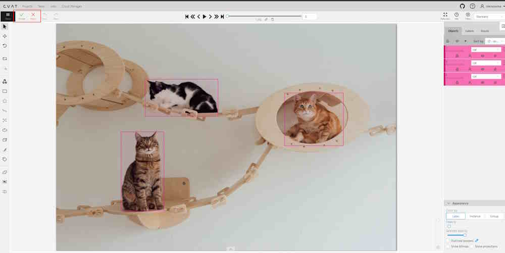
Accepting job
To accept the annotated job, do the following:
Go to the Toloka task and open the job.
Review the result of annotation and in case all is fine, on the top menu,
click Accept.
Optionally, you may add comment.
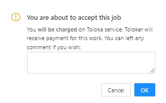
Click OK.
Rejecting job
Note, that Toloker can open dispute and appeal the rejected
job on the Toloka platform.
To reject the annotated job, do the following:
Go to the Toloka task and open the job.
On the top menu, you will see Accept and Reject buttons.
Review the result of the annotation and in case something is wrong,
on the top menu, click Reject.
Add comment why this work was rejected
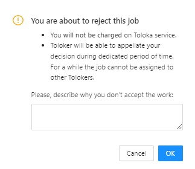
Click OK.
After you reject the job, the menu bar will change and only the Accept
button will be active.
Rejected job can be accepted later.
Moving Toloka pool to archive
After annotation is complete, you can move
the Toloka pools to archive without
archiving the whole Project.
Note, that to archive pool, all jobs within task
must be in the Complete state.
Note, that pool must accepted and
without active assignments on the Toloka
side.
Keep in mind, that if you
Rejected the job, it will not become
unassigned immediately, to give
Toloker time to open a dispute.
To archive complete jobs, do the following:
Open Toloka task, and go to Actions.
(Optional) If the task is ongoing, select Stop Toloka pool.
Select Archive Toloka pool
In the pop-up click OK.
Moving Toloka project to archive
After annotation is completed, you can move the Toloka project to the archive.
Note that all jobs must be complete.
Tasks must not have active assignments or assignments that are being disputed.
All project pools must be closed/archived.
Open Toloka project, go to Actions > Archive Toloka project.
In the pop-up, click Yes.
Resource sync between CVAT and Toloka
There are two types of synchronization between CVAT and Toloka:
Explicit synchronization: Triggered manually by the requester
by clicking the Sync Toloka project/Sync Toloka pool button within the CVAT interface.
Implicit Synchronization: Occurs automatically at predetermined intervals.
Resources that have been requested by users will be synchronized
without any manual intervention.
Acceptance/Rejection synchronization
In addition to project and pool synchronization, it is essential to synchronize
the status of assignments. If a requester accepts or rejects an assignment
through Toloka’s client interface, this action automatically
synchronizes with CVAT to ensure that the data remains
current and consistent across both platforms.
3 - Frequently asked questions
Answers to frequently asked questions
How to migrate data from CVAT.org to CVAT.ai
Please follow the export tasks and projects guide to
download an archive with data which corresponds to your task or project. The backup for a
project will have all tasks which are inside the project. Thus you don’t need to export
them separately.
To change the hostname, simply set the CVAT_HOST environment variable
exportCVAT_HOST=<YOUR_HOSTNAME_OR_IP>
NOTE, if you’re using docker compose with sudo to run CVAT, then please add the -E (or --preserve-env)
flag to preserve the user environment variable which set above to take effect in your docker containers:
sudo -E docker compose up -d
If you want to change the default web application port, change the ports part of traefik service configuration
in docker-compose.yml
Note that changing the port does not make sense if you are using HTTPS - port 443 is conventionally
used for HTTPS connections, and is needed for Let’s Encrypt TLS challenge.
How to configure connected share folder on Windows
Follow the Docker manual and configure the directory that you want to use as a shared directory:
The uploaded data is stored in the cvat_data docker volume:
volumes:- cvat_data:/home/django/data
Where are annotations stored
Annotations are stored in the PostgreSQL database. The database files are stored in the cvat_db docker volume:
volumes:- cvat_db:/var/lib/postgresql/data
How to mark job/task as completed
The status is set by the user in the Info window
of the job annotation view.
There are three types of status: annotation, validation or completed.
The status of the job changes the progress bar of the task.
How to upload annotations to an entire task from UI when there are multiple jobs in the task
You can upload annotation for a multi-job task from the Dasboard view or the Task view.
Uploading of annotation from the Annotation view only affects the current job.
How to specify multiple hostnames
To do this, you will need to edit traefik.http.<router>.cvat.rule docker label for both the
cvat and cvat_ui services, like so
(see the documentation on Traefik rules for more details):
My server uses a custom SSL certificate and I don’t want to check it.
You can call control SSL certificate check with the --insecure CLI argument.
For SDK, you can specify ssl_verify = True/False in the cvat_sdk.core.client.Config object.
4 - Paid features
Setting up paid features in CVAT.
We provide a variety of premium features exclusively for our paying customers.
This article provides tips on how to effectively manage your
CVAT subscriptions, including tracking expenses and canceling
unnecessary subscriptions, to optimize your finances and save time.
Whether you’re a business owner or an individual,
you’ll learn how to take control of your subscriptions and manage them.
Account/Month: The Pro plan has a fixed price and is
designed for personal use only. It doesn’t allow collaboration with team members,
but removes all the other limits of the Free plan.
Note: Although it allows the creation of an organization and
access for up to 3 members – it is for trial purposes only,
organization and members will have all the limitations of the Free plan.
Team plan
Member/ month: The Team plan allows you to create
an organization and add team members who can collaborate on projects.
The monthly payment for the plan depends on the number of team members you’ve added.
All limits of the Free plan will be removed.
Note: The organization owner is also part of the team.
So, if you have three annotators working, you’ll need to pay
for 4 seats (3 annotators + 1 organization owner).
Payment methods
This section describes how to change or add payment methods.
Paying with bank transfer
Note at the moment this method of payment
work only with US banks.
To pay with bank transfer:
Go to the Upgrade to Pro/Team plan> Get started.
Click US Bank Transfer.
Upon successful completion of the payment, the you will receive a receipt via email.
Note that the completion of the payment process may take up to three banking days.
Change payment method on Pro plan
Access Manage Pro Plan > Manage and click +Add Payment Method
Change payment method on Team plan
Access Manage Team Plan > Manage and click +Add Payment Method.
Adding and removing team members
This section describes how to add team members
to collaborate within one team.
Pro plan
Not available.
Team plan
Go to the Manage Team plan > Manage > Update quantity.
If you’ve added a user before the current billing period ends,
the payment will be prorated for the remaining time until the
next billing cycle begins. From the following month onward,
the full payment will be charged.
In case you removed the user before the current billing period ends,
funds will not be returned to your account,
but next month you will pay less by the amount of unused funds.
Change plan
The procedure is the same for both Pro and Team plans.
If for some reason you want to change your plan, you need to:
Paid plans are not mutually exclusive.
You can have several active subscriptions,
for example, the Pro plan and several Team
plans for different organizations.
Cancel plan
This section describes how to cancel your CVAT subscription
and what will happen to your data.
What will happen to my data?
Once you have terminated your subscription, your data will remain
accessible within the system for a month. During this period,
you will be unable to add new tasks and free plan limits will be applied.
In case you possess a substantial amount of data,
it will be switched to read-only mode. It means
you will not be able to save annotations, add any resources,
and so on.
Following the one month, you will receive a
notification requesting you to either remove the
excess data or it will be deleted automatically.
Pro plan
Access Manage Pro Plan > Manage > Cancel plan
Please, fill out the feedback form, to help us improve our platform.
Team plan
Access Manage Team plan > Manage -> Cancel plan
Please, fill out the feedback form, to help us improve our platform.
Plan renewal
This section describes how to renew your
CVAT subscription
Pro plan
Access Manage Pro Plan > Manage > Renew plan
Team plan
Access Manage Team Plan > Manage > Renew plan
4.2 - Social auth configuration
Social accounts authentication for Self-Hosted solution
On the left menu, select OAuth consent, then select
User type (Internal or External), and click Create.
On the OAuth consent screen fill all required fields, and click Save and Continue.
On the Scopes screen, click Add or remove scopes and
select auth/userinfo.email, auth/userinfo.profile, and openid.
Click Update, and Save and Continue.
For more information, see Configure Auth Consent.
On the left menu, click Credentials, on the top
menu click + Create credentials, and select OAuth client ID.
From the Application Type select Web application and
configure: Application name, Authorized JavaScript origins, Authorized redirect URIs.
For example, if you plan to deploy CVAT instance on https://localhost:8080, add https://localhost:8080
to authorized JS origins and https://localhost:8080/api/auth/social/goolge/login/callback/ to redirect URIs.
Create conпiguration file in CVAT:
Create the auth_config.yml file with the following content:
There are 2 basic steps to enable GitHub account authentication.
Open the GitHub settings page.
On the left menu, click <> Developer settings > OAuth Apps > Register new application.
For more information, see Creating an OAuth App
Fill in the name field, set the homepage URL (for example: https://localhost:8080),
and authorization callback URL (for example: https://localhost:8080/api/auth/social/github/login/callback/).
Create conпiguration file in CVAT:
Create the auth_config.yml file with the following content:
Note: You can also configure GitHub App,
but don’t forget to add required permissions.
In the Permission > Account permissions > Email addresses must be set to read-only.
Fill in the name field, set the homepage URL (for example: https://localhost:8080),
and authorization callback URL (for example: https://localhost:8080/api/auth/social/amazon-cognito/login/callback/).
Create conпiguration file in CVAT:
Create the auth_config.yml file with the following content:
This section contains documents for CVAT simple and advanced users
5.1 - Basics
This section contains basic documents for CVAT users
5.1.1 - Registration
App CVAT user registration and account access.
To start to annotate in CVAT, you need to
create an account or log in to the existing account.
This section describes App CVAT, that is suitable
for small personal projects, that do not require user management.
It is also ok to use if you just want to try what is CVAT.
While it is easy to use, it has some limitations.
For example, in App CVAT you cannot create a superuser (admin account)
or administer user roles. All these features are available
for Admin user in
local version of CVAT.
To creata account or log in, go to the App CVAT login page:
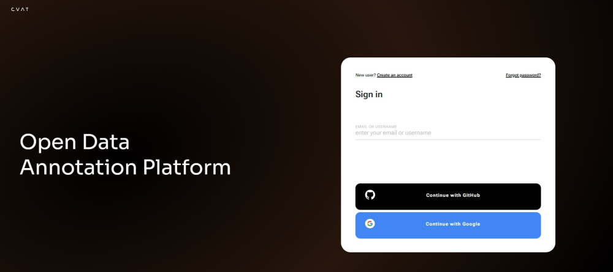
Note: By default authentication and registration with Google and GitHub work only for App CVAT. If you want to use Google and GitHub authentication on a local installation, see Social auth configuration.
User registration
To register as a non-admin user, do the following:
Click Create an account.
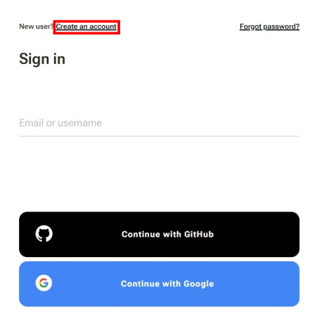
Fill in all blank fields, accept terms of use, and
click the Create an account button.
A username generates from the email automatically. You can edit it if needed.
To register with Google or GitHub, click the button with the name of the service, and follow instructions on the screen.
Account access
To access your account, do the following:
Go to the login page.
Enter username or email. The password field will appear.
Enter the password and click Next.
To log in with Google or GitHub, click the button with the name of the service.
5.1.2 - Create annotation task
How to create and configure an annotation task.
To start annotating in CVAT, you need to create an annotation task and specify its parameters.
To create a task, on the Tasks page click + and
select Create new task.
In the Name field, enter the name of the new task.
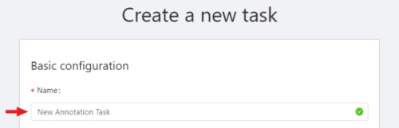
(Optional) From the Projects drop-down, select a project for the new task.
Leave this field empty if you do not want to assign the task to any project.
Note: Following steps are valid if the task does not belong to a project.
If the task has been assigned to a project, the project’s labels will be applied to the task.
On the Constructor tab, click Add label.
The label constructor menu will open:
In the Label name field, enter the name of the label.
(Optional) To limit the use of the label to a certain shape tool,
from the Label shape drop-down select the shape.
Click Select files to upload files for annotation.
Click Continue to submit the label and start adding a new one
or Cancel to terminate the current label and return you to the labels list.
Click Submit and open to submit the configuration and open the created task,
or Submit and continue, to submit the configuration and start a new task.
Label shape
Labels (or classes) are categories of objects that you can annotate.
Label shape limits the use of the label to certain shape tool.
Any is the default setting that does not limit the use of the
label to any particular shape tool.
For example, you added:
Label sun with the Label shape type ellipse
Label car with the Label shape type any
As a result:
The sun label will be available only for ellipse shape.
The car label will be available for all shapes.
The tools on the Controls sidebar
will be limited to the selected types of shapes.
For example, if you select Any,
all tools will be available,
but if you select Rectangle for all labels,
only the Rectangle tool will be
visible on the sidebar.
Note: You cannot apply the Label shape
to the AI and OpenCV tools,
these tools will always be available.
You can change the shape of the label as needed.
This change will not affect the existing annotation.
For example, if you created objects using polygons and then changed
the label shape to polylines, all previously created objects will remain
polygons. However, you will not be able to add new polygon
objects with the same label.
Note: You cannot change the shape of the skeleton label.
The Label shape field for the skeleton label is disabled.
Add an attribute
Attribute is a property of an annotated object,
such as color, model, or other quality.
For example, you have a label for face and want to
specify the type of face. Instead of creating additional
labels for male and female, you can use attributes
to add this information.
There are two types of attributes:
Immutable attributes are unique and do not change from frame to frame.
For example, age, gender, and color.
Mutable attributes are temporary and can change from frame to frame.
For example, pose, quality, and truncated.
Added attributes will be available from the Objects menu:
To add an attribute, do the following:
Go to the Constructor tab and click Add attribute.
In the Name field enter the name of the attribute.
From the drop-down, select way to display the attribute in the Objects menu:
Select enables a drop-down list, from which you can select an attribute. If in
the Attribute value field you add __undefined__,
the drop-down list will have a blank value.
This is useful for cases where the attribute of the object cannot be clarified:
Radio enables the selection of one option from several options.
Checkbox enables the selection of multiple options.
Text sets the attribute to a text field.
Number sets the attribute to numerical field in the following format: min;max;step.
In the Attribute values field, add attribute values. To separate values use Enter.
To delete value, use Backspace or click x next to the value name.
(Optional) For mutable attributes, select Mutable.
(Optional) To set the default attribute, hover over it with mouse cursor and
click on it. The default attribute will change color to blue.
To delete an attribute, click Delete attribute.
Select files
There are several ways to upload files:
Data source
Description
My computer
Use this option to select files from your laptop or PC. To select file: 1. Click on the Select files field: . 2. Select files to upload.
Connected file share
Advanced option. Upload files from a local or cloud shared folder. Note, that you need to mount a fileshare first. For more information, see Share path
Remote source
Enter a list of URLs (one per line) in the field.
Cloud Storage
Advanced option. To upload files from cloud storage, type the cloud storage name, choose the manifest file, and select the required files. For more information, see Attach cloud storage
Editing labels in RAW format
The Raw is a way of working with labels for an advanced user.
It is useful when you need to copy labels from one independent task to another.
Note: Be careful with changing the raw specification of an existing task/project.
Removing any “id” properties will lead to losing existing annotations.
This property will be removed automatically from any text you insert to this field.
Raw presents label data in .json format with an option of editing and copying labels as text.
The Done button applies the changes and the Reset button cancels the changes.
Data formats for a 3D task
To create a 3D task, you must prepare an archive with one of the following directory structures.
Note: You can’t mix 2D and 3D data in the same task.
VELODYNE FORMAT
Structure:
velodyne_points/
data/
image_01.bin
IMAGE_00 # unknown dirname,
# generally image_01.png can be under IMAGE_00, IMAGE_01, IMAGE_02, IMAGE_03, etc
data/
image_01.png
3D POINTCLOUD DATA FORMAT
Structure:
pointcloud/
00001.pcd
related_images/
00001_pcd/
image_01.png # or any other image
3D, DEFAULT DATAFORMAT Option 2
Structure:
data/
image_1/
image_1.pcd
context_1.png # or any other name
context_2.jpg
Advanced configuration
Use advanced configuration to set additional parameters for the task
and customize it to meet specific needs or requirements.
The following parameters are available:
Element
Description
Sorting method
Note: Does not work for the video data.
Several methods to sort the data. For example, the sequence 2.jpeg, 10.jpeg, 1.jpeg after sorting will be:
Lexicographica: 1.jpeg, 10.jpeg, 2.jpeg
Natural: 1.jpeg, 2.jpeg, 10.jpeg
Predefined: 2.jpeg, 10.jpeg, 1.jpeg
Random uploads data in random order.
Use zip/video chunks
Use this parameter to divide your video or image dataset for annotation into short video clips a zip file of frames. Zip files are larger but do not require decoding on the client side, and video clips are smaller but require decoding. It is recommended to turn off this parameter for video tasks to reduce traffic between the client side and the server.
Use cache
Select checkbox, to enable on-the-fly data processing to reduce task creation time and store data in a cache with a policy of evicting less popular items.
CVAT has two types of data: original quality and compressed. Original quality images are used for dataset export and automatic annotation. Compressed images are used only for annotations to reduce traffic between the server and client side. It is recommended to adjust the compression level only if the images contain small objects that are not visible in the original quality. Values range from 5 (highly compressed images) to 100 (not compressed
Overlap Size
Use this parameter to create overlapped segments, making tracking continuous from one segment to another.
Note that this functionality only works for bounding boxes.
This parameter has the following options:
Interpolation task (video sequence). If you annotate with a bounding box on two adjacent segments, they will be merged into a single bounding box. In case the overlap is zero or the bounding box is inaccurate (not enclosing the object properly, misaligned or distorted) on the adjacent segments, it may be difficult to accurately interpole the object’s movement between the segments. As a result, multiple tracks will be created for the same object.
Annotation task (independent images). If an object exists on overlapped segments with overlap greater than zero, and the annotation of these segments is done properly, then the segments will be automatically merged into a single object. If the overlap is zero or the annotation is inaccurate (not enclosing the object properly, misaligned, distorted) on the adjacent segments, it may be difficult to accurately track the object. As a result, multiple bounding boxes will be created for the same object.
If the annotations on different segments (on overlapped frames) are very different, you will have two shapes for the same object.
To avoid this, accurately annotate the object on the first segment and the same object on the second segment to create a track between two annotations.
Segment size
Use this parameter to divide a dataset into smaller parts. For example, if you want to share a dataset among multiple annotators, you can split it into smaller sections and assign each section to a separate job. This allows annotators to work on the same dataset concurrently.
Start frame
Defines the first frame of the video.
Stop frame
Defines the last frame of the video.
Frame Step
Use this parameter to filter video frames or images in a dataset. Specify frame step value to include only certain frames or images in the dataset. For example, if the frame step value is 25, the dataset will include every 25th frame or image. If a video has 100 frames, setting the frame step to 25 will include only frames 1, 26, 51, 76, and 100 in the dataset. This can be useful for reducing the size of the dataset, or for focusing on specific frames or images that are of particular interest.
Chunk size
Defines amount of frames to be packed in a chunk when send from client to server. The server defines automatically if the chunk is empty. Recommended values:
1080p or less: 36
2k or less: 8
16 - 4k or less: 4
8 - More: 1 - 4
Dataset repository
Advanced option. URL link of the repository that specifies the path to the repository for storage (default: annotation / <dump_file_name> .zip). Supports .zip and .xml formats.
Field format: URL [PATH] example: https://github.com/project/repos.git [1/2/3/4/annotation.xml]
Supported URL formats:
https://github.com/project/repos[.git]
github.com/project/repos[.git]
git@github.com:project/repos[.git]
After the task is created, the synchronization status will show up on the task page. If you specify a dataset repository, when you create a task, you will see a message about the need to grant access with the ssh key. This is the key you need to add to your github account. For other git systems, you can learn about adding an ssh key in their documentation.
Use LFS
Advanced option. Use this parameter for big annotation files, to create a repository with LFS support.
Issue tracker
Use this parameter to specify the issue tracker URL.
Source storage
Specify the source storage for importing resources like annotations and backups. If the task was assigned to the project, use the Use project source storage toggle to determine whether to use project values or specify new ones.
Target storage
Specify the target storage (local or cloud) for exporting resources like annotations and backups. If the task is created in the project, use the Use project target storage toggle to determine whether to use project values or specify new ones.
To save and open the task, click Submit & Open .
To create several tasks in sequence, click Submit & Continue.
Created tasks will be displayed on the tasks page.
5.1.3 - Create multi tasks
Step-by-step guide on how to create and set up multiple tasks
Use Create multi tasks to create multiple video annotation tasks with the same configuration.
The Сreate multi tasks feature is available for videos only.
To create the multi tasks, on the Tasks page click + and
select Create multi tasks.
To add several tasks in one go, open the task configurator:
And specify the following parameters:
In the Name field, enter the name of the new task:
Enter the name of the task. If the name includes more than one word, use the underscore: Word1 word2 word3
(Optional) {{index}} adds an index to the file in the set (starting from 0).
(Optional) {{file_name}} adds the file’s name to the task’s name.
Note: use hyphen between three parameters: Word1 word2 word3 {{index}} {{file_name}}
(Optional) From the Projects drop-down, select a project for the tasks.
Leave this field empty if you do not want to assign tasks to any project.
Note: Following steps are valid if the tasks do not belong to a project.
If the tasks have been assigned to a project, the project’s labels will be applied to the tasks.
On the Constructor tab, click Add label.
In the Label name field, enter the name of the label.
On the jobs page, users (for example, with the worker role)
can see the jobs that are assigned to them without having access to the task page,
as well as track progress, sort and apply filters to the job list.
On the job page there is a list of jobs presented in the form of tiles, where each tile is one job.
Each element contains:
menu to navigate to a task, project, or bug tracker.
To open the job in a new tab, click on the job by holding Ctrl.
In the upper left corner there is a search bar, using which you can find the job by assignee, stage, state, etc.
In the upper right corner there are sorting, quick filters and filter.
Assignee is the user who is working on the job. (is specified on task page)
Last updated
last modified date and time (or value range)
The date can be entered in the dd.MM.yyyy HH:mm format or by selecting the date in the window that appears when you click on the input field
ID
number or range of job ID
Task ID
number or range of task ID
Project ID
number or range of project ID
Task name
task name
Set when creating a task, can be changed on the (task page)
Project name
project name
Specified when creating a project, can be changed on the (project section)
5.1.5 - Tasks page
Overview of the Tasks page.
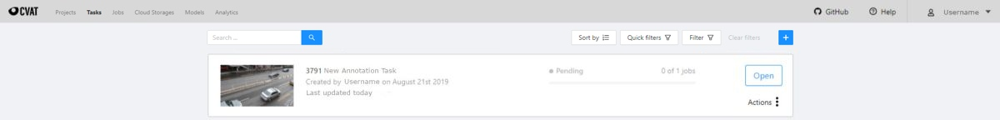
The tasks page contains elements and each of them relates to a separate task. They are sorted in creation order.
Each element contains: task name, preview, progress bar, button Open, and menu Actions.
Each button is responsible for a in menu Actions specific function:
Export task dataset — download annotations or annotations and images in a specific format.
More information is available in the export/import datasets
section.
Upload annotation upload annotations in a specific format.
More information is available in the export/import datasets
section.
Automatic Annotation — automatic annotation with OpenVINO toolkit.
Presence depends on how you build the CVAT instance.
Backup task — make a backup of this task into a zip archive.
Read more in the backup section.
Move to project — Moving a task to a project (you can move only a task which does not belong to any project).
In case of label mismatch, you can create or delete necessary labels in the project/task.
Some task labels can be matched with the target project labels.
Delete — delete task.
In the upper left corner there is a search bar, using which you can find the task by assignee, task name etc.
In the upper right corner there are sorting, quick filters and filter.
Task details is a task page which contains a preview, a progress bar
and the details of the task (specified when the task was created) and the jobs section.
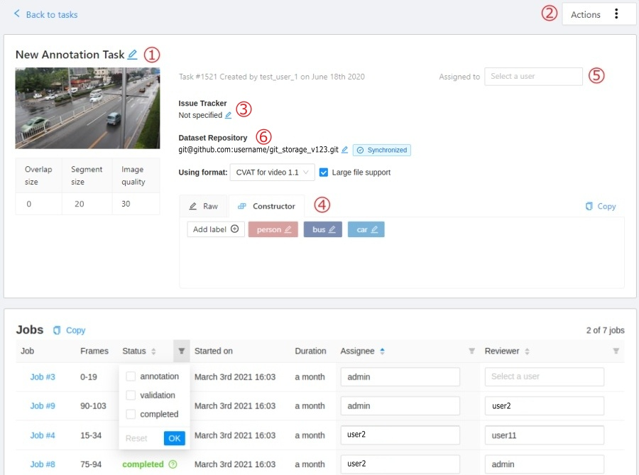
The next actions are available on this page:
Change the task’s title.
Open Actions menu.
Change issue tracker or open issue tracker if it is specified.
Change labels (available only if the task is not related to the project).
You can add new labels or add attributes for the existing labels in the Raw mode or the Constructor mode.
By clicking Copy you will copy the labels to the clipboard.
Assigned to — is used to assign a task to a person. Start typing an assignee’s name and/or
choose the right person out of the dropdown list.
In the list of users, you will only see the users of the organization
where the task is created.
Dataset Repository
Repository link
Synchronization status with dataset repository.
When you click on the status, the current annotation will be sent. It has several states:
Synchronized - task synchronized, that is, created a pull of requisites with an actual annotation file.
Merged - merged pull request with up-to-date annotation file.
Synchronize - highlighted in red, annotations are not synced.
Use a format drop-down list of formats in which the annotation can be synchronized.
Jobs — is a list of all jobs for a particular task. Here you can find the next data:
Jobs name with a hyperlink to it.
Frames — the frame interval.
A stage of the job. The stage is specified by a drop-down list.
There are three stages: annotation, validation or acceptance. This value affects the task progress bar.
A state of the job. The state can be changed by an assigned user in the menu inside the job.
There are several possible states: new, in progress, rejected, completed.
Started on — start date of this job.
Duration — is the amount of time the job is being worked.
Assignee is the user who is working on the job.
You can start typing an assignee’s name and/or choose the right person out of the dropdown list.
Reviewer – a user assigned to carry out the review,
read more in the review section.
Copy. By clicking Copy you will copy the job list to the clipboard.
The job list contains direct links to jobs.
You can filter or sort jobs by status, as well as by assigner or reviewer.
Follow a link inside Jobs section to start annotation process.
In some cases, you can have several links. It depends on size of your
task and Overlap Size and Segment Size parameters. To improve
UX, only the first chunk of several frames will be loaded and you will be able
to annotate first images. Other frames will be loaded in background.
5.1.7 - Interface of the annotation tool
Main user interface
The tool consists of:
Header - pinned header used to navigate CVAT sections and account settings;
Top panel — contains navigation buttons, main functions and menu access;
Controls sidebar — contains tools for navigating the image, zoom,
creating shapes and editing tracks (merge, split, group);
Objects sidebar — contains label filter, two lists:
objects (on the frame) and labels (of objects on the frame) and appearance settings.
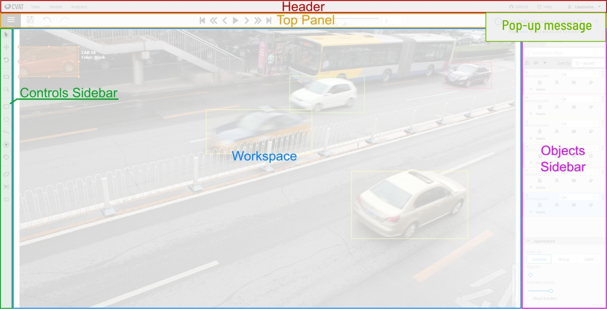
Pop-up messages
In CVAT, you’ll receive pop-up messages in the upper-right corner, on any page.
Pop-up messages can contain useful information, links, or error messages.
Continue to the frame on which the work on the job is finished
When you open a job that you previously worked on, you will receive pop-up messages with a proposal
to go to the frame that was visited before closing the tab.
Error Messages
If you perform impossible actions, you may receive an error message.
The message may contain information about the error
or a prompt to open the browser console (shortcut F12) for information.
If you encounter a bug that you can’t solve yourself,
you can create an issue on GitHub.
5.1.8 - Basic navigation
Overview of basic controls.
Use arrows below to move to the next/previous frame.
Use the scroll bar slider to scroll through frames.
Almost every button has a shortcut.
To get a hint about a shortcut, just move your mouse pointer over an UI element.
To navigate the image, use the button on the controls sidebar.
Another way an image can be moved/shifted is by holding the left mouse button inside
an area without annotated objects.
If the Mouse Wheel is pressed, then all annotated objects are ignored. Otherwise the
a highlighted bounding box will be moved instead of the image itself.
You can use the button on the sidebar controls to zoom on a region of interest.
Use the button Fit the image to fit the image in the workspace.
You can also use the mouse wheel to scale the image
(the image will be zoomed relatively to your current cursor position).
5.1.9 - Top Panel
Overview of controls available on the top panel of the annotation tool.
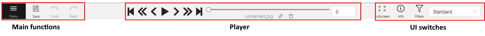
Menu button
It is the main menu of the annotation tool. It can be used to download, upload and remove annotations.
Button assignment:
Upload Annotations — uploads annotations into a task.
Export as a dataset — download a data set from a task in one of the supported formats.
You can also enter a Custom name and enable the Save images
checkbox if you want the dataset to contain images.
Remove Annotations — calls the confirmation window if you click Delete, the annotation of the current job
will be removed, if you click Select range you can remove annotation on range frames, if you activate checkbox
Delete only keyframe for tracks then only keyframes will be deleted from the tracks, on the selected range.
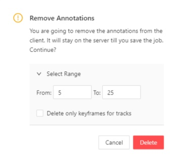
Open the task — opens a page with details about the task.
Change job state - changes the state of the job (new, in progress, rejected, completed).
Finish the job/Renew the job - changes the job stage and state
to acceptance and completed / annotation and new correspondingly.
Save Work
Saves annotations for the current job. The button has an indication of the saving process.
Undo-redo buttons
Use buttons to undo actions or redo them.
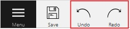
Done
Used to complete the creation of the object. This button appears only when the object is being created.
Block
Used to pause automatic line creation when drawing a polygon with
OpenCV Intelligent scissors.
Also used to postpone server requests when creating an object using AI Tools.
When blocking is activated, the button turns blue.
Player
Go to the first /the latest frames.
Go to the next/previous frame with a predefined step. Shortcuts:
V — step backward, C — step forward. By default the step is 10 frames
(change at Account Menu —> Settings —> Player Step).
The button to go to the next / previous frame has the customization possibility.
To customize, right-click on the button and select one of three options:
The default option - go to the next / previous frame (the step is 1 frame).
Go to the next / previous frame that has any objects (in particular filtered).
Read the filter section to know the details how to use it.
Go to the next / previous frame without annotation at all.
Use this option in cases when you need to find missed frames quickly.
Shortcuts: D - previous, F - next.
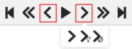
Play the sequence of frames or the set of images.
Shortcut: Space (change at Account Menu —> Settings —> Player Speed).
Go to a specific frame. Press ~ to focus on the element.
To delete frame.
Shortcut: Alt+Del
Fullscreen Player
The fullscreen player mode. The keyboard shortcut is F11.
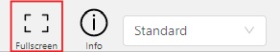
Info
Open the job info.
Overview:
Assignee - the one to whom the job is assigned.
Reviewer – a user assigned to carry out the review,
read more in the review section.
Start Frame - the number of the first frame in this job.
End Frame - the number of the last frame in this job.
Frames - the total number of all frames in the job.
Annotations statistics:
This is a table number of created shapes, sorted by labels (e.g. vehicle, person)
and type of annotation (shape, track). As well as the number of manual and interpolated frames.
UI switcher
Switching between user interface modes.
5.1.10 - Controls sidebar
Overview of available functions on the controls sidebar of the annotation tool.
Navigation
Navigation block - contains tools for moving and rotating images.
Icon
Description
Cursor (Esc)- a basic annotation pedacting tool.
Move the image- a tool for moving around the image without the possibility of editing.
Rotate- two buttons to rotate the current frame a clockwise (Ctrl+R) and anticlockwise (Ctrl+Shift+R). You can enable Rotate all images in the settings to rotate all the images in the job
Zoom
Zoom block - contains tools for image zoom.
Icon
Description
Fit image- fits image into the workspace size. Shortcut - double click on an image
Select a region of interest- zooms in on a selected region. You can use this tool to quickly zoom in on a specific part of the frame.
Shapes
Shapes block - contains all the tools for creating shapes.
Overview of available functions on the objects sidebar of the annotation tool.
In the objects sidebar, you can see the list of available objects on the current
frame. The following figure is an example of how the list might look like:
Shape mode
Track mode
Objects properties
Filter input box
The way how to use filters is described in the advanced guide here.
List of objects
Switch lock property for all - switches lock property of all objects in the frame.
Switch hidden property for all - switches hide the property of all objects in the frame.
Expand/collapse all - collapses/expands the details field of all objects in the frame.
Sorting - sort the list of objects: updated time, ID - accent, ID - descent
Objects on the sidebar
The type of shape can be changed by selecting the Label property.
For instance, it can look like shown in the figure below:
Object action menu
The action menu calls up the button:
The action menu contains:
Create object URL - puts a link to an object on the clipboard.
After you open the link, this object will be filtered.
Make a copy - copies an object. The keyboard shortcut is Ctrl + C > Ctrl + V.
Propagate function copies the form to multiple frames
and displays a dialog box where you can specify the number
of copies or the frame to which you want to copy the object.
The keyboard shortcut is Ctrl + B. There are two options available:
Propagate forward () creates a
copy of the object on Nsubsequent frames at the same position.
Propagate backward () creates
a copy of the object on Nprevious frames at the same position.
To background - moves the object to the background. The keyboard shortcut - or _
To foreground - moves the object to the foreground. The keyboard shortcut + or =
Change instance color- choosing a color using the color picker (available only in instance mode).
Remove - removes the object. The keyboard shortcut Del, Shift+Del.
A shape can be locked to prevent its modification or moving by an accident. Shortcut to lock an object: L.
A shape can be Occluded. Shortcut: Q. Such shapes have dashed boundaries.
You can change the way an object is displayed on a frame (show or hide).
Switch pinned property - when enabled, a shape cannot be moved by dragging or dropping.
**Tracker switcher **- enable/disable tracking for the object.
By clicking on the Details button you can collapse or expand the field with all the attributes of the object.
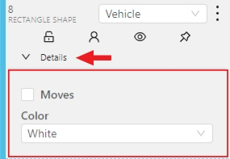
Labels
In this tab, you can lock or hide objects of a certain label.
To change the color for a specific label,
you need to go to the task page and select the color by clicking the edit button,
this way you will change the label color for all jobs in the task.
Fast label change
You can change the label of an object using hotkeys.
In order to do it, you need to assign a number (from 0 to 9) to labels.
By default numbers 1,2…0 are assigned to the first ten labels.
To assign a number, click on the button placed at the right of a label name on the sidebar.
After that, you will be able to assign a corresponding label to an object
by hovering your mouse cursor over it and pressing Ctrl + Num(0..9).
In case you do not point the cursor to the object, pressing Ctrl + Num(0..9) will set a chosen label as default,
so that the next object you create (use the N key) will automatically have this label assigned.
Appearance
Color By options
Change the color scheme of the annotation:
Instance — every shape has a random color
Group — every group of shape has its own random color, ungrouped shapes are white
Label — every label (e.g. car, person) has its own random color
You can change any random color pointing to a needed box on a frame or on an
object sidebar.
Fill Opacity slider
Change the opacity of every shape in the annotation.
Selected Fill Opacity slider
Change the opacity of the selected object’s fill. It is possible
to change the opacity while drawing an object in the case
of rectangles, polygons, and cuboids.
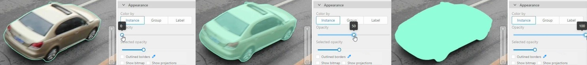
Outlines borders checkbox
You can change a special shape border color by clicking on the Eyedropper icon.
Show bitmap checkbox
If enabled all shapes are displayed in white and the background is black.
Show projections checkbox
Enables/disables the display of auxiliary perspective lines. Only relevant for cuboids
Hide objects sidebar
Hide - the button hides the object’s sidebar.
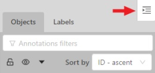
5.1.12 - Workspace
Overview of available functions on the workspace of the annotation tool.
This is the main field in which drawing and editing objects takes place.
In addition the workspace also has the following functions:
Right-clicking on an object calls up the Object card - this is an element containing
the necessary controls for changing the label and attributes of the object, as well as the action menu.
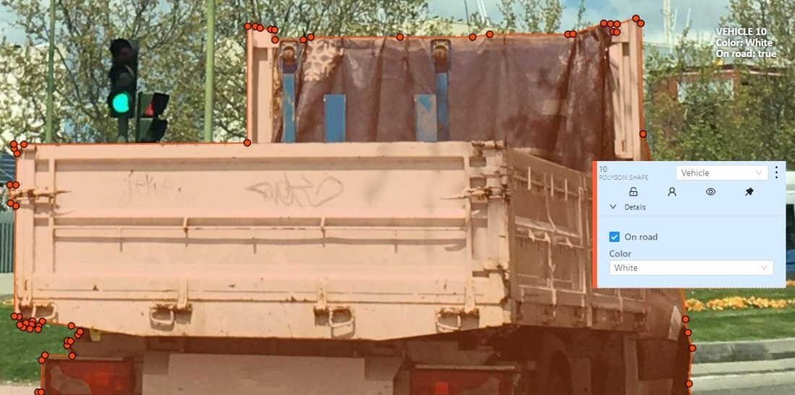
Right-clicking a point deletes it.
Z-axis slider - Allows you to switch annotation layers hiding the upper layers
(slider is enabled if several z layers are on a frame).
This element has a button for adding a new layer. When pressed, a new layer is added and switched to it.
You can move objects in layers using the + and - keys.
Image settings panel - used to set up the grid and set up image brightness contrast saturation.
Show Grid, change grid size, choose color and transparency:
Adjust Brightness/Contrast/Saturation of too exposed or too
dark images using color settings (it affects only how a user sees the image, not the image itself).
Reset color settings to default values.
5.1.13 - 3D task workspace
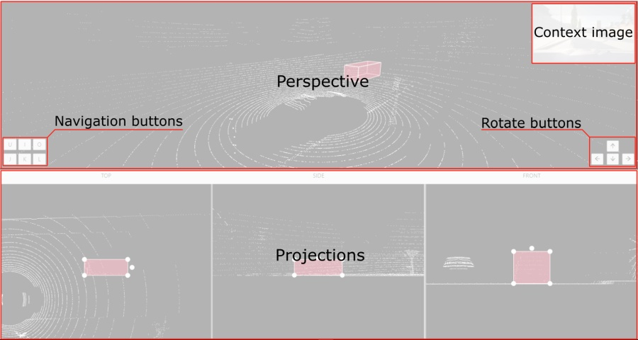
If the related_images folder contains any images, a context image will be available in the perspective window.
The contextual image could be compared to 3D data and would help to identify the labels of marked objects.
Perspective – a main window for work with objects in a 3D task.
Projections - projections are tied to an object so that a cuboid is in the center and looks like a rectangle.
Projections show only the selected object.
Top – a projection of the view from above.
Side – a projection of the left side of the object.
Front - a frontal projection of the object.
5.1.14 - Standard 3D mode (basics)
Standard 3d mode - Designed to work with 3D data.
The mode is automatically available if you add PCD or Kitty BIN format data when you create a task.
read more
You can adjust the size of the projections, to do so, simply drag the boundary between the projections.
5.1.15 - Settings
To open the settings open the user menu in the header and select the settings item or press F2.
Settings have two tabs:
In tab Player you can:
Control step of C and V shortcuts.
Control speed of Space/Play button.
Select canvas background color. You can choose a background color or enter manually (in RGB or HEX format).
Reset zoom Show every image in full size or zoomed out like previous
(it is enabled by default for interpolation mode and disabled for annotation mode).
Rotate all images checkbox — switch the rotation of all frames or an individual frame.
Smooth image checkbox — smooth image when zoom-in it.
smoothed
pixelized
In tab Workspace you can:
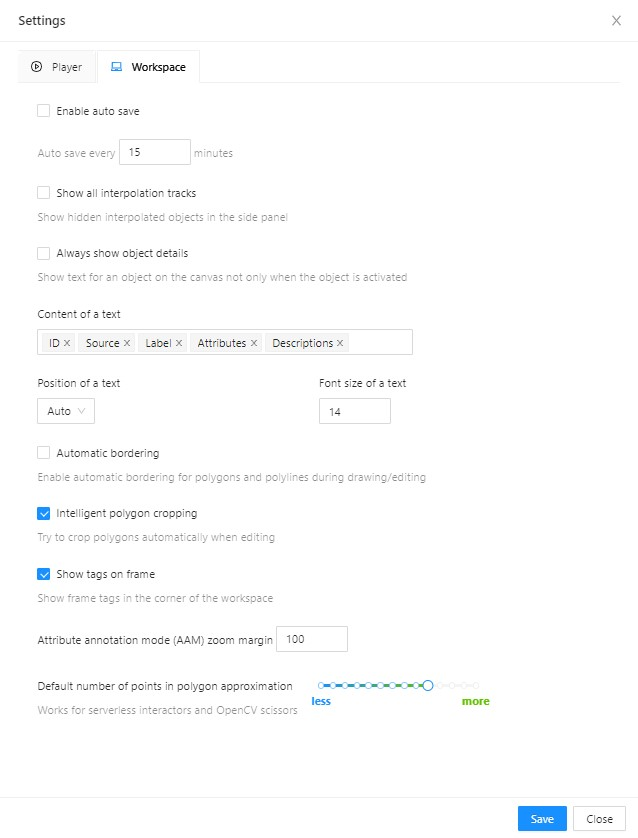
Enable auto save checkbox — turned off by default.
Auto save interval (min) input box — 15 minutes by default.
Show all interpolation tracks checkbox — shows hidden objects on the
side panel for every interpolated object (turned off by default).
Always show object details - show text for an object on the canvas not only when the object is activated:
Content of a text - setup of the composition of the object details:
ID - object identifier.
Attributes - attributes of the object.
Label - object label.
Source- source of creating of objects MANUAL, AUTO or SEMI-AUTO.
Descriptions - description of attributes.
Position of a text - text positioning mode selection:
Auto - the object details will be automatically placed where free space is.
Center - the object details will be embedded to a corresponding object if possible.
Font size of a text - specifies the text size of the object details.
Automatic bordering - enable automatic bordering for polygons and polylines during drawing/editing.
For more information To find out more, go to the section annotation with polygons.
Intelligent polygon cropping - activates intelligent cropping when editing the polygon (read more in the section edit polygon
Show tags on frame - shows/hides frame tags on current frame
Attribute annotation mode (AAM) zoom margin input box — defines margins (in px)
for shape in the attribute annotation mode.
Control points size — defines a size of any interactable points in the tool
(polygon’s vertices, rectangle dragging points, etc.)
Default number of points in polygon approximation
With this setting, you can choose the default number of points in polygon.
Works for serverless interactors and OpenCV scissors.
Click Save to save settings (settings will be saved on the server and will not change after the page is refreshed).
Click Cancel or press F2 to return to the annotation.
5.1.16 - Types of shapes
List of shapes available for annotation.
There are several shapes with which you can annotate your images:
Rectangle or Bounding box
Polygon
Polyline
Points
Ellipse
Cuboid
Cuboid in 3d task
Skeleton
Tag
And there is how they all look like:
Tag - has no shape in the workspace, but is displayed in objects sidebar.
5.1.17 - Shape mode (basics)
Usage examples and basic operations available during annotation in shape mode.
Usage examples:
Create new annotations for a set of images.
Add/modify/delete objects for existing annotations.
You need to select Rectangle on the controls sidebar:
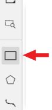
Before you start, select the correct Label (should be specified by you when creating the task)
and Drawing Method (by 2 points or by 4 points):
Creating a new annotation in Shape mode:
Create a separate Rectangle by clicking on Shape.
Choose the opposite points. Your first rectangle is ready!
To learn more about creating a rectangle read here.
It is possible to adjust boundaries and location of the rectangle using a mouse.
Rectangle’s size is shown in the top right corner , you can check it by clicking on any point of the shape.
You can also undo your actions using Ctrl+Z and redo them with Shift+Ctrl+Z or Ctrl+Y.
You can see the Object card in the objects sidebar or open it by right-clicking on the object.
You can change the attributes in the details section.
You can perform basic operations or delete an object by clicking on the action menu button.
The following figure is an example of a fully annotated frame with separate shapes.
Usage examples and basic operations available during annotation in track mode.
Usage examples:
Create new annotations for a sequence of frames.
Add/modify/delete objects for existing annotations.
Edit tracks, merge several rectangles into one track.
Like in the Shape mode, you need to select a Rectangle on the sidebar,
in the appearing form, select the desired Label and the Drawing method.
Creating a track for an object (look at the selected car as an example):
Create a Rectangle in Track mode by clicking on Track.
In Track mode the rectangle will be automatically interpolated on the next frames.
The cyclist starts moving on frame #2270. Let’s mark the frame as a key frame.
You can press K for that or click the star button (see the screenshot below).
If the object starts to change its position, you need to modify the rectangle where it happens.
It isn’t necessary to change the rectangle on each frame, simply update several keyframes
and the frames between them will be interpolated automatically.
Let’s jump 30 frames forward and adjust the boundaries of the object. See an example below:
After that the rectangle of the object will be changed automatically on frames 2270 to 2300:
When the annotated object disappears or becomes too small, you need to
finish the track. You have to choose Outside Property, shortcut O.
If the object isn’t visible on a couple of frames and then appears again,
you can use the Merge feature to merge several individual tracks
into one.
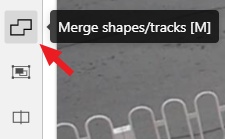
Create tracks for moments when the cyclist is visible:
Click Merge button or press key M and click on any rectangle of the first track
and on any rectangle of the second track and so on:
Click Merge button or press M to apply changes.
The final annotated sequence of frames in Interpolation mode can
look like the clip below:
You can navigate, using the mouse, or navigation keys:
You can also use keyboard shortcuts to navigate:
Action
Keys
Camera rotation
Shift + Arrow (Up, Down, Left, Right)
Left/Right
Alt+J/ Alt+L
Up/down
Alt+U/ Alt+O
Zoom in/ou
Alt+K/ Alt+I
Annotation with cuboids
There are two options available for 3D annotation:
Shape: for tasks like object detection.
Track: uses interpolation to predict the position of objects in subsequent frames.
A unique ID will be assigned to each object and maintained throughout the sequence of images.
Annotation with shapes
To add a 3D shape, do the following:
On the objects pane, select Draw new cuboid >
select the label from the drop-down list > Shape.
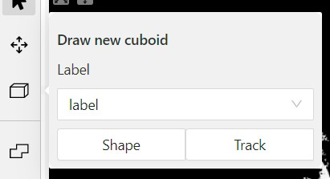
The cursor will be followed by a cuboid.
Place the cuboid on the 3D scene.
Use projections to adjust the cuboid.
Click and hold the left mouse button to edit the label shape on the projection.
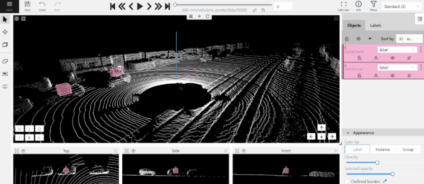
(Optional) Move one of the four points to change the size of the cuboid.
(Optional) To rotate the cuboid, click on the middle point
and then drag the cuboid up/down or to left/right.
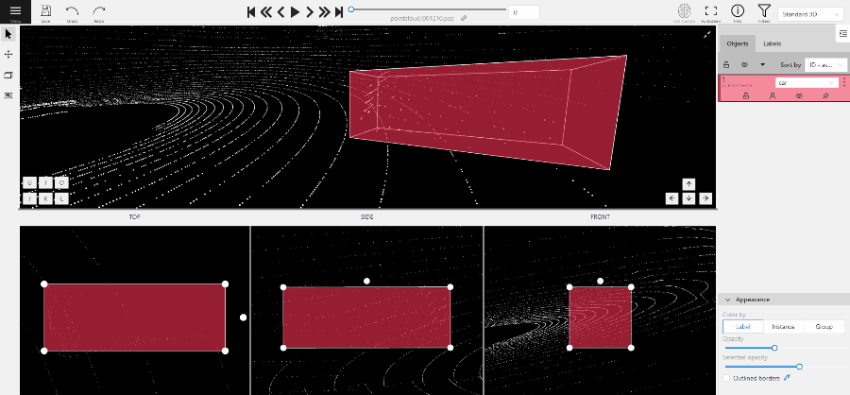
Tracking with cuboids
To track with cuboids, do the following:
On the objects pane, select Draw new cuboid >
select the label from the drop-down list > Track.
The cursor will be followed by a cuboid.
Place the cuboid on the 3D scene.
Use projections to adjust the cuboid.
Click and hold the left mouse button to edit the label shape on the projection.
(Optional) Move one of the four points to change the size of the cuboid.
(Optional) To rotate the cuboid, click on the middle point
and then drag the cuboid up/down or to left/right.
Move several frames forward. You will see the cuboid you’ve added in frame 1.
Adjust it, if needed.
Repeat to the last frame with the presence of the object you are tracking.
For more information about tracking, see Track mode
5.1.20 - Attribute annotation mode (basics)
Usage examples and basic operations available in attribute annotation mode.
In this mode you can edit attributes with fast navigation between objects and frames using a keyboard.
Open the drop-down list in the top panel and select Attribute annotation Mode.
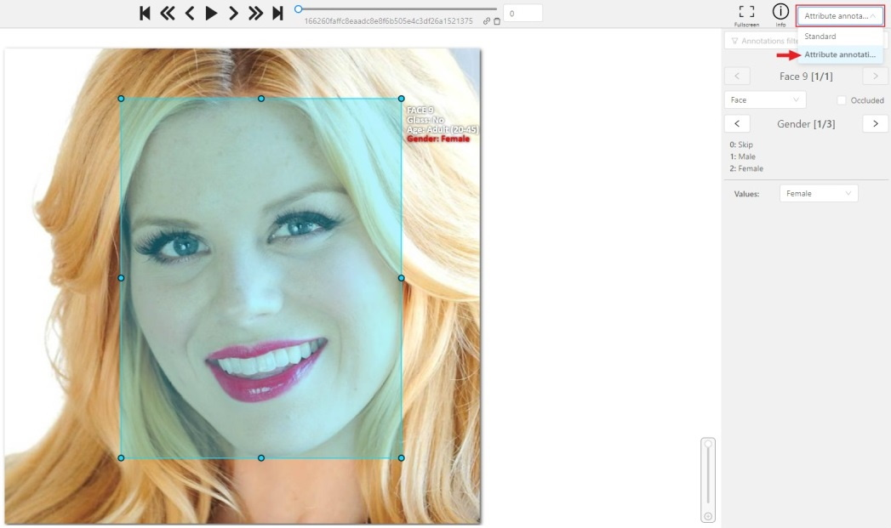
In this mode objects panel change to a special panel :
The active attribute will be red. In this case it is gender . Look at the bottom side panel to see all possible
shortcuts for changing the attribute. Press key 2 on your keyboard to assign a value (female) for the attribute
or select from the drop-down list.
Press Up Arrow/Down Arrow on your keyboard or click the buttons in the UI to go to the next/previous
attribute. In this case, after pressing Down Arrow you will be able to edit the Age attribute.
Use Right Arrow/Left Arrow keys to move to the previous/next image with annotation.
Label is a type of an annotated object (e.g. person, car, vehicle, etc.)
Attribute
Attribute is a property of an annotated object (e.g. color, model,
quality, etc.). There are two types of attributes:
Unique
Unique immutable and can’t be changed from frame to frame (e.g. age, gender, color, etc.)
Temporary
Temporary mutable and can be changed on any frame (e.g. quality, pose, truncated, etc.)
Track
Track is a set of shapes on different frames which corresponds to one object.
Tracks are created in Track mode
Annotation
Annotation is a set of shapes and tracks. There are several types of annotations:
Manual which is created by a person
Semi-automatic which is created mainly automatically, but the user provides some data (e.g. interpolation)
Automatic which is created automatically without a person in the loop
Approximation
Approximation allows you to reduce the number of points in the polygon.
Can be used to reduce the annotation file and to facilitate editing polygons.
Trackable
Trackable object will be tracked automatically if the previous frame was
a latest keyframe for the object. More details in the section trackers.
Mode
Interpolation
Mode for video annotation, which uses track objects.
Only objects on keyframes are manually annotation, and intermediate frames are linearly interpolated.
State of the job. The state can be changed by an assigned user in the menu inside the job.
There are several possible states: new, in progress, rejected, completed.
Stage
Stage of the job. The stage is specified with the drop-down list on the task page.
There are three stages: annotation, validation or acceptance. This value affects the task progress bar.
Subset
A project can have subsets. Subsets are groups for tasks that make it easier to work with the dataset.
It could be test, train, validation or custom subset.
Credentials
Under credentials is understood Key & secret key, Account name and token, Anonymous access, Key file.
Used to attach cloud storage.
Resource
Under resource is understood bucket name or container name.
Used to attach cloud storage.
5.1.22 - Cloud storages page
Overview of the cloud storages page.
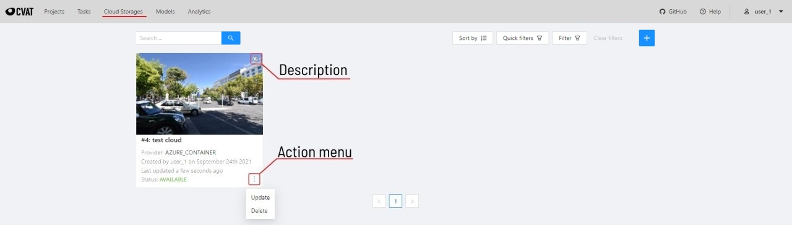
The cloud storages page contains elements, each of them relating to a separate cloud storage.
Each element contains: preview, cloud storage name, provider, creation and update info, status,
? button for displaying the description and the actions menu.
Each button in the action menu is responsible for a specific function:
Update — update this cloud storage
Delete — delete cloud storage.
This preview will appear when it is impossible to get a real preview (e.g. storage is empty or
invalid credentials were used).
In the upper left corner there is a search bar,
using which you can find the cloud storage by display name, provider, etc.
In the upper right corner there are sorting, quick filters and filter.
Perform the installation, following the aws-shell manual,
You can configure credentials by running aws configure.
You will need to enter Access Key ID and Secret Access Key as well as the region.
Authorized access: Click on the Key file field and upload key file from computer. Advanced: For self-hosted solution, if the key file was not attached, then environment variable GOOGLE_APPLICATION_CREDENTIALS that was specified for an environment will be used. For more information, see Authenticate to Cloud services using client libraries.
Anonymous access: for anonymous access. Public access to the bucket must be enabled.
Go to Azure portal, hover over the resource
, and in the pop-up window click Create.
Enter a name for the group and click Review + create, check the entered data and click Create.
Go to the resource groups page,
navigate to the group that you created and click Create resources.
On the marketplace page, use search to find Storage account.
Click on Storage account and on the next page click Create.
On the Basics tab, fill in the following fields:
Storage account name: to access container from CVAT.
Select a region closest to you.
Select Performance > Standart.
Select Local-redundancy storage (LRS).
Click next: Advanced>.
On the Advanced page, fill in the following fields:
(Optional) Disable Allow enabling public access on containers to prohibit anonymous access to the container.
Click Next > Networking.
On the Networking tab, fill in the following fields:
If you want to change public access, enable Public access from all networks.
Click Next>Data protection.
You do not need to change anything in other tabs until you need some specific setup.
Click Review and wait for the data to load.
Click Create. Deployment will start.
After deployment is over, click Go to resource.
Create a container
To create container, do the following:
Go to the containers section and on the top menu click +Container
Enter the name of the container.
(Optional) In the Public access level drop-down, select type of the access.
Note: this field will inactive if you disabled Allow enabling public access on containers.
Click Create.
Upload data
You need to upload data for annotation and the manifest.jsonl file.
This section contains advanced documents for CVAT users
5.2.1 - Projects page
Creating and exporting projects in CVAT.
Projects page
On this page you can create a new project, create a project from a backup, and also see the created projects.
In the upper left corner there is a search bar, using which you can find the project by project name, assignee etc.
In the upper right corner there are sorting, quick filters and filter.
Assignee is the user who is working on the project, task or job. (is specified on task page)
Owner
username
The user who owns the project, task, or job
Last updated
last modified date and time (or value range)
The date can be entered in the dd.MM.yyyy HH:mm format or by selecting the date in the window that appears when you click on the input field
ID
number or range of job ID
Name
name
On the tasks page - name of the task, on the project page - name of the project
Create a project
At CVAT, you can create a project containing tasks of the same type.
All tasks related to the project will inherit a list of labels.
To create a project, go to the projects section by clicking on the Projects item in the top menu.
On the projects page, you can see a list of projects, use a search,
or create a new project by clicking on the + button and select Create New Project.
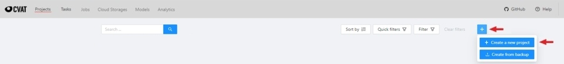
Note that the project will be created in the organization that you selected at the time of creation.
Read more about organizations.
You can change: the name of the project, the list of labels
(which will be used for tasks created as parts of this project) and a skeleton if it’s necessary.
In advanced configuration also you can specify: a link to the issue, source and target storages.
Learn more about creating a label list,
creating the skeleton and attach cloud storage.
To save and open project click on Submit & Open button. Also you
can click on Submit & Continue button for creating several projects in sequence
Once created, the project will appear on the projects page. To open a project, just click on it.
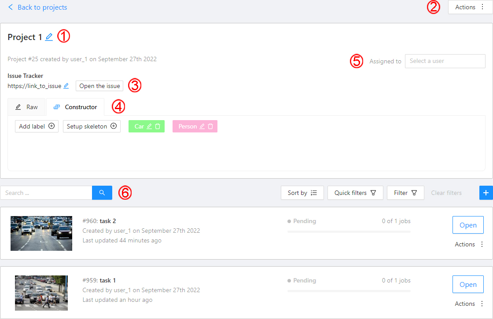
Here you can do the following:
Change the project’s title.
Open the Actions menu. Each button is responsible for a specific function in the Actions menu:
Export dataset/Import dataset - download/upload annotations or annotations and images in a specific format.
More information is available in the export/import datasets
section.
Backup project - make a backup of the project read more in the backup section.
Delete - remove the project and all related tasks.
Change issue tracker or open issue tracker if it is specified.
Change labels and skeleton.
You can add new labels or add attributes for the existing labels in the Raw mode or the Constructor mode.
You can also change the color for different labels.
By clicking Setup skeleton you can create a skeleton for this project.
Assigned to — is used to assign a project to a person.
Start typing an assignee’s name and/or choose the right person out of the dropdown list.
Tasks — is a list of all tasks for a particular project, with the ability to search,
sort and filter for tasks in the project.
Read more about search.
Read more about sorting and filter
It is possible to choose a subset for tasks in the project. You can use the available options
(Train, Test, Validation) or set your own.
5.2.2 - Organization
Using organization in CVAT.
Organization is a feature for teams of several users
who work together on projects and share tasks.
Create an Organization, invite your team members, and assign
roles to make the team work better on shared tasks.
The account’s default state is activated when no Organization is selected.
If you do not select an Organization, the system links all new resources directly
to your personal account, that inhibits resource sharing with others.
When Personal workspace is selected, it will be marked with a tick in the menu.
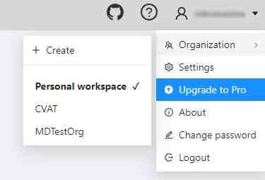
Create new organization
To create an organization, do the following:
Log in to the CVAT.
On the top menu, click your Username > Organization > + Create.
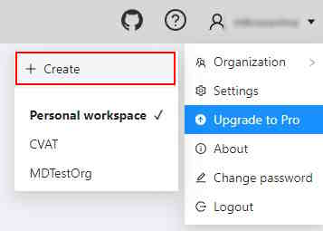
Fill in the following fields and click Submit.
Field
Description
Short name
A name of the organization that will be displayed in the CVAT menu.
Full Name
Optional. Full name of the organization.
Description
Optional. Description of organization.
Email
Optional. Your email.
Phone number
Optional. Your phone number.
Location
Optional. Organization address.
Upon creation, the organization page will open automatically.
For future access to your organization,
navigate to Username > Organization
Note, that if you’ve created more than 10 organizations,
a Switch organization line will appear in the drop-down menu.
Switching between organizations
If you have more than one Organization,
it is possible to switch between these Organizations at any given time.
Follow these steps:
In the top menu, select your Username > Organization.
From the drop-down menu, under the Personal space section,
choose the desired Organization.
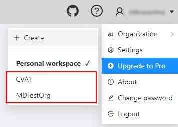
Note, that if you’ve created more than 10 organizations,
a Switch organization line will appear in the drop-down menu.
Click on it to see the Select organization dialog, and select organization
from drop-down list.
Organization page
Organization page is a place, where you can edit the Organization information
and manage Organization members.
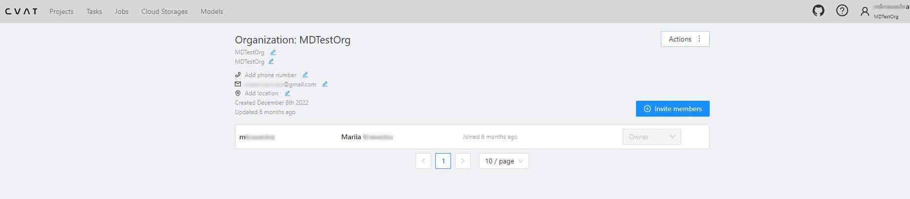
Note that in order to access the organization page, you must first activate
the organization (see Switching between organizations).
Without activation, the organization page will remain inaccessible.
An organization is considered activated when it’s ticked in the drop-down menu
and its name is visible in the top-right corner under the username.
To go to the Organization page, do the following:
On the top menu, click your Username > Organization.
Specifies the email address of the user who is being added to the Organization.
Note, that the user you’re inviting must already have a CVAT account (on the same instance) registered to the email address you’re sending the invitation to.
Role drop-down list
Defines the role of the user which sets the level of access within the Organization:
Worker: Has access only to the tasks, projects, and jobs assigned to them.
Supervisor: Can create and assign jobs, tasks, and projects to the Organization members.
Maintainer: Has the same capabilities as the Supervisor, but with additional visibility over all tasks and projects created by other members, complete access to Cloud Storages, and the ability to modify members and their roles.
Owner: role assigned to the creator of the organization by default. Has maximum capabilities and cannot be changed or assigned to the other user.
Invite more
Button to add another user to the Organization.
Members of Organization will appear on the Organization page.
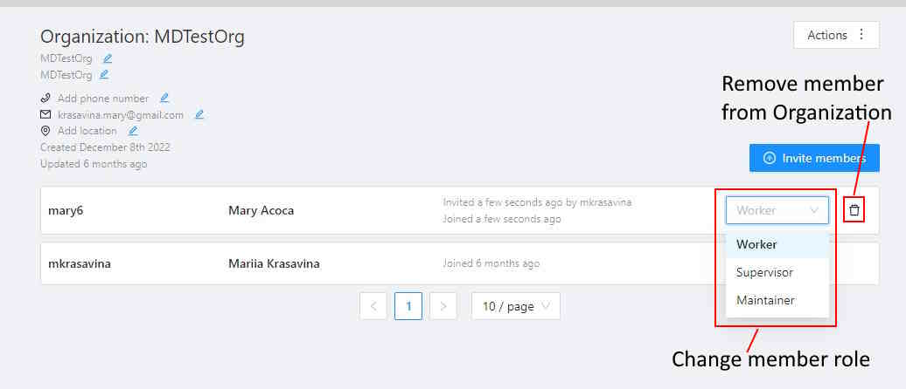
The member of the organization can leave the organization
by going to Organization page > Leave organization.
The organization owner can remove members, by
clicking on the Bin icon.
Delete organization
You can remove an organization that you created.
Note: Removing an organization will delete all related resources (annotations,
jobs, tasks, projects, cloud storage, and so on).
To remove an organization, do the following:
Go to the Organization page.
In the top-right corner click Actions > Remove organization.
Enter the short name of the organization in the dialog field.
Click Remove.
5.2.3 - Search
Overview of available search options.
There are several options how to use the search.
Search within all fields (owner, assignee, task name, task status, task mode).
To execute enter a search string in search field.
Search for specific fields. How to perform:
owner: admin - all tasks created by the user who has the substring “admin” in his name
assignee: employee - all tasks which are assigned to a user who has the substring “employee” in his name
name: training - all tasks with the substring “training” in their names
mode: annotation or mode: interpolation - all tasks with images or videos.
status: annotation or status: validation or status: completed - search by status
id: 5 - task with id = 5.
Multiple filters. Filters can be combined (except for the identifier) using the keyword AND:
mode: interpolation AND owner: admin
mode: annotation and status: annotation
The search is case insensitive.
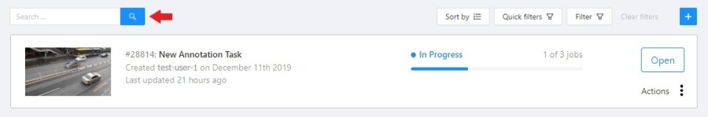
5.2.4 - Shape mode (advanced)
Advanced operations available during annotation in shape mode.
Occluded
Occlusion is an attribute used if an object is occluded by another object or
isn’t fully visible on the frame. Use Q shortcut to set the property
quickly.
Example: the three cars on the figure below should be labeled as occluded.
If a frame contains too many objects and it is difficult to annotate them
due to many shapes placed mostly in the same place, it makes sense
to lock them. Shapes for locked objects are transparent, and it is easy to
annotate new objects. Besides, you can’t change previously annotated objects
by accident. Shortcut: L.
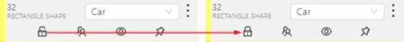
5.2.5 - Track mode (advanced)
Advanced operations available during annotation in track mode.
Shapes that were created in the track mode, have extra navigation buttons.
These buttons help to jump to the previous/next keyframe.
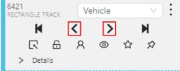
The button helps to jump to the initial frame and to the last keyframe.
You can use the Split function to split one track into two tracks:
5.2.6 - 3D Object annotation (advanced)
Overview of advanced operations available when annotating 3D objects.
As well as 2D-task objects, 3D-task objects support the ability to change appearance, attributes,
properties and have an action menu. Read more in objects sidebar section.
Moving an object
If you hover the cursor over a cuboid and press Shift+N, the cuboid will be cut,
so you can paste it in other place (double-click to paste the cuboid).
Copying
As well as in 2D task you can copy and paste objects by Ctrl+C and Ctrl+V,
but unlike 2D tasks you have to place a copied object in a 3D space (double click to paste).
Image of the projection window
You can copy or save the projection-window image by left-clicking on it and selecting a “save image as” or “copy image”.
5.2.7 - Attribute annotation mode (advanced)
Advanced operations available in attribute annotation mode.
It is possible to handle lots of objects on the same frame in the mode.
It is more convenient to annotate objects of the same type. In this case you can apply
the appropriate filter. For example, the following filter will
hide all objects except person: label=="Person".
To navigate between objects (person in this case),
use the following buttons switch between objects in the frame on the special panel:
or shortcuts:
Tab — go to the next object
Shift+Tab — go to the previous object.
In order to change the zoom level, go to settings (press F3)
in the workspace tab and set the value Attribute annotation mode (AAM) zoom margin in px.
5.2.8 - Annotation with rectangles
To learn more about annotation using a rectangle, see the sections:
To rotate the rectangle, pull on the rotation point. Rotation is done around the center of the rectangle.
To rotate at a fixed angle (multiple of 15 degrees),
hold shift. In the process of rotation, you can see the angle of rotation.
Annotation with rectangle by 4 points
It is an efficient method of bounding box annotation, proposed
here.
Before starting, you need to make sure that the drawing method by 4 points is selected.
Press Shape or Track for entering drawing mode. Click on four extreme points:
the top, bottom, left- and right-most physical points on the object.
Drawing will be automatically completed right after clicking the fourth point.
Press Esc to cancel editing.
5.2.9 - Annotation with polygons
Guide to creating and editing polygons.
5.2.9.1 - Manual drawing
It is used for semantic / instance segmentation.
Before starting, you need to select Polygon on the controls sidebar and choose the correct Label.
Click Shape to enter drawing mode.
There are two ways to draw a polygon: either create points by clicking or
by dragging the mouse on the screen while holding Shift.
Clicking points
Holding Shift+Dragging
When Shift isn’t pressed, you can zoom in/out (when scrolling the mouse
wheel) and move (when clicking the mouse wheel and moving the mouse), you can also
delete the previous point by right-clicking on it.
You can use the Selected opacity slider in the Objects sidebar to change the opacity of the polygon.
You can read more in the Objects sidebar section.
Press N again or click the Done button on the top panel for completing the shape.
After creating the polygon, you can move the points or delete them by right-clicking and selecting Delete point
or clicking with pressed Alt key in the context menu.
5.2.9.2 - Drawing using automatic borders
You can use auto borders when drawing a polygon. Using automatic borders allows you to automatically trace
the outline of polygons existing in the annotation.
To do this, go to settings -> workspace tab and enable Automatic Bordering
or press Ctrl while drawing a polygon.
Start drawing / editing a polygon.
Points of other shapes will be highlighted, which means that the polygon can be attached to them.
Define the part of the polygon path that you want to repeat.
Click on the first point of the contour part.
Then click on any point located on part of the path. The selected point will be highlighted in purple.
Click on the last point and the outline to this point will be built automatically.
Besides, you can set a fixed number of points in the Number of points field, then
drawing will be stopped automatically. To enable dragging you should right-click
inside the polygon and choose Switch pinned property.
Below you can see results with opacity and black stroke:
If you need to annotate small objects, increase Image Quality to
95 in Create task dialog for your convenience.
5.2.9.3 - Edit polygon
To edit a polygon you have to click on it while holding Shift, it will open the polygon editor.
In the editor you can create new points or delete part of a polygon by closing the line on another point.
When Intelligent polygon cropping option is activated in the settings,
CVAT considers two criteria to decide which part of a polygon should be cut off during automatic editing.
The first criteria is a number of cut points.
The second criteria is a length of a cut curve.
If both criteria recommend to cut the same part, algorithm works automatically,
and if not, a user has to make the decision.
If you want to choose manually which part of a polygon should be cut off,
disable Intelligent polygon cropping in the settings.
In this case after closing the polygon, you can select the part of the polygon you want to leave.
To create a polygon in the track mode, click the Track button.
Create a polygon the same way as in the case of Annotation with polygons.
Press N or click the Done button on the top panel to complete the polygon.
Pay attention to the fact that the created polygon has a starting point and a direction,
these elements are important for annotation of the following frames.
After going a few frames forward press Shift+N, the old polygon will disappear and you can create a new polygon.
The new starting point should match the starting point of the previously created polygon
(in this example, the top of the left mirror). The direction must also match (in this example, clockwise).
After creating the polygon, press N and the intermediate frames will be interpolated automatically.
If you need to change the starting point, right-click on the desired point and select Set starting point.
To change the direction, right-click on the desired point and select switch orientation.
There is no need to redraw the polygon every time using Shift+N,
instead you can simply move the points or edit a part of the polygon by pressing Shift+Click.
5.2.9.5 - Creating masks
Cutting holes in polygons
Currently, CVAT does not support cutting transparent holes in polygons. However,
it is poissble to generate holes in exported instance and class masks.
To do this, one needs to define a background class in the task and draw holes
with it as additional shapes above the shapes needed to have holes:
The editor window:
Remember to use z-axis ordering for shapes by [-] and [+, =] keys.
Exported masks:
Notice that it is currently impossible to have a single instance number for
internal shapes (they will be merged into the largest one and then covered by
“holes”).
Creating masks
There are several formats in CVAT that can be used to export masks:
An example of exported masks (in the Segmentation Mask format):
Important notices:
Both boxes and polygons are converted into masks
Grouped objects are considered as a single instance and exported as a single
mask (label and attributes are taken from the largest object in the group)
Class colors
All the labels have associated colors, which are used in the generated masks.
These colors can be changed in the task label properties:
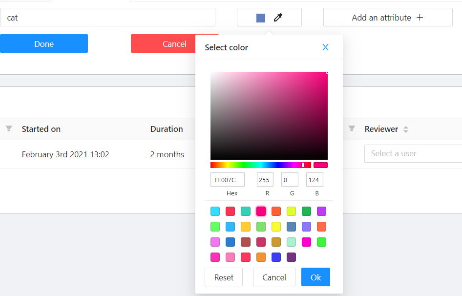
Label colors are also displayed in the annotation window on the right panel,
where you can show or hide specific labels
(only the presented labels are displayed):
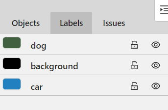
A background class can be:
A default class, which is implicitly-added, of black color (RGB 0, 0, 0)
background class with any color (has a priority, name is case-insensitive)
Any class of black color (RGB 0, 0, 0)
To change background color in generated masks (default is black),
change background class color to the desired one.
5.2.10 - Annotation with polylines
Guide to annotating tasks using polylines.
It is used for road markup annotation etc.
Before starting, you need to select the Polyline. You can set a fixed number of points
in the Number of points field, then drawing will be stopped automatically.
Click Shape to enter drawing mode. There are two ways to draw a polyline —
you either create points by clicking or by dragging a mouse on the screen while holding Shift.
When Shift isn’t pressed, you can zoom in/out (when scrolling the mouse wheel)
and move (when clicking the mouse wheel and moving the mouse), you can delete
previous points by right-clicking on it.
Press N again or click the Done button on the top panel to complete the shape.
You can delete a point by clicking on it with pressed Ctrl or right-clicking on a point
and selecting Delete point. Click with pressed Shift will open a polyline editor.
There you can create new points(by clicking or dragging) or delete part of a polygon closing
the red line on another point. Press Esc to cancel editing.
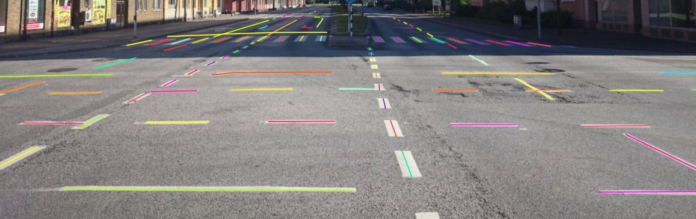
5.2.11 - Annotation with points
Guide to annotating tasks using single points or shapes containing multiple points.
5.2.11.1 - Points in shape mode
It is used for face, landmarks annotation etc.
Before you start you need to select the Points. If necessary you can set a fixed number of points
in the Number of points field, then drawing will be stopped automatically.
Click Shape to entering the drawing mode. Now you can start annotation of the necessary area.
Points are automatically grouped — all points will be considered linked between each start and finish.
Press N again or click the Done button on the top panel to finish marking the area.
You can delete a point by clicking with pressed Ctrl or right-clicking on a point and selecting Delete point.
Clicking with pressed Shift will open the points shape editor.
There you can add new points into an existing shape. You can zoom in/out (when scrolling the mouse wheel)
and move (when clicking the mouse wheel and moving the mouse) while drawing. You can drag an object after
it has been drawn and change the position of individual points after finishing an object.
5.2.11.2 - Linear interpolation with one point
You can use linear interpolation for points to annotate a moving object:
Before you start, select the Points.
Linear interpolation works only with one point, so you need to set Number of points to 1.
After that select the Track.
Click Track to enter the drawing mode left-click to create a point
and after that shape will be automatically completed.
Move forward a few frames and move the point to the desired position,
this way you will create a keyframe and intermediate frames will be drawn automatically.
You can work with this object as with an interpolated track: you can hide it using the Outside,
move around keyframes, etc.
This way you’ll get linear interpolation using the Points.
5.2.12 - Annotation with ellipses
Guide to annotating tasks using ellipses.
It is used for road sign annotation etc.
First of all you need to select the ellipse on the controls sidebar.
Choose a Label and click Shape or Track to start drawing. An ellipse can be created the same way as
a rectangle, you need to specify two opposite points,
and the ellipse will be inscribed in an imaginary rectangle. Press N or click the Done button on the top panel
to complete the shape.
You can rotate ellipses using a rotation point in the same way as
rectangles.
5.2.13 - Annotation with cuboids
Guide to creating and editing cuboids.
It is used to annotate 3 dimensional objects such as cars, boxes, etc…
Currently the feature supports one point perspective and has the constraint
where the vertical edges are exactly parallel to the sides.
5.2.13.1 - Creating the cuboid
Before you start, you have to make sure that Cuboid is selected
and choose a drawing method ”from rectangle” or “by 4 points”.
Drawing cuboid by 4 points
Choose a drawing method “by 4 points” and click Shape to enter the drawing mode. There are many ways to draw a cuboid.
You can draw the cuboid by placing 4 points, after that the drawing will be completed automatically.
The first 3 points determine the plane of the cuboid while the last point determines the depth of that plane.
For the first 3 points, it is recommended to only draw the 2 closest side faces, as well as the top and bottom face.
A few examples:
Drawing cuboid from rectangle
Choose a drawing method “from rectangle” and click Shape to enter the drawing mode.
When you draw using the rectangle method, you must select the frontal plane of the object using the bounding box.
The depth and perspective of the resulting cuboid can be edited.
Example:
5.2.13.2 - Editing the cuboid
The cuboid can be edited in multiple ways: by dragging points, by dragging certain faces or by dragging planes.
First notice that there is a face that is painted with gray lines only, let us call it the front face.
You can move the cuboid by simply dragging the shape behind the front face.
The cuboid can be extended by dragging on the point in the middle of the edges.
The cuboid can also be extended up and down by dragging the point at the vertices.
To draw with perspective effects it should be assumed that the front face is the closest to the camera.
To begin simply drag the points on the vertices that are not on the gray/front face while holding Shift.
The cuboid can then be edited as usual.
If you wish to reset perspective effects, you may right click on the cuboid,
and select Reset perspective to return to a regular cuboid.
The location of the gray face can be swapped with the adjacent visible side face.
You can do it by right clicking on the cuboid and selecting Switch perspective orientation.
Note that this will also reset the perspective effects.
Certain faces of the cuboid can also be edited,
these faces are: the left, right and dorsal faces, relative to the gray face.
Simply drag the faces to move them independently from the rest of the cuboid.
Skeletons should be used as annotations templates when you need to annotate complex objects sharing the same structure
(e.g. human pose estimation, facial landmarks, etc.).
A skeleton consist of any number of points (also called as elements), joined or not joined by edges.
Any point itself is considered like an individual object with its own attributes and properties
(like color, occluded, outside, etc). At the same time a skeleton point can exist only within the parent skeleton.
Any skeleton elements can be hidden (by marking them outside) if necessary (for example if a part is out of a frame).
Currently there are two formats which support exporting skeletons: CVAT & COCO.
5.2.14.1 - Creating the skeleton
Initial skeleton setup
Unlike other CVAT objects, to start annotating using skeletons, first of all you need to setup a skeleton.
You can do that in the label configurator during creating a task/project, or later in created instances.
So, start by clicking Setup skeleton option:
Below the regular label form where you need to add a name, and setup attributes if necessary,
you will see a drawing area with some buttons aside:
PUT AN IMAGE AS A BACKGROUND - is a helpful feature you can use to draw a skeleton template easier,
seeing an example - object you need to annotate in the future.
PUT NEW SKELETON POINTS - is activated by default.
It is a mode where you can add new skeleton points clicking the drawing area.
DRAW AN EDGE BETWEEN TWO POINTS - in this mode you can add an edge,
clicking any two points, which are not joined yet.
REMOVE A DRAWN SKELETON POINTS - in this mode clicking a point will remove the point and all attached edges.
You can also remove an edge only, it will be highlighted as red on hover.
DOWNLOAD DRAWN TEMPLATE AS AN .SVG - you can download setup configuration to use it in future
UPLOAD A TEMPLATE FROM AN .SVG FILE - you can upload previously downloaded configuration
Let’s draw an exampe skeleton - star. After the skeleton is drawn, you can setup each its point.
Just hover the point, do right mouse click and click Configure:
Here you can setup a point name, its color and attributes if necessary like for a regular CVAT label:
Press Done button to finish editing the point. Press Continue button to save the skeleton.
Continue creating a task/project in a regular way.
For an existing task/project you are not allowed to change a skeleton configuration for now.
You can copy/insert skeletons configuration using Raw tab of the label configurator.
Drawing a skeleton from rectangle
In opened job go to left sidebar and find Draw new skeleton control, hover it:
If the control is absent, be sure you have setup at least one skeleton in the corresponding task/project.
In a pop-up dropdown you can select between a skeleton Shape and a skeleton Track, depends on your task.
Draw a skeleton as a regular bounding box, clicking two points on a canvas:
Well done, you’ve just created the first skeleton.
5.2.14.2 - Editing the skeleton
Editing skeletons on the canvas
A drawn skeleton is wrapped by a bounding box for a user convenience.
Using this wrapper the user can edit the skeleton as a regular bounding box, by dragging, resizing, or rotating:
Moreover, each the skeleton point can be dragged itself. After dragging, the wrapping bounding box is
adjusted automatically, other points are not affected:
You can use Shortcuts on both a skeleton itself and its elements.
Hover the mouse cursor over the bounding box to apply a shortcut on the whole skeleton
(like lock, occluded, pinned, keyframe and outside for skeleton tracks)
Hover the mouse cursor over one of skeleton points to apply a shortcut to this point
(the same shortcuts list, but outside is available also for a skeleton shape elements)
Editing skeletons on the sidebar
Using the sidebar is another way to setup skeleton properties, and attributes.
It works a similar way, like for other kinds of objects supported by CVAT, but with some changes:
A user is not allowed to switch a skeleton label
Outside property is always available for skeleton elements (it does not matter if they are tracks or not)
Additional collapse is available for a user, to see a list of skeleton parts
5.2.15 - Annotation with brush tool
Guide to annotating tasks using brush tools.
With a brush tool, you can create masks for disjoint objects, that have multiple parts,
such as a house hiding behind trees, a car behind a pedestrian, or a pillar behind a
traffic sign.
The brush tool has several modes, for example: erase pixels, change brush shapes, and polygon-to-mask mode.
Use brush tool for Semantic (Panoptic) and Instance Image Segmentation tasks. For more information about segmentation masks in CVAT, see Creating masks.
The brush tool menu appears on the top of the screen after you click Shape:
It has the following elements:
Element
Description
Save mask saves the created mask. The saved mask will appear on the object sidebar
Save mask and continue adds a new mask to the object sidebar and allows you to draw a new one immediately.
Brush adds new mask/ new regions to the previously added mask).
Eraser removes part of the mask.
Polygon selection tool. Selection will become a mask.
Remove polygon selection subtracts part of the polygon selection.
Brush size in pixels. Note: Visible only when Brush or Eraser are selected.
Brush shape with two options: circle and square. Note: Visible only when Brush or Eraser are selected.
Remove underlying pixels. When you are drawing or editing a mask with this tool, pixels on other masks that are located at the same positions as the pixels of the current mask are deleted.
Label that will be assigned to the newly created mask
Move. Click and hold to move the menu bar to the other place on the screen
In the Draw new mask menu, select label for your mask, and click Shape.
In the brush tool menu, select Polygon.
With the Polygon tool, draw a mask for the object you want to label. To correct selection, use Remove polygon selection.
Use Save mask (or N on the keyboard) to switch between add/remove polygon tools:
After you added the polygon selection, on the top menu bar click Save mask to finish the process (or N on the keyboard).
Click Save mask again (or N on the keyboard). The added object will appear on the objects sidebar.
To add the next object, repeat steps 1 to 5.
All added objects will be visible on the image and the objects sidebar.
To save the job with all added objects, on the top menu click Save.
Remove underlying pixels
Use Remove underlying pixels tool when you want to add a mask and simultaneously delete the pixels of other masks that are located at the same positions. It is a highly useful feature to avoid meticulous drawing edges twice between two different objects.
AI Tools
You can convert AI tool masks to polygons.
To do this, use the following AI tool menu:
Go to the Detectors tab.
Switch toggle Masks to polygons to the right.
Add source and destination labels from the drop-down lists.
Import follows the general import dataset procedure,
with the additional option of converting masks to polygons.
Note: This option is available for formats that work with masks only.
To use it, when uploading the dataset, switch the Convert masks to polygon toggle to the right:
5.2.16 - Annotation with tags
It is used to annotate frames, tags are not displayed in the workspace.
Before you start, open the drop-down list in the top panel and select Tag annotation.
The objects sidebar will be replaced with a special panel for working with tags.
Here you can select a label for a tag and add it by clicking on the Plus button.
You can also customize hotkeys for each label.
If you need to use only one label for one frame, then enable the Automatically go to the next frame
checkbox, then after you add the tag the frame will automatically switch to the next.
Tags will be shown in the top left corner of the canvas. You can show/hide them in the settings.
The Models page contains a list of deep learning (DL) models deployed for semi-automatic and automatic annotation.
To open the Models page, click the Models button on the navigation bar.
The list of models is presented in the form of a table. The parameters indicated for each model are the following:
interactor - used for semi-automatic shape annotation (available in interactors)
tracker - used for semi-automatic track annotation (available in trackers)
reid - used to combine individual objects into a track (available in automatic annotation)
Description - brief description of the model
Labels - list of the supported labels (only for the models of the detectors type)
5.2.18 - CVAT Analytics and quality assessment in Cloud
Analytics and quality assessment in CVAT Cloud
5.2.18.1 - Annotation quality & Honeypot
How to check the quality of annotation in CVAT
In CVAT, it’s possible to evaluate the quality of annotation through
the creation of a Ground truth job, referred to as a Honeypot.
To estimate the task quality, CVAT compares all other jobs in the task against the
established Ground truth job, and calculates annotation quality
based on this comparison.
Note that quality estimation only supports
2d tasks. It supports all the annotation types except 2d cuboids.
Note that tracks are considered separate shapes
and compared on a per-frame basis with other tracks and shapes.
A Ground truth job is a way to tell CVAT where to store
and get the “correct” annotations for task quality estimation.
To estimate task quality, you need to
create a Ground truth job in the task,
and annotate it. You don’t need to
annotate the whole dataset twice,
the annotation quality of a small part of
the data shows the quality of annotation for
the whole dataset.
For the quality assurance to function correctly, the Ground truth job must
have a small portion of the task frames and the frames must be chosen randomly.
Depending on the dataset size and task complexity,
5-15% of the data is typically good enough for quality estimation,
while keeping extra annotation overhead acceptable.
For example, in a typical task with 2000 frames, selecting just 5%,
which is 100 extra frames to annotate, is enough to estimate the
annotation quality. If the task contains only 30 frames, it’s advisable to
select 8-10 frames, which is about 30%.
It is more than 15% but in the case of smaller datasets,
we need more samples to estimate quality reliably.
In the Add new job window, fill in the following fields:
Job type: Use the default parameter Ground truth.
Frame selection method: Use the default parameter Random.
Quantity %: Set the desired percentage of frames for the Ground truth job.
Note that when you use Quantity %, the Frames field will be autofilled.
Frame count: Set the desired number of frames for the “ground truth” job.
Note that when you use Frames, the Quantity % field will be will be autofilled.
Seed: (Optional) If you need to make the random selection reproducible, specify this number.
It can be any integer number, the same value will yield the same random selection (given that the
frame number is unchanged). Note that if you want to use a
custom frame sequence, you can do this using the server API instead,
see Jobs API #create.
Click Submit.
Annotate frames, save your work.
Change the status of the job to Completed.
Change Stage to Accepted.
The Ground truth job will appear in the jobs list.
Managing Ground Truth jobs: Import, Export, and Deletion
Annotations from Ground truth jobs are not included in the dataset export,
they also cannot be imported during task annotations import
or with automatic annotation for the task.
Import, export, and delete options are available from the
job’s menu.
Import
If you want to import annotations into the Ground truth job, do the following.
Open the task, and find the Ground truth job in the jobs list.
Click on three dots to open the menu.
From the menu, select Import annotations.
Select import format, and select file.
Click OK.
Note that if there are imported annotations for the frames that exist in the task,
but are not included in the Ground truth job, they will be ignored.
This way, you don’t need to worry about “cleaning up” your Ground truth
annotations for the whole dataset before importing them.
Importing annotations for the frames that are not known in the task still raises errors.
Export
To export annotations from the Ground truth job, do the following.
Open the task, and find a job in the jobs list.
Click on three dots to open the menu.
From the menu, select Export annotations.
Delete
To delete the Ground truth job, do the following.
Open the task, and find the Ground truth job in the jobs list.
Click on three dots to open the menu.
From the menu, select Delete.
Assessing data quality with Ground truth jobs
Once you’ve established the Ground truth job, proceed to annotate the dataset.
CVAT will begin the quality comparison between the annotated task and the
Ground truth job in this task once it is finished (on the acceptance stage and in the completed state).
Note that the process of quality calculation may take up to several hours, depending on
the amount of data and labeled objects, and is not updated immediately after task updates.
To view results go to the Task > Actions > View analytics> Performance tab.
Quality data
The Analytics page has the following fields:
Field
Description
Mean annotation quality
Displays the average quality of annotations, which includes: the count of accurate annotations, total task annotations, ground truth annotations, accuracy rate, precision rate, and recall rate.
GT Conflicts
Conflicts identified during quality assessment, including extra or missing annotations. Mouse over the ? icon for a detailed conflict report on your dataset.
Issues
Number of opened issues. If no issues were reported, will show 0.
Quality report
Quality report in JSON format.
Ground truth job data
“Information about ground truth job, including date, time, and number of issues.
List of jobs
List of all the jobs in the task
Annotation quality settings
If you need to tweak some aspects of comparisons, you can do this from
the Annotation Quality Settings menu.
You can configure what overlap
should be considered low or how annotations must be compared.
The updated settings will take effect
on the next quality update.
To open Annotation Quality Settings, find
Quality report and on the right side of it, click on
three dots.
The following window will open.
Hover over the ? marks to understand what each field represents.
Annotation quality settings have the following parameters:
Field
Description
Min overlap threshold
Min overlap threshold(IoU) is used for the distinction between matched / unmatched shapes.
Low overlap threshold
Low overlap threshold is used for the distinction between strong/weak (low overlap) matches.
OKS Sigma
IoU threshold for points. The percent of the box area, used as the radius of the circle around the GT point, where the checked point is expected to be.
Relative thickness (frame side %)
Thickness of polylines, relative to the (image area) ^ 0.5. The distance to the boundary around the GT line inside of which the checked line points should be.
Check orientation
Indicates that polylines have direction.
Min similarity gain (%)
The minimal gain in the GT IoU between the given and reversed line directions to consider the line inverted. Only useful with the Check orientation parameter.
Compare groups
Enables or disables annotation group checks.
Min group match threshold
Minimal IoU for groups to be considered matching, used when the Compare groups are enabled.
Check object visibility
Check for partially-covered annotations. Masks and polygons will be compared to each other.
Min visibility threshold
Minimal visible area percent of the spatial annotations (polygons, masks). For reporting covered annotations, useful with the Check object visibility option.
Match only visible parts
Use only the visible part of the masks and polygons in comparisons.
GT conflicts in the CVAT interface
To see GT Conflicts in the CVAT interface, go to Review >
Issues > Show ground truth annotations and conflicts.
The ground truth (GT) annotation is depicted as
a dotted-line box with an associated label.
Upon hovering over an issue on the right-side panel with your mouse,
the corresponding GT Annotation gets highlighted.
Use arrows in the Issue toolbar to move between GT conflicts.
To create an issue related to the conflict,
right-click on the bounding box and from the
menu select the type of issue you want to create.
Annotation quality & Honeypot video tutorial
This video demonstrates the process:
5.2.18.2 - CVAT Performance & Monitoring
How to monitor team activity and performance in CVAT
In CVAT Cloud, you can track a variety of metrics
reflecting the team’s productivity and the pace of annotation with
the Performance feature.
To open the Performance dashboard, do the following:
In the top menu click on Projects/ Tasks/ Jobs.
Select an item from the list, and click on three dots ().
From the menu, select View analytics > Performance tab.
The following dashboard will open:
The Performance dashboard has the following elements:
Element
Description
Analytics for
Object/ Task/ Job number.
Created
Time when the dashboard was updated last time.
Objects
Graph, showing the number of annotated, updated, and deleted objects by day.
Annotation speed (objects per hour)
Number of objects annotated per hour.
Time
A drop-down list with various periods for the graph. Currently affects only the histogram data.
Annotation time (hours)
Shows for how long the Project/Task/Job is in In progress state.
Total objects count
Shows the total objects count in the task. Interpolated objects are counted.
Total annotation speed (objects per hour)
Shows the annotation speed in the Project/Task/Job. Interpolated objects are counted.
You can rearrange elements of the dashboard by dragging and dropping each of them.
Performance video tutorial
This video demonstrates the process:
5.2.19 - OpenCV and AI Tools
Overview of semi-automatic and automatic annotation tools available in CVAT.
Label and annotate your data in semi-automatic and automatic mode with the help of AI and OpenCV tools.
While interpolation
is good for annotation of the videos made by the security cameras,
AI and OpenCV tools are good for both:
videos where the camera is stable and videos, where it
moves together with the object, or movements of the object are chaotic.
Use interactors to label objects in images by
creating a polygon semi-automatically.
When creating a polygon, you can use positive points
or negative points (for some models):
Positive points define the area in which the object is located.
Negative points define the area in which the object is not located.
AI tools: annotate with interactors
To annotate with interactors, do the following:
Click Magic wand, and go to the Interactors tab.
From the Label drop-down, select a label for the polygon.
From the Interactor drop-down, select a model (see Interactors models).
Click the Question mark to see information about each model:
(Optional) If the model returns masks, and you need to
convert masks to polygons, use the Convert masks to polygons toggle.
Click Interact.
Use the left click to add positive points and the right click to add negative points.
Number of points you can add depends on the model.
On the top menu, click Done (or Shift+N, N).
AI tools: add extra points
Note: More points improve outline accuracy, but make shape editing harder.
Fewer points make shape editing easier, but reduce outline accuracy.
Each model has a minimum required number of points for annotation.
Once the required number of points is reached, the request
is automatically sent to the server.
The server processes the request and adds a polygon to the frame.
For a more accurate outline, postpone request
to finish adding extra points first:
Hold down the Ctrl key.
On the top panel, the Block button will turn blue.
Add points to the image.
Release the Ctrl key, when ready.
In case you used Mask to polygon when the object is finished,
you can edit it like a polygon.
You can change the number of points in the
polygon with the slider:
AI tools: delete points
To delete a point, do the following:
With the cursor, hover over the point you want to delete.
If the point can be deleted, it will enlarge and the cursor will turn into a cross.
Left-click on the point.
OpenCV: intelligent scissors
To use Intelligent scissors, do the following:
On the menu toolbar, click OpenCV and wait for the library to load.
Go to the Drawing tab, select the label, and click on the Intelligent scissors button.
Add the first point on the boundary of the allocated object. You will see a line repeating the outline of the object.
Add the second point, so that the previous point is within the restrictive threshold.
After that a line repeating the object boundary will be automatically created between the points.
To finish placing points, on the top menu click Done (or N on the keyboard).
As a result, a polygon will be created.
You can change the number of points in the
polygon with the slider:
To increase or lower the action threshold, hold Ctrl and scroll the mouse wheel.
During the drawing process, you can remove the last point by clicking on it with the left mouse button.
The Segment Anything Model (SAM) produces high quality object masks, and it can be used to generate masks for all objects in an image. It has been trained on a dataset of 11 million images and 1.1 billion masks, and has strong zero-shot performance on a variety of segmentation tasks.
This is an optimized version of the original model, introduced at the end of 2017. It uses the information about extreme points of an object to get its mask. The mask is then converted to a polygon. For now this is the fastest interactor on the CPU.
The model allows to get a mask for an object using positive points (should be left-clicked on the foreground), and negative points (should be right-clicked on the background, if necessary). It is recommended to run the model on GPU, if possible.
The model allows to get a mask for an object using positive points (should be left-clicked on the foreground), and negative points (should be right-clicked on the background, if necessary). It is recommended to run the model on GPU, if possible.
The model uses a bounding box and inside/outside points to create a mask. First of all, you need to create a bounding box, wrapping the object. Then you need to use positive and negative points to say the model where is a foreground, and where is a background. Negative points are optional.
Intelligent scissors is a CV method of creating a polygon by placing points with the automatic drawing of a line between them. The distance between the adjacent points is limited by the threshold of action, displayed as a red square that is tied to the cursor.
Faster RCNN version with Tensorflow. The model generates bounding boxes for each instance of an object in the image. In this model, RPN and Fast R-CNN are combined into a single network.
Use trackers to identify and label
objects in a video or image sequence
that are moving or changing over time.
AI tools: annotate with trackers
To annotate with trackers, do the following:
Click Magic wand, and go to the Trackers tab.
From the Label drop-down, select the label for the object.
From Tracker drop-down, select tracker.
Click Track, and annotate the objects with the bounding box in the first frame.
Go to the top menu and click Next (or the F on the keyboard)
to move to the next frame.
All annotated objects will be automatically tracked.
OpenCV: annotate with trackers
To annotate with trackers, do the following:
On the menu toolbar, click OpenCV and wait for the library to load.
Go to the Tracker tab, select the label, and click Tracking.
From the Label drop-down, select the label for the object.
From Tracker drop-down, select tracker.
Click Track.
To move to the next frame, on the top menu click the Next button (or F on the keyboard).
All annotated objects will be automatically tracked when you move to the next frame.
When tracking
To enable/disable tracking, use Tracker switcher on the sidebar.
Trackable objects have an indication on canvas with a model name.
You can follow the tracking by the messages appearing at the top.
Trackers models
Model
Tool
Description
Example
TrackerMIL
OpenCV
TrackerMIL model is not bound to labels and can be used for any object. It is a fast client-side model designed to track simple non-overlapping objects.
Fast online Object Tracking and Segmentation. The trackable object will be tracked automatically if the previous frame was the latest keyframe for the object.
Simple and efficient online tool for object tracking and segmentation. If the previous frame was the latest keyframe for the object, the trackable object will be tracked automatically. This is a modified version of the PyTracking Python framework based on Pytorch
Face Detection 0205: face detector based on MobileNetV2 as a backbone with a FCOS head for indoor and outdoor scenes shot by a front-facing camera.
Emotions recognition retail 0003: fully convolutional network for recognition of five emotions (‘neutral’, ‘happy’, ‘sad’, ‘surprise’, ‘anger’).
Age gender recognition retail 0013: fully convolutional network for simultaneous Age/Gender recognition. The network can recognize the age of people in the [18 - 75] years old range; it is not applicable for children since their faces were not in the training set.
RetinaNet R101
RetinaNet is a one-stage object detection model that utilizes a focal loss function to address class imbalance during training. Focal loss applies a modulating term to the cross entropy loss to focus learning on hard negative examples. RetinaNet is a single, unified network composed of a backbone network and two task-specific subnetworks.
YOLOv7 is an advanced object detection model that outperforms other detectors in terms of both speed and accuracy. It can process frames at a rate ranging from 5 to 160 frames per second (FPS) and achieves the highest accuracy with 56.8% average precision (AP) among real-time object detectors running at 30 FPS or higher on the V100 graphics processing unit (GPU).
For individual users: only the task owner and task assignee can edit the specification.
For organizations: only the task owner, maintainer, and task assignee can edit the specification.
Access to specification for annotators
To open specification, do the following:
Open the job to see the annotation interface.
In the top right corner, click Guide button().
Markdown editor guide
The markdown editor for Guide has two panes.
Add instructions to the left pane, and the editor
will immediately show the formatted result on the right.
You can write in raw markdown or use the toolbar on the top of the editor.
Element
Description
1
Text formatting: bold, cursive, and strikethrough.
2
Insert a horizontal rule (horizontal line).
3
Add a title, heading, or subheading. It provides a drop-down list to select the title level (from 1 to 6).
4
Add a link. Note: If you left-click on the link, it will open in the same window.
5
Add a quote.
6
Add a single line of code.
7
Add a block of code.
8
Add a comment. The comment is only visible to Guide editors and remains invisible to annotators.
9
Add a picture. To use this option, first, upload the picture to an external resource and then add the link in the editor. Alternatively, you can drag and drop a picture into the editor, which will upload it to the CVAT server and add it to the specification.
10
Add a list: bullet list, numbered list, and checklist.
11
Hide the editor pane: options to hide the right pane, show both panes or hide the left pane.
12
Enable full-screen mode.
Specification for annotators' video tutorial
Video tutorial on how to use the Guide feature.
5.2.22 - Backup Task and Project
Overview
In CVAT you can backup tasks and projects.
This can be used to backup a task or project on your PC or to transfer to another server.
Create backup
To backup a task or project, open the action menu and select Backup Task or Backup Project.
You can backup a project or a task locally on your PC or using an attached cloud storage.
(Optional) Specify the name in the Custom name text field for backup, otherwise the file of backup name
will be given by the mask project_<project_name>_backup_<date>_<time>.zip for the projects
and task_<task_name>_backup_<date>_<time>.zip for the tasks.
If you want to save a backup to a specific attached cloud storage,
you should additionally turn off the switch Use default settings, select the Cloud storage value
in the Target storage and select this storage in the list of the attached cloud storages.
Create backup APIs
endpoints:
/tasks/{id}/backup
/projects/{id}/backup
method: GET
responses: 202, 201 with zip archive payload
Upload backup APIs
endpoints:
/api/tasks/backup
/api/projects/backup
method: POST
Content-Type: multipart/form-data
responses: 202, 201 with json payload
Create from backup
To create a task or project from a backup, go to the tasks or projects page,
click the Create from backup button and select the archive you need.
As a result, you’ll get a task containing data, parameters, and annotations of
the previously exported task.
Backup file structure
As a result, you’ll get a zip archive containing data,
task or project and task specification and annotations with the following structure:
This section explains how to delete and restore a frame from a task.
Delete frame
You can delete the current frame from a task.
This frame will not be presented either in the UI or in the exported annotation.
Thus, it is possible to mark corrupted frames that are not subject to annotation.
Go to the Job annotation view and click on the Delete frame button (Alt+Del).
Note: When you delete with the shortcut,
the frame will be deleted immediately without additional confirmation.
After that you will be asked to confirm frame deleting.
Note: all annotations from that frame will be deleted, unsaved annotations
will be saved and the frame will be invisible in the annotation view (Until you make it visible in the settings).
If there is some overlap in the task and the deleted frame falls within this interval,
then this will cause this frame to become unavailable in another job as well.
When you delete a frame in a job with tracks, you may need to adjust some tracks manually. Common adjustments are:
Add keyframes at the edges of the deleted interval for the interpolation to look correct;
Move the keyframe start or end keyframe to the correct side of the deleted interval.
Configurate deleted frames visibility and navigation
If you need to enable showing the deleted frames, you can do it in the settings.
Go to the settings and chose Player settings.
Click on the Show deleted frames checkbox. And close the settings dialog.
Then you will be able to navigate through deleted frames.
But annotation tools will be unavailable. Deleted frames differ in the corresponding overlay.
There are view ways to navigate through deleted frames without enabling this option:
Go to the frame via direct navigation methods: navigation slider or frame input field,
Go to the frame via the direct link.
Navigation with step will not count deleted frames.
Restore deleted frame
You can also restore deleted frames in the task.
Turn on deleted frames visibility, as it was told in the previous part,
and go to the deleted frame you want to restore.
Click on the Restore icon. The frame will be restored immediately.
5.2.24 - Export/import datasets and upload annotation
This section explains how to download and upload datasets (including annotation, images, and metadata) of projects, tasks, and jobs.
Export dataset
You can export a dataset to a project, task or job.
To download the latest annotations, you have to save all changes first.
Click the Save button. There is a Ctrl+S shortcut to save annotations quickly.
After that, click the Menu button.
Exporting and importing of task and project datasets takes place through the Action menu.
Press the Export task dataset button.
Choose the format for exporting the dataset. Exporting and importing is available in:
Standard CVAT formats:
CVAT for video
choose if the task is created in interpolation mode.
CVAT for images
choose if a task is created in annotation mode.
Sly Point Cloud Format 1.0 - Supervisely Point Cloud dataset
To download images with the dataset, enable the Save images option.
(Optional) To name the resulting archive, use the Custom name field.
You can choose a storage for dataset export by selecting a target storage Local or Cloud storage.
The default settings are the settings that had been selected when the project was created
(for example, if you specified a local storage when you created the project,
then by default, you will be prompted to export the dataset to your PC).
You can find out the default value by hovering the mouse over the ?.
Learn more about attach cloud storage.
Import dataset
You can import dataset only to a project. In this case, the data will be split into subsets.
To import a dataset, do the following on the Project page:
Open the Actions menu.
Press the Import dataset button.
Select the dataset format (if you did not specify a custom name during export,
the format will be in the archive name).
Drag the file to the file upload area or click on the upload area to select the file through the explorer.
You can also import a dataset from an attached cloud storage.
Here you should select the annotation format, then select a cloud storage from the list or use default settings
if you have already specified required cloud storage for task or project
and specify a zip archive to the text field File name.
During the import process, you will be able to track the progress of the import.
Upload annotations
In the task or job you can upload an annotation. For this select the item Upload annotation
in the menu Action of the task or in the job Menu on the Top panel select the format in which you plan
to upload the annotation and select the annotation file or archive via explorer.
Or you can also use the attached cloud storage to upload the annotation file.
Uploaded file: an XML file or a ZIP file of the structures above
5.2.25.2 -
Datumaro format
Datumaro is a tool, which can
help with complex dataset and annotation transformations, format conversions,
dataset statistics, merging, custom formats etc. It is used as a provider
of dataset support in CVAT, so basically, everything possible in CVAT
is possible in Datumaro too, but Datumaro can offer dataset operations.
supported annotations: any 2D shapes, labels
supported attributes: any
Import annotations in Datumaro format
Uploaded file: a zip archive of the following structure:
<archive_name>.zip/
└── annotations/
├── subset1.json # fully description of classes and all dataset items
└── subset2.json # fully description of classes and all dataset items
JSON annotations files in the annotations directory should have similar structure:
If the dataset is exported from a Project, the subsets are named the same way as they are named
in the project. In other cases there will be a single default subset, containing all the data.
The <task> part corresponds to one of the COCO tasks: instances, person_keypoints,
panoptic, image_info, labels, captions, stuff. There can be several annotation
files in the archive.
supported annotations: Polygons, Rectangles
supported attributes:
is_crowd (checkbox or integer with values 0 and 1) -
specifies that the instance (an object group) should have an
RLE-encoded mask in the segmentation field. All the grouped shapes
are merged into a single mask, the largest one defines all
the object properties
score (number) - the annotation score field
arbitrary attributes - will be stored in the attributes annotation section
Downloaded file: a zip archive with the structure described here
supported annotations: Skeletons
supported attributes:
is_crowd (checkbox or integer with values 0 and 1) -
specifies that the instance (an object group) should have an
RLE-encoded mask in the segmentation field. All the grouped shapes
are merged into a single mask, the largest one defines all
the object properties
score (number) - the annotation score field
arbitrary attributes - will be stored in the attributes annotation section
COCO import
Uploaded file: a single unpacked *.json or a zip archive with the structure described
here
(without images).
It must be possible for CVAT to match the frame name and file name
from annotation .xml file (the filename tag, e. g.
<filename>2008_004457.jpg</filename> ).
There are 2 options:
full match between frame name and file name from annotation .xml
(in cases when task was created from images or image archive).
match by frame number. File name should be <number>.jpg
or frame_000000.jpg. It should be used when task was created from video.
Segmentation mask export
Downloaded file: a zip archive of the following structure:
taskname.zip/
├── labelmap.txt # optional, required for non-VOC labels
├── ImageSets/
│ └── Segmentation/
│ └── default.txt # list of image names without extension
├── SegmentationClass/ # merged class masks
│ ├── image1.png
│ └── image2.png
└── SegmentationObject/ # merged instance masks
├── image1.png
└── image2.png
# labelmap.txt# label : color (RGB) : 'body' parts : actions
background:0,128,0::
aeroplane:10,10,128::
bicycle:10,128,0::
bird:0,108,128::
boat:108,0,100::
bottle:18,0,8::
bus:12,28,0::
Mask is a png image with 1 or 3 channels where each pixel
has own color which corresponds to a label.
Colors are generated following to Pascal VOC algorithm.
(0, 0, 0) is used for background by default.
supported shapes: Rectangles, Polygons
Segmentation mask import
Uploaded file: a zip archive of the following structure:
It is also possible to import grayscale (1-channel) PNG masks.
For grayscale masks provide a list of labels with the number of lines equal
to the maximum color index on images. The lines must be in the right order
so that line index is equal to the color index. Lines can have arbitrary,
but different, colors. If there are gaps in the used color
indices in the annotations, they must be filled with arbitrary dummy labels.
Example:
q:0,128,0:: # color index 0
aeroplane:10,10,128:: # color index 1
_dummy2:2,2,2:: # filler for color index 2
_dummy3:3,3,3:: # filler for color index 3
boat:108,0,100:: # color index 3
...
_dummy198:198,198,198:: # filler for color index 198
_dummy199:199,199,199:: # filler for color index 199
...
the last label:12,28,0:: # color index 200
supported shapes: Polygons
How to create a task from Pascal VOC dataset
Download the Pascal Voc dataset (Can be downloaded from the
PASCAL VOC website)
Create a CVAT task with the following labels:
aeroplane bicycle bird boat bottle bus car cat chair cow diningtable
dog horse motorbike person pottedplant sheep sofa train tvmonitor
You can add ~checkbox=difficult:false ~checkbox=truncated:false
attributes for each label if you want to use them.
Downloaded file: a zip archive with following structure:
archive.zip/
├── obj.data
├── obj.names
├── obj_<subset>_data
│ ├── image1.txt
│ └── image2.txt
└── train.txt # list of subset image paths# the only valid subsets are: train, valid# train.txt and valid.txt:
obj_<subset>_data/image1.jpg
obj_<subset>_data/image2.jpg
# obj.data:classes=3# optionalnames= obj.names
train= train.txt
valid= valid.txt # optionalbackup= backup/ # optional# obj.names:
cat
dog
airplane
# image_name.txt:# label_id - id from obj.names# cx, cy - relative coordinates of the bbox center# rw, rh - relative size of the bbox# label_id cx cy rw rh1 0.3 0.8 0.1 0.3
2 0.7 0.2 0.3 0.1
Each annotation *.txt file has a name that corresponds to the name of
the image file (e. g. frame_000001.txt is the annotation
for the frame_000001.jpg image).
The *.txt file structure: each line describes label and bounding box
in the following format label_id cx cy w h.
obj.names contains the ordered list of label names.
YOLO import
Uploaded file: a zip archive of the same structure as above
It must be possible to match the CVAT frame (image name)
and annotation file name. There are 2 options:
full match between image name and name of annotation *.txt file
(in cases when a task was created from images or archive of images).
match by frame number (if CVAT cannot match by name). File name
should be in the following format <number>.jpg .
It should be used when task was created from a video.
How to create a task from YOLO formatted dataset (from VOC for example)
Follow the official guide(see Training YOLO on VOC section)
and prepare the YOLO formatted annotation files.
Zip train images
zip images.zip -j -@ < train.txt
Create a CVAT task with the following labels:
aeroplane bicycle bird boat bottle bus car cat chair cow diningtable dog
horse motorbike person pottedplant sheep sofa train tvmonitor
Select images. zip as data. Most likely you should use share
functionality because size of images. zip is more than 500Mb.
See Creating an annotation task
guide for details.
Create obj.names with the following content:
aeroplane
bicycle
bird
boat
bottle
bus
car
cat
chair
cow
diningtable
dog
horse
motorbike
person
pottedplant
sheep
sofa
train
tvmonitor
Zip all label files together (we need to add only label files that correspond to the train subset)
cat train.txt |whileread p;doecho${p%/*/*}/labels/${${p##*/}%%.*}.txt;done| zip labels.zip -j -@ obj.names
Click Upload annotation button, choose YOLO 1.1 and select the zip
TFRecord is a very flexible format, but we try to correspond the
format that used in
TF object detection
with minimal modifications.
Used feature description:
image_feature_description={'image/filename':tf.io.FixedLenFeature([],tf.string),'image/source_id':tf.io.FixedLenFeature([],tf.string),'image/height':tf.io.FixedLenFeature([],tf.int64),'image/width':tf.io.FixedLenFeature([],tf.int64),# Object boxes and classes.'image/object/bbox/xmin':tf.io.VarLenFeature(tf.float32),'image/object/bbox/xmax':tf.io.VarLenFeature(tf.float32),'image/object/bbox/ymin':tf.io.VarLenFeature(tf.float32),'image/object/bbox/ymax':tf.io.VarLenFeature(tf.float32),'image/object/class/label':tf.io.VarLenFeature(tf.int64),'image/object/class/text':tf.io.VarLenFeature(tf.string),}
TFRecord export
Downloaded file: a zip archive with following structure:
cat <path to VOCdevkit>/VOC2007/ImageSets/Main/train.txt |whileread p;doecho <path to VOCdevkit>/VOC2007/JPEGImages/${p}.jpg ;done| zip images.zip -j -@
Create a CVAT task with the following labels:
aeroplane bicycle bird boat bottle bus car cat chair cow diningtable dog horse motorbike person pottedplant sheep sofa train tvmonitor
Downloaded file: a zip archive of the following structure:
taskname.zip/
├── label_colors.txt # optional, required for non-CamVid labels
├── <any_subset_name>/
| ├── image1.png
| └── image2.png
├── <any_subset_name>annot/
| ├── image1.png
| └── image2.png
└── <any_subset_name>.txt
# label_colors.txt (with color value type)# if you want to manually set the color for labels, configure label_colors.txt as follows:# color (RGB) label000 Void
6412864 Animal
1920128 Archway
0128192 Bicyclist
012864 Bridge
# label_colors.txt (without color value type)# if you do not manually set the color for labels, it will be set automatically:# label
Void
Animal
Archway
Bicyclist
Bridge
Mask is a png image with 1 or 3 channels where each pixel
has own color which corresponds to a label.
(0, 0, 0) is used for background by default.
supported annotations: Rectangles, Polygons
CamVid import
Uploaded file: a zip archive of the structure above
Downloaded file: a zip archive of the following structure:
taskname.zip/
├── bounding_box_<any_subset_name>/
│ └── image_name_1.jpg
└── query
├── image_name_2.jpg
└── image_name_3.jpg
# if we keep only annotation:
taskname.zip/
└── images_<any_subset_name>.txt
# images_<any_subset_name>.txt
query/image_name_1.jpg
bounding_box_<any_subset_name>/image_name_2.jpg
bounding_box_<any_subset_name>/image_name_3.jpg
# image_name = 0001_c1s1_000015_00.jpg0001 - person id
c1 - camera id (there are totally 6 cameras)
s1 - sequence
000015 - frame number in sequence
00 - means that this bounding box is the first one among the several
supported annotations: Label market-1501 with attributes (query, person_id, camera_id)
Market-1501 import
Uploaded file: a zip archive of the structure above
supported annotations: Label market-1501 with attributes (query, person_id, camera_id)
‘is_crowd’ (boolean, should be defined for labels as checkbox -es)
Specifies if the annotation label can distinguish between different instances.
If False, the annotation id field encodes the instance id.
Cityscapes export
Downloaded file: a zip archive of the following structure:
label_color.txt a file that describes the color for each label
# label_color.txt example
# r g b label_name
0 0 0 background
0 255 0 tree
...
*_gtFine_color.png class labels encoded by its color.
*_gtFine_labelIds.png class labels are encoded by its index.
*_gtFine_instanceIds.png class and instance labels encoded
by an instance ID. The pixel values encode class and the individual instance:
the integer part of a division by 1000 of each ID provides class ID,
the remainder is the instance ID. If a certain annotation describes multiple
instances, then the pixels have the regular ID of that class
Cityscapes annotations import
Uploaded file: a zip archive with the following structure:
Create a task with the labels you need
or you can use the labels and colors of the original dataset.
To work with the Cityscapes format, you must have a black color label
for the background.
occluded (both UI option and a separate attribute).
Indicates that a significant portion of the object within
the bounding box is occluded by another object
truncated supported only for rectangles
(should be defined for labels as checkbox -es).
Indicates that the bounding box specified for the object
does not correspond to the full extent of the object
‘is_crowd’ supported only for polygons
(should be defined for labels as checkbox -es).
Indicates that the annotation covers multiple instances of the same class
KITTI annotations export
Downloaded file: a zip archive of the following structure:
└─ annotations.zip/
├── label_colors.txt # list of pairs r g b label_name
├── labels.txt # list of labels
└── default/
├── label_2/ # left color camera label files
│ ├── <image_name_1>.txt
│ ├── <image_name_2>.txt
│ └── ...
├── instance/ # instance segmentation masks
│ ├── <image_name_1>.png
│ ├── <image_name_2>.png
│ └── ...
├── semantic/ # semantic segmentation masks (labels are encoded by its id)
│ ├── <image_name_1>.png
│ ├── <image_name_2>.png
│ └── ...
└── semantic_rgb/ # semantic segmentation masks (labels are encoded by its color)
├── <image_name_1>.png
├── <image_name_2>.png
└── ...
KITTI annotations import
You can upload KITTI annotations in two ways:
rectangles for the detection task and
masks for the segmentation task.
For detection tasks the uploading archive should have the following structure:
└─ annotations.zip/
├── labels.txt # optional, labels list for non-original detection labels
└── <subset_name>/
├── label_2/ # left color camera label files
│ ├── <image_name_1>.txt
│ ├── <image_name_2>.txt
│ └── ...
For segmentation tasks the uploading archive should have the following structure:
└─ annotations.zip/
├── label_colors.txt # optional, color map for non-original segmentation labels
└── <subset_name>/
├── instance/ # instance segmentation masks
│ ├── <image_name_1>.png
│ ├── <image_name_2>.png
│ └── ...
├── semantic/ # optional, semantic segmentation masks (labels are encoded by its id)
│ ├── <image_name_1>.png
│ ├── <image_name_2>.png
│ └── ...
└── semantic_rgb/ # optional, semantic segmentation masks (labels are encoded by its color)
├── <image_name_1>.png
├── <image_name_2>.png
└── ...
All annotation files and masks should have structures
that are described in the original format specification.
negative_pairs (should be defined for labels as text):
list of image names with mismatched persons.
positive_pairs (should be defined for labels as text):
list of image names with matched persons.
Import LFW annotation
The uploaded annotations file should be a zip file with the following structure:
<archive_name>.zip/
└── annotations/
├── landmarks.txt # list with landmark points for each image
├── pairs.txt # list of matched and mismatched pairs of person
└── people.txt # optional file with a list of persons name
Full information about the content of annotation files is available
here
Export LFW annotation
Downloaded file: a zip archive of the following structure:
On the annotation page:
Upload annotation -> LFW 1.0 -> choose archive with structure
that described in the import section.
5.2.26 - Task synchronization with a repository
Notice: this feature works only if a git repository was specified when the task was created.
At the end of the annotation process, a task is synchronized by clicking
Synchronize on the task page. If the synchronization is successful,
the button will change to Sychronized in blue:
The annotation is now in the repository in a temporary branch.
The next step is to go to the repository and manually create a pull request to the main branch.
After merging the PR, when the annotation is saved in the main branch,
the button changes to Merged and is highlighted in green.
If annotation in the task does not correspond annotations in the repository, the sync button will turn red:
5.2.27 - XML annotation format
When you want to download annotations from Computer Vision Annotation Tool (CVAT)
you can choose one of several data formats. The document describes XML annotation format.
Each format has X.Y version (e.g. 1.0). In general the major version (X) is incremented when the data format has
incompatible changes and the minor version (Y) is incremented when the data format is slightly modified
(e.g. it has one or several extra fields inside meta information).
The document will describe all changes for all versions of XML annotation format.
Version 1.1
There are two different formats for images and video tasks at the moment.
The both formats have a common part which is described below. From the previous version flipped tag was added.
Also original_size tag was added for interpolation mode to specify frame size.
In annotation mode each image tag has width and height attributes for the same purpose.
<?xml version="1.0" encoding="utf-8"?><annotations><version>1.1</version><meta><task><id>Number: id of the task</id><name>String: some task name</name><size>Number: count of frames/images in the task</size><mode>String: interpolation or annotation</mode><overlap>Number: number of overlapped frames between segments</overlap><bugtracker>String: URL on an page which describe the task</bugtracker><flipped>Boolean: were images of the task flipped? (True/False)</flipped><created>String: date when the task was created</created><updated>String: date when the task was updated</updated><labels><label><name>String: name of the label (e.g. car, person)</name><type>String: any, bbox, cuboid, cuboid_3d, ellipse, mask, polygon, polyline, points, skeleton, tag</type><attributes><attribute><name>String: attribute name</name><mutable>Boolean: mutable (allow different values between frames)</mutable><input_type>String: select, checkbox, radio, number, text</input_type><default_value>String: default value</default_value><values>String: possible values, separated by newlines
ex. value 2
ex. value 3</values></attribute></attributes><svg>String: label representation in svg, only for skeletons</svg><parent>String: label parent name, only for skeletons</parent></label></labels><segments><segment><id>Number: id of the segment</id><start>Number: first frame</start><stop>Number: last frame</stop><url>String: URL (e.g. http://cvat.example.com/?id=213)</url></segment></segments><owner><username>String: the author of the task</username><email>String: email of the author</email></owner><original_size><width>Number: frame width</width><height>Number: frame height</height></original_size></task><dumped>String: date when the annotation was dumped</dumped></meta>
...
</annotations>
Annotation
Below you can find description of the data format for images tasks.
On each image it is possible to have many different objects. Each object can have multiple attributes.
If an annotation task is created with z_order flag then each object will have z_order attribute which is used
to draw objects properly when they are intersected (if z_order is bigger the object is closer to camera).
In previous versions of the format only box shape was available.
In later releases mask, polygon, polyline, points, skeletons and tags were added.
Please see below for more details:
<?xml version="1.0" encoding="utf-8"?><annotations>
...
<imageid="Number: id of the image (the index in lexical order of images)"name="String: path to the image"width="Number: image width"height="Number: image height"><boxlabel="String: the associated label"xtl="Number: float"ytl="Number: float"xbr="Number: float"ybr="Number: float"occluded="Number: 0 - False, 1 - True"z_order="Number: z-order of the object"><attributename="String: an attribute name">String: the attribute value</attribute>
...
</box><polygonlabel="String: the associated label"points="x0,y0;x1,y1;..."occluded="Number: 0 - False, 1 - True"z_order="Number: z-order of the object"><attributename="String: an attribute name">String: the attribute value</attribute>
...
</polygon><polylinelabel="String: the associated label"points="x0,y0;x1,y1;..."occluded="Number: 0 - False, 1 - True"z_order="Number: z-order of the object"><attributename="String: an attribute name">String: the attribute value</attribute>
...
</polyline><polylinelabel="String: the associated label"points="x0,y0;x1,y1;..."occluded="Number: 0 - False, 1 - True"z_order="Number: z-order of the object"><attributename="String: an attribute name">String: the attribute value</attribute>
...
</polyline><pointslabel="String: the associated label"points="x0,y0;x1,y1;..."occluded="Number: 0 - False, 1 - True"z_order="Number: z-order of the object"><attributename="String: an attribute name">String: the attribute value</attribute>
...
</points><taglabel="String: the associated label"source="manual or auto"><attributename="String: an attribute name">String: the attribute value</attribute>
...
</tag><skeletonlabel="String: the associated label"z_order="Number: z-order of the object"><pointslabel="String: the associated label"occluded="Number: 0 - False, 1 - True"outside="Number: 0 - False, 1 - True"points="x0,y0;x1,y1"><attributename="String: an attribute name">String: the attribute value</attribute></points>
...
<attributename="String: an attribute name">String: the attribute value</attribute>
...
</skeleton><masklabel="String: the associated label"source="manual or auto"occluded="Number: 0 - False, 1 - True"rle="RLE mask"left="Number: left coordinate of the image where the mask begins"top="Number: top coordinate of the image where the mask begins"width="Number: width of the mask"height="Number: height of the mask"z_order="Number: z-order of the object"></mask>
...
</image>
...
</annotations>
Below you can find description of the data format for video tasks.
The annotation contains tracks. Each track corresponds to an object which can be presented on multiple frames.
The same object cannot be presented on the same frame in multiple locations.
Each location of the object can have multiple attributes even if an attribute is immutable for the object it will be
cloned for each location (a known redundancy).
<?xml version="1.0" encoding="utf-8"?><annotations>
...
<trackid="Number: id of the track (doesn't have any special meeting)"label="String: the associated label"source="manual or auto"><boxframe="Number: frame"xtl="Number: float"ytl="Number: float"xbr="Number: float"ybr="Number: float"outside="Number: 0 - False, 1 - True"occluded="Number: 0 - False, 1 - True"keyframe="Number: 0 - False, 1 - True"><attributename="String: an attribute name">String: the attribute value</attribute>
...
</box><polygonframe="Number: frame"points="x0,y0;x1,y1;..."outside="Number: 0 - False, 1 - True"occluded="Number: 0 - False, 1 - True"keyframe="Number: 0 - False, 1 - True"><attributename="String: an attribute name">String: the attribute value</attribute></polygon><polylineframe="Number: frame"points="x0,y0;x1,y1;..."outside="Number: 0 - False, 1 - True"occluded="Number: 0 - False, 1 - True"keyframe="Number: 0 - False, 1 - True"><attributename="String: an attribute name">String: the attribute value</attribute></polyline><pointsframe="Number: frame"points="x0,y0;x1,y1;..."outside="Number: 0 - False, 1 - True"occluded="Number: 0 - False, 1 - True"keyframe="Number: 0 - False, 1 - True"><attributename="String: an attribute name">String: the attribute value</attribute></points><maskframe="Number: frame"outside="Number: 0 - False, 1 - True"occluded="Number: 0 - False, 1 - True"rle="RLE mask"left="Number: left coordinate of the image where the mask begins"top="Number: top coordinate of the image where the mask begins"width="Number: width of the mask"height="Number: height of the mask"z_order="Number: z-order of the object"></mask>
...
</track><trackid="Number: id of the track (doesn't have any special meeting)"label="String: the associated label"source="manual or auto"><skeletonframe="Number: frame"keyframe="Number: 0 - False, 1 - True"><pointslabel="String: the associated label"outside="Number: 0 - False, 1 - True"occluded="Number: 0 - False, 1 - True"keyframe="Number: 0 - False, 1 - True"points="x0,y0;x1,y1"></points>
...
</skeleton>
...
</track>
...
</annotations>
Many UI elements have shortcut hints. Put your pointer to a required element to see it.
Shortcut
Common
Main functions
F1
Open/hide the list of available shortcuts
F2
Go to the settings page or go back
Ctrl+S
Go to the settings page or go back
Ctrl+Z
Cancel the latest action related with objects
Ctrl+Shift+Z or Ctrl+Y
Cancel undo action
Hold Mouse Wheel
To move an image frame (for example, while drawing)
Player
F
Go to the next frame
D
Go to the previous frame
V
Go forward with a step
C
Go backward with a step
Right
Search the next frame that satisfies to the filters or next frame which contain any objects
Left
Search the previous frame that satisfies to the filters or previous frame which contain any objects
Space
Start/stop automatic changing frames
` or ~
Focus on the element to change the current frame
Modes
N
Repeat the latest procedure of drawing with the same parameters
M
Activate or deactivate mode to merging shapes
Alt+M
Activate or deactivate mode to splitting shapes
G
Activate or deactivate mode to grouping shapes
Shift+G
Reset group for selected shapes (in group mode)
Esc
Cancel any active canvas mode
Image operations
Ctrl+R
Change image angle (add 90 degrees)
Ctrl+Shift+R
Change image angle (subtract 90 degrees)
Operations with objects
Ctrl
Switch automatic bordering for polygons and polylines during drawing/editing
Hold Ctrl
When the shape is active and fix it
Alt+Click on point
Deleting a point (used when hovering over a point of polygon, polyline, points)
Shift+Click on point
Editing a shape (used when hovering over a point of polygon, polyline or points)
Right-Click on shape
Display of an object element from objects sidebar
T+L
Change locked state for all objects in the sidebar
L
Change locked state for an active object
T+H
Change hidden state for objects in the sidebar
H
Change hidden state for an active object
Q or /
Change occluded property for an active object
Del or Shift+Del
Delete an active object. Use shift to force delete of locked objects
- or _
Put an active object “farther” from the user (decrease z axis value)
+ or =
Put an active object “closer” to the user (increase z axis value)
Ctrl+C
Copy shape to CVAT internal clipboard
Ctrl+V
Paste a shape from internal CVAT clipboard
Hold Ctrl while pasting
When pasting shape from the buffer for multiple pasting.
Ctrl+B
Make a copy of the object on the following frames
Ctrl+(0..9)
Changes a label for an activated object or for the next drawn object if no objects are activated
Operations are available only for track
K
Change keyframe property for an active track
O
Change outside property for an active track
R
Go to the next keyframe of an active track
E
Go to the previous keyframe of an active track
Attribute annotation mode
Up Arrow
Go to the next attribute (up)
Down Arrow
Go to the next attribute (down)
Tab
Go to the next annotated object in current frame
Shift+Tab
Go to the previous annotated object in current frame
<number>
Assign a corresponding value to the current attribute
Standard 3d mode
Shift+Up Arrow
Increases camera roll angle
Shift+Down Arrow
Decreases camera roll angle
Shift+Left Arrow
Decreases camera pitch angle
Shift+Right Arrow
Increases camera pitch angle
Alt+O
Move the camera up
Alt+U
Move the camera down
Alt+J
Move the camera left
Alt+L
Move the camera right
Alt+I
Performs zoom in
Alt+K
Performs zoom out
5.2.29 - Filter
Guide to using the Filter feature in CVAT.
There are some reasons to use the feature:
When you use a filter, objects that don’t match the filter will be hidden.
The fast navigation between frames which have an object of interest.
Use the Left Arrow / Right Arrow keys for this purpose
or customize the UI buttons by right-clicking and select switching by filter.
If there are no objects which correspond to the filter,
you will go to the previous / next frame which contains any annotated objects.
To apply filters you need to click on the button on the top panel.
Create a filter
It will open a window for filter input. Here you will find two buttons: Add rule and Add group.
Rules
The Add rule button adds a rule for objects display. A rule may use the following properties:
== - Equally; != - Not equal; > - More; >= - More or equal; < - Less; <= - Less or equal;
Any in; Not in - these operators allow you to set multiple values in one rule;
Is empty; is not empty – these operators don’t require to input a value.
Between; Not between – these operators allow you to choose a range between two values.
Like - this operator indicate that the property must contain a value.
Starts with; Ends with - filter by beginning or end.
Some properties support two types of values that you can choose:
You can add multiple rules, to do so click the add rule button and set another rule.
Once you’ve set a new rule, you’ll be able to choose which operator they will be connected by: And or Or.
All subsequent rules will be joined by the chosen operator.
Click Submit to apply the filter or if you want multiple rules to be connected by different operators, use groups.
Groups
To add a group, click the Add group button. Inside the group you can create rules or groups.
If there is more than one rule in the group, they can be connected by And or Or operators.
The rule group will work as well as a separate rule outside the group and will be joined by an
operator outside the group.
You can create groups within other groups, to do so you need to click the add group button within the group.
You can move rules and groups. To move the rule or group, drag it by the button.
To remove the rule or group, click on the Delete button.
If you activate the Not button, objects that don’t match the group will be filtered out.
Click Submit to apply the filter.
The Cancel button undoes the filter. The Clear filter button removes the filter.
Once applied filter automatically appears in Recent used list. Maximum length of the list is 10.
To apply sorting, drag the parameter to the top area above the horizontal bar.
The parameters below the horizontal line will not be applied.
By moving the parameters you can change the priority,
first of all sorting will occur according to the parameters that are above.
Pressing the Sort button switches Ascending sort/Descending sort.
Quick filters
Quick Filters contain several frequently used filters:
Assigned to me - show only those projects, tasks or jobs that are assigned to you.
Owned by me - show only those projects or tasks that are owned by you.
Not completed - show only those projects, tasks or jobs that have a status other than completed.
AWS storages - show only AWS cloud storages
Azure storages - show only Azure cloud storages
Google cloud storages - show only Google cloud storages
Date and time selection
When creating a Last updated rule, you can select the date and time by using the selection window.
You can select the year and month using the arrows or by clicking on the year and month.
To select a day, click on it in the calendar,
To select the time, you can select the hours and minutes using the scrolling list.
Or you can select the current date and time by clicking the Now button.
To apply, click Ok.
5.2.30 - Review
Guide to using the Review mode for task validation.
A special mode to check the annotation allows you to point to an object or area in the frame containing an error.
Review mode is not available in 3D tasks.
Review
To conduct a review, you need to change the stage to validation for the desired job on the task page and assign
a user who will conduct the check. Now the job will open in a fashion review. You can also switch to the Review mode
using the UI switcher on the top panel.
Review mode is a UI mode, there is a special Issue tool which you can use to identify objects
or areas in the frame and describe the issue.
To do this, first click Open an issue icon on the controls sidebar:
Then click on a place in the frame to highlight the place or highlight the area by holding the left mouse button
and describe the issue. To select an object, right-click on it and select Open an issue or select one
of several quick issues. The object or area will be shaded in red.
The created issue will appear in the workspace and in the Issues tab on the objects sidebar.
Once all the issues are marked, save the annotation, open the menu and select job state rejected or completed.
After the review, other users will be able to see the issues, comment on each issue
and change the status of the issue to Resolved.
After the issues are fixed select Finish the job from the menu to finish the task.
Or you can switch stage to acceptance on the task page.
Resolve issues
After review, you may see the issues in the Issues tab in the object sidebar.
You can use the arrows on the Issues tab to navigate the frames that contain issues.
In the workspace you can click on issue, you can send a comment on the issue or,
if the issue is resolved, change the status to Resolve.
You can remove the issue by clicking Remove (if your account have the appropriate permissions).
If few issues were created in one place you can access them by hovering over issue and scrolling the mouse wheel.
If the issue is resolved, you can reopen the issue by clicking the Reopen button.
5.2.31 - Contextual images
Contextual images of the task
Contextual images are additional images that provide
context or additional information related to the primary image.
Use them to add extra contextual about the object to improve the accuracy of annotation.
Contextual images are available for 2D and 3D tasks.
For KITTI: image_00, image_01, image_02, image_N,
(where N is any number <= 12) are context images.
For 3D option 3: a regular image file placed near
a .pcd file with the same name is considered to be a context image.
For more general information about 3D data formats,
see 3D data formats.
Contextual images
The maximum amount of contextual images is twelve.
By default they will be positioned on the right side of the main image.
Note: By default, only three contextual images will be visible.
When you add contextual images to the set,
small toolbar will appear on the top of the screen, with the following elements:
Element
Description
Fit views. Click to restore the layout to its original appearance.
If you’ve expanded any images in the layout, they will returned to their original size.
This won’t affect the number of context images on the screen.
Add new image. Click to add context image to the layout.
Reload layout. Click to reload layout to the default view.
Note, that this action can change the number of context images resetting them back to three.
Each context image has the following elements:
Element
Description
1
Full screen. Click to expand the contextual image in to the full screen mode.
Click again to revert contextual image to windowed mode.
2
Move contextual image. Hold and move contextual image to the other place on the screen.
3
Name. Unique contextual image name
4
Select contextual image. Click to open a horisontal listview of all available contextual images.
Click on one to select.
5
Close. Click to remove image from contextual images menu.
6
Extend Hold and pull to extend the image.
5.2.32 - Shape grouping
Grouping multiple shapes during annotation.
This feature allows us to group several shapes.
You may use the Group Shapes button or shortcuts:
G — start selection / end selection in group mode
Esc — close group mode
Shift+G — reset group for selected shapes
You may select shapes clicking on them or selecting an area.
Grouped shapes will have group_id filed in dumped annotation.
Also you may switch color distribution from an instance (default) to a group.
You have to switch Color By Group checkbox for that.
Shapes that don’t have group_id, will be highlighted in white.
5.2.33 - Dataset Manifest
Overview
When we create a new task in CVAT, we need to specify where to get the input data from.
CVAT allows to use different data sources, including local file uploads, a mounted
file share on the server, cloud storages and remote URLs. In some cases CVAT
needs to have extra information about the input data. This information can be provided
in Dataset manifest files. They are mainly used when working with cloud storages to
reduce the amount of network traffic used and speed up the task creation process.
However, they can also be used in other cases, which will be explained below.
The predefined file sorting method is specified. Read more
The predefined sorting method
Independently of the file source being used, when the predefined
sorting method is selected in the task configuration, the source files will be
ordered according to the .jsonl manifest file, if it is found in the input list of files.
If a manifest is not found, the order provided in the input file list is used.
For image archives (e.g. .zip), a manifest file (*.jsonl) is required when using
the predefined file ordering. A manifest file must be provided next to the archive
in the input list of files, it must not be inside the archive.
If there are multiple manifest files in the input file list, an error will be raised.
How to generate manifest files
CVAT provides a dedicated Python tool to generate manifest files.
The source code can be found here.
Using the tool is the recommended way to create manifest files for you data. The data must be
available locally to the tool to generate manifest.
Usage
usage: create.py [-h][--force][--output-dir .]source
positional arguments:
source Source paths
optional arguments:
-h, --help show this help message and exit
--force Use this flag to prepare the manifest file for video data
if by default the video does not meet the requirements
and a manifest file is not prepared
--output-dir OUTPUT_DIR
Directory where the manifest file will be saved
Use the script from a Docker image
This is the recommended way to use the tool.
The script can be used from the cvat/server image:
Please note that if used with video this way, the results may be different from what
would the server decode. It is related to the ffmpeg library version. For this reason,
using the Docker-based version of the tool is recommended.
Examples
Create a dataset manifest in the current directory with video which contains enough keyframes:
The dataset manifest files are text files in JSONL format. These files have 2 sub-formats:
for video and for images and 3d data.
Each top-level entry enclosed in curly braces must use 1 string, no empty strings is allowed.
The formatting in the descriptions below is only for demonstration.
Dataset manifest for video
The file describes a single video.
pts - time at which the frame should be shown to the user
checksum - md5 hash sum for the specific image/frame decoded
Data on the fly processing is a way of working with data, the main idea of which is as follows: when creating a task,
the minimum necessary meta information is collected. This meta information allows in the future to create necessary
chunks when receiving a request from a client.
Generated chunks are stored in a cache of the limited size with a policy of evicting less popular items.
When a request is received from a client, the required chunk is searched for in the cache. If the chunk does not exist
yet, it is created using prepared meta information and then put into the cache.
This method of working with data allows:
reduce the task creation time.
store data in a cache of the limited size with a policy of evicting less popular items.
Unfortunately, this method has several drawbacks:
The first access to the data will take more time.
It will not work for some videos, even if they have a valid manifest file.
If there are not enough keyframes in the video for smooth video decoding,
the task data chunks will be created with the default method, i.e. during the task creation.
If the data has not been cached yet, and is not reachable during the access time,
it cannot be retrieved.
How to use
To enable or disable this feature for a new task, use the Use Cache
toggle in the task configuration.
Uploading a manifest with data
When creating a task, you can upload a manifest.jsonl file along with the video or dataset with images.
You can see how to prepare it here.
5.2.35 - Serverless tutorial
Introduction
Leveraging the power of computers to solve daily routine problems,
fix mistakes, and find information has become second nature. It is therefore
natural to use computing power in annotating datasets. There are multiple
publicly available DL models for classification, object detection, and semantic
segmentation which can be used for data annotation. Whilst some of these publicly
available DL models can be found on CVAT, it is relatively simple to integrate your
privately trained ML/DL model into CVAT.
With the imperfection of the world, alongside the unavailability of a silver bullet
that can solve all our problems; publicly available DL models cannot be used when we
want to detect niche or specific objects on which these publicly available models were not trained.
As annotation requirements can be sometimes strict, automatically annotated objects cannot be accepted
as it is, and it is easier to annotate them from scratch. With these limitations in mind, a DL solution
that can perfectly annotate 50% of your data equates to reducing manual annotation by half.
Since we know DL models can help us to annotate faster, how then do we use them?
In CVAT all such DL models are implemented as serverless functions using the Nuclio
serverless platform. There are multiple implemented functions that can be
found in the serverless directory such as Mask RCNN,
Faster RCNN, SiamMask, Inside Outside Guidance, Deep Extreme Cut, etc.
Follow the installation guide to build and deploy
these serverless functions. See the user guide to
understand how to use these functions in the UI to automatically annotate data.
What is a serverless function and why is it used for automatic annotation
in CVAT? Let’s assume that you have a DL model and want to use it for
AI-assisted annotation. The naive approach is to implement a Python
script which uses the DL model to prepare a file with annotations in a
public format like MS COCO or Pascal VOC.
After that you can upload the annotation file into CVAT. It works but it is
not user-friendly. How to make CVAT run the script for you?
You can pack the script with your DL model into a container which
provides a standard interface for interacting with it. One way to do that is to use
the function as a service approach. Your script becomes a function
inside cloud infrastructure which can be called over HTTP. The Nuclio
serverless platform helps us to implement and manage such functions.
CVAT supports Nuclio out of the box if it is built properly. See
the installation guide for instructions.
Thus if you deploy a serverless function, the CVAT server can see it and call it
with appropriate arguments. Of course there are some tricks how to create
serverless functions for CVAT and we will discuss them in next sections of
the tutorial.
Using builtin DL models in practice
In the tutorial it is assumed that you already have the cloned
CVAT GitHub repo.
To build CVAT with serverless support you need to run docker compose command
with specific configuration files. In the case it is docker-compose.serverless.yml.
It has necessary instructions how to build and deploy Nuclio platform as a
docker container and enable corresponding support in CVAT.
Name Command State Ports
-------------------------------------------------------------------------------------------------------------
cvat /usr/bin/supervisord Up 8080/tcp
cvat_db docker-entrypoint.sh postgres Up 5432/tcp
cvat_proxy /docker-entrypoint.sh /bin ... Up 0.0.0.0:8080->80/tcp,:::8080->80/tcp
cvat_redis docker-entrypoint.sh redis ... Up 6379/tcp
cvat_ui /docker-entrypoint.sh ngin ... Up 80/tcp
nuclio /docker-entrypoint.sh sh - ... Up (healthy) 80/tcp, 0.0.0.0:8070->8070/tcp,:::8070->8070/tcp
Next step is to deploy builtin serverless functions using Nuclio command
line tool (aka nuctl). It is assumed that you followed
the installation guide and nuctl
is already installed on your operating system. Run the following
command to check that it works. In the beginning you should not have
any deployed serverless functions.
nuctl get functions
No functions found
Let’s see on examples how to use DL models for annotation in different
computer vision tasks.
Tracking using SiamMask
In this use case a user needs to annotate all individual objects on a video as
tracks. Basically for every object we need to know its location on every frame.
First step is to deploy SiamMask. The deployment process
can depend on your operating system. On Linux you can use serverless/deploy_cpu.sh
auxiliary script, but below we are using nuctl directly.
21.05.07 13:00:22.233 nuctl (I) Deploying function {"name": ""}
21.05.07 13:00:22.233 nuctl (I) Building {"versionInfo": "Label: 1.5.16, Git commit: ae43a6a560c2bec42d7ccfdf6e8e11a1e3cc3774, OS: linux, Arch: amd64, Go version: go1.14.3", "name": ""}
21.05.07 13:00:22.652 nuctl (I) Cleaning up before deployment {"functionName": "pth-foolwood-siammask"}
21.05.07 13:00:22.705 nuctl (I) Staging files and preparing base images
21.05.07 13:00:22.706 nuctl (I) Building processor image {"imageName": "cvat/pth.foolwood.siammask:latest"}
21.05.07 13:00:22.706 nuctl.platform.docker (I) Pulling image {"imageName": "quay.io/nuclio/handler-builder-python-onbuild:1.5.16-amd64"}
21.05.07 13:00:26.351 nuctl.platform.docker (I) Pulling image {"imageName": "quay.io/nuclio/uhttpc:0.0.1-amd64"}
21.05.07 13:00:29.819 nuctl.platform (I) Building docker image {"image": "cvat/pth.foolwood.siammask:latest"}
21.05.07 13:00:30.103 nuctl.platform (I) Pushing docker image into registry {"image": "cvat/pth.foolwood.siammask:latest", "registry": ""}
21.05.07 13:00:30.103 nuctl.platform (I) Docker image was successfully built and pushed into docker registry {"image": "cvat/pth.foolwood.siammask:latest"}
21.05.07 13:00:30.104 nuctl (I) Build complete {"result": {"Image":"cvat/pth.foolwood.siammask:latest","UpdatedFunctionConfig":{"metadata":{"name":"pth-foolwood-siammask","namespace":"nuclio","labels":{"nuclio.io/project-name":"cvat"},"annotations":{"framework":"pytorch","name":"SiamMask","spec":"","type":"tracker"}},"spec":{"description":"Fast Online Object Tracking and Segmentation","handler":"main:handler","runtime":"python:3.6","env":[{"name":"PYTHONPATH","value":"/opt/nuclio/SiamMask:/opt/nuclio/SiamMask/experiments/siammask_sharp"}],"resources":{},"image":"cvat/pth.foolwood.siammask:latest","targetCPU":75,"triggers":{"myHttpTrigger":{"class":"","kind":"http","name":"myHttpTrigger","maxWorkers":2,"workerAvailabilityTimeoutMilliseconds":10000,"attributes":{"maxRequestBodySize":33554432}}},"build":{"image":"cvat/pth.foolwood.siammask","baseImage":"continuumio/miniconda3","directives":{"preCopy":[{"kind":"WORKDIR","value":"/opt/nuclio"},{"kind":"RUN","value":"conda create -y -n siammask python=3.6"},{"kind":"SHELL","value":"[\"conda\", \"run\", \"-n\", \"siammask\", \"/bin/bash\", \"-c\"]"},{"kind":"RUN","value":"git clone https://github.com/foolwood/SiamMask.git"},{"kind":"RUN","value":"pip install -r SiamMask/requirements.txt jsonpickle"},{"kind":"RUN","value":"conda install -y gcc_linux-64"},{"kind":"RUN","value":"cd SiamMask \u0026\u0026 bash make.sh \u0026\u0026 cd -"},{"kind":"RUN","value":"wget -P SiamMask/experiments/siammask_sharp http://www.robots.ox.ac.uk/~qwang/SiamMask_DAVIS.pth"},{"kind":"ENTRYPOINT","value":"[\"conda\", \"run\", \"-n\", \"siammask\"]"}]},"codeEntryType":"image"},"platform":{"attributes":{"mountMode":"volume","restartPolicy":{"maximumRetryCount":3,"name":"always"}}},"readinessTimeoutSeconds":60,"securityContext":{},"eventTimeout":"30s"}}}}
21.05.07 13:00:31.387 nuctl.platform (I) Waiting for function to be ready {"timeout": 60}
21.05.07 13:00:32.796 nuctl (I) Function deploy complete {"functionName": "pth-foolwood-siammask", "httpPort": 49155}
nuctl get functions
NAMESPACE | NAME | PROJECT | STATE | NODE PORT | REPLICAS
nuclio | pth-foolwood-siammask | cvat | ready | 49155 | 1/1
Let’s see how it works in the UI. Go to the models tab
and check that you can see SiamMask in the list. If you cannot, it
means that there are some problems. Go to one of our public channels and ask
for help.
After that, go to the new task page and
create a task with this video file. You can choose any task name,
any labels, and even another video file if you like. In this case, the Remote sources
option was used to specify the video file. Press submit button at the end to
finish the process.
Open the task and use AI tools to start tracking
an object. Draw a bounding box around an object, and sequentially switch
through the frame and correct the restrictive box if necessary.
Finally you will get bounding boxes.
SiamMask model is more optimized to work on Nvidia GPUs.
For more information about deploying the model for the GPU, read on.
Object detection using YOLO-v3
First of all let’s deploy the DL model. The deployment process is similar for
all serverless functions. Need to run nuctl deploy command with appropriate
arguments. To simplify the process, you can use serverless/deploy_cpu.sh
command. Inference of the serverless function is optimized for CPU using
Intel OpenVINO framework.
Again, go to models tab and check that you can
see YOLO v3 in the list. If you cannot by a reason it means that there are some
problems. Go to one of our public channels and ask for help.
Let us reuse the task which you created for testing SiamMask serverless function
above. Choose the magic wand tool, go to the Detectors tab, and select
YOLO v3 model. Press Annotate button and after a couple of seconds you
should see detection results. Do not forget to save annotations.
Also it is possible to run a detector for the whole annotation task. Thus
CVAT will run the serverless function on every frame of the task and submit
results directly into database. For more details please read
the guide.
Objects segmentation using Mask-RCNN
If you have a detector, which returns polygons, you can segment objects. One
of such detectors is Mask-RCNN. There are several implementations of the
detector available out of the box:
serverless/openvino/omz/public/mask_rcnn_inception_resnet_v2_atrous_coco is
optimized using Intel OpenVINO framework and works well
if it is run on an Intel CPU.
serverless/tensorflow/matterport/mask_rcnn/ is optimized for GPU.
The deployment process for a serverless function optimized for GPU is similar.
Just need to run serverless/deploy_gpu.sh script. It runs mostly the same
commands but utilize function-gpu.yaml configuration file instead of
function.yaml internally. See next sections if you want to understand the
difference.
Note: Please do not run several GPU functions at the same time. In many cases it
will not work out of the box. For now you should manually schedule different
functions on different GPUs and it requires source code modification. Nuclio
autoscaler does not support the local platform (docker).
Now you should be able to annotate objects using segmentation masks.
Adding your own DL models
Choose a DL model
For the tutorial I will choose a popular AI library with a lot of models inside.
In your case it can be your own model. If it is based on detectron2 it
will be easy to integrate. Just follow the tutorial.
Detectron2 is Facebook AI Research’s next generation
library that provides state-of-the-art detection and segmentation algorithms.
It is the successor of Detectron and maskrcnn-benchmark. It supports a number
of computer vision research projects and production applications in Facebook.
Clone the repository somewhere. I assume that all other experiments will be
run from the cloned detectron2 directory.
git clone https://github.com/facebookresearch/detectron2
cd detectron2
Run local experiments
Let’s run a detection model locally. First of all need to
install requirements for the library.
In my case I have Ubuntu 20.04 with python 3.8.5. I installed
PyTorch 1.8.1 for Linux with pip, python, and CPU inside
a virtual environment. Follow opencv-python
installation guide to get the library for demo and visualization.
Install the detectron2 library from your local clone (you should be inside
detectron2 directory).
python -m pip install -e .
After the library from Facebook AI Research is installed, we can run a couple
of experiments. See the official tutorial for more
examples. I decided to experiment with RetinaNet. First
step is to download model weights.
Next step is to minimize demo/demo.py script and keep code which is necessary to load,
run, and interpret output of the model only. Let’s hard code parameters and remove
argparse. Keep only code which is responsible for working with an image. There is
no common advice how to minimize some code.
Finally you should get something like the code below which has fixed config, read a
predefined image, initialize predictor, and run inference. As the final step it prints
all detected bounding boxes with scores and labels.
When we know how to run the DL model locally, we can prepare a serverless
function which can be used by CVAT to annotate data. Let’s see how function.yaml
will look like…
Let’s look at faster_rcnn_inception_v2_coco serverless
function configuration as an example and try adapting it to our case.
First of all let’s invent an unique name for the new function:
pth-facebookresearch-detectron2-retinanet-r101. Section annotations
describes our function for CVAT serverless subsystem:
annotations.name is a display name
annotations.type is a type of the serverless function. It can have
several different values. Basically it affects input and output of the function.
In our case it has detector type and it means that the integrated DL model can
generate shapes with labels for an image.
annotations.framework is used for information only and can have arbitrary
value. Usually it has values like OpenVINO, PyTorch, TensorFlow, etc.
annotations.spec describes the list of labels which the model supports. In
the case the DL model was trained on MS COCO dataset and the list of labels
correspond to the dataset.
spec.description is used to provide basic information for the model.
Next step is to describe how to build our serverless function:
spec.build.image is the name of your docker image
spec.build.baseImage is the name of a base container image from which to build the function
spec.build.directives are commands to build your docker image
In our case we start from Ubuntu 20.04 base image, install curl to download
weights for our model, git to clone detectron2 project from GitHub, and
python together with pip. Repeat installation steps which we used to setup
the DL model locally with minor modifications.
For Nuclio platform we have to specify a couple of more parameters:
spec.triggers.myHttpTrigger describes HTTP trigger
to handle incoming HTTP requests.
spec.platform describes some important parameters to run your functions like
restartPolicy and mountMode. Read Nuclio documentation for more details.
Next step is to adapt our source code which we implemented to run the DL model
locally to requirements of Nuclio platform. First step is to load the model
into memory using init_context(context) function. Read more about the function
in Best Practices and Common Pitfalls.
After that we need to accept incoming HTTP requests, run inference,
reply with detection results. For the process our entry point is responsible
which we specified in our function specification handler(context, event).
Again in accordance to function specification the entry point should be
located inside main.py.
To use the new serverless function you have to deploy it using nuctl command.
The actual deployment process is described in
automatic annotation guide.
To optimize a function for a specific device (e.g. GPU), basically you just need
to modify instructions above to run the function on the target device. In most
cases it will be necessary to modify installation instructions only.
For RetinaNet R101 which was added above modifications will look like:
Note: GPU has very limited amount of memory and it doesn’t allow to run
multiple serverless functions in parallel for now using free open-source
Nuclio version on the local platform because scaling to zero feature is
absent. Theoretically it is possible to run different functions on different
GPUs, but it requires to change source code on corresponding serverless
functions to choose a free GPU.
Debugging a serverless function
Let’s say you have a problem with your serverless function and want to debug it.
Of course you can use context.logger.info or similar methods to print the
intermediate state of your function.
Another way is to debug using Visual Studio Code.
Please see instructions below to setup your environment step by step.
Let’s modify our function.yaml to include debugpy
package and specify that maxWorkers count is 1. Otherwise both workers will
try to use the same port and it will lead to an exception in python code.
Change main.py to listen to a port (e.g. 5678). Insert code below
in the beginning of your file with entry point.
importdebugpydebugpy.listen(5678)
After these changes deploy the serverless function once again. For
serverless/pytorch/facebookresearch/detectron2/retinanet/nuclio/ you should
run the command below:
To debug python code inside a container you have to publish the port (in this
tutorial it is 5678). Nuclio deploy command doesn’t support that and we have to
workaround it using SSH port forwarding.
Install SSH server on your host machine using sudo apt install openssh-server
In /etc/ssh/sshd_config host file set GatewayPorts yes
Restart ssh service to apply changes using sudo systemctl restart ssh.service
Next step is to install ssh client inside the container and run port forwarding.
In the snippet below instead of user and ipaddress provide username and
IP address of your host (usually IP address starts from 192.168.). You will
need to confirm that you want to connect to your host computer and enter your
password. Keep the terminal open after that.
root@2d6cceec8f70:/opt/nuclio# ssh -R 5678:localhost:5678 nmanovic@192.168.50.188
The authenticity of host '192.168.50.188 (192.168.50.188)' can't be established.
ECDSA key fingerprint is SHA256:0sD6IWi+FKAhtUXr2TroHqyjcnYRIGLLx/wkGaZeRuo.
Are you sure you want to continue connecting (yes/no/[fingerprint])? yes
Warning: Permanently added '192.168.50.188' (ECDSA) to the list of known hosts.
nmanovic@192.168.50.188's password:
Welcome to Ubuntu 20.04.2 LTS (GNU/Linux 5.8.0-53-generic x86_64)
* Documentation: https://help.ubuntu.com
* Management: https://landscape.canonical.com
* Support: https://ubuntu.com/advantage
223 updates can be applied immediately.
132 of these updates are standard security updates.
To see these additional updates run: apt list --upgradable
Your Hardware Enablement Stack (HWE) is supported until April 2025.
Last login: Fri Jun 25 16:39:04 2021 from 172.17.0.5
[setupvars.sh] OpenVINO environment initialized
nmanovic@nmanovic-dl-node:~$
Finally, add the configuration below into your launch.json. Open Visual Studio Code and
run Serverless Debug configuration, set a breakpoint in main.py and try to call the
serverless function from CVAT UI. The breakpoint should be triggered in Visual Studio
Code and it should be possible to inspect variables and debug code.
Note: In case of changes in the source code, need to re-deploy the function and initiate
port forwarding again.
Troubleshooting
First of all need to check that you are using the recommended version of
Nuclio framework. In my case it is 1.5.16 but you need to check the
installation manual.
Check that Nuclio dashboard is running and its version corresponds to nuctl.
docker ps --filter NAME=^nuclio$
CONTAINER ID IMAGE COMMAND CREATED STATUS PORTS NAMES
7ab0c076c927 quay.io/nuclio/dashboard:1.5.16-amd64 "/docker-entrypoint.…" 6 weeks ago Up 46 minutes (healthy) 80/tcp, 0.0.0.0:8070->8070/tcp, :::8070->8070/tcp nuclio
Be sure that the model, which doesn’t work, is healthy. In my case Inside Outside
Guidance is not running.
docker ps --filter NAME=iog
CONTAINER ID IMAGE COMMAND CREATED STATUS PORTS NAMES
Let’s run it. Go to the root of CVAT repository and run the deploying command.
Deploying serverless/pytorch/shiyinzhang/iog function...
21.07.06 12:49:08.763 nuctl (I) Deploying function {"name": ""}
21.07.06 12:49:08.763 nuctl (I) Building {"versionInfo": "Label: 1.5.16, Git commit: ae43a6a560c2bec42d7ccfdf6e8e11a1e3cc3774, OS: linux, Arch: amd64, Go version: go1.14.3", "name": ""}
21.07.06 12:49:09.085 nuctl (I) Cleaning up before deployment {"functionName": "pth-shiyinzhang-iog"}
21.07.06 12:49:09.162 nuctl (I) Function already exists, deleting function containers {"functionName": "pth-shiyinzhang-iog"}
21.07.06 12:49:09.230 nuctl (I) Staging files and preparing base images
21.07.06 12:49:09.232 nuctl (I) Building processor image {"imageName": "cvat/pth.shiyinzhang.iog:latest"}
21.07.06 12:49:09.232 nuctl.platform.docker (I) Pulling image {"imageName": "quay.io/nuclio/handler-builder-python-onbuild:1.5.16-amd64"}
21.07.06 12:49:12.525 nuctl.platform.docker (I) Pulling image {"imageName": "quay.io/nuclio/uhttpc:0.0.1-amd64"}
21.07.06 12:49:16.222 nuctl.platform (I) Building docker image {"image": "cvat/pth.shiyinzhang.iog:latest"}
21.07.06 12:49:16.555 nuctl.platform (I) Pushing docker image into registry {"image": "cvat/pth.shiyinzhang.iog:latest", "registry": ""}
21.07.06 12:49:16.555 nuctl.platform (I) Docker image was successfully built and pushed into docker registry {"image": "cvat/pth.shiyinzhang.iog:latest"}
21.07.06 12:49:16.555 nuctl (I) Build complete {"result": {"Image":"cvat/pth.shiyinzhang.iog:latest","UpdatedFunctionConfig":{"metadata":{"name":"pth-shiyinzhang-iog","namespace":"nuclio","labels":{"nuclio.io/project-name":"cvat"},"annotations":{"framework":"pytorch","min_pos_points":"1","name":"IOG","spec":"","startswith_box":"true","type":"interactor"}},"spec":{"description":"Interactive Object Segmentation with Inside-Outside Guidance","handler":"main:handler","runtime":"python:3.6","env":[{"name":"PYTHONPATH","value":"/opt/nuclio/iog"}],"resources":{},"image":"cvat/pth.shiyinzhang.iog:latest","targetCPU":75,"triggers":{"myHttpTrigger":{"class":"","kind":"http","name":"myHttpTrigger","maxWorkers":2,"workerAvailabilityTimeoutMilliseconds":10000,"attributes":{"maxRequestBodySize":33554432}}},"volumes":[{"volume":{"name":"volume-1","hostPath":{"path":"/home/nmanovic/Workspace/cvat/serverless/common"}},"volumeMount":{"name":"volume-1","mountPath":"/opt/nuclio/common"}}],"build":{"image":"cvat/pth.shiyinzhang.iog","baseImage":"continuumio/miniconda3","directives":{"preCopy":[{"kind":"WORKDIR","value":"/opt/nuclio"},{"kind":"RUN","value":"conda create -y -n iog python=3.6"},{"kind":"SHELL","value":"[\"conda\", \"run\", \"-n\", \"iog\", \"/bin/bash\", \"-c\"]"},{"kind":"RUN","value":"conda install -y -c anaconda curl"},{"kind":"RUN","value":"conda install -y pytorch=0.4 torchvision=0.2 -c pytorch"},{"kind":"RUN","value":"conda install -y -c conda-forge pycocotools opencv scipy"},{"kind":"RUN","value":"git clone https://github.com/shiyinzhang/Inside-Outside-Guidance.git iog"},{"kind":"WORKDIR","value":"/opt/nuclio/iog"},{"kind":"ENV","value":"fileid=1Lm1hhMhhjjnNwO4Pf7SC6tXLayH2iH0l"},{"kind":"ENV","value":"filename=IOG_PASCAL_SBD.pth"},{"kind":"RUN","value":"curl -c ./cookie -s -L \"https://drive.google.com/uc?export=download\u0026id=${fileid}\""},{"kind":"RUN","value":"echo \"/download/ {print \\$NF}\" \u003e confirm_code.awk"},{"kind":"RUN","value":"curl -Lb ./cookie \"https://drive.google.com/uc?export=download\u0026confirm=`awk -f confirm_code.awk ./cookie`\u0026id=${fileid}\" -o ${filename}"},{"kind":"WORKDIR","value":"/opt/nuclio"},{"kind":"ENTRYPOINT","value":"[\"conda\", \"run\", \"-n\", \"iog\"]"}]},"codeEntryType":"image"},"platform":{"attributes":{"mountMode":"volume","restartPolicy":{"maximumRetryCount":3,"name":"always"}}},"readinessTimeoutSeconds":60,"securityContext":{},"eventTimeout":"30s"}}}}
21.07.06 12:49:17.422 nuctl.platform.docker (W) Failed to run container {"err": "stdout:\n1373cb432a178a3606685b5975e40a0755bc7958786c182304f5d1bbc0873ceb\ndocker: Error response from daemon: driver failed programming external connectivity on endpoint nuclio-nuclio-pth-shiyinzhang-iog (df68e7b4a60e553ee3079f1f1622b050cc958bd50f2cd359a20164d8a417d0ea): Bind for 0.0.0.0:49154 failed: port is already allocated.\n\nstderr:\n", "errVerbose": "\nError - exit status 125\n /nuclio/pkg/cmdrunner/shellrunner.go:96\n\nCall stack:\nstdout:\n1373cb432a178a3606685b5975e40a0755bc7958786c182304f5d1bbc0873ceb\ndocker: Error response from daemon: driver failed programming external connectivity on endpoint nuclio-nuclio-pth-shiyinzhang-iog (df68e7b4a60e553ee3079f1f1622b050cc958bd50f2cd359a20164d8a417d0ea): Bind for 0.0.0.0:49154 failed: port is already allocated.\n\nstderr:\n\n /nuclio/pkg/cmdrunner/shellrunner.go:96\nstdout:\n1373cb432a178a3606685b5975e40a0755bc7958786c182304f5d1bbc0873ceb\ndocker: Error response from daemon: driver failed programming external connectivity on endpoint nuclio-nuclio-pth-shiyinzhang-iog (df68e7b4a60e553ee3079f1f1622b050cc958bd50f2cd359a20164d8a417d0ea): Bind for 0.0.0.0:49154 failed: port is already allocated.\n\nstderr:\n", "errCauses": [{"error": "exit status 125"}], "stdout": "1373cb432a178a3606685b5975e40a0755bc7958786c182304f5d1bbc0873ceb\ndocker: Error response from daemon: driver failed programming external connectivity on endpoint nuclio-nuclio-pth-shiyinzhang-iog (df68e7b4a60e553ee3079f1f1622b050cc958bd50f2cd359a20164d8a417d0ea): Bind for 0.0.0.0:49154 failed: port is already allocated.\n", "stderr": ""}
21.07.06 12:49:17.422 nuctl (W) Failed to create a function; setting the function status {"err": "Failed to run a Docker container", "errVerbose": "\nError - exit status 125\n /nuclio/pkg/cmdrunner/shellrunner.go:96\n\nCall stack:\nstdout:\n1373cb432a178a3606685b5975e40a0755bc7958786c182304f5d1bbc0873ceb\ndocker: Error response from daemon: driver failed programming external connectivity on endpoint nuclio-nuclio-pth-shiyinzhang-iog (df68e7b4a60e553ee3079f1f1622b050cc958bd50f2cd359a20164d8a417d0ea): Bind for 0.0.0.0:49154 failed: port is already allocated.\n\nstderr:\n\n /nuclio/pkg/cmdrunner/shellrunner.go:96\nFailed to run a Docker container\n /nuclio/pkg/platform/local/platform.go:653\nFailed to run a Docker container", "errCauses": [{"error": "stdout:\n1373cb432a178a3606685b5975e40a0755bc7958786c182304f5d1bbc0873ceb\ndocker: Error response from daemon: driver failed programming external connectivity on endpoint nuclio-nuclio-pth-shiyinzhang-iog (df68e7b4a60e553ee3079f1f1622b050cc958bd50f2cd359a20164d8a417d0ea): Bind for 0.0.0.0:49154 failed: port is already allocated.\n\nstderr:\n", "errorVerbose": "\nError - exit status 125\n /nuclio/pkg/cmdrunner/shellrunner.go:96\n\nCall stack:\nstdout:\n1373cb432a178a3606685b5975e40a0755bc7958786c182304f5d1bbc0873ceb\ndocker: Error response from daemon: driver failed programming external connectivity on endpoint nuclio-nuclio-pth-shiyinzhang-iog (df68e7b4a60e553ee3079f1f1622b050cc958bd50f2cd359a20164d8a417d0ea): Bind for 0.0.0.0:49154 failed: port is already allocated.\n\nstderr:\n\n /nuclio/pkg/cmdrunner/shellrunner.go:96\nstdout:\n1373cb432a178a3606685b5975e40a0755bc7958786c182304f5d1bbc0873ceb\ndocker: Error response from daemon: driver failed programming external connectivity on endpoint nuclio-nuclio-pth-shiyinzhang-iog (df68e7b4a60e553ee3079f1f1622b050cc958bd50f2cd359a20164d8a417d0ea): Bind for 0.0.0.0:49154 failed: port is already allocated.\n\nstderr:\n", "errorCauses": [{"error": "exit status 125"}]}]}
Error - exit status 125
/nuclio/pkg/cmdrunner/shellrunner.go:96
Call stack:
stdout:
1373cb432a178a3606685b5975e40a0755bc7958786c182304f5d1bbc0873ceb
docker: Error response from daemon: driver failed programming external connectivity on endpoint nuclio-nuclio-pth-shiyinzhang-iog (df68e7b4a60e553ee3079f1f1622b050cc958bd50f2cd359a20164d8a417d0ea): Bind for 0.0.0.0:49154 failed: port is already allocated.
stderr:
/nuclio/pkg/cmdrunner/shellrunner.go:96
Failed to run a Docker container
/nuclio/pkg/platform/local/platform.go:653
Failed to deploy function
...//nuclio/pkg/platform/abstract/platform.go:182
NAMESPACE | NAME | PROJECT | STATE | NODE PORT | REPLICAS
nuclio | openvino-dextr | cvat | ready | 49154 | 1/1
nuclio | pth-foolwood-siammask | cvat | ready | 49155 | 1/1
nuclio | pth-facebookresearch-detectron2-retinanet-r101 | cvat | ready | 49155 | 1/1
nuclio | pth-shiyinzhang-iog | cvat | error | 0 | 1/1
In this case the container was built some time ago and the port 49154 was
assigned by Nuclio. Now the port is used by openvino-dextr as we can
see in logs. To prove our hypothesis just need to run a couple of docker
commands:
docker container ls -a | grep iog
eb0c1ee46630 cvat/pth.shiyinzhang.iog:latest "conda run -n iog pr…" 9 minutes ago Created nuclio-nuclio-pth-shiyinzhang-iog
docker inspect eb0c1ee46630 | grep 49154
"Error": "driver failed programming external connectivity on endpoint nuclio-nuclio-pth-shiyinzhang-iog (02384290f91b2216162b1603322dadee426afe7f439d3d090f598af5d4863b2d): Bind for 0.0.0.0:49154 failed: port is already allocated",
"HostPort": "49154"
To solve the problem let’s just remove the previous container for the function.
In this case it is eb0c1ee46630. After that the deploying command works as
expected.
When you investigate an issue with a serverless function, it is extremely
useful to look at logs. Just run a couple of commands like
docker logs <container>.
CONTAINER ID IMAGE COMMAND CREATED STATUS PORTS NAMES
3b6ef9a9f3e2 cvat/pth.shiyinzhang.iog:latest "conda run -n iog pr…" 4 hours ago Up 4 hours (healthy) 0.0.0.0:49159->8080/tcp, :::49159->8080/tcp nuclio-nuclio-pth-shiyinzhang-iog
docker logs nuclio-nuclio-pth-shiyinzhang-iog
If before model deployment you see that the NODE PORT is 0, you need to assign it manually.
Add the port: 32001 attribute to the function.yaml file of each model, before you deploy the model.
Different ports should be prescribed for different models.
Install git and clone repository on Ubuntu,
as described in the installation manual.
After that, run the commands from this tutorial through Ubuntu.
6 - Administration
This section contains documents for system administrators.
6.1 - Basics
This section contains basic documents for system administrators.
6.1.1 - Installation Guide
A CVAT installation guide for different operating systems.
Quick installation guide
Before you can use CVAT, you’ll need to get it installed. The document below
contains instructions for the most popular operating systems. If your system is
not covered by the document it should be relatively straightforward to adapt
the instructions below for other systems.
Probably you need to modify the instructions below in case you are behind a proxy
server. Proxy is an advanced topic and it is not covered by the guide.
Log out and log back in (or reboot) so that your group membership is
re-evaluated. You can type groups command in a terminal window after
that and check if docker group is in its output.
Following command will clone the latest develop branch:
git clone https://github.com/opencv/cvat
cd cvat
See alternatives if you want to download one of the release
versions or use the wget or curl tools.
To access CVAT over a network or through a different system, export CVAT_HOST environment variable
exportCVAT_HOST=your-ip-address
Run docker containers. It will take some time to download the latest CVAT
release and other required images like postgres, redis, etc. from DockerHub and create containers.
docker compose up -d
(Optional) Use CVAT_VERSION environment variable to specify the version of CVAT you want to
install specific version (e.g v2.1.0, dev).
Default behavior: dev images will be pulled for develop branch,
and corresponding release images for release versions.
You can register a user but by default, it will not have rights even to view
the list of tasks. Thus you should create a superuser. A superuser can use an
admin panel to assign the correct groups to the user. Please use the command
below:
Open the installed Google Chrome browser and go to localhost:8080.
Type your login/password for the superuser on the login page and press the Login
button. Now you should be able to create a new annotation task. Please read the
CVAT manual for more details.
Windows 10
Install WSL2 (Windows subsystem for Linux) refer to this official guide.
WSL2 requires Windows 10, version 2004 or higher. After installing WSL2, install a Linux Distribution of your choice.
Download and install Docker Desktop for Windows.
Double-click Docker for Windows Installer to run the installer.
More instructions can be found here.
Official guide for docker WSL2 backend can be found
here. Note: Check that you are specifically using WSL2 backend
for Docker.
In Docker Desktop, go to Settings >> Resources >> WSL Integration, and
enable integration with the Linux Distribution that you chose.
Download and install
Git for Windows.
When installing the package please keep all options by default.
More information about the package can be found here.
Download and install Google Chrome. It is the only browser
which is supported by CVAT.
Go to windows menu, find the Linux distribution you installed and run it. You should see a terminal window.
The following command will clone the latest develop branch:
git clone https://github.com/opencv/cvat
cd cvat
See alternatives if you want to download one of the release
versions.
Run docker containers. It will take some time to download the latest CVAT
release and other required images like postgres, redis, etc. from DockerHub and create containers.
docker compose up -d
(Optional) Use CVAT_VERSION environment variable to specify the version of CVAT you want to
install specific version (e.g v2.1.0, dev).
Default behavior: dev images will be pulled for develop branch,
and corresponding release images for release versions.
You can register a user but by default, it will not have rights even to view
the list of tasks. Thus you should create a superuser. A superuser can use an
admin panel to assign correct groups to other users. Please use the command
below:
If you don’t have winpty installed or the above command does not work, you may also try the following:
# enter docker image first
docker exec -it cvat_server /bin/bash
# then run
python3 ~/manage.py createsuperuser
Choose a username and a password for your admin account. For more information
please read Django documentation.
Open the installed Google Chrome browser and go to localhost:8080.
Type your login/password for the superuser on the login page and press the Login
button. Now you should be able to create a new annotation task. Please read the
CVAT manual for more details.
Mac OS Mojave
Download Docker for Mac.
Double-click Docker.dmg to open the installer, then drag Moby the whale
to the Applications folder. Double-click Docker.app in the Applications
folder to start Docker. More instructions can be found
here.
There are several ways to install Git on a Mac. The easiest is probably to
install the Xcode Command Line Tools. On Mavericks (10.9) or above you can
do this simply by trying to run git from the Terminal the very first time.
git --version
If you don’t have it installed already, it will prompt you to install it.
More instructions can be found here.
Download and install Google Chrome. It
is the only browser which is supported by CVAT.
Open a terminal window. The terminal app is in the Utilities folder in
Applications. To open it, either open your Applications folder, then open
Utilities and double-click on Terminal, or press Command - spacebar to
launch Spotlight and type “Terminal,” then double-click the search result.
The following command will clone the latest develop branch:
git clone https://github.com/opencv/cvat
cd cvat
See alternatives if you want to download one of the release
versions or use the wget or curl tools.
Run docker containers. It will take some time to download the latest CVAT
release and other required images like postgres, redis, etc. from DockerHub and create containers.
docker compose up -d
(Optional) Use CVAT_VERSION environment variable to specify the version of CVAT you want to
install specific version (e.g v2.1.0, dev).
Default behavior: dev images will be pulled for develop branch,
and corresponding release images for release versions.
You can register a user but by default, it will not have rights even to view
the list of tasks. Thus you should create a superuser. A superuser can use an
admin panel to assign correct groups to other users. Please use the command
below:
Choose a username and a password for your admin account. For more information
please read Django documentation.
Open the installed Google Chrome browser and go to localhost:8080.
Type your login/password for the superuser on the login page and press the Login
button. Now you should be able to create a new annotation task. Please read the
CVAT manual for more details.
Advanced Topics
How to get CVAT source code
Git (Linux, Mac, Windows)
Install Git on your system if it’s not already installed
Cache backend: default ... working
DatabaseBackend ... working
DiskUsage ... working
MemoryUsage ... working
MigrationsHealthCheck ... working
OPAHealthCheck ... working
Deploying CVAT behind a proxy
If you deploy CVAT behind a proxy and do not plan to use any of serverless functions
for automatic annotation, the exported environment variables
http_proxy, https_proxy and no_proxy should be enough to build images.
Otherwise please create or edit the file ~/.docker/config.json in the home directory of the user
which starts containers and add JSON such as the following:
These environment variables are set automatically within any container.
Please see the Docker documentation for more details.
Using the Traefik dashboard
If you are customizing the docker compose files and you come upon some unexpected issues, using the Traefik
dashboard might be very useful to see if the problem is with Traefik configuration, or with some of the services.
You can enable the Traefik dashboard by uncommenting the following lines from docker-compose.yml
services:traefik:# Uncomment to get Traefik dashboard# - "--entryPoints.dashboard.address=:8090"# - "--api.dashboard=true"# labels:# - traefik.enable=true# - traefik.http.routers.dashboard.entrypoints=dashboard# - traefik.http.routers.dashboard.service=api@internal# - traefik.http.routers.dashboard.rule=Host(`${CVAT_HOST:-localhost}`)
and if you are using docker-compose.https.yml, also uncomment these lines
services:traefik:command:# Uncomment to get Traefik dashboard# - "--entryPoints.dashboard.address=:8090"# - "--api.dashboard=true"
Note that this “insecure” dashboard is not recommended in production (and if your instance is publicly available);
if you want to keep the dashboard in production you should read Traefik’s
documentation on how to properly secure it.
The command below stops and removes containers and networks created by up.
docker compose down
Use your own domain
If you want to access your instance of CVAT outside of your localhost (on another domain),
you should specify the CVAT_HOST environment variable, like this:
exportCVAT_HOST=<YOUR_DOMAIN>
Share path
You can use shared storage for uploading data when you create a task.
To do that, you must mount the shared storage to the CVAT docker container. Example of
docker-compose.override.yml for this purpose:
You can change the share device path to your actual share.
You can mount
your cloud storage as a FUSE and use it later as a share.
Email verification
You can enable email verification for newly registered users.
Specify these options in the
settings file to configure Django allauth
to enable email verification (ACCOUNT_EMAIL_VERIFICATION = ‘mandatory’).
Access is denied until the user’s email address is verified.
ACCOUNT_AUTHENTICATION_METHOD='username_email'ACCOUNT_CONFIRM_EMAIL_ON_GET=TrueACCOUNT_EMAIL_REQUIRED=TrueACCOUNT_EMAIL_VERIFICATION='mandatory'# Email backend settings for DjangoEMAIL_BACKEND='django.core.mail.backends.smtp.EmailBackend'
Also, you need to configure the Django email backend to send emails.
This depends on the email server you are using and is not covered in this tutorial, please see
Django SMTP backend configuration
for details.
Deploy CVAT on the Scaleway public cloud
Please follow
this tutorial
to install and set up remote access to CVAT on a Scaleway cloud instance with data in a mounted object storage bucket.
Deploy secure CVAT instance with HTTPS
Using Traefik, you can automatically obtain a TLS certificate for your domain from Let’s Encrypt,
enabling you to use HTTPS protocol to access your website.
To enable this, first set the CVAT_HOST (the domain of your website) and ACME_EMAIL
(contact email for Let’s Encrypt) environment variables:
Then, use the docker-compose.https.yml file to override the base docker-compose.yml file:
docker compose -f docker-compose.yml -f docker-compose.https.yml up -d
In the firewall, ports 80 and 443 must be open for inbound connections from any
Then, the CVAT instance will be available at your domain on ports 443 (HTTPS) and 80 (HTTP, redirects to 443).
How to pull/build/update CVAT images
For a CVAT version lower or equal to 2.1.0, you need to pull images using docker because
the compose configuration always points to the latest image tag, e.g.
docker pull cvat/server:v1.7.0
docker tag cvat/server:v1.7.0 openvino/cvat_server:latest
docker pull cvat/ui:v1.7.0
docker tag cvat/ui:v1.7.0 openvino/cvat_ui:latest
For CVAT version more than v2.1.0 it’s possible to pull specific version of
prebuilt images from DockerHub using CVAT_VERSION environment variable to specify
the version (e.g. dev):
CVAT_VERSION=dev docker compose pull
To build images yourself include docker-compose.dev.yml compose config file to docker compose command.
This can be useful if you want to build a CVAT with some source code changes.
deb https://mirrors.tuna.tsinghua.edu.cn/ubuntu/ focal main restricted universe multiverse
deb https://mirrors.tuna.tsinghua.edu.cn/ubuntu/ focal-updates main restricted universe multiverse
deb https://mirrors.tuna.tsinghua.edu.cn/ubuntu/ focal-backports main restricted universe multiverse
deb https://mirrors.tuna.tsinghua.edu.cn/ubuntu/ focal-security main restricted universe multiverse
Or source packages:
deb-src https://mirrors.tuna.tsinghua.edu.cn/ubuntu/ focal main restricted universe multiverse
deb-src https://mirrors.tuna.tsinghua.edu.cn/ubuntu/ focal-updates main restricted universe multiverse
deb-src https://mirrors.tuna.tsinghua.edu.cn/ubuntu/ focal-backports main restricted universe multiverse
deb-src https://mirrors.tuna.tsinghua.edu.cn/ubuntu/ focal-security main restricted universe multiverse
docker compose -f docker-compose.yml -f docker-compose.https.yml up -d
6.1.2 - Superuser registration
A CVAT installation guide to create a superuser.
This section is for users who want to be a bit more flexible with CVAT use.
The user you register by default does not have full permissions on the instance,
so you must create a superuser.
The superuser can use Django administration panel
to assign groups (roles) to other users.
Available roles are: user (default), admin, business, worker.
Prerequisites
Before you register an admin account (superuser), you need to install CVAT locally,
see Installation Guide.
Steps of installation are partly different, depending on the type of operation system (OS).
This section starts with Create superuser step that is common for all OS.
Register as a superuser
In the process of installation you need to create a superuser:
On the main pane click Admin and scroll down to Permissions section.
Select user groups and add/remove permissions.
6.1.3 - AWS-Deployment Guide
Instructions for deploying CVAT on Nvidia GPU and other AWS machines.
There are two ways of deploying the CVAT.
On Nvidia GPU Machine: Tensorflow annotation feature is dependent on GPU hardware.
One of the easy ways to launch CVAT with the tf-annotation app is to use AWS P3 instances,
which provides the NVIDIA GPU.
Read more about P3 instances here.
Overall setup instruction is explained in main readme file,
except Installing Nvidia drivers.
So we need to download the drivers and install it.
For Amazon P3 instances, download the Nvidia Drivers from Nvidia website.
For more check Installing the NVIDIA Driver on Linux Instances
link.
For any of above, don’t forget to set the CVAT_HOST environment variable to the exposed
AWS public IP address or hostname:
exportCVAT_HOST=your-instance.amazonaws.com
In case of problems with using hostname, you can also use the public IPV4 instead of hostname.
For AWS or any cloud based machines where the instances need to be terminated or stopped,
the public IPV4 and hostname changes with every stop and reboot.
To address this efficiently, avoid using spot instances that cannot be stopped,
since copying the EBS to an AMI and restarting it throws problems.
On the other hand, when a regular instance is stopped and restarted,
the new hostname/IPV4 can be used to set the CVAT_HOST environment variable.
6.1.4 - REST API guide
Instructions on how to interact with REST API and getting swagger documentation.
To access swagger documentation you need to be authorized.
Automatically generated Swagger documentation for Django REST API is available
on <cvat_origin>/api/swagger(default: localhost:8080/api/swagger).
Swagger documentation is visible on allowed hosts, Update environment
variable in docker-compose.yml file with cvat hosted machine IP or domain
name. Example - ALLOWED_HOSTS: 'localhost, 127.0.0.1'.
Make a request to a resource stored on a server and the server will respond with the requested information.
The HTTP protocol is used to transport a data.
Requests are divided into groups:
auth - user authorization queries
comments - requests to post/delete comments to issues
issues - update, delete and view problem comments
jobs -requests to manage the job
lambda - requests to work with lambda function
projects - project management queries
reviews -adding and removing the review of the job
server - server information requests
tasks - requests to manage tasks
users - user management queries
Besides it contains Models.
Models - the data type is described using a
schema object.
Each group contains queries related to a different types of HTTP methods such as: GET, POST, PATCH, DELETE, etc.
Different methods are highlighted in different color. Each item has a name and description.
Clicking on an element opens a form with a name, description and settings input field or an example of json values.
Ingress configuration for the Traefik ingress controller is enabled by default.
Note for Minikube use:
because the Traefik creates its main service with Loadbalanser type,
which involve the assignment of externalIP by Cloud, what never happens on Minikube,
you need to explicitly set the externalIP address for the traefic service.
Add the following to values.override.yaml file:
traefik:service:externalIPs:- "your minikube IP (can be obtained with `minikube ip` command)"
Also ensure that your CVAT ingress appears on your hosts file (/etc/hosts).
You can do this by running this command:
cvat.local is default domainname, you can override it via values.override.yaml.
echo"$(minikube ip) cvat.local"| sudo tee -a /etc/hosts
Before starting, ensure that the following prerequisites are met:
The Nuclio CLI (nuctl) is installed.
To install the CLI, simply download
the appropriate CLI version to your installation machine.
Set nuclio.enabled: true in your values.override.yaml
Run helm dependency update in helm-chart directory
Because Nuclio functions are images that need to be pushed and pulled to/from the registry,
you need to configure credentials to pull from your preferable registry with the following settings:
Options:
Or you can create a secret with credentials as described in the guide
and set registry.secretName=your-registry-credentials-secret-name in the values.override.yaml file.
In the case of using Minikube, you can run a local unsecured registry with minikube add-ons:
Before Docker container images can be pushed to your newly created insecure registry,
you need to add its address ($(minikube ip):5000) to the list of insecure registries to
instruct Docker to accept working against it:
follow the instructions in the Docker documentation
You might also need to log into your registry account (docker login)
on the installation machine before running the deployment command.
Analytics is enabled by default, to disable set analytics.enabled: false in your values.override.yaml
Deployment
Make sure you are using correct kubernetes context. You can check it with kubectl config current-context.
Warning: The k8s service name of Open Policy Agent is fixed to opa by default.
This is done to be compatible with CVAT 2.0 but limits this helm chart to a single release per namespace.
The OPA url currently can´t be set as an environment variable.
As soon as this is possible you can set cvat.opa.composeCompatibleServiceName
to false in your value.override.yaml and configure the opa url as additional env.
Execute following command from repo root directory
Just set postgresql.enabled to false in the override file, then put the parameters of your database
instance in the external field.
You may also need to configure username, database and password fields
to connect to your own database:
In example above corresponding secret will be created automatically, but if you want to use existing secret change secret.create to false and set name of existing secret:
Just set redis.enabled to false in the override file, then put the parameters of your Redis
instance in the external field.
You may also need to configure password field to connect to your own Redis:
In the above example the corresponding secret will be created automatically, but if you want to use an existing secret
change secret.create to false and set name of the existing secret:
Just create file values.override.yaml and place your changes here, using same structure as in values.yaml.
Then reference it in helm update/install command using -f flag
Why you used external charts to provide redis and postgres?
Because they definitely know what they do better then we are, so we are getting more quality and less support
How to use custom domain name with k8s deployment:
The default value cvat.local may be overridden with --set ingress.hosts[0].host option like this:
How to use existing PersistentVolume to store CVAT data instead of default storage
It is assumed that you have created a PersistentVolumeClaim named my-claim-name
and a PersistentVolume that backing the claim.
Claims must exist in the same namespace as the Pod using the claim.
For details see.
Add these values in the values.override.yaml:
Information about the installation of components needed for semi-automatic and automatic annotation.
⚠ WARNING: Do not use docker compose up
If you did, make sure all containers are stopped by docker compose down.
To bring up cvat with auto annotation tool, from cvat root directory, you need to run:
docker compose -f docker-compose.yml -f components/serverless/docker-compose.serverless.yml up -d
If you did any changes to the Docker Compose files, make sure to add --build at the end.
To stop the containers, simply run:
docker compose -f docker-compose.yml -f components/serverless/docker-compose.serverless.yml down
You have to install nuctl command line tool to build and deploy serverless
functions. Download version 1.11.24.
It is important that the version you download matches the version in
docker-compose.serverless.yml.
For example, using wget.
Deploy a couple of functions.
This will automatically create a cvat Nuclio project to contain the functions.
Commands below should be run only after CVAT has been installed
using docker compose because it runs nuclio dashboard which manages all serverless functions.
You will need to install Nvidia Container Toolkit.
Also you will need to add --resource-limit nvidia.com/gpu=1 --triggers '{"myHttpTrigger": {"maxWorkers": 1}}' to
the nuclio deployment command. You can increase the maxWorker if you have enough GPU memory.
As an example, below will run on the GPU:
nuctl deploy --project-name cvat \
--path serverless/tensorflow/matterport/mask_rcnn/nuclio \
--platform local --base-image tensorflow/tensorflow:1.15.5-gpu-py3 \
--desc "GPU based implementation of Mask RCNN on Python 3, Keras, and TensorFlow."\
--image cvat/tf.matterport.mask_rcnn_gpu \
--triggers '{"myHttpTrigger": {"maxWorkers": 1}}'\
--resource-limit nvidia.com/gpu=1
Note:
The number of GPU deployed functions will be limited to your GPU memory.
For some models (namely SiamMask) you need an Nvidia driver
version greater than or equal to 450.80.02.
Note for Windows users:
If you want to use nuclio under Windows CVAT installation you should install Nvidia drivers for WSL according to
this instruction and follow the steps up to “2.3 Installing Nvidia drivers”.
Important requirement: you should have the latest versions of Docker Desktop, Nvidia drivers for WSL,
and the latest updates from the Windows Insider Preview Dev channel.
Troubleshooting Nuclio Functions:
You can open nuclio dashboard at localhost:8070.
Make sure status of your functions are up and running without any error.
Test your deployed DL model as a serverless function. The command below should work on Linux and Mac OS.
To check for internal server errors, run docker ps -a to see the list of containers.
Find the container that you are interested, e.g., nuclio-nuclio-tf-faster-rcnn-inception-v2-coco-gpu.
Then check its logs by docker logs <name of your container>
e.g.,
To debug a code inside a container, you can use vscode to attach to a container instructions.
To apply your changes, make sure to restart the container.
docker restart <name_of_the_container>
6.2.3 - CVAT Analytics and monitoring
Instructions for deployment and customization of analytics and monitoring.
CVAT Analytics suite of tools is designed to track and understand users' behavior, system performance,
and for identifying potential issues in your application.
You can also visualize user activity through Grafana, and aggregate user
working time by the jobs.
Gathered logs can be additionally filtered for efficient debugging.
By using analytics, you’ll gain valuable insights to optimize your system
and enhance user satisfaction.
CVAT analytics are available from the top menu.
Note: CVAT analytics and monitoring are available only for on-prem solution.
Note, that every response to an API request made to the
the server includes a header named X-Request-Id,
for example: X-Request-Id: 6a2b7102-c4b9-4d57-8754-5658132ba37d.
This identifier is also recorded in all server events that
occur as a result of the respective request.
For example, when an operation to create a task is performed,
other related entities such as labels and attributes are
generated on the server in addition to the Task object.
All events associated with this operation will have the same request_id in
the payload field.
Fetching event data as CSV from the /api/events endpoint
The /api/events endpoint allows the fetching of
event data with filtering parameters such as
org_id, project_id, task_id, job_id, and user_id.
Common field for all events, not null where it makes sense, for example, the number of saved objects in an annotation.
duration
Duration in milliseconds.
project_id
Id of the project.
project_id
Id of the project.
task_id
ID of the task.
job_id
ID of the job.
There are two fields with statistics at the bottom of the dashboard,
about browser and OS users use.
Click on the column name to enable a filter.
If you want to inspect the value, hover over it and click
on the eye icon.
Dashboard: Management
The dashboard shows user activity.
Element
Description
Filters
Can be used as drop-down lists or search fields. Click on the arrow to activate.
User activity
Graph that shows when the user was active (data and time), click on the user id below, to see the graph for the dedicated user.
Overall activity
Graph shows common activity for all users.
User
User ID.
Project
Project ID. Might be empty.
Task
Task ID. Might be empty.
Job
Job ID. Might be empty.
Working time(h)
Time spent on task in hours.
Activity
Number of events for each user.
Click on the column name to enable a filter.
If you want to inspect the value, hover over it and click
on the eye icon.
Dashboard: Monitoring
The dashboard shows server logs, helps handle errors, and shows user activity.
Element
Description
Filters
Can be used as drop-down lists or search fields. Click on the arrow to activate.
Active users (now)
Number of active users on an instance.
Overall activity
Graph that shows the number of active users.
Exceptions
Graph that shows the number of errors that happened in the instance.
timestamp
Time when the error happened.
user_id
User ID.
user_name
User nickname.
project_id
Id of the project. Might be empty.
task_id
Task ID. Might be empty.
job_id
Job ID. Might be empty.
error
Error description
stack
Error description
payload
Error description
stack
Stack trace, which is a report of the active stack frames at a certain point in time during the execution. This information is typically used for debugging purposes to locate where an issue occurred.
payload
JSON that describes the entire object, which contains several properties. This data in the payload is related to an event that was created as a result of a failed API request. The payload contains information about this event.
Click on the column name to enable a filter.
If you want to inspect the value, hover over it and click
on the eye icon.
Dashboards setup
You can adjust the dashboards. To do this, click on the
graph or table name and from the drop-down menu select Edit.
Note, that by default the updated configuration will not be saved
and will be reset to the default parameters after you restart the
container.
To save the updated configuration, do the following:
Update Configuration: Start by making your desired changes in the query.
Apply Changes: Once you’ve made your changes,
click the Apply button to ensure the changes are implemented.
Save Configuration: To save your applied changes, on the top of the dashboard,
click the Save button.
Replace Configuration File: After saving, replace the existing
Grafana dashboard configuration file is located at
components/analytics/grafana/dashboards with the new JSON configuration file.
Restart Grafana Service: To ensure, that all changes take effect,
restart the Grafana service. If you’re using Docker Compose,
execute the following command: docker compose restart cvat_grafana.
Create a bash script named aws_s3_fuse(e.g in /usr/bin, as root) with this content
(replace user_name on whose behalf the disk will be mounted, backet_name, mount_point, /path/to/.passwd-s3fs):
Create configuration file connection.cfg with same content, change accountName,
select one from accountKey or sasToken and replace with your value:
accountName <account-name-here>
# Please provide either an account key or a SAS token, and delete the other line.
accountKey <account-key-here-delete-next-line>
#change authType to specify only 1
sasToken <shared-access-token-here-delete-previous-line>
authType <MSI/SAS/SPN/Key/empty>
containerName <insert-container-name-here>
Create a bash script named azure_fuse(e.g in /usr/bin, as root) with content below
(replace user_name on whose behalf the disk will be mounted, mount_point, /path/to/blobfusetmp,/path/to/connection.cfg):
This command will create the default application directory (~/.gdfuse/default),
containing the configuration file config (see the wiki
page for more details about configuration).
And it will start a web browser to obtain authorization to access your Google Drive.
This will let you modify default configuration before mounting the filesystem.
Then you can choose a local directory to mount your Google Drive (e.g.: ~/GoogleDrive).
Create the mount point, if it doesn’t exist(replace mount_point):
mountpoint="<mount_point>"
mkdir -p $mountpoint
Uncomment user_allow_other in the /etc/fuse.conf file: sudo nano /etc/fuse.conf
Create a bash script named gdfuse(e.g in /usr/bin, as root) with this content
(replace user_name on whose behalf the disk will be mounted, label, mount_point):
Allow users to login with credentials from a central source
The creation of settings.py
When integrating LDAP login, we need to create an overlay to the default CVAT
settings located in
cvat/settings/production.py.
This overlay is where we will configure Django to connect to the LDAP server.
The main issue with using LDAP is that different LDAP implementations have
different parameters. So the options used for Active Directory backed
authentication will differ if you were to be using FreeIPA.
Update docker-compose.override.yml
In your override config you need to passthrough your settings and tell CVAT to
use them by setting the DJANGO_SETTINGS_MODULE variable.
The following example should allow for users to authenticate themselves against
Active Directory. This example requires a dummy user named cvat_bind. The
configuration for the bind account does not need any special permissions.
When updating AUTH_LDAP_BIND_DN, you can write out the account info in two
ways. Both are documented in the config below.
This config is known to work with Windows Server 2022, but should work for older
versions and Samba’s implementation of Active Directory.
# We are overlaying productionfromcvat.settings.productionimport*# Custom code belowimportldapfromdjango_auth_ldap.configimportLDAPSearchfromdjango_auth_ldap.configimportNestedActiveDirectoryGroupType# Notify CVAT that we are using LDAP authenticationIAM_TYPE='LDAP'# Talking to the LDAP serverAUTH_LDAP_SERVER_URI="ldap://ad.example.com"# IP Addresses also workldap.set_option(ldap.OPT_REFERRALS,0)_BASE_DN="CN=Users,DC=ad,DC=example,DC=com"# Authenticating with the LDAP serverAUTH_LDAP_BIND_DN="CN=cvat_bind,%s"%_BASE_DN# AUTH_LDAP_BIND_DN = "cvat_bind@ad.example.com"AUTH_LDAP_BIND_PASSWORD="SuperSecurePassword^21"AUTH_LDAP_USER_SEARCH=LDAPSearch(_BASE_DN,ldap.SCOPE_SUBTREE,"(sAMAccountName=%(user)s)")AUTH_LDAP_GROUP_SEARCH=LDAPSearch(_BASE_DN,ldap.SCOPE_SUBTREE,"(objectClass=group)")# Mapping Django field names to Active Directory attributesAUTH_LDAP_USER_ATTR_MAP={"user_name":"sAMAccountName","first_name":"givenName","last_name":"sn","email":"mail",}# Group ManagementAUTH_LDAP_GROUP_TYPE=NestedActiveDirectoryGroupType()# Register Django LDAP backendAUTHENTICATION_BACKENDS+=['django_auth_ldap.backend.LDAPBackend']# Map Active Directory groups to Django/CVAT groups.AUTH_LDAP_ADMIN_GROUPS=['CN=CVAT Admins,%s'%_BASE_DN,]AUTH_LDAP_BUSINESS_GROUPS=['CN=CVAT Managers,%s'%_BASE_DN,]AUTH_LDAP_WORKER_GROUPS=['CN=CVAT Workers,%s'%_BASE_DN,]AUTH_LDAP_USER_GROUPS=['CN=CVAT Users,%s'%_BASE_DN,]DJANGO_AUTH_LDAP_GROUPS={"admin":AUTH_LDAP_ADMIN_GROUPS,"business":AUTH_LDAP_BUSINESS_GROUPS,"user":AUTH_LDAP_USER_GROUPS,"worker":AUTH_LDAP_WORKER_GROUPS,}
FreeIPA Example
The following example should allow for users to authenticate themselves against
FreeIPA. This example requires a dummy user named cvat_bind. The configuration
for the bind account does not need any special permissions.
When updating AUTH_LDAP_BIND_DN, you can only write the user info in one way,
unlike with Active Directory
This config is known to work with AlmaLinux 8, but may work for other
versions and flavors of Enterprise Linux.
# We are overlaying productionfromcvat.settings.productionimport*# Custom code belowimportldapfromdjango_auth_ldap.configimportLDAPSearchfromdjango_auth_ldap.configimportGroupOfNamesType# Notify CVAT that we are using LDAP authenticationIAM_TYPE='LDAP'_BASE_DN="CN=Accounts,DC=ipa,DC=example,DC=com"# Talking to the LDAP serverAUTH_LDAP_SERVER_URI="ldap://ipa.example.com"# IP Addresses also workldap.set_option(ldap.OPT_REFERRALS,0)# Authenticating with the LDAP serverAUTH_LDAP_BIND_DN="UID=cvat_bind,CN=Users,%s"%_BASE_DNAUTH_LDAP_BIND_PASSWORD="SuperSecurePassword^21"AUTH_LDAP_USER_SEARCH=LDAPSearch("CN=Users,%s"%_BASE_DN,ldap.SCOPE_SUBTREE,"(uid=%(user)s)")AUTH_LDAP_GROUP_SEARCH=LDAPSearch("CN=Groups,%s"%_BASE_DN,ldap.SCOPE_SUBTREE,"(objectClass=groupOfNames)")# Mapping Django field names to FreeIPA attributesAUTH_LDAP_USER_ATTR_MAP={"user_name":"uid","first_name":"givenName","last_name":"sn","email":"mail",}# Group ManagementAUTH_LDAP_GROUP_TYPE=GroupOfNamesType()# Register Django LDAP backendAUTHENTICATION_BACKENDS+=['django_auth_ldap.backend.LDAPBackend']# Map FreeIPA groups to Django/CVAT groups.AUTH_LDAP_ADMIN_GROUPS=['CN=cvat_admins,CN=Groups,%s'%_BASE_DN,]AUTH_LDAP_BUSINESS_GROUPS=['CN=cvat_managers,CN=Groups,%s'%_BASE_DN,]AUTH_LDAP_WORKER_GROUPS=['CN=cvat_workers,CN=Groups,%s'%_BASE_DN,]AUTH_LDAP_USER_GROUPS=['CN=cvat_users,CN=Groups,%s'%_BASE_DN,]DJANGO_AUTH_LDAP_GROUPS={"admin":AUTH_LDAP_ADMIN_GROUPS,"business":AUTH_LDAP_BUSINESS_GROUPS,"user":AUTH_LDAP_USER_GROUPS,"worker":AUTH_LDAP_WORKER_GROUPS,}
This is not specific to CVAT but can provide insight about firewall rules.
6.2.6 - Backup guide
Instructions on how to backup CVAT data with Docker.
About CVAT data volumes
Docker volumes are used to store all CVAT data:
cvat_db: PostgreSQL database files, used to store information about users, tasks, projects, annotations, etc.
Mounted into cvat_db container by /var/lib/postgresql/data path.
cvat_data: used to store uploaded and prepared media data.
Mounted into cvat container by /home/django/data path.
cvat_logs: used to store logs of CVAT backend processes managed by supevisord.
Mounted into cvat container by /home/django/logs path.
cvat_events: this is an optional volume that is used only when Analytics component
is enabled and is used to store Elasticsearch database files.
Mounted into cvat_elasticsearch container by /usr/share/elasticsearch/data path.
How to backup all CVAT data
All CVAT containers should be stopped before backup:
docker compose stop
Please don’t forget to include all the compose config files that were used in the docker compose command
using the -f parameter.
Backup data:
mkdir backup
docker run --rm --name temp_backup --volumes-from cvat_db -v $(pwd)/backup:/backup ubuntu tar -czvf /backup/cvat_db.tar.gz /var/lib/postgresql/data
docker run --rm --name temp_backup --volumes-from cvat_server -v $(pwd)/backup:/backup ubuntu tar -czvf /backup/cvat_data.tar.gz /home/django/data
# [optional]
docker run --rm --name temp_backup --volumes-from cvat_elasticsearch -v $(pwd)/backup:/backup ubuntu tar -czvf /backup/cvat_events.tar.gz /usr/share/elasticsearch/data
Make sure the backup archives have been created, the output of ls backup command should look like this:
ls backup
cvat_data.tar.gz cvat_db.tar.gz cvat_events.tar.gz
How to restore CVAT from backup
Warning: use exactly the same CVAT version to restore DB. Otherwise
it will not work because between CVAT releases the layout of DB can be
changed. You always can upgrade CVAT later. It will take care to migrate
your data properly internally.
Note: CVAT containers must exist (if no, please follow the installation guide).
Stop all CVAT containers:
docker compose stop
Restore data:
cd <path_to_backup_folder>
docker run --rm --name temp_backup --volumes-from cvat_db -v $(pwd):/backup ubuntu bash -c "cd /var/lib/postgresql/data && tar -xvf /backup/cvat_db.tar.gz --strip 4"
docker run --rm --name temp_backup --volumes-from cvat_server -v $(pwd):/backup ubuntu bash -c "cd /home/django/data && tar -xvf /backup/cvat_data.tar.gz --strip 3"# [optional]
docker run --rm --name temp_backup --volumes-from cvat_elasticsearch -v $(pwd):/backup ubuntu bash -c "cd /usr/share/elasticsearch/data && tar -xvf /backup/cvat_events.tar.gz --strip 4"
Instructions for upgrading CVAT deployed with docker compose
Upgrade guide
Note: updating CVAT from version 2.2.0 to version 2.3.0 requires additional manual actions with database data due to
upgrading PostgreSQL base image major version. See details here
To upgrade CVAT, follow these steps:
It is highly recommended backup all CVAT data before updating, follow the
backup guide and backup all CVAT volumes.
Go to the previously cloned CVAT directory and stop all CVAT containers with:
docker compose down
If you have included additional components,
include all compose configuration files that are used, e.g.:
docker compose -f docker-compose.yml -f components/serverless/docker-compose.serverless.yml down
Update CVAT source code by any preferable way: clone with git or download zip file from GitHub.
Note that you need to download the entire source code, not just the Docker Compose configuration file.
Check the
installation guide for details.
Verify settings:
The installation process is changed/modified from version to version and
you may need to export some environment variables, for example
CVAT_HOST.
When CVAT starts, it will upgrade its DB in accordance with the latest schema.
It can take time especially if you have a lot of data.
Please do not terminate the migration and wait till the process is complete.
You can monitor the startup process with the following command:
docker logs cvat_server -f
How to upgrade CVAT from v2.2.0 to v2.3.0.
Step by step commands how to upgrade CVAT from v2.2.0 to v2.3.0.
Let’s assume that you have CVAT v2.2.0 working.
By default CVAT users can be assigned to one of the following groups: admin, business, user and worker.
Each of these groups gives a set of permissions.
TBD
Changing permissions
System permissions are defined using .rego files stored in cvat/apps/iam/rules/.
Rego is a declarative language used for defining OPA policies.
It’s syntax is defined in OPA docs.
After changing the .rego files, you need to rebuilt and restart the docker compose for the changes to take effect.
In this case you need to include docker-compose.dev.yml compose config file to docker compose command.
6.2.9 - Webhooks
CVAT Webhooks: set up and use
Webhooks are user-defined HTTP callbacks that are triggered by specific events.
When an event that triggers a webhook occurs, CVAT makes an HTTP request
to the URL configured for the webhook.
The request will include a payload with information about the event.
CVAT, webhooks can be triggered by a variety of events,
such as the creation, deletion, or modification of tasks,
jobs, and so on.
This makes it easy to set up automated processes
that respond to changes made in CVAT.
For example, you can set up webhooks to alert you when a job’s assignee is changed or when
a job/task’s status is updated, for instance, when a job is completed and ready for review
or has been reviewed. New task creation can also trigger notifications.
These capabilities allow you to keep track of progress and changes in your CVAT workflow instantly.
In CVAT you can create a webhook for a project or organization.
You can use CVAT GUI or direct API calls.
This video demonstrates setting up email alerts for a project using Zapier and Gmail.
7 - API & SDK
How to interact with CVAT
Overview
In the modern world, it is often necessary to integrate different tools to work together.
CVAT provides the following integration layers:
Server REST API + Swagger schema
Python client library (SDK)
REST API client
High-level wrappers
Command-line tool (CLI)
In this section, you can find documentation about each separate layer.
Component compatibility
Currently, the only supported configuration is when the server API major and minor versions
are the same as SDK and CLI major and minor versions, e.g. server v2.1.* is supported by
SDK and CLI v2.1.*. Different versions may have incompatibilities, which lead to some functions
in SDK or CLI may not work properly.
7.1 - Server API
Overview
CVAT server provides HTTP REST API for interaction. Each client application - be it
a command line tool, browser or a script - all interact with CVAT via HTTP requests and
responses:
API schema
You can obtain schema for your server at <yourserver>/api/docs. For example,
the official CVAT.ai application has API documentation here.
Examples
Here you can see how a task is created in CVAT:
At first, we have to login
Then we create a task from its configuration
Then we send task data (images, videos etc.)
We wait for data processing and finish
Design principles
Common pattern for our REST API is <VERB> [namespace] <objects> <id> <action>.
VERB can be POST, GET, PATCH, PUT, DELETE.
namespace should scope some specific functionality like auth, lambda.
It is optional in the scheme.
Typical objects are tasks, projects, jobs.
When you want to extract a specific object from a collection, just specify its id.
An action can be used to simplify REST API or provide an endpoint for entities
without objects endpoint like annotations, data, data/meta. Note: action
should not duplicate other endpoints without a reason.
When you’re developing new endpoints, follow these guidelines:
Use nouns instead of verbs in endpoint paths. For example,
POST /api/tasks instead of POST /api/tasks/create.
Accept and respond with JSON whenever it is possible
Name collections with plural nouns (e.g. /tasks, /projects)
Try to keep the API structure flat. Prefer two separate endpoints
for /projects and /tasks instead of /projects/:id1/tasks/:id2. Use
filters to extract necessary information like /tasks/:id2?project=:id1.
In some cases it is useful to get all tasks. If the structure is
hierarchical, it cannot be done easily. Also you have to know both :id1
and :id2 to get information about the task.
Note: for now we accept GET /tasks/:id2/jobs but it should be replaced
by /jobs?task=:id2 in the future.
Handle errors gracefully and return standard error codes (e.g. 201, 400)
Allow filtering, sorting, and pagination
Maintain good security practices
Cache data to improve performance
Versioning our APIs. It should be done when you delete an endpoint or modify
its behaviors. Versioning uses a schema with Accept header with vendor media type.
CVAT SDK is a Python library. It provides you access to Python functions and objects that
simplify server interaction and provide additional functionality like data validation
and serialization.
SDK API includes several layers:
Low-level API with REST API wrappers. Located at cvat_sdk.api_client. Read more
High-level API. Located at cvat_sdk.core. Read more
PyTorch adapter. Located at cvat_sdk.pytorch. Read more
Auto-annotation API. Located at cvat_sdk.auto_annotation.Read more
In general, the low-level API provides single-request operations, while the high-level one
implements composite, multi-request operations, and provides local proxies for server objects.
For most uses, the high-level API should be good enough, and it should be
the right point to start your integration with CVAT.
The PyTorch adapter is a specialized layer
that represents datasets stored in CVAT as PyTorch Dataset objects.
This enables direct use of such datasets in PyTorch-based machine learning pipelines.
The auto-annotation API is a specialized layer
that lets you automatically annotate CVAT datasets
by running a custom function on the local machine.
See also the auto-annotate command in the CLI.
frompprintimportpprintfromcvat_sdk.api_clientimportConfiguration,ApiClient,exceptionsfromcvat_sdk.api_client.modelsimport*# Set up an API client# Read Configuration class docs for more info about parameters and authentication methodsconfiguration=Configuration(host="http://localhost",username='YOUR_USERNAME',password='YOUR_PASSWORD',)withApiClient(configuration)asapi_client:rq_id="rq_id_example"# str | The report creation request id. Can be specified to check the report creation status. (optional)analytics_report_create_request=AnalyticsReportCreateRequest(job_id=1,task_id=1,project_id=1,)# AnalyticsReportCreateRequest | (optional)try:api_client.analytics_api.create_report(rq_id=rq_id,analytics_report_create_request=analytics_report_create_request,)exceptexceptions.ApiExceptionase:print("Exception when calling AnalyticsApi.create_report(): %s\n"%e)
Parameters
Name
Type
Description
Notes
rq_id
str
The report creation request id. Can be specified to check the report creation status.
There are also optional kwargs that control the function invocation behavior.
Read more here.
Returned values
Returned type: Tuple[None, urllib3.HTTPResponse].
Returns a tuple with 2 values: (None, raw_response).
This endpoint does not have any return value, so None is always returned as the first value.
The second value is the raw response, which can be useful to get response parameters, such as
status code, headers, or raw response data. Read more about invocation parameters
and returned values here.
A analytics report request has been enqueued, the request id is returned. The request status can be checked at this endpoint by passing the rq_id as the query parameter. If the request id is specified, this response means the analytics report request is queued or is being processed.
-
400
Invalid or failed request, check the response data for details
frompprintimportpprintfromcvat_sdk.api_clientimportConfiguration,ApiClient,exceptionsfromcvat_sdk.api_client.modelsimport*# Set up an API client# Read Configuration class docs for more info about parameters and authentication methodsconfiguration=Configuration(host="http://localhost",username='YOUR_USERNAME',password='YOUR_PASSWORD',)withApiClient(configuration)asapi_client:end_date=dateutil_parser('1970-01-01T00:00:00.00Z')# datetime | Specify the end date for filtering report data. (optional)job_id=1# int | Specify job ID (optional)project_id=1# int | Specify project ID (optional)start_date=dateutil_parser('1970-01-01T00:00:00.00Z')# datetime | Specify a start date for filtering report data. (optional)task_id=1# int | Specify task ID (optional)try:(data,response)=api_client.analytics_api.get_reports(end_date=end_date,job_id=job_id,project_id=project_id,start_date=start_date,task_id=task_id,)pprint(data)exceptexceptions.ApiExceptionase:print("Exception when calling AnalyticsApi.get_reports(): %s\n"%e)
Parameters
Name
Type
Description
Notes
end_date
datetime
Specify the end date for filtering report data.
[optional]
job_id
int
Specify job ID
[optional]
project_id
int
Specify project ID
[optional]
start_date
datetime
Specify a start date for filtering report data.
[optional]
task_id
int
Specify task ID
[optional]
There are also optional kwargs that control the function invocation behavior.
Read more here.
Returned values
Returned type: Tuple[AnalyticsReport, urllib3.HTTPResponse].
Returns a tuple with 2 values: (parsed_response, raw_response).
The first value is a model parsed from the response data.
The second value is the raw response, which can be useful to get response parameters, such as
status code, headers, or raw response data. Read more about invocation parameters
and returned values here.
frompprintimportpprintfromcvat_sdk.api_clientimportConfiguration,ApiClient,exceptionsfromcvat_sdk.api_client.modelsimport*# Set up an API client# Read Configuration class docs for more info about parameters and authentication methodsconfiguration=Configuration(host="http://localhost",username='YOUR_USERNAME',password='YOUR_PASSWORD',)withApiClient(configuration)asapi_client:file=open('/path/to/file','rb')# file_type | (optional)try:(data,response)=api_client.assets_api.create(file=file,)pprint(data)exceptexceptions.ApiExceptionase:print("Exception when calling AssetsApi.create(): %s\n"%e)
Parameters
Name
Type
Description
Notes
file
file_type
[optional]
There are also optional kwargs that control the function invocation behavior.
Read more here.
Returned values
Returned type: Tuple[AssetRead, urllib3.HTTPResponse].
Returns a tuple with 2 values: (parsed_response, raw_response).
The first value is a model parsed from the response data.
The second value is the raw response, which can be useful to get response parameters, such as
status code, headers, or raw response data. Read more about invocation parameters
and returned values here.
frompprintimportpprintfromcvat_sdk.api_clientimportConfiguration,ApiClient,exceptionsfromcvat_sdk.api_client.modelsimport*# Set up an API client# Read Configuration class docs for more info about parameters and authentication methodsconfiguration=Configuration(host="http://localhost",username='YOUR_USERNAME',password='YOUR_PASSWORD',)withApiClient(configuration)asapi_client:uuid="uuid_example"# str | A UUID string identifying this asset.try:api_client.assets_api.destroy(uuid,)exceptexceptions.ApiExceptionase:print("Exception when calling AssetsApi.destroy(): %s\n"%e)
Parameters
Name
Type
Description
Notes
uuid
str
A UUID string identifying this asset.
There are also optional kwargs that control the function invocation behavior.
Read more here.
Returned values
Returned type: Tuple[None, urllib3.HTTPResponse].
Returns a tuple with 2 values: (None, raw_response).
This endpoint does not have any return value, so None is always returned as the first value.
The second value is the raw response, which can be useful to get response parameters, such as
status code, headers, or raw response data. Read more about invocation parameters
and returned values here.
frompprintimportpprintfromcvat_sdk.api_clientimportConfiguration,ApiClient,exceptionsfromcvat_sdk.api_client.modelsimport*# Set up an API client# Read Configuration class docs for more info about parameters and authentication methodsconfiguration=Configuration(host="http://localhost",username='YOUR_USERNAME',password='YOUR_PASSWORD',)withApiClient(configuration)asapi_client:uuid="uuid_example"# str | A UUID string identifying this asset.try:api_client.assets_api.retrieve(uuid,)exceptexceptions.ApiExceptionase:print("Exception when calling AssetsApi.retrieve(): %s\n"%e)
Parameters
Name
Type
Description
Notes
uuid
str
A UUID string identifying this asset.
There are also optional kwargs that control the function invocation behavior.
Read more here.
Returned values
Returned type: Tuple[None, urllib3.HTTPResponse].
Returns a tuple with 2 values: (None, raw_response).
This endpoint does not have any return value, so None is always returned as the first value.
The second value is the raw response, which can be useful to get response parameters, such as
status code, headers, or raw response data. Read more about invocation parameters
and returned values here.
Check the credentials and return the REST Token if the credentials are valid and authenticated. If email verification is enabled and the user has the unverified email, an email with a confirmation link will be sent. Calls Django Auth login method to register User ID in Django session framework. Accept the following POST parameters: username, email, password Return the REST Framework Token Object’s key.
Example
frompprintimportpprintfromcvat_sdk.api_clientimportConfiguration,ApiClient,exceptionsfromcvat_sdk.api_client.modelsimport*# Set up an API client# Read Configuration class docs for more info about parameters and authentication methodsconfiguration=Configuration(host="http://localhost",username='YOUR_USERNAME',password='YOUR_PASSWORD',)withApiClient(configuration)asapi_client:login_serializer_ex_request=LoginSerializerExRequest(username="username_example",email="email_example",password="password_example",)# LoginSerializerExRequest | try:(data,response)=api_client.auth_api.create_login(login_serializer_ex_request,)pprint(data)exceptexceptions.ApiExceptionase:print("Exception when calling AuthApi.create_login(): %s\n"%e)
There are also optional kwargs that control the function invocation behavior.
Read more here.
Returned values
Returned type: Tuple[Token, urllib3.HTTPResponse].
Returns a tuple with 2 values: (parsed_response, raw_response).
The first value is a model parsed from the response data.
The second value is the raw response, which can be useful to get response parameters, such as
status code, headers, or raw response data. Read more about invocation parameters
and returned values here.
Calls Django logout method and delete the Token object assigned to the current User object. Accepts/Returns nothing.
Example
frompprintimportpprintfromcvat_sdk.api_clientimportConfiguration,ApiClient,exceptionsfromcvat_sdk.api_client.modelsimport*# Set up an API client# Read Configuration class docs for more info about parameters and authentication methodsconfiguration=Configuration(host="http://localhost",username='YOUR_USERNAME',password='YOUR_PASSWORD',)withApiClient(configuration)asapi_client:try:(data,response)=api_client.auth_api.create_logout()pprint(data)exceptexceptions.ApiExceptionase:print("Exception when calling AuthApi.create_logout(): %s\n"%e)
Parameters
This endpoint does not need any parameter.
There are also optional kwargs that control the function invocation behavior.
Read more here.
Returned values
Returned type: Tuple[RestAuthDetail, urllib3.HTTPResponse].
Returns a tuple with 2 values: (parsed_response, raw_response).
The first value is a model parsed from the response data.
The second value is the raw response, which can be useful to get response parameters, such as
status code, headers, or raw response data. Read more about invocation parameters
and returned values here.
Calls Django Auth SetPasswordForm save method. Accepts the following POST parameters: new_password1, new_password2 Returns the success/fail message.
Example
frompprintimportpprintfromcvat_sdk.api_clientimportConfiguration,ApiClient,exceptionsfromcvat_sdk.api_client.modelsimport*# Set up an API client# Read Configuration class docs for more info about parameters and authentication methodsconfiguration=Configuration(host="http://localhost",username='YOUR_USERNAME',password='YOUR_PASSWORD',)withApiClient(configuration)asapi_client:password_change_request=PasswordChangeRequest(old_password="old_password_example",new_password1="new_password1_example",new_password2="new_password2_example",)# PasswordChangeRequest | try:(data,response)=api_client.auth_api.create_password_change(password_change_request,)pprint(data)exceptexceptions.ApiExceptionase:print("Exception when calling AuthApi.create_password_change(): %s\n"%e)
There are also optional kwargs that control the function invocation behavior.
Read more here.
Returned values
Returned type: Tuple[RestAuthDetail, urllib3.HTTPResponse].
Returns a tuple with 2 values: (parsed_response, raw_response).
The first value is a model parsed from the response data.
The second value is the raw response, which can be useful to get response parameters, such as
status code, headers, or raw response data. Read more about invocation parameters
and returned values here.
Calls Django Auth PasswordResetForm save method. Accepts the following POST parameters: email Returns the success/fail message.
Example
frompprintimportpprintfromcvat_sdk.api_clientimportConfiguration,ApiClient,exceptionsfromcvat_sdk.api_client.modelsimport*# Set up an API client# Read Configuration class docs for more info about parameters and authentication methodsconfiguration=Configuration(host="http://localhost",username='YOUR_USERNAME',password='YOUR_PASSWORD',)withApiClient(configuration)asapi_client:password_reset_serializer_ex_request=PasswordResetSerializerExRequest(email="email_example",)# PasswordResetSerializerExRequest | try:(data,response)=api_client.auth_api.create_password_reset(password_reset_serializer_ex_request,)pprint(data)exceptexceptions.ApiExceptionase:print("Exception when calling AuthApi.create_password_reset(): %s\n"%e)
There are also optional kwargs that control the function invocation behavior.
Read more here.
Returned values
Returned type: Tuple[RestAuthDetail, urllib3.HTTPResponse].
Returns a tuple with 2 values: (parsed_response, raw_response).
The first value is a model parsed from the response data.
The second value is the raw response, which can be useful to get response parameters, such as
status code, headers, or raw response data. Read more about invocation parameters
and returned values here.
Password reset e-mail link is confirmed, therefore this resets the user’s password. Accepts the following POST parameters: token, uid, new_password1, new_password2 Returns the success/fail message.
Example
frompprintimportpprintfromcvat_sdk.api_clientimportConfiguration,ApiClient,exceptionsfromcvat_sdk.api_client.modelsimport*# Set up an API client# Read Configuration class docs for more info about parameters and authentication methodsconfiguration=Configuration(host="http://localhost",username='YOUR_USERNAME',password='YOUR_PASSWORD',)withApiClient(configuration)asapi_client:password_reset_confirm_request=PasswordResetConfirmRequest(new_password1="new_password1_example",new_password2="new_password2_example",uid="uid_example",token="token_example",)# PasswordResetConfirmRequest | try:(data,response)=api_client.auth_api.create_password_reset_confirm(password_reset_confirm_request,)pprint(data)exceptexceptions.ApiExceptionase:print("Exception when calling AuthApi.create_password_reset_confirm(): %s\n"%e)
There are also optional kwargs that control the function invocation behavior.
Read more here.
Returned values
Returned type: Tuple[RestAuthDetail, urllib3.HTTPResponse].
Returns a tuple with 2 values: (parsed_response, raw_response).
The first value is a model parsed from the response data.
The second value is the raw response, which can be useful to get response parameters, such as
status code, headers, or raw response data. Read more about invocation parameters
and returned values here.
frompprintimportpprintfromcvat_sdk.api_clientimportConfiguration,ApiClient,exceptionsfromcvat_sdk.api_client.modelsimport*# Set up an API client# Read Configuration class docs for more info about parameters and authentication methodsconfiguration=Configuration(host="http://localhost",username='YOUR_USERNAME',password='YOUR_PASSWORD',)withApiClient(configuration)asapi_client:register_serializer_ex_request=RegisterSerializerExRequest(username="username_example",email="email_example",password1="password1_example",password2="password2_example",first_name="first_name_example",last_name="last_name_example",)# RegisterSerializerExRequest | try:(data,response)=api_client.auth_api.create_register(register_serializer_ex_request,)pprint(data)exceptexceptions.ApiExceptionase:print("Exception when calling AuthApi.create_register(): %s\n"%e)
There are also optional kwargs that control the function invocation behavior.
Read more here.
Returned values
Returned type: Tuple[RegisterSerializerEx, urllib3.HTTPResponse].
Returns a tuple with 2 values: (parsed_response, raw_response).
The first value is a model parsed from the response data.
The second value is the raw response, which can be useful to get response parameters, such as
status code, headers, or raw response data. Read more about invocation parameters
and returned values here.
Signed URL contains a token which authenticates a user on the server.Signed URL is valid during 30 seconds since signing.
Example
frompprintimportpprintfromcvat_sdk.api_clientimportConfiguration,ApiClient,exceptionsfromcvat_sdk.api_client.modelsimport*# Set up an API client# Read Configuration class docs for more info about parameters and authentication methodsconfiguration=Configuration(host="http://localhost",username='YOUR_USERNAME',password='YOUR_PASSWORD',)withApiClient(configuration)asapi_client:signing_request=SigningRequest(url="url_example",)# SigningRequest | try:(data,response)=api_client.auth_api.create_signing(signing_request,)pprint(data)exceptexceptions.ApiExceptionase:print("Exception when calling AuthApi.create_signing(): %s\n"%e)
There are also optional kwargs that control the function invocation behavior.
Read more here.
Returned values
Returned type: Tuple[str, urllib3.HTTPResponse].
Returns a tuple with 2 values: (parsed_response, raw_response).
The first value is a model parsed from the response data.
The second value is the raw response, which can be useful to get response parameters, such as
status code, headers, or raw response data. Read more about invocation parameters
and returned values here.
frompprintimportpprintfromcvat_sdk.api_clientimportConfiguration,ApiClient,exceptionsfromcvat_sdk.api_client.modelsimport*# Set up an API client# Read Configuration class docs for more info about parameters and authentication methodsconfiguration=Configuration(host="http://localhost",)withApiClient(configuration)asapi_client:try:api_client.auth_api.retrieve_rules()exceptexceptions.ApiExceptionase:print("Exception when calling AuthApi.retrieve_rules(): %s\n"%e)
Parameters
This endpoint does not need any parameter.
There are also optional kwargs that control the function invocation behavior.
Read more here.
Returned values
Returned type: Tuple[None, urllib3.HTTPResponse].
Returns a tuple with 2 values: (None, raw_response).
This endpoint does not have any return value, so None is always returned as the first value.
The second value is the raw response, which can be useful to get response parameters, such as
status code, headers, or raw response data. Read more about invocation parameters
and returned values here.
frompprintimportpprintfromcvat_sdk.api_clientimportConfiguration,ApiClient,exceptionsfromcvat_sdk.api_client.modelsimport*# Set up an API client# Read Configuration class docs for more info about parameters and authentication methodsconfiguration=Configuration(host="http://localhost",username='YOUR_USERNAME',password='YOUR_PASSWORD',)withApiClient(configuration)asapi_client:cloud_storage_write_request=CloudStorageWriteRequest(provider_type=ProviderTypeEnum("AWS_S3_BUCKET"),resource="resource_example",display_name="display_name_example",owner=BasicUserRequest(username="A",first_name="first_name_example",last_name="last_name_example",),credentials_type=CredentialsTypeEnum("KEY_SECRET_KEY_PAIR"),session_token="session_token_example",account_name="account_name_example",key="key_example",secret_key="secret_key_example",connection_string="connection_string_example",key_file=open('/path/to/file','rb'),specific_attributes="specific_attributes_example",description="description_example",manifests=[],)# CloudStorageWriteRequest | x_organization="X-Organization_example"# str | Organization unique slug (optional)org="org_example"# str | Organization unique slug (optional)org_id=1# int | Organization identifier (optional)try:(data,response)=api_client.cloudstorages_api.create(cloud_storage_write_request,x_organization=x_organization,org=org,org_id=org_id,)pprint(data)exceptexceptions.ApiExceptionase:print("Exception when calling CloudstoragesApi.create(): %s\n"%e)
There are also optional kwargs that control the function invocation behavior.
Read more here.
Returned values
Returned type: Tuple[CloudStorageRead, urllib3.HTTPResponse].
Returns a tuple with 2 values: (parsed_response, raw_response).
The first value is a model parsed from the response data.
The second value is the raw response, which can be useful to get response parameters, such as
status code, headers, or raw response data. Read more about invocation parameters
and returned values here.
frompprintimportpprintfromcvat_sdk.api_clientimportConfiguration,ApiClient,exceptionsfromcvat_sdk.api_client.modelsimport*# Set up an API client# Read Configuration class docs for more info about parameters and authentication methodsconfiguration=Configuration(host="http://localhost",username='YOUR_USERNAME',password='YOUR_PASSWORD',)withApiClient(configuration)asapi_client:id=1# int | A unique integer value identifying this cloud storage.try:api_client.cloudstorages_api.destroy(id,)exceptexceptions.ApiExceptionase:print("Exception when calling CloudstoragesApi.destroy(): %s\n"%e)
Parameters
Name
Type
Description
Notes
id
int
A unique integer value identifying this cloud storage.
There are also optional kwargs that control the function invocation behavior.
Read more here.
Returned values
Returned type: Tuple[None, urllib3.HTTPResponse].
Returns a tuple with 2 values: (None, raw_response).
This endpoint does not have any return value, so None is always returned as the first value.
The second value is the raw response, which can be useful to get response parameters, such as
status code, headers, or raw response data. Read more about invocation parameters
and returned values here.
frompprintimportpprintfromcvat_sdk.api_clientimportConfiguration,ApiClient,exceptionsfromcvat_sdk.api_client.modelsimport*# Set up an API client# Read Configuration class docs for more info about parameters and authentication methodsconfiguration=Configuration(host="http://localhost",username='YOUR_USERNAME',password='YOUR_PASSWORD',)withApiClient(configuration)asapi_client:x_organization="X-Organization_example"# str | Organization unique slug (optional)credentials_type="KEY_SECRET_KEY_PAIR"# str | A simple equality filter for the credentials_type field (optional)filter="filter_example"# str | JSON Logic filter. This filter can be used to perform complex filtering by grouping rules. For example, using such a filter you can get all resources created by you: - {\"and\":[{\"==\":[{\"var\":\"owner\"},\"<user>\"]}]} Details about the syntax used can be found at the link: https://jsonlogic.com/ Available filter_fields: ['provider_type', 'name', 'resource', 'credentials_type', 'owner', 'description', 'id']. (optional)name="name_example"# str | A simple equality filter for the name field (optional)org="org_example"# str | Organization unique slug (optional)org_id=1# int | Organization identifier (optional)owner="owner_example"# str | A simple equality filter for the owner field (optional)page=1# int | A page number within the paginated result set. (optional)page_size=1# int | Number of results to return per page. (optional)provider_type="AWS_S3_BUCKET"# str | A simple equality filter for the provider_type field (optional)resource="resource_example"# str | A simple equality filter for the resource field (optional)search="search_example"# str | A search term. Available search_fields: ('provider_type', 'name', 'resource', 'credentials_type', 'owner', 'description') (optional)sort="sort_example"# str | Which field to use when ordering the results. Available ordering_fields: ['provider_type', 'name', 'resource', 'credentials_type', 'owner', 'description', 'id'] (optional)try:(data,response)=api_client.cloudstorages_api.list(x_organization=x_organization,credentials_type=credentials_type,filter=filter,name=name,org=org,org_id=org_id,owner=owner,page=page,page_size=page_size,provider_type=provider_type,resource=resource,search=search,sort=sort,)pprint(data)exceptexceptions.ApiExceptionase:print("Exception when calling CloudstoragesApi.list(): %s\n"%e)
Parameters
Name
Type
Description
Notes
x_organization
str
Organization unique slug
[optional]
credentials_type
str
A simple equality filter for the credentials_type field
[optional]
filter
str
JSON Logic filter. This filter can be used to perform complex filtering by grouping rules. For example, using such a filter you can get all resources created by you: - {"and":[{"==":[{"var":"owner"},""]}]} Details about the syntax used can be found at the link: https://jsonlogic.com/ Available filter_fields: [‘provider_type’, ‘name’, ‘resource’, ‘credentials_type’, ‘owner’, ‘description’, ‘id’].
[optional]
name
str
A simple equality filter for the name field
[optional]
org
str
Organization unique slug
[optional]
org_id
int
Organization identifier
[optional]
owner
str
A simple equality filter for the owner field
[optional]
page
int
A page number within the paginated result set.
[optional]
page_size
int
Number of results to return per page.
[optional]
provider_type
str
A simple equality filter for the provider_type field
[optional]
resource
str
A simple equality filter for the resource field
[optional]
search
str
A search term. Available search_fields: (‘provider_type’, ‘name’, ‘resource’, ‘credentials_type’, ‘owner’, ‘description’)
[optional]
sort
str
Which field to use when ordering the results. Available ordering_fields: [‘provider_type’, ‘name’, ‘resource’, ‘credentials_type’, ‘owner’, ‘description’, ‘id’]
[optional]
There are also optional kwargs that control the function invocation behavior.
Read more here.
Returned values
Returned type: Tuple[PaginatedCloudStorageReadList, urllib3.HTTPResponse].
Returns a tuple with 2 values: (parsed_response, raw_response).
The first value is a model parsed from the response data.
The second value is the raw response, which can be useful to get response parameters, such as
status code, headers, or raw response data. Read more about invocation parameters
and returned values here.
frompprintimportpprintfromcvat_sdk.api_clientimportConfiguration,ApiClient,exceptionsfromcvat_sdk.api_client.modelsimport*# Set up an API client# Read Configuration class docs for more info about parameters and authentication methodsconfiguration=Configuration(host="http://localhost",username='YOUR_USERNAME',password='YOUR_PASSWORD',)withApiClient(configuration)asapi_client:id=1# int | A unique integer value identifying this cloud storage.patched_cloud_storage_write_request=PatchedCloudStorageWriteRequest(provider_type=ProviderTypeEnum("AWS_S3_BUCKET"),resource="resource_example",display_name="display_name_example",owner=BasicUserRequest(username="A",first_name="first_name_example",last_name="last_name_example",),credentials_type=CredentialsTypeEnum("KEY_SECRET_KEY_PAIR"),session_token="session_token_example",account_name="account_name_example",key="key_example",secret_key="secret_key_example",connection_string="connection_string_example",key_file=open('/path/to/file','rb'),specific_attributes="specific_attributes_example",description="description_example",manifests=[],)# PatchedCloudStorageWriteRequest | (optional)try:(data,response)=api_client.cloudstorages_api.partial_update(id,patched_cloud_storage_write_request=patched_cloud_storage_write_request,)pprint(data)exceptexceptions.ApiExceptionase:print("Exception when calling CloudstoragesApi.partial_update(): %s\n"%e)
Parameters
Name
Type
Description
Notes
id
int
A unique integer value identifying this cloud storage.
There are also optional kwargs that control the function invocation behavior.
Read more here.
Returned values
Returned type: Tuple[CloudStorageRead, urllib3.HTTPResponse].
Returns a tuple with 2 values: (parsed_response, raw_response).
The first value is a model parsed from the response data.
The second value is the raw response, which can be useful to get response parameters, such as
status code, headers, or raw response data. Read more about invocation parameters
and returned values here.
frompprintimportpprintfromcvat_sdk.api_clientimportConfiguration,ApiClient,exceptionsfromcvat_sdk.api_client.modelsimport*# Set up an API client# Read Configuration class docs for more info about parameters and authentication methodsconfiguration=Configuration(host="http://localhost",username='YOUR_USERNAME',password='YOUR_PASSWORD',)withApiClient(configuration)asapi_client:id=1# int | A unique integer value identifying this cloud storage.try:(data,response)=api_client.cloudstorages_api.retrieve(id,)pprint(data)exceptexceptions.ApiExceptionase:print("Exception when calling CloudstoragesApi.retrieve(): %s\n"%e)
Parameters
Name
Type
Description
Notes
id
int
A unique integer value identifying this cloud storage.
There are also optional kwargs that control the function invocation behavior.
Read more here.
Returned values
Returned type: Tuple[CloudStorageRead, urllib3.HTTPResponse].
Returns a tuple with 2 values: (parsed_response, raw_response).
The first value is a model parsed from the response data.
The second value is the raw response, which can be useful to get response parameters, such as
status code, headers, or raw response data. Read more about invocation parameters
and returned values here.
Method return allowed actions for cloud storage. It’s required for reading/writing
Example
frompprintimportpprintfromcvat_sdk.api_clientimportConfiguration,ApiClient,exceptionsfromcvat_sdk.api_client.modelsimport*# Set up an API client# Read Configuration class docs for more info about parameters and authentication methodsconfiguration=Configuration(host="http://localhost",username='YOUR_USERNAME',password='YOUR_PASSWORD',)withApiClient(configuration)asapi_client:id=1# int | A unique integer value identifying this cloud storage.try:(data,response)=api_client.cloudstorages_api.retrieve_actions(id,)pprint(data)exceptexceptions.ApiExceptionase:print("Exception when calling CloudstoragesApi.retrieve_actions(): %s\n"%e)
Parameters
Name
Type
Description
Notes
id
int
A unique integer value identifying this cloud storage.
There are also optional kwargs that control the function invocation behavior.
Read more here.
Returned values
Returned type: Tuple[str, urllib3.HTTPResponse].
Returns a tuple with 2 values: (parsed_response, raw_response).
The first value is a model parsed from the response data.
The second value is the raw response, which can be useful to get response parameters, such as
status code, headers, or raw response data. Read more about invocation parameters
and returned values here.
frompprintimportpprintfromcvat_sdk.api_clientimportConfiguration,ApiClient,exceptionsfromcvat_sdk.api_client.modelsimport*# Set up an API client# Read Configuration class docs for more info about parameters and authentication methodsconfiguration=Configuration(host="http://localhost",username='YOUR_USERNAME',password='YOUR_PASSWORD',)withApiClient(configuration)asapi_client:id=1# int | A unique integer value identifying this cloud storage.manifest_path="manifest_path_example"# str | Path to the manifest file in a cloud storage (optional)next_token="next_token_example"# str | Used to continue listing files in the bucket (optional)page_size=1# int | (optional)prefix="prefix_example"# str | Prefix to filter data (optional)try:(data,response)=api_client.cloudstorages_api.retrieve_content_v2(id,manifest_path=manifest_path,next_token=next_token,page_size=page_size,prefix=prefix,)pprint(data)exceptexceptions.ApiExceptionase:print("Exception when calling CloudstoragesApi.retrieve_content_v2(): %s\n"%e)
Parameters
Name
Type
Description
Notes
id
int
A unique integer value identifying this cloud storage.
manifest_path
str
Path to the manifest file in a cloud storage
[optional]
next_token
str
Used to continue listing files in the bucket
[optional]
page_size
int
[optional]
prefix
str
Prefix to filter data
[optional]
There are also optional kwargs that control the function invocation behavior.
Read more here.
Returned values
Returned type: Tuple[CloudStorageContent, urllib3.HTTPResponse].
Returns a tuple with 2 values: (parsed_response, raw_response).
The first value is a model parsed from the response data.
The second value is the raw response, which can be useful to get response parameters, such as
status code, headers, or raw response data. Read more about invocation parameters
and returned values here.
frompprintimportpprintfromcvat_sdk.api_clientimportConfiguration,ApiClient,exceptionsfromcvat_sdk.api_client.modelsimport*# Set up an API client# Read Configuration class docs for more info about parameters and authentication methodsconfiguration=Configuration(host="http://localhost",username='YOUR_USERNAME',password='YOUR_PASSWORD',)withApiClient(configuration)asapi_client:id=1# int | A unique integer value identifying this cloud storage.try:api_client.cloudstorages_api.retrieve_preview(id,)exceptexceptions.ApiExceptionase:print("Exception when calling CloudstoragesApi.retrieve_preview(): %s\n"%e)
Parameters
Name
Type
Description
Notes
id
int
A unique integer value identifying this cloud storage.
There are also optional kwargs that control the function invocation behavior.
Read more here.
Returned values
Returned type: Tuple[None, urllib3.HTTPResponse].
Returns a tuple with 2 values: (None, raw_response).
This endpoint does not have any return value, so None is always returned as the first value.
The second value is the raw response, which can be useful to get response parameters, such as
status code, headers, or raw response data. Read more about invocation parameters
and returned values here.
frompprintimportpprintfromcvat_sdk.api_clientimportConfiguration,ApiClient,exceptionsfromcvat_sdk.api_client.modelsimport*# Set up an API client# Read Configuration class docs for more info about parameters and authentication methodsconfiguration=Configuration(host="http://localhost",username='YOUR_USERNAME',password='YOUR_PASSWORD',)withApiClient(configuration)asapi_client:id=1# int | A unique integer value identifying this cloud storage.try:(data,response)=api_client.cloudstorages_api.retrieve_status(id,)pprint(data)exceptexceptions.ApiExceptionase:print("Exception when calling CloudstoragesApi.retrieve_status(): %s\n"%e)
Parameters
Name
Type
Description
Notes
id
int
A unique integer value identifying this cloud storage.
There are also optional kwargs that control the function invocation behavior.
Read more here.
Returned values
Returned type: Tuple[str, urllib3.HTTPResponse].
Returns a tuple with 2 values: (parsed_response, raw_response).
The first value is a model parsed from the response data.
The second value is the raw response, which can be useful to get response parameters, such as
status code, headers, or raw response data. Read more about invocation parameters
and returned values here.
frompprintimportpprintfromcvat_sdk.api_clientimportConfiguration,ApiClient,exceptionsfromcvat_sdk.api_client.modelsimport*# Set up an API client# Read Configuration class docs for more info about parameters and authentication methodsconfiguration=Configuration(host="http://localhost",username='YOUR_USERNAME',password='YOUR_PASSWORD',)withApiClient(configuration)asapi_client:comment_write_request=CommentWriteRequest(issue=1,message="message_example",)# CommentWriteRequest | x_organization="X-Organization_example"# str | Organization unique slug (optional)org="org_example"# str | Organization unique slug (optional)org_id=1# int | Organization identifier (optional)try:(data,response)=api_client.comments_api.create(comment_write_request,x_organization=x_organization,org=org,org_id=org_id,)pprint(data)exceptexceptions.ApiExceptionase:print("Exception when calling CommentsApi.create(): %s\n"%e)
There are also optional kwargs that control the function invocation behavior.
Read more here.
Returned values
Returned type: Tuple[CommentRead, urllib3.HTTPResponse].
Returns a tuple with 2 values: (parsed_response, raw_response).
The first value is a model parsed from the response data.
The second value is the raw response, which can be useful to get response parameters, such as
status code, headers, or raw response data. Read more about invocation parameters
and returned values here.
frompprintimportpprintfromcvat_sdk.api_clientimportConfiguration,ApiClient,exceptionsfromcvat_sdk.api_client.modelsimport*# Set up an API client# Read Configuration class docs for more info about parameters and authentication methodsconfiguration=Configuration(host="http://localhost",username='YOUR_USERNAME',password='YOUR_PASSWORD',)withApiClient(configuration)asapi_client:id=1# int | A unique integer value identifying this comment.try:api_client.comments_api.destroy(id,)exceptexceptions.ApiExceptionase:print("Exception when calling CommentsApi.destroy(): %s\n"%e)
Parameters
Name
Type
Description
Notes
id
int
A unique integer value identifying this comment.
There are also optional kwargs that control the function invocation behavior.
Read more here.
Returned values
Returned type: Tuple[None, urllib3.HTTPResponse].
Returns a tuple with 2 values: (None, raw_response).
This endpoint does not have any return value, so None is always returned as the first value.
The second value is the raw response, which can be useful to get response parameters, such as
status code, headers, or raw response data. Read more about invocation parameters
and returned values here.
frompprintimportpprintfromcvat_sdk.api_clientimportConfiguration,ApiClient,exceptionsfromcvat_sdk.api_client.modelsimport*# Set up an API client# Read Configuration class docs for more info about parameters and authentication methodsconfiguration=Configuration(host="http://localhost",username='YOUR_USERNAME',password='YOUR_PASSWORD',)withApiClient(configuration)asapi_client:x_organization="X-Organization_example"# str | Organization unique slug (optional)filter="filter_example"# str | JSON Logic filter. This filter can be used to perform complex filtering by grouping rules. For example, using such a filter you can get all resources created by you: - {\"and\":[{\"==\":[{\"var\":\"owner\"},\"<user>\"]}]} Details about the syntax used can be found at the link: https://jsonlogic.com/ Available filter_fields: ['owner', 'id', 'issue_id', 'frame_id', 'job_id']. (optional)frame_id=1# int | A simple equality filter for the frame_id field (optional)issue_id=1# int | A simple equality filter for the issue_id field (optional)job_id=1# int | A simple equality filter for the job_id field (optional)org="org_example"# str | Organization unique slug (optional)org_id=1# int | Organization identifier (optional)owner="owner_example"# str | A simple equality filter for the owner field (optional)page=1# int | A page number within the paginated result set. (optional)page_size=1# int | Number of results to return per page. (optional)search="search_example"# str | A search term. Available search_fields: ('owner',) (optional)sort="sort_example"# str | Which field to use when ordering the results. Available ordering_fields: ['owner', 'id', 'issue_id', 'frame_id', 'job_id'] (optional)try:(data,response)=api_client.comments_api.list(x_organization=x_organization,filter=filter,frame_id=frame_id,issue_id=issue_id,job_id=job_id,org=org,org_id=org_id,owner=owner,page=page,page_size=page_size,search=search,sort=sort,)pprint(data)exceptexceptions.ApiExceptionase:print("Exception when calling CommentsApi.list(): %s\n"%e)
Parameters
Name
Type
Description
Notes
x_organization
str
Organization unique slug
[optional]
filter
str
JSON Logic filter. This filter can be used to perform complex filtering by grouping rules. For example, using such a filter you can get all resources created by you: - {"and":[{"==":[{"var":"owner"},""]}]} Details about the syntax used can be found at the link: https://jsonlogic.com/ Available filter_fields: [‘owner’, ‘id’, ‘issue_id’, ‘frame_id’, ‘job_id’].
[optional]
frame_id
int
A simple equality filter for the frame_id field
[optional]
issue_id
int
A simple equality filter for the issue_id field
[optional]
job_id
int
A simple equality filter for the job_id field
[optional]
org
str
Organization unique slug
[optional]
org_id
int
Organization identifier
[optional]
owner
str
A simple equality filter for the owner field
[optional]
page
int
A page number within the paginated result set.
[optional]
page_size
int
Number of results to return per page.
[optional]
search
str
A search term. Available search_fields: (‘owner’,)
[optional]
sort
str
Which field to use when ordering the results. Available ordering_fields: [‘owner’, ‘id’, ‘issue_id’, ‘frame_id’, ‘job_id’]
[optional]
There are also optional kwargs that control the function invocation behavior.
Read more here.
Returned values
Returned type: Tuple[PaginatedCommentReadList, urllib3.HTTPResponse].
Returns a tuple with 2 values: (parsed_response, raw_response).
The first value is a model parsed from the response data.
The second value is the raw response, which can be useful to get response parameters, such as
status code, headers, or raw response data. Read more about invocation parameters
and returned values here.
frompprintimportpprintfromcvat_sdk.api_clientimportConfiguration,ApiClient,exceptionsfromcvat_sdk.api_client.modelsimport*# Set up an API client# Read Configuration class docs for more info about parameters and authentication methodsconfiguration=Configuration(host="http://localhost",username='YOUR_USERNAME',password='YOUR_PASSWORD',)withApiClient(configuration)asapi_client:id=1# int | A unique integer value identifying this comment.patched_comment_write_request=PatchedCommentWriteRequest(message="message_example",)# PatchedCommentWriteRequest | (optional)try:(data,response)=api_client.comments_api.partial_update(id,patched_comment_write_request=patched_comment_write_request,)pprint(data)exceptexceptions.ApiExceptionase:print("Exception when calling CommentsApi.partial_update(): %s\n"%e)
There are also optional kwargs that control the function invocation behavior.
Read more here.
Returned values
Returned type: Tuple[CommentRead, urllib3.HTTPResponse].
Returns a tuple with 2 values: (parsed_response, raw_response).
The first value is a model parsed from the response data.
The second value is the raw response, which can be useful to get response parameters, such as
status code, headers, or raw response data. Read more about invocation parameters
and returned values here.
frompprintimportpprintfromcvat_sdk.api_clientimportConfiguration,ApiClient,exceptionsfromcvat_sdk.api_client.modelsimport*# Set up an API client# Read Configuration class docs for more info about parameters and authentication methodsconfiguration=Configuration(host="http://localhost",username='YOUR_USERNAME',password='YOUR_PASSWORD',)withApiClient(configuration)asapi_client:id=1# int | A unique integer value identifying this comment.try:(data,response)=api_client.comments_api.retrieve(id,)pprint(data)exceptexceptions.ApiExceptionase:print("Exception when calling CommentsApi.retrieve(): %s\n"%e)
Parameters
Name
Type
Description
Notes
id
int
A unique integer value identifying this comment.
There are also optional kwargs that control the function invocation behavior.
Read more here.
Returned values
Returned type: Tuple[CommentRead, urllib3.HTTPResponse].
Returns a tuple with 2 values: (parsed_response, raw_response).
The first value is a model parsed from the response data.
The second value is the raw response, which can be useful to get response parameters, such as
status code, headers, or raw response data. Read more about invocation parameters
and returned values here.
frompprintimportpprintfromcvat_sdk.api_clientimportConfiguration,ApiClient,exceptionsfromcvat_sdk.api_client.modelsimport*# Set up an API client# Read Configuration class docs for more info about parameters and authentication methodsconfiguration=Configuration(host="http://localhost",username='YOUR_USERNAME',password='YOUR_PASSWORD',)withApiClient(configuration)asapi_client:client_events_request=ClientEventsRequest(events=[EventRequest(scope="scope_example",obj_name="obj_name_example",obj_id=1,obj_val="obj_val_example",source="source_example",timestamp=dateutil_parser('1970-01-01T00:00:00.00Z'),count=1,duration=0,project_id=1,task_id=1,job_id=1,user_id=1,user_name="user_name_example",user_email="user_email_example",org_id=1,org_slug="org_slug_example",payload="payload_example",),],previous_event=ClientEventsRequestPreviousEvent(None),timestamp=dateutil_parser('1970-01-01T00:00:00.00Z'),)# ClientEventsRequest | x_organization="X-Organization_example"# str | Organization unique slug (optional)org="org_example"# str | Organization unique slug (optional)org_id=1# int | Organization identifier (optional)try:(data,response)=api_client.events_api.create(client_events_request,x_organization=x_organization,org=org,org_id=org_id,)pprint(data)exceptexceptions.ApiExceptionase:print("Exception when calling EventsApi.create(): %s\n"%e)
There are also optional kwargs that control the function invocation behavior.
Read more here.
Returned values
Returned type: Tuple[ClientEvents, urllib3.HTTPResponse].
Returns a tuple with 2 values: (parsed_response, raw_response).
The first value is a model parsed from the response data.
The second value is the raw response, which can be useful to get response parameters, such as
status code, headers, or raw response data. Read more about invocation parameters
and returned values here.
frompprintimportpprintfromcvat_sdk.api_clientimportConfiguration,ApiClient,exceptionsfromcvat_sdk.api_client.modelsimport*# Set up an API client# Read Configuration class docs for more info about parameters and authentication methodsconfiguration=Configuration(host="http://localhost",username='YOUR_USERNAME',password='YOUR_PASSWORD',)withApiClient(configuration)asapi_client:action="download"# str | Used to start downloading process after annotation file had been created (optional) if omitted the server will use the default value of "download"filename="filename_example"# str | Desired output file name (optional)_from=dateutil_parser('1970-01-01T00:00:00.00Z')# datetime | Filter events after the datetime. If no 'from' or 'to' parameters are passed, the last 30 days will be set. (optional)job_id=1# int | Filter events by job ID (optional)org_id=1# int | Filter events by organization ID (optional)project_id=1# int | Filter events by project ID (optional)query_id="query_id_example"# str | ID of query request that need to check or download (optional)task_id=1# int | Filter events by task ID (optional)to=dateutil_parser('1970-01-01T00:00:00.00Z')# datetime | Filter events before the datetime. If no 'from' or 'to' parameters are passed, the last 30 days will be set. (optional)user_id=1# int | Filter events by user ID (optional)try:api_client.events_api.list(action=action,filename=filename,_from=_from,job_id=job_id,org_id=org_id,project_id=project_id,query_id=query_id,task_id=task_id,to=to,user_id=user_id,)exceptexceptions.ApiExceptionase:print("Exception when calling EventsApi.list(): %s\n"%e)
Parameters
Name
Type
Description
Notes
action
str
Used to start downloading process after annotation file had been created
[optional] if omitted the server will use the default value of “download”
filename
str
Desired output file name
[optional]
_from
datetime
Filter events after the datetime. If no ‘from’ or ‘to’ parameters are passed, the last 30 days will be set.
[optional]
job_id
int
Filter events by job ID
[optional]
org_id
int
Filter events by organization ID
[optional]
project_id
int
Filter events by project ID
[optional]
query_id
str
ID of query request that need to check or download
[optional]
task_id
int
Filter events by task ID
[optional]
to
datetime
Filter events before the datetime. If no ‘from’ or ‘to’ parameters are passed, the last 30 days will be set.
[optional]
user_id
int
Filter events by user ID
[optional]
There are also optional kwargs that control the function invocation behavior.
Read more here.
Returned values
Returned type: Tuple[None, urllib3.HTTPResponse].
Returns a tuple with 2 values: (None, raw_response).
This endpoint does not have any return value, so None is always returned as the first value.
The second value is the raw response, which can be useful to get response parameters, such as
status code, headers, or raw response data. Read more about invocation parameters
and returned values here.
The new guide will be bound either to a project or a task, depending on parameters.
Example
frompprintimportpprintfromcvat_sdk.api_clientimportConfiguration,ApiClient,exceptionsfromcvat_sdk.api_client.modelsimport*# Set up an API client# Read Configuration class docs for more info about parameters and authentication methodsconfiguration=Configuration(host="http://localhost",username='YOUR_USERNAME',password='YOUR_PASSWORD',)withApiClient(configuration)asapi_client:annotation_guide_write_request=AnnotationGuideWriteRequest(task_id=1,project_id=1,markdown="markdown_example",)# AnnotationGuideWriteRequest | (optional)try:(data,response)=api_client.guides_api.create(annotation_guide_write_request=annotation_guide_write_request,)pprint(data)exceptexceptions.ApiExceptionase:print("Exception when calling GuidesApi.create(): %s\n"%e)
There are also optional kwargs that control the function invocation behavior.
Read more here.
Returned values
Returned type: Tuple[AnnotationGuideRead, urllib3.HTTPResponse].
Returns a tuple with 2 values: (parsed_response, raw_response).
The first value is a model parsed from the response data.
The second value is the raw response, which can be useful to get response parameters, such as
status code, headers, or raw response data. Read more about invocation parameters
and returned values here.
This also deletes all assets attached to the guide.
Example
frompprintimportpprintfromcvat_sdk.api_clientimportConfiguration,ApiClient,exceptionsfromcvat_sdk.api_client.modelsimport*# Set up an API client# Read Configuration class docs for more info about parameters and authentication methodsconfiguration=Configuration(host="http://localhost",username='YOUR_USERNAME',password='YOUR_PASSWORD',)withApiClient(configuration)asapi_client:id=1# int | A unique integer value identifying this annotation guide.try:api_client.guides_api.destroy(id,)exceptexceptions.ApiExceptionase:print("Exception when calling GuidesApi.destroy(): %s\n"%e)
Parameters
Name
Type
Description
Notes
id
int
A unique integer value identifying this annotation guide.
There are also optional kwargs that control the function invocation behavior.
Read more here.
Returned values
Returned type: Tuple[None, urllib3.HTTPResponse].
Returns a tuple with 2 values: (None, raw_response).
This endpoint does not have any return value, so None is always returned as the first value.
The second value is the raw response, which can be useful to get response parameters, such as
status code, headers, or raw response data. Read more about invocation parameters
and returned values here.
frompprintimportpprintfromcvat_sdk.api_clientimportConfiguration,ApiClient,exceptionsfromcvat_sdk.api_client.modelsimport*# Set up an API client# Read Configuration class docs for more info about parameters and authentication methodsconfiguration=Configuration(host="http://localhost",username='YOUR_USERNAME',password='YOUR_PASSWORD',)withApiClient(configuration)asapi_client:id=1# int | A unique integer value identifying this annotation guide.patched_annotation_guide_write_request=PatchedAnnotationGuideWriteRequest(task_id=1,project_id=1,markdown="markdown_example",)# PatchedAnnotationGuideWriteRequest | (optional)try:(data,response)=api_client.guides_api.partial_update(id,patched_annotation_guide_write_request=patched_annotation_guide_write_request,)pprint(data)exceptexceptions.ApiExceptionase:print("Exception when calling GuidesApi.partial_update(): %s\n"%e)
Parameters
Name
Type
Description
Notes
id
int
A unique integer value identifying this annotation guide.
There are also optional kwargs that control the function invocation behavior.
Read more here.
Returned values
Returned type: Tuple[AnnotationGuideRead, urllib3.HTTPResponse].
Returns a tuple with 2 values: (parsed_response, raw_response).
The first value is a model parsed from the response data.
The second value is the raw response, which can be useful to get response parameters, such as
status code, headers, or raw response data. Read more about invocation parameters
and returned values here.
frompprintimportpprintfromcvat_sdk.api_clientimportConfiguration,ApiClient,exceptionsfromcvat_sdk.api_client.modelsimport*# Set up an API client# Read Configuration class docs for more info about parameters and authentication methodsconfiguration=Configuration(host="http://localhost",username='YOUR_USERNAME',password='YOUR_PASSWORD',)withApiClient(configuration)asapi_client:id=1# int | A unique integer value identifying this annotation guide.try:(data,response)=api_client.guides_api.retrieve(id,)pprint(data)exceptexceptions.ApiExceptionase:print("Exception when calling GuidesApi.retrieve(): %s\n"%e)
Parameters
Name
Type
Description
Notes
id
int
A unique integer value identifying this annotation guide.
There are also optional kwargs that control the function invocation behavior.
Read more here.
Returned values
Returned type: Tuple[AnnotationGuideRead, urllib3.HTTPResponse].
Returns a tuple with 2 values: (parsed_response, raw_response).
The first value is a model parsed from the response data.
The second value is the raw response, which can be useful to get response parameters, such as
status code, headers, or raw response data. Read more about invocation parameters
and returned values here.
frompprintimportpprintfromcvat_sdk.api_clientimportConfiguration,ApiClient,exceptionsfromcvat_sdk.api_client.modelsimport*# Set up an API client# Read Configuration class docs for more info about parameters and authentication methodsconfiguration=Configuration(host="http://localhost",username='YOUR_USERNAME',password='YOUR_PASSWORD',)withApiClient(configuration)asapi_client:key="key_example"# str | A unique value identifying this invitation.try:(data,response)=api_client.invitations_api.accept(key,)pprint(data)exceptexceptions.ApiExceptionase:print("Exception when calling InvitationsApi.accept(): %s\n"%e)
Parameters
Name
Type
Description
Notes
key
str
A unique value identifying this invitation.
There are also optional kwargs that control the function invocation behavior.
Read more here.
Returned values
Returned type: Tuple[AcceptInvitationRead, urllib3.HTTPResponse].
Returns a tuple with 2 values: (parsed_response, raw_response).
The first value is a model parsed from the response data.
The second value is the raw response, which can be useful to get response parameters, such as
status code, headers, or raw response data. Read more about invocation parameters
and returned values here.
frompprintimportpprintfromcvat_sdk.api_clientimportConfiguration,ApiClient,exceptionsfromcvat_sdk.api_client.modelsimport*# Set up an API client# Read Configuration class docs for more info about parameters and authentication methodsconfiguration=Configuration(host="http://localhost",username='YOUR_USERNAME',password='YOUR_PASSWORD',)withApiClient(configuration)asapi_client:invitation_write_request=InvitationWriteRequest(role=RoleEnum("worker"),email="email_example",)# InvitationWriteRequest | x_organization="X-Organization_example"# str | Organization unique slug (optional)org="org_example"# str | Organization unique slug (optional)org_id=1# int | Organization identifier (optional)try:(data,response)=api_client.invitations_api.create(invitation_write_request,x_organization=x_organization,org=org,org_id=org_id,)pprint(data)exceptexceptions.ApiExceptionase:print("Exception when calling InvitationsApi.create(): %s\n"%e)
There are also optional kwargs that control the function invocation behavior.
Read more here.
Returned values
Returned type: Tuple[InvitationRead, urllib3.HTTPResponse].
Returns a tuple with 2 values: (parsed_response, raw_response).
The first value is a model parsed from the response data.
The second value is the raw response, which can be useful to get response parameters, such as
status code, headers, or raw response data. Read more about invocation parameters
and returned values here.
frompprintimportpprintfromcvat_sdk.api_clientimportConfiguration,ApiClient,exceptionsfromcvat_sdk.api_client.modelsimport*# Set up an API client# Read Configuration class docs for more info about parameters and authentication methodsconfiguration=Configuration(host="http://localhost",username='YOUR_USERNAME',password='YOUR_PASSWORD',)withApiClient(configuration)asapi_client:key="key_example"# str | A unique value identifying this invitation.try:api_client.invitations_api.decline(key,)exceptexceptions.ApiExceptionase:print("Exception when calling InvitationsApi.decline(): %s\n"%e)
Parameters
Name
Type
Description
Notes
key
str
A unique value identifying this invitation.
There are also optional kwargs that control the function invocation behavior.
Read more here.
Returned values
Returned type: Tuple[None, urllib3.HTTPResponse].
Returns a tuple with 2 values: (None, raw_response).
This endpoint does not have any return value, so None is always returned as the first value.
The second value is the raw response, which can be useful to get response parameters, such as
status code, headers, or raw response data. Read more about invocation parameters
and returned values here.
frompprintimportpprintfromcvat_sdk.api_clientimportConfiguration,ApiClient,exceptionsfromcvat_sdk.api_client.modelsimport*# Set up an API client# Read Configuration class docs for more info about parameters and authentication methodsconfiguration=Configuration(host="http://localhost",username='YOUR_USERNAME',password='YOUR_PASSWORD',)withApiClient(configuration)asapi_client:key="key_example"# str | A unique value identifying this invitation.try:api_client.invitations_api.destroy(key,)exceptexceptions.ApiExceptionase:print("Exception when calling InvitationsApi.destroy(): %s\n"%e)
Parameters
Name
Type
Description
Notes
key
str
A unique value identifying this invitation.
There are also optional kwargs that control the function invocation behavior.
Read more here.
Returned values
Returned type: Tuple[None, urllib3.HTTPResponse].
Returns a tuple with 2 values: (None, raw_response).
This endpoint does not have any return value, so None is always returned as the first value.
The second value is the raw response, which can be useful to get response parameters, such as
status code, headers, or raw response data. Read more about invocation parameters
and returned values here.
frompprintimportpprintfromcvat_sdk.api_clientimportConfiguration,ApiClient,exceptionsfromcvat_sdk.api_client.modelsimport*# Set up an API client# Read Configuration class docs for more info about parameters and authentication methodsconfiguration=Configuration(host="http://localhost",username='YOUR_USERNAME',password='YOUR_PASSWORD',)withApiClient(configuration)asapi_client:x_organization="X-Organization_example"# str | Organization unique slug (optional)filter="filter_example"# str | JSON Logic filter. This filter can be used to perform complex filtering by grouping rules. For example, using such a filter you can get all resources created by you: - {\"and\":[{\"==\":[{\"var\":\"owner\"},\"<user>\"]}]} Details about the syntax used can be found at the link: https://jsonlogic.com/ Available filter_fields: ['owner', 'user_id', 'accepted']. (optional)org="org_example"# str | Organization unique slug (optional)org_id=1# int | Organization identifier (optional)owner="owner_example"# str | A simple equality filter for the owner field (optional)page=1# int | A page number within the paginated result set. (optional)page_size=1# int | Number of results to return per page. (optional)search="search_example"# str | A search term. Available search_fields: ('owner',) (optional)sort="sort_example"# str | Which field to use when ordering the results. Available ordering_fields: ['owner', 'created_date'] (optional)try:(data,response)=api_client.invitations_api.list(x_organization=x_organization,filter=filter,org=org,org_id=org_id,owner=owner,page=page,page_size=page_size,search=search,sort=sort,)pprint(data)exceptexceptions.ApiExceptionase:print("Exception when calling InvitationsApi.list(): %s\n"%e)
Parameters
Name
Type
Description
Notes
x_organization
str
Organization unique slug
[optional]
filter
str
JSON Logic filter. This filter can be used to perform complex filtering by grouping rules. For example, using such a filter you can get all resources created by you: - {"and":[{"==":[{"var":"owner"},""]}]} Details about the syntax used can be found at the link: https://jsonlogic.com/ Available filter_fields: [‘owner’, ‘user_id’, ‘accepted’].
[optional]
org
str
Organization unique slug
[optional]
org_id
int
Organization identifier
[optional]
owner
str
A simple equality filter for the owner field
[optional]
page
int
A page number within the paginated result set.
[optional]
page_size
int
Number of results to return per page.
[optional]
search
str
A search term. Available search_fields: (‘owner’,)
[optional]
sort
str
Which field to use when ordering the results. Available ordering_fields: [‘owner’, ‘created_date’]
[optional]
There are also optional kwargs that control the function invocation behavior.
Read more here.
Returned values
Returned type: Tuple[PaginatedInvitationReadList, urllib3.HTTPResponse].
Returns a tuple with 2 values: (parsed_response, raw_response).
The first value is a model parsed from the response data.
The second value is the raw response, which can be useful to get response parameters, such as
status code, headers, or raw response data. Read more about invocation parameters
and returned values here.
frompprintimportpprintfromcvat_sdk.api_clientimportConfiguration,ApiClient,exceptionsfromcvat_sdk.api_client.modelsimport*# Set up an API client# Read Configuration class docs for more info about parameters and authentication methodsconfiguration=Configuration(host="http://localhost",username='YOUR_USERNAME',password='YOUR_PASSWORD',)withApiClient(configuration)asapi_client:key="key_example"# str | A unique value identifying this invitation.patched_invitation_write_request=PatchedInvitationWriteRequest(role=RoleEnum("worker"),email="email_example",)# PatchedInvitationWriteRequest | (optional)try:(data,response)=api_client.invitations_api.partial_update(key,patched_invitation_write_request=patched_invitation_write_request,)pprint(data)exceptexceptions.ApiExceptionase:print("Exception when calling InvitationsApi.partial_update(): %s\n"%e)
There are also optional kwargs that control the function invocation behavior.
Read more here.
Returned values
Returned type: Tuple[InvitationRead, urllib3.HTTPResponse].
Returns a tuple with 2 values: (parsed_response, raw_response).
The first value is a model parsed from the response data.
The second value is the raw response, which can be useful to get response parameters, such as
status code, headers, or raw response data. Read more about invocation parameters
and returned values here.
frompprintimportpprintfromcvat_sdk.api_clientimportConfiguration,ApiClient,exceptionsfromcvat_sdk.api_client.modelsimport*# Set up an API client# Read Configuration class docs for more info about parameters and authentication methodsconfiguration=Configuration(host="http://localhost",username='YOUR_USERNAME',password='YOUR_PASSWORD',)withApiClient(configuration)asapi_client:key="key_example"# str | A unique value identifying this invitation.try:api_client.invitations_api.resend(key,)exceptexceptions.ApiExceptionase:print("Exception when calling InvitationsApi.resend(): %s\n"%e)
Parameters
Name
Type
Description
Notes
key
str
A unique value identifying this invitation.
There are also optional kwargs that control the function invocation behavior.
Read more here.
Returned values
Returned type: Tuple[None, urllib3.HTTPResponse].
Returns a tuple with 2 values: (None, raw_response).
This endpoint does not have any return value, so None is always returned as the first value.
The second value is the raw response, which can be useful to get response parameters, such as
status code, headers, or raw response data. Read more about invocation parameters
and returned values here.
frompprintimportpprintfromcvat_sdk.api_clientimportConfiguration,ApiClient,exceptionsfromcvat_sdk.api_client.modelsimport*# Set up an API client# Read Configuration class docs for more info about parameters and authentication methodsconfiguration=Configuration(host="http://localhost",username='YOUR_USERNAME',password='YOUR_PASSWORD',)withApiClient(configuration)asapi_client:key="key_example"# str | A unique value identifying this invitation.try:(data,response)=api_client.invitations_api.retrieve(key,)pprint(data)exceptexceptions.ApiExceptionase:print("Exception when calling InvitationsApi.retrieve(): %s\n"%e)
Parameters
Name
Type
Description
Notes
key
str
A unique value identifying this invitation.
There are also optional kwargs that control the function invocation behavior.
Read more here.
Returned values
Returned type: Tuple[InvitationRead, urllib3.HTTPResponse].
Returns a tuple with 2 values: (parsed_response, raw_response).
The first value is a model parsed from the response data.
The second value is the raw response, which can be useful to get response parameters, such as
status code, headers, or raw response data. Read more about invocation parameters
and returned values here.
frompprintimportpprintfromcvat_sdk.api_clientimportConfiguration,ApiClient,exceptionsfromcvat_sdk.api_client.modelsimport*# Set up an API client# Read Configuration class docs for more info about parameters and authentication methodsconfiguration=Configuration(host="http://localhost",username='YOUR_USERNAME',password='YOUR_PASSWORD',)withApiClient(configuration)asapi_client:issue_write_request=IssueWriteRequest(frame=0,position=[3.14,],job=1,assignee=1,message="message_example",resolved=True,)# IssueWriteRequest | x_organization="X-Organization_example"# str | Organization unique slug (optional)org="org_example"# str | Organization unique slug (optional)org_id=1# int | Organization identifier (optional)try:(data,response)=api_client.issues_api.create(issue_write_request,x_organization=x_organization,org=org,org_id=org_id,)pprint(data)exceptexceptions.ApiExceptionase:print("Exception when calling IssuesApi.create(): %s\n"%e)
There are also optional kwargs that control the function invocation behavior.
Read more here.
Returned values
Returned type: Tuple[IssueRead, urllib3.HTTPResponse].
Returns a tuple with 2 values: (parsed_response, raw_response).
The first value is a model parsed from the response data.
The second value is the raw response, which can be useful to get response parameters, such as
status code, headers, or raw response data. Read more about invocation parameters
and returned values here.
frompprintimportpprintfromcvat_sdk.api_clientimportConfiguration,ApiClient,exceptionsfromcvat_sdk.api_client.modelsimport*# Set up an API client# Read Configuration class docs for more info about parameters and authentication methodsconfiguration=Configuration(host="http://localhost",username='YOUR_USERNAME',password='YOUR_PASSWORD',)withApiClient(configuration)asapi_client:id=1# int | A unique integer value identifying this issue.try:api_client.issues_api.destroy(id,)exceptexceptions.ApiExceptionase:print("Exception when calling IssuesApi.destroy(): %s\n"%e)
Parameters
Name
Type
Description
Notes
id
int
A unique integer value identifying this issue.
There are also optional kwargs that control the function invocation behavior.
Read more here.
Returned values
Returned type: Tuple[None, urllib3.HTTPResponse].
Returns a tuple with 2 values: (None, raw_response).
This endpoint does not have any return value, so None is always returned as the first value.
The second value is the raw response, which can be useful to get response parameters, such as
status code, headers, or raw response data. Read more about invocation parameters
and returned values here.
frompprintimportpprintfromcvat_sdk.api_clientimportConfiguration,ApiClient,exceptionsfromcvat_sdk.api_client.modelsimport*# Set up an API client# Read Configuration class docs for more info about parameters and authentication methodsconfiguration=Configuration(host="http://localhost",username='YOUR_USERNAME',password='YOUR_PASSWORD',)withApiClient(configuration)asapi_client:x_organization="X-Organization_example"# str | Organization unique slug (optional)assignee="assignee_example"# str | A simple equality filter for the assignee field (optional)filter="filter_example"# str | JSON Logic filter. This filter can be used to perform complex filtering by grouping rules. For example, using such a filter you can get all resources created by you: - {\"and\":[{\"==\":[{\"var\":\"owner\"},\"<user>\"]}]} Details about the syntax used can be found at the link: https://jsonlogic.com/ Available filter_fields: ['owner', 'assignee', 'id', 'job_id', 'task_id', 'resolved', 'frame_id']. (optional)frame_id=1# int | A simple equality filter for the frame_id field (optional)job_id=1# int | A simple equality filter for the job_id field (optional)org="org_example"# str | Organization unique slug (optional)org_id=1# int | Organization identifier (optional)owner="owner_example"# str | A simple equality filter for the owner field (optional)page=1# int | A page number within the paginated result set. (optional)page_size=1# int | Number of results to return per page. (optional)resolved=True# bool | A simple equality filter for the resolved field (optional)search="search_example"# str | A search term. Available search_fields: ('owner', 'assignee') (optional)sort="sort_example"# str | Which field to use when ordering the results. Available ordering_fields: ['owner', 'assignee', 'id', 'job_id', 'task_id', 'resolved', 'frame_id'] (optional)task_id=1# int | A simple equality filter for the task_id field (optional)try:(data,response)=api_client.issues_api.list(x_organization=x_organization,assignee=assignee,filter=filter,frame_id=frame_id,job_id=job_id,org=org,org_id=org_id,owner=owner,page=page,page_size=page_size,resolved=resolved,search=search,sort=sort,task_id=task_id,)pprint(data)exceptexceptions.ApiExceptionase:print("Exception when calling IssuesApi.list(): %s\n"%e)
Parameters
Name
Type
Description
Notes
x_organization
str
Organization unique slug
[optional]
assignee
str
A simple equality filter for the assignee field
[optional]
filter
str
JSON Logic filter. This filter can be used to perform complex filtering by grouping rules. For example, using such a filter you can get all resources created by you: - {"and":[{"==":[{"var":"owner"},""]}]} Details about the syntax used can be found at the link: https://jsonlogic.com/ Available filter_fields: [‘owner’, ‘assignee’, ‘id’, ‘job_id’, ‘task_id’, ‘resolved’, ‘frame_id’].
[optional]
frame_id
int
A simple equality filter for the frame_id field
[optional]
job_id
int
A simple equality filter for the job_id field
[optional]
org
str
Organization unique slug
[optional]
org_id
int
Organization identifier
[optional]
owner
str
A simple equality filter for the owner field
[optional]
page
int
A page number within the paginated result set.
[optional]
page_size
int
Number of results to return per page.
[optional]
resolved
bool
A simple equality filter for the resolved field
[optional]
search
str
A search term. Available search_fields: (‘owner’, ‘assignee’)
[optional]
sort
str
Which field to use when ordering the results. Available ordering_fields: [‘owner’, ‘assignee’, ‘id’, ‘job_id’, ‘task_id’, ‘resolved’, ‘frame_id’]
[optional]
task_id
int
A simple equality filter for the task_id field
[optional]
There are also optional kwargs that control the function invocation behavior.
Read more here.
Returned values
Returned type: Tuple[PaginatedIssueReadList, urllib3.HTTPResponse].
Returns a tuple with 2 values: (parsed_response, raw_response).
The first value is a model parsed from the response data.
The second value is the raw response, which can be useful to get response parameters, such as
status code, headers, or raw response data. Read more about invocation parameters
and returned values here.
frompprintimportpprintfromcvat_sdk.api_clientimportConfiguration,ApiClient,exceptionsfromcvat_sdk.api_client.modelsimport*# Set up an API client# Read Configuration class docs for more info about parameters and authentication methodsconfiguration=Configuration(host="http://localhost",username='YOUR_USERNAME',password='YOUR_PASSWORD',)withApiClient(configuration)asapi_client:id=1# int | A unique integer value identifying this issue.patched_issue_write_request=PatchedIssueWriteRequest(position=[3.14,],assignee=1,resolved=True,)# PatchedIssueWriteRequest | (optional)try:(data,response)=api_client.issues_api.partial_update(id,patched_issue_write_request=patched_issue_write_request,)pprint(data)exceptexceptions.ApiExceptionase:print("Exception when calling IssuesApi.partial_update(): %s\n"%e)
There are also optional kwargs that control the function invocation behavior.
Read more here.
Returned values
Returned type: Tuple[IssueRead, urllib3.HTTPResponse].
Returns a tuple with 2 values: (parsed_response, raw_response).
The first value is a model parsed from the response data.
The second value is the raw response, which can be useful to get response parameters, such as
status code, headers, or raw response data. Read more about invocation parameters
and returned values here.
frompprintimportpprintfromcvat_sdk.api_clientimportConfiguration,ApiClient,exceptionsfromcvat_sdk.api_client.modelsimport*# Set up an API client# Read Configuration class docs for more info about parameters and authentication methodsconfiguration=Configuration(host="http://localhost",username='YOUR_USERNAME',password='YOUR_PASSWORD',)withApiClient(configuration)asapi_client:id=1# int | A unique integer value identifying this issue.try:(data,response)=api_client.issues_api.retrieve(id,)pprint(data)exceptexceptions.ApiExceptionase:print("Exception when calling IssuesApi.retrieve(): %s\n"%e)
Parameters
Name
Type
Description
Notes
id
int
A unique integer value identifying this issue.
There are also optional kwargs that control the function invocation behavior.
Read more here.
Returned values
Returned type: Tuple[IssueRead, urllib3.HTTPResponse].
Returns a tuple with 2 values: (parsed_response, raw_response).
The first value is a model parsed from the response data.
The second value is the raw response, which can be useful to get response parameters, such as
status code, headers, or raw response data. Read more about invocation parameters
and returned values here.
Replace job annotations / Get annotation import status
create
create(
job_write_request,
**kwargs
)
Create a job
Example
frompprintimportpprintfromcvat_sdk.api_clientimportConfiguration,ApiClient,exceptionsfromcvat_sdk.api_client.modelsimport*# Set up an API client# Read Configuration class docs for more info about parameters and authentication methodsconfiguration=Configuration(host="http://localhost",username='YOUR_USERNAME',password='YOUR_PASSWORD',)withApiClient(configuration)asapi_client:job_write_request=JobWriteRequest(assignee=1,stage=JobStage("annotation"),state=OperationStatus("new"),type=JobType("annotation"),task_id=1,frame_selection_method=FrameSelectionMethodEnum("random_uniform"),frame_count=0,seed=0,frames=[0,],)# JobWriteRequest | try:(data,response)=api_client.jobs_api.create(job_write_request,)pprint(data)exceptexceptions.ApiExceptionase:print("Exception when calling JobsApi.create(): %s\n"%e)
There are also optional kwargs that control the function invocation behavior.
Read more here.
Returned values
Returned type: Tuple[JobRead, urllib3.HTTPResponse].
Returns a tuple with 2 values: (parsed_response, raw_response).
The first value is a model parsed from the response data.
The second value is the raw response, which can be useful to get response parameters, such as
status code, headers, or raw response data. Read more about invocation parameters
and returned values here.
The request POST /api/jobs/id/annotations will initiate the import and will create the rq job on the server in which the import will be carried out. Please, use the PUT /api/jobs/id/annotations endpoint for checking status of the process.
Example
frompprintimportpprintfromcvat_sdk.api_clientimportConfiguration,ApiClient,exceptionsfromcvat_sdk.api_client.modelsimport*# Set up an API client# Read Configuration class docs for more info about parameters and authentication methodsconfiguration=Configuration(host="http://localhost",username='YOUR_USERNAME',password='YOUR_PASSWORD',)withApiClient(configuration)asapi_client:id=1# int | A unique integer value identifying this job.cloud_storage_id=1# int | Storage id (optional)filename="filename_example"# str | Annotation file name (optional)format="format_example"# str | Input format name You can get the list of supported formats at: /server/annotation/formats (optional)location="cloud_storage"# str | where to import the annotation from (optional)use_default_location=True# bool | Use the location that was configured in the task to import annotation (optional) if omitted the server will use the default value of Trueannotation_file_request=AnnotationFileRequest(annotation_file=open('/path/to/file','rb'),)# AnnotationFileRequest | (optional)try:api_client.jobs_api.create_annotations(id,cloud_storage_id=cloud_storage_id,filename=filename,format=format,location=location,use_default_location=use_default_location,annotation_file_request=annotation_file_request,)exceptexceptions.ApiExceptionase:print("Exception when calling JobsApi.create_annotations(): %s\n"%e)
Parameters
Name
Type
Description
Notes
id
int
A unique integer value identifying this job.
cloud_storage_id
int
Storage id
[optional]
filename
str
Annotation file name
[optional]
format
str
Input format name You can get the list of supported formats at: /server/annotation/formats
[optional]
location
str
where to import the annotation from
[optional]
use_default_location
bool
Use the location that was configured in the task to import annotation
[optional] if omitted the server will use the default value of True
There are also optional kwargs that control the function invocation behavior.
Read more here.
Returned values
Returned type: Tuple[None, urllib3.HTTPResponse].
Returns a tuple with 2 values: (None, raw_response).
This endpoint does not have any return value, so None is always returned as the first value.
The second value is the raw response, which can be useful to get response parameters, such as
status code, headers, or raw response data. Read more about invocation parameters
and returned values here.
Related annotations will be deleted as well. Please note, that not every job can be removed. Currently, it is only available for Ground Truth jobs.
Example
frompprintimportpprintfromcvat_sdk.api_clientimportConfiguration,ApiClient,exceptionsfromcvat_sdk.api_client.modelsimport*# Set up an API client# Read Configuration class docs for more info about parameters and authentication methodsconfiguration=Configuration(host="http://localhost",username='YOUR_USERNAME',password='YOUR_PASSWORD',)withApiClient(configuration)asapi_client:id=1# int | A unique integer value identifying this job.try:api_client.jobs_api.destroy(id,)exceptexceptions.ApiExceptionase:print("Exception when calling JobsApi.destroy(): %s\n"%e)
Parameters
Name
Type
Description
Notes
id
int
A unique integer value identifying this job.
There are also optional kwargs that control the function invocation behavior.
Read more here.
Returned values
Returned type: Tuple[None, urllib3.HTTPResponse].
Returns a tuple with 2 values: (None, raw_response).
This endpoint does not have any return value, so None is always returned as the first value.
The second value is the raw response, which can be useful to get response parameters, such as
status code, headers, or raw response data. Read more about invocation parameters
and returned values here.
frompprintimportpprintfromcvat_sdk.api_clientimportConfiguration,ApiClient,exceptionsfromcvat_sdk.api_client.modelsimport*# Set up an API client# Read Configuration class docs for more info about parameters and authentication methodsconfiguration=Configuration(host="http://localhost",username='YOUR_USERNAME',password='YOUR_PASSWORD',)withApiClient(configuration)asapi_client:id=1# int | A unique integer value identifying this job.try:api_client.jobs_api.destroy_annotations(id,)exceptexceptions.ApiExceptionase:print("Exception when calling JobsApi.destroy_annotations(): %s\n"%e)
Parameters
Name
Type
Description
Notes
id
int
A unique integer value identifying this job.
There are also optional kwargs that control the function invocation behavior.
Read more here.
Returned values
Returned type: Tuple[None, urllib3.HTTPResponse].
Returns a tuple with 2 values: (None, raw_response).
This endpoint does not have any return value, so None is always returned as the first value.
The second value is the raw response, which can be useful to get response parameters, such as
status code, headers, or raw response data. Read more about invocation parameters
and returned values here.
frompprintimportpprintfromcvat_sdk.api_clientimportConfiguration,ApiClient,exceptionsfromcvat_sdk.api_client.modelsimport*# Set up an API client# Read Configuration class docs for more info about parameters and authentication methodsconfiguration=Configuration(host="http://localhost",username='YOUR_USERNAME',password='YOUR_PASSWORD',)withApiClient(configuration)asapi_client:x_organization="X-Organization_example"# str | Organization unique slug (optional)assignee="assignee_example"# str | A simple equality filter for the assignee field (optional)dimension="3d"# str | A simple equality filter for the dimension field (optional)filter="filter_example"# str | JSON Logic filter. This filter can be used to perform complex filtering by grouping rules. For example, using such a filter you can get all resources created by you: - {\"and\":[{\"==\":[{\"var\":\"owner\"},\"<user>\"]}]} Details about the syntax used can be found at the link: https://jsonlogic.com/ Available filter_fields: ['task_name', 'project_name', 'assignee', 'state', 'stage', 'id', 'task_id', 'project_id', 'updated_date', 'dimension', 'type']. (optional)org="org_example"# str | Organization unique slug (optional)org_id=1# int | Organization identifier (optional)page=1# int | A page number within the paginated result set. (optional)page_size=1# int | Number of results to return per page. (optional)project_id=1# int | A simple equality filter for the project_id field (optional)project_name="project_name_example"# str | A simple equality filter for the project_name field (optional)search="search_example"# str | A search term. Available search_fields: ('task_name', 'project_name', 'assignee', 'state', 'stage') (optional)sort="sort_example"# str | Which field to use when ordering the results. Available ordering_fields: ['task_name', 'project_name', 'assignee', 'state', 'stage', 'id', 'task_id', 'project_id', 'updated_date', 'dimension', 'type'] (optional)stage="annotation"# str | A simple equality filter for the stage field (optional)state="new"# str | A simple equality filter for the state field (optional)task_id=1# int | A simple equality filter for the task_id field (optional)task_name="task_name_example"# str | A simple equality filter for the task_name field (optional)type="annotation"# str | A simple equality filter for the type field (optional)try:(data,response)=api_client.jobs_api.list(x_organization=x_organization,assignee=assignee,dimension=dimension,filter=filter,org=org,org_id=org_id,page=page,page_size=page_size,project_id=project_id,project_name=project_name,search=search,sort=sort,stage=stage,state=state,task_id=task_id,task_name=task_name,type=type,)pprint(data)exceptexceptions.ApiExceptionase:print("Exception when calling JobsApi.list(): %s\n"%e)
Parameters
Name
Type
Description
Notes
x_organization
str
Organization unique slug
[optional]
assignee
str
A simple equality filter for the assignee field
[optional]
dimension
str
A simple equality filter for the dimension field
[optional]
filter
str
JSON Logic filter. This filter can be used to perform complex filtering by grouping rules. For example, using such a filter you can get all resources created by you: - {"and":[{"==":[{"var":"owner"},""]}]} Details about the syntax used can be found at the link: https://jsonlogic.com/ Available filter_fields: [‘task_name’, ‘project_name’, ‘assignee’, ‘state’, ‘stage’, ‘id’, ‘task_id’, ‘project_id’, ‘updated_date’, ‘dimension’, ‘type’].
[optional]
org
str
Organization unique slug
[optional]
org_id
int
Organization identifier
[optional]
page
int
A page number within the paginated result set.
[optional]
page_size
int
Number of results to return per page.
[optional]
project_id
int
A simple equality filter for the project_id field
[optional]
project_name
str
A simple equality filter for the project_name field
[optional]
search
str
A search term. Available search_fields: (‘task_name’, ‘project_name’, ‘assignee’, ‘state’, ‘stage’)
[optional]
sort
str
Which field to use when ordering the results. Available ordering_fields: [‘task_name’, ‘project_name’, ‘assignee’, ‘state’, ‘stage’, ‘id’, ‘task_id’, ‘project_id’, ‘updated_date’, ‘dimension’, ‘type’]
[optional]
stage
str
A simple equality filter for the stage field
[optional]
state
str
A simple equality filter for the state field
[optional]
task_id
int
A simple equality filter for the task_id field
[optional]
task_name
str
A simple equality filter for the task_name field
[optional]
type
str
A simple equality filter for the type field
[optional]
There are also optional kwargs that control the function invocation behavior.
Read more here.
Returned values
Returned type: Tuple[PaginatedJobReadList, urllib3.HTTPResponse].
Returns a tuple with 2 values: (parsed_response, raw_response).
The first value is a model parsed from the response data.
The second value is the raw response, which can be useful to get response parameters, such as
status code, headers, or raw response data. Read more about invocation parameters
and returned values here.
frompprintimportpprintfromcvat_sdk.api_clientimportConfiguration,ApiClient,exceptionsfromcvat_sdk.api_client.modelsimport*# Set up an API client# Read Configuration class docs for more info about parameters and authentication methodsconfiguration=Configuration(host="http://localhost",username='YOUR_USERNAME',password='YOUR_PASSWORD',)withApiClient(configuration)asapi_client:id=1# int | A unique integer value identifying this job.patched_job_write_request=PatchedJobWriteRequest(assignee=1,stage=JobStage("annotation"),state=OperationStatus("new"),)# PatchedJobWriteRequest | (optional)try:(data,response)=api_client.jobs_api.partial_update(id,patched_job_write_request=patched_job_write_request,)pprint(data)exceptexceptions.ApiExceptionase:print("Exception when calling JobsApi.partial_update(): %s\n"%e)
There are also optional kwargs that control the function invocation behavior.
Read more here.
Returned values
Returned type: Tuple[JobRead, urllib3.HTTPResponse].
Returns a tuple with 2 values: (parsed_response, raw_response).
The first value is a model parsed from the response data.
The second value is the raw response, which can be useful to get response parameters, such as
status code, headers, or raw response data. Read more about invocation parameters
and returned values here.
frompprintimportpprintfromcvat_sdk.api_clientimportConfiguration,ApiClient,exceptionsfromcvat_sdk.api_client.modelsimport*# Set up an API client# Read Configuration class docs for more info about parameters and authentication methodsconfiguration=Configuration(host="http://localhost",username='YOUR_USERNAME',password='YOUR_PASSWORD',)withApiClient(configuration)asapi_client:action="create"# str | id=1# int | A unique integer value identifying this job.patched_labeled_data_request=PatchedLabeledDataRequest(version=0,tags=[LabeledImageRequest(id=1,frame=0,label_id=0,group=0,source="manual",attributes=[AttributeValRequest(spec_id=1,value="value_example",),],),],shapes=[LabeledShapeRequest(type=ShapeType("rectangle"),occluded=False,outside=False,z_order=0,rotation=0.0,points=[3.14,],id=1,frame=0,label_id=0,group=0,source="manual",attributes=[AttributeValRequest(spec_id=1,value="value_example",),],elements=[SubLabeledShapeRequest(type=ShapeType("rectangle"),occluded=False,outside=False,z_order=0,rotation=0.0,points=[3.14,],id=1,frame=0,label_id=0,group=0,source="manual",attributes=[AttributeValRequest(spec_id=1,value="value_example",),],),],),],tracks=[LabeledTrackRequest(id=1,frame=0,label_id=0,group=0,source="manual",shapes=[TrackedShapeRequest(type=ShapeType("rectangle"),occluded=False,outside=False,z_order=0,rotation=0.0,points=[3.14,],id=1,frame=0,attributes=[AttributeValRequest(spec_id=1,value="value_example",),],),],attributes=[AttributeValRequest(spec_id=1,value="value_example",),],elements=[SubLabeledTrackRequest(id=1,frame=0,label_id=0,group=0,source="manual",shapes=[TrackedShapeRequest(type=ShapeType("rectangle"),occluded=False,outside=False,z_order=0,rotation=0.0,points=[3.14,],id=1,frame=0,attributes=[AttributeValRequest(spec_id=1,value="value_example",),],),],attributes=[AttributeValRequest(spec_id=1,value="value_example",),],),],),],)# PatchedLabeledDataRequest | (optional)try:api_client.jobs_api.partial_update_annotations(action,id,patched_labeled_data_request=patched_labeled_data_request,)exceptexceptions.ApiExceptionase:print("Exception when calling JobsApi.partial_update_annotations(): %s\n"%e)
There are also optional kwargs that control the function invocation behavior.
Read more here.
Returned values
Returned type: Tuple[None, urllib3.HTTPResponse].
Returns a tuple with 2 values: (None, raw_response).
This endpoint does not have any return value, so None is always returned as the first value.
The second value is the raw response, which can be useful to get response parameters, such as
status code, headers, or raw response data. Read more about invocation parameters
and returned values here.
frompprintimportpprintfromcvat_sdk.api_clientimportConfiguration,ApiClient,exceptionsfromcvat_sdk.api_client.modelsimport*# Set up an API client# Read Configuration class docs for more info about parameters and authentication methodsconfiguration=Configuration(host="http://localhost",username='YOUR_USERNAME',password='YOUR_PASSWORD',)withApiClient(configuration)asapi_client:id=1# int | A unique integer value identifying this job.try:(data,response)=api_client.jobs_api.retrieve(id,)pprint(data)exceptexceptions.ApiExceptionase:print("Exception when calling JobsApi.retrieve(): %s\n"%e)
Parameters
Name
Type
Description
Notes
id
int
A unique integer value identifying this job.
There are also optional kwargs that control the function invocation behavior.
Read more here.
Returned values
Returned type: Tuple[JobRead, urllib3.HTTPResponse].
Returns a tuple with 2 values: (parsed_response, raw_response).
The first value is a model parsed from the response data.
The second value is the raw response, which can be useful to get response parameters, such as
status code, headers, or raw response data. Read more about invocation parameters
and returned values here.
If format is specified, a ZIP archive will be returned. Otherwise, the annotations will be returned as a JSON document.
Example
frompprintimportpprintfromcvat_sdk.api_clientimportConfiguration,ApiClient,exceptionsfromcvat_sdk.api_client.modelsimport*# Set up an API client# Read Configuration class docs for more info about parameters and authentication methodsconfiguration=Configuration(host="http://localhost",username='YOUR_USERNAME',password='YOUR_PASSWORD',)withApiClient(configuration)asapi_client:id=1# int | A unique integer value identifying this job.action="download"# str | Used to start downloading process locally after annotation file has been created (optional) if omitted the server will use the default value of "download"cloud_storage_id=1# int | Storage id (optional)filename="filename_example"# str | Desired output file name (optional)format="format_example"# str | Desired output format name You can get the list of supported formats at: /server/annotation/formats (optional)location="cloud_storage"# str | Where need to save downloaded annotation (optional)use_default_location=True# bool | Use the location that was configured in the task to export annotation (optional) if omitted the server will use the default value of Truetry:(data,response)=api_client.jobs_api.retrieve_annotations(id,action=action,cloud_storage_id=cloud_storage_id,filename=filename,format=format,location=location,use_default_location=use_default_location,)pprint(data)exceptexceptions.ApiExceptionase:print("Exception when calling JobsApi.retrieve_annotations(): %s\n"%e)
Parameters
Name
Type
Description
Notes
id
int
A unique integer value identifying this job.
action
str
Used to start downloading process locally after annotation file has been created
[optional] if omitted the server will use the default value of “download”
cloud_storage_id
int
Storage id
[optional]
filename
str
Desired output file name
[optional]
format
str
Desired output format name You can get the list of supported formats at: /server/annotation/formats
[optional]
location
str
Where need to save downloaded annotation
[optional]
use_default_location
bool
Use the location that was configured in the task to export annotation
[optional] if omitted the server will use the default value of True
There are also optional kwargs that control the function invocation behavior.
Read more here.
Returned values
Returned type: Tuple[AnnotationsRead, urllib3.HTTPResponse].
Returns a tuple with 2 values: (parsed_response, raw_response).
The first value is a model parsed from the response data.
The second value is the raw response, which can be useful to get response parameters, such as
status code, headers, or raw response data. Read more about invocation parameters
and returned values here.
frompprintimportpprintfromcvat_sdk.api_clientimportConfiguration,ApiClient,exceptionsfromcvat_sdk.api_client.modelsimport*# Set up an API client# Read Configuration class docs for more info about parameters and authentication methodsconfiguration=Configuration(host="http://localhost",username='YOUR_USERNAME',password='YOUR_PASSWORD',)withApiClient(configuration)asapi_client:id=1# int | A unique integer value identifying this job.number=1# int | A unique number value identifying chunk or frame (optional)quality="compressed"# str | Specifies the quality level of the requested data (optional)type="chunk"# str | Specifies the type of the requested data (optional)try:(data,response)=api_client.jobs_api.retrieve_data(id,number=number,quality=quality,type=type,)pprint(data)exceptexceptions.ApiExceptionase:print("Exception when calling JobsApi.retrieve_data(): %s\n"%e)
Parameters
Name
Type
Description
Notes
id
int
A unique integer value identifying this job.
number
int
A unique number value identifying chunk or frame
[optional]
quality
str
Specifies the quality level of the requested data
[optional]
type
str
Specifies the type of the requested data
[optional]
There are also optional kwargs that control the function invocation behavior.
Read more here.
Returned values
Returned type: Tuple[file_type, urllib3.HTTPResponse].
Returns a tuple with 2 values: (parsed_response, raw_response).
The first value is a model parsed from the response data.
The second value is the raw response, which can be useful to get response parameters, such as
status code, headers, or raw response data. Read more about invocation parameters
and returned values here.
frompprintimportpprintfromcvat_sdk.api_clientimportConfiguration,ApiClient,exceptionsfromcvat_sdk.api_client.modelsimport*# Set up an API client# Read Configuration class docs for more info about parameters and authentication methodsconfiguration=Configuration(host="http://localhost",username='YOUR_USERNAME',password='YOUR_PASSWORD',)withApiClient(configuration)asapi_client:id=1# int | A unique integer value identifying this job.try:(data,response)=api_client.jobs_api.retrieve_data_meta(id,)pprint(data)exceptexceptions.ApiExceptionase:print("Exception when calling JobsApi.retrieve_data_meta(): %s\n"%e)
Parameters
Name
Type
Description
Notes
id
int
A unique integer value identifying this job.
There are also optional kwargs that control the function invocation behavior.
Read more here.
Returned values
Returned type: Tuple[DataMetaRead, urllib3.HTTPResponse].
Returns a tuple with 2 values: (parsed_response, raw_response).
The first value is a model parsed from the response data.
The second value is the raw response, which can be useful to get response parameters, such as
status code, headers, or raw response data. Read more about invocation parameters
and returned values here.
retrieve_dataset(
format,
id,
action=None,
cloud_storage_id=None,
filename=None,
location=None,
use_default_location=None,
**kwargs
)
Export job as a dataset in a specific format
Example
frompprintimportpprintfromcvat_sdk.api_clientimportConfiguration,ApiClient,exceptionsfromcvat_sdk.api_client.modelsimport*# Set up an API client# Read Configuration class docs for more info about parameters and authentication methodsconfiguration=Configuration(host="http://localhost",username='YOUR_USERNAME',password='YOUR_PASSWORD',)withApiClient(configuration)asapi_client:format="format_example"# str | Desired output format name You can get the list of supported formats at: /server/annotation/formatsid=1# int | A unique integer value identifying this job.action="download"# str | Used to start downloading process locally after annotation file has been created (optional) if omitted the server will use the default value of "download"cloud_storage_id=1# int | Storage id (optional)filename="filename_example"# str | Desired output file name (optional)location="cloud_storage"# str | Where need to save downloaded dataset (optional)use_default_location=True# bool | Use the location that was configured in the task to export dataset (optional) if omitted the server will use the default value of Truetry:(data,response)=api_client.jobs_api.retrieve_dataset(format,id,action=action,cloud_storage_id=cloud_storage_id,filename=filename,location=location,use_default_location=use_default_location,)pprint(data)exceptexceptions.ApiExceptionase:print("Exception when calling JobsApi.retrieve_dataset(): %s\n"%e)
Parameters
Name
Type
Description
Notes
format
str
Desired output format name You can get the list of supported formats at: /server/annotation/formats
id
int
A unique integer value identifying this job.
action
str
Used to start downloading process locally after annotation file has been created
[optional] if omitted the server will use the default value of “download”
cloud_storage_id
int
Storage id
[optional]
filename
str
Desired output file name
[optional]
location
str
Where need to save downloaded dataset
[optional]
use_default_location
bool
Use the location that was configured in the task to export dataset
[optional] if omitted the server will use the default value of True
There are also optional kwargs that control the function invocation behavior.
Read more here.
Returned values
Returned type: Tuple[file_type, urllib3.HTTPResponse].
Returns a tuple with 2 values: (parsed_response, raw_response).
The first value is a model parsed from the response data.
The second value is the raw response, which can be useful to get response parameters, such as
status code, headers, or raw response data. Read more about invocation parameters
and returned values here.
frompprintimportpprintfromcvat_sdk.api_clientimportConfiguration,ApiClient,exceptionsfromcvat_sdk.api_client.modelsimport*# Set up an API client# Read Configuration class docs for more info about parameters and authentication methodsconfiguration=Configuration(host="http://localhost",username='YOUR_USERNAME',password='YOUR_PASSWORD',)withApiClient(configuration)asapi_client:id=1# int | A unique integer value identifying this job.try:api_client.jobs_api.retrieve_preview(id,)exceptexceptions.ApiExceptionase:print("Exception when calling JobsApi.retrieve_preview(): %s\n"%e)
Parameters
Name
Type
Description
Notes
id
int
A unique integer value identifying this job.
There are also optional kwargs that control the function invocation behavior.
Read more here.
Returned values
Returned type: Tuple[None, urllib3.HTTPResponse].
Returns a tuple with 2 values: (None, raw_response).
This endpoint does not have any return value, so None is always returned as the first value.
The second value is the raw response, which can be useful to get response parameters, such as
status code, headers, or raw response data. Read more about invocation parameters
and returned values here.
Replace job annotations / Get annotation import status
To check the status of an import request: After initiating the annotation import, you will receive an rq_id parameter. Make sure to include this parameter as a query parameter in your subsequent PUT /api/jobs/id/annotations requests to track the status of the import.
Example
frompprintimportpprintfromcvat_sdk.api_clientimportConfiguration,ApiClient,exceptionsfromcvat_sdk.api_client.modelsimport*# Set up an API client# Read Configuration class docs for more info about parameters and authentication methodsconfiguration=Configuration(host="http://localhost",username='YOUR_USERNAME',password='YOUR_PASSWORD',)withApiClient(configuration)asapi_client:id=1# int | A unique integer value identifying this job.cloud_storage_id=1# int | Storage id (optional)filename="filename_example"# str | Annotation file name (optional)format="format_example"# str | Input format name You can get the list of supported formats at: /server/annotation/formats (optional)location="cloud_storage"# str | where to import the annotation from (optional)rq_id="rq_id_example"# str | rq id (optional)use_default_location=True# bool | Use the location that was configured in the task to import annotation (optional) if omitted the server will use the default value of Truejob_annotations_update_request=JobAnnotationsUpdateRequest(None)# JobAnnotationsUpdateRequest | (optional)try:api_client.jobs_api.update_annotations(id,cloud_storage_id=cloud_storage_id,filename=filename,format=format,location=location,rq_id=rq_id,use_default_location=use_default_location,job_annotations_update_request=job_annotations_update_request,)exceptexceptions.ApiExceptionase:print("Exception when calling JobsApi.update_annotations(): %s\n"%e)
Parameters
Name
Type
Description
Notes
id
int
A unique integer value identifying this job.
cloud_storage_id
int
Storage id
[optional]
filename
str
Annotation file name
[optional]
format
str
Input format name You can get the list of supported formats at: /server/annotation/formats
[optional]
location
str
where to import the annotation from
[optional]
rq_id
str
rq id
[optional]
use_default_location
bool
Use the location that was configured in the task to import annotation
[optional] if omitted the server will use the default value of True
There are also optional kwargs that control the function invocation behavior.
Read more here.
Returned values
Returned type: Tuple[None, urllib3.HTTPResponse].
Returns a tuple with 2 values: (None, raw_response).
This endpoint does not have any return value, so None is always returned as the first value.
The second value is the raw response, which can be useful to get response parameters, such as
status code, headers, or raw response data. Read more about invocation parameters
and returned values here.
To delete a sublabel, please use the PATCH method of the parent label.
Example
frompprintimportpprintfromcvat_sdk.api_clientimportConfiguration,ApiClient,exceptionsfromcvat_sdk.api_client.modelsimport*# Set up an API client# Read Configuration class docs for more info about parameters and authentication methodsconfiguration=Configuration(host="http://localhost",username='YOUR_USERNAME',password='YOUR_PASSWORD',)withApiClient(configuration)asapi_client:id=1# int | A unique integer value identifying this label.try:api_client.labels_api.destroy(id,)exceptexceptions.ApiExceptionase:print("Exception when calling LabelsApi.destroy(): %s\n"%e)
Parameters
Name
Type
Description
Notes
id
int
A unique integer value identifying this label.
There are also optional kwargs that control the function invocation behavior.
Read more here.
Returned values
Returned type: Tuple[None, urllib3.HTTPResponse].
Returns a tuple with 2 values: (None, raw_response).
This endpoint does not have any return value, so None is always returned as the first value.
The second value is the raw response, which can be useful to get response parameters, such as
status code, headers, or raw response data. Read more about invocation parameters
and returned values here.
frompprintimportpprintfromcvat_sdk.api_clientimportConfiguration,ApiClient,exceptionsfromcvat_sdk.api_client.modelsimport*# Set up an API client# Read Configuration class docs for more info about parameters and authentication methodsconfiguration=Configuration(host="http://localhost",username='YOUR_USERNAME',password='YOUR_PASSWORD',)withApiClient(configuration)asapi_client:x_organization="X-Organization_example"# str | Organization unique slug (optional)color="color_example"# str | A simple equality filter for the color field (optional)filter="filter_example"# str | JSON Logic filter. This filter can be used to perform complex filtering by grouping rules. For example, using such a filter you can get all resources created by you: - {\"and\":[{\"==\":[{\"var\":\"owner\"},\"<user>\"]}]} Details about the syntax used can be found at the link: https://jsonlogic.com/ Available filter_fields: ['name', 'parent', 'id', 'type', 'color', 'parent_id']. (optional)job_id=1# int | A simple equality filter for job id (optional)name="name_example"# str | A simple equality filter for the name field (optional)org="org_example"# str | Organization unique slug (optional)org_id=1# int | Organization identifier (optional)page=1# int | A page number within the paginated result set. (optional)page_size=1# int | Number of results to return per page. (optional)parent="parent_example"# str | A simple equality filter for the parent field (optional)parent_id=1# int | A simple equality filter for the parent_id field (optional)project_id=1# int | A simple equality filter for project id (optional)search="search_example"# str | A search term. Available search_fields: ('name', 'parent') (optional)sort="sort_example"# str | Which field to use when ordering the results. Available ordering_fields: ['name', 'parent', 'id', 'type', 'color', 'parent_id'] (optional)task_id=1# int | A simple equality filter for task id (optional)type="bbox"# str | A simple equality filter for the type field (optional)try:(data,response)=api_client.labels_api.list(x_organization=x_organization,color=color,filter=filter,job_id=job_id,name=name,org=org,org_id=org_id,page=page,page_size=page_size,parent=parent,parent_id=parent_id,project_id=project_id,search=search,sort=sort,task_id=task_id,type=type,)pprint(data)exceptexceptions.ApiExceptionase:print("Exception when calling LabelsApi.list(): %s\n"%e)
Parameters
Name
Type
Description
Notes
x_organization
str
Organization unique slug
[optional]
color
str
A simple equality filter for the color field
[optional]
filter
str
JSON Logic filter. This filter can be used to perform complex filtering by grouping rules. For example, using such a filter you can get all resources created by you: - {"and":[{"==":[{"var":"owner"},""]}]} Details about the syntax used can be found at the link: https://jsonlogic.com/ Available filter_fields: [‘name’, ‘parent’, ‘id’, ‘type’, ‘color’, ‘parent_id’].
[optional]
job_id
int
A simple equality filter for job id
[optional]
name
str
A simple equality filter for the name field
[optional]
org
str
Organization unique slug
[optional]
org_id
int
Organization identifier
[optional]
page
int
A page number within the paginated result set.
[optional]
page_size
int
Number of results to return per page.
[optional]
parent
str
A simple equality filter for the parent field
[optional]
parent_id
int
A simple equality filter for the parent_id field
[optional]
project_id
int
A simple equality filter for project id
[optional]
search
str
A search term. Available search_fields: (‘name’, ‘parent’)
[optional]
sort
str
Which field to use when ordering the results. Available ordering_fields: [‘name’, ‘parent’, ‘id’, ‘type’, ‘color’, ‘parent_id’]
[optional]
task_id
int
A simple equality filter for task id
[optional]
type
str
A simple equality filter for the type field
[optional]
There are also optional kwargs that control the function invocation behavior.
Read more here.
Returned values
Returned type: Tuple[PaginatedLabelList, urllib3.HTTPResponse].
Returns a tuple with 2 values: (parsed_response, raw_response).
The first value is a model parsed from the response data.
The second value is the raw response, which can be useful to get response parameters, such as
status code, headers, or raw response data. Read more about invocation parameters
and returned values here.
To modify a sublabel, please use the PATCH method of the parent label.
Example
frompprintimportpprintfromcvat_sdk.api_clientimportConfiguration,ApiClient,exceptionsfromcvat_sdk.api_client.modelsimport*# Set up an API client# Read Configuration class docs for more info about parameters and authentication methodsconfiguration=Configuration(host="http://localhost",username='YOUR_USERNAME',password='YOUR_PASSWORD',)withApiClient(configuration)asapi_client:id=1# int | A unique integer value identifying this label.patched_label_request=PatchedLabelRequest(id=1,name="name_example",color="color_example",attributes=[AttributeRequest(name="name_example",mutable=True,input_type=InputTypeEnum("checkbox"),default_value="default_value_example",values=["values_example",],),],deleted=True,type="type_example",svg="svg_example",sublabels=[SublabelRequest(id=1,name="name_example",color="color_example",attributes=[AttributeRequest(name="name_example",mutable=True,input_type=InputTypeEnum("checkbox"),default_value="default_value_example",values=["values_example",],),],type="type_example",has_parent=True,),],)# PatchedLabelRequest | (optional)try:(data,response)=api_client.labels_api.partial_update(id,patched_label_request=patched_label_request,)pprint(data)exceptexceptions.ApiExceptionase:print("Exception when calling LabelsApi.partial_update(): %s\n"%e)
There are also optional kwargs that control the function invocation behavior.
Read more here.
Returned values
Returned type: Tuple[Label, urllib3.HTTPResponse].
Returns a tuple with 2 values: (parsed_response, raw_response).
The first value is a model parsed from the response data.
The second value is the raw response, which can be useful to get response parameters, such as
status code, headers, or raw response data. Read more about invocation parameters
and returned values here.
frompprintimportpprintfromcvat_sdk.api_clientimportConfiguration,ApiClient,exceptionsfromcvat_sdk.api_client.modelsimport*# Set up an API client# Read Configuration class docs for more info about parameters and authentication methodsconfiguration=Configuration(host="http://localhost",username='YOUR_USERNAME',password='YOUR_PASSWORD',)withApiClient(configuration)asapi_client:id=1# int | A unique integer value identifying this label.try:(data,response)=api_client.labels_api.retrieve(id,)pprint(data)exceptexceptions.ApiExceptionase:print("Exception when calling LabelsApi.retrieve(): %s\n"%e)
Parameters
Name
Type
Description
Notes
id
int
A unique integer value identifying this label.
There are also optional kwargs that control the function invocation behavior.
Read more here.
Returned values
Returned type: Tuple[Label, urllib3.HTTPResponse].
Returns a tuple with 2 values: (parsed_response, raw_response).
The first value is a model parsed from the response data.
The second value is the raw response, which can be useful to get response parameters, such as
status code, headers, or raw response data. Read more about invocation parameters
and returned values here.
Allows to execute a function for immediate computation. Intended for short-lived executions, useful for interactive calls. When executed for interactive annotation, the job id must be specified in the ‘job’ input field. The task id is not required in this case, but if it is specified, it must match the job task id.
Example
frompprintimportpprintfromcvat_sdk.api_clientimportConfiguration,ApiClient,exceptionsfromcvat_sdk.api_client.modelsimport*# Set up an API client# Read Configuration class docs for more info about parameters and authentication methodsconfiguration=Configuration(host="http://localhost",username='YOUR_USERNAME',password='YOUR_PASSWORD',)withApiClient(configuration)asapi_client:func_id="2"# str | online_function_call_request=OnlineFunctionCallRequest(job=1,task=1,)# OnlineFunctionCallRequest | (optional)try:api_client.lambda_api.create_functions(func_id,online_function_call_request=online_function_call_request,)exceptexceptions.ApiExceptionase:print("Exception when calling LambdaApi.create_functions(): %s\n"%e)
There are also optional kwargs that control the function invocation behavior.
Read more here.
Returned values
Returned type: Tuple[None, urllib3.HTTPResponse].
Returns a tuple with 2 values: (None, raw_response).
This endpoint does not have any return value, so None is always returned as the first value.
The second value is the raw response, which can be useful to get response parameters, such as
status code, headers, or raw response data. Read more about invocation parameters
and returned values here.
frompprintimportpprintfromcvat_sdk.api_clientimportConfiguration,ApiClient,exceptionsfromcvat_sdk.api_client.modelsimport*# Set up an API client# Read Configuration class docs for more info about parameters and authentication methodsconfiguration=Configuration(host="http://localhost",username='YOUR_USERNAME',password='YOUR_PASSWORD',)withApiClient(configuration)asapi_client:function_call_request=FunctionCallRequest(function="function_example",task=1,job=1,quality=None,max_distance=1,threshold=3.14,cleanup=False,conv_mask_to_poly=False,mapping={"key":LabelMappingEntryRequest(name="name_example",attributes={"key":"key_example",},sublabels={"key":SublabelMappingEntryRequest(name="name_example",attributes={"key":"key_example",},),},),},)# FunctionCallRequest | x_organization="X-Organization_example"# str | Organization unique slug (optional)org="org_example"# str | Organization unique slug (optional)org_id=1# int | Organization identifier (optional)try:(data,response)=api_client.lambda_api.create_requests(function_call_request,x_organization=x_organization,org=org,org_id=org_id,)pprint(data)exceptexceptions.ApiExceptionase:print("Exception when calling LambdaApi.create_requests(): %s\n"%e)
There are also optional kwargs that control the function invocation behavior.
Read more here.
Returned values
Returned type: Tuple[FunctionCall, urllib3.HTTPResponse].
Returns a tuple with 2 values: (parsed_response, raw_response).
The first value is a model parsed from the response data.
The second value is the raw response, which can be useful to get response parameters, such as
status code, headers, or raw response data. Read more about invocation parameters
and returned values here.
frompprintimportpprintfromcvat_sdk.api_clientimportConfiguration,ApiClient,exceptionsfromcvat_sdk.api_client.modelsimport*# Set up an API client# Read Configuration class docs for more info about parameters and authentication methodsconfiguration=Configuration(host="http://localhost",username='YOUR_USERNAME',password='YOUR_PASSWORD',)withApiClient(configuration)asapi_client:id="id_example"# str | Request idtry:api_client.lambda_api.delete_requests(id,)exceptexceptions.ApiExceptionase:print("Exception when calling LambdaApi.delete_requests(): %s\n"%e)
Parameters
Name
Type
Description
Notes
id
str
Request id
There are also optional kwargs that control the function invocation behavior.
Read more here.
Returned values
Returned type: Tuple[None, urllib3.HTTPResponse].
Returns a tuple with 2 values: (None, raw_response).
This endpoint does not have any return value, so None is always returned as the first value.
The second value is the raw response, which can be useful to get response parameters, such as
status code, headers, or raw response data. Read more about invocation parameters
and returned values here.
frompprintimportpprintfromcvat_sdk.api_clientimportConfiguration,ApiClient,exceptionsfromcvat_sdk.api_client.modelsimport*# Set up an API client# Read Configuration class docs for more info about parameters and authentication methodsconfiguration=Configuration(host="http://localhost",username='YOUR_USERNAME',password='YOUR_PASSWORD',)withApiClient(configuration)asapi_client:try:api_client.lambda_api.list_functions()exceptexceptions.ApiExceptionase:print("Exception when calling LambdaApi.list_functions(): %s\n"%e)
Parameters
This endpoint does not need any parameter.
There are also optional kwargs that control the function invocation behavior.
Read more here.
Returned values
Returned type: Tuple[None, urllib3.HTTPResponse].
Returns a tuple with 2 values: (None, raw_response).
This endpoint does not have any return value, so None is always returned as the first value.
The second value is the raw response, which can be useful to get response parameters, such as
status code, headers, or raw response data. Read more about invocation parameters
and returned values here.
frompprintimportpprintfromcvat_sdk.api_clientimportConfiguration,ApiClient,exceptionsfromcvat_sdk.api_client.modelsimport*# Set up an API client# Read Configuration class docs for more info about parameters and authentication methodsconfiguration=Configuration(host="http://localhost",username='YOUR_USERNAME',password='YOUR_PASSWORD',)withApiClient(configuration)asapi_client:try:(data,response)=api_client.lambda_api.list_requests()pprint(data)exceptexceptions.ApiExceptionase:print("Exception when calling LambdaApi.list_requests(): %s\n"%e)
Parameters
This endpoint does not need any parameter.
There are also optional kwargs that control the function invocation behavior.
Read more here.
Returned values
Returned type: Tuple[typing.List[FunctionCall], urllib3.HTTPResponse].
Returns a tuple with 2 values: (parsed_response, raw_response).
The first value is a model parsed from the response data.
The second value is the raw response, which can be useful to get response parameters, such as
status code, headers, or raw response data. Read more about invocation parameters
and returned values here.
frompprintimportpprintfromcvat_sdk.api_clientimportConfiguration,ApiClient,exceptionsfromcvat_sdk.api_client.modelsimport*# Set up an API client# Read Configuration class docs for more info about parameters and authentication methodsconfiguration=Configuration(host="http://localhost",username='YOUR_USERNAME',password='YOUR_PASSWORD',)withApiClient(configuration)asapi_client:func_id="2"# str | try:(data,response)=api_client.lambda_api.retrieve_functions(func_id,)pprint(data)exceptexceptions.ApiExceptionase:print("Exception when calling LambdaApi.retrieve_functions(): %s\n"%e)
Parameters
Name
Type
Description
Notes
func_id
str
There are also optional kwargs that control the function invocation behavior.
Read more here.
Returned values
Returned type: Tuple[typing.Dict[str, typing.Union[typing.Any, none_type]], urllib3.HTTPResponse].
Returns a tuple with 2 values: (parsed_response, raw_response).
The first value is a model parsed from the response data.
The second value is the raw response, which can be useful to get response parameters, such as
status code, headers, or raw response data. Read more about invocation parameters
and returned values here.
frompprintimportpprintfromcvat_sdk.api_clientimportConfiguration,ApiClient,exceptionsfromcvat_sdk.api_client.modelsimport*# Set up an API client# Read Configuration class docs for more info about parameters and authentication methodsconfiguration=Configuration(host="http://localhost",username='YOUR_USERNAME',password='YOUR_PASSWORD',)withApiClient(configuration)asapi_client:id="id_example"# str | Request idtry:(data,response)=api_client.lambda_api.retrieve_requests(id,)pprint(data)exceptexceptions.ApiExceptionase:print("Exception when calling LambdaApi.retrieve_requests(): %s\n"%e)
Parameters
Name
Type
Description
Notes
id
str
Request id
There are also optional kwargs that control the function invocation behavior.
Read more here.
Returned values
Returned type: Tuple[FunctionCall, urllib3.HTTPResponse].
Returns a tuple with 2 values: (parsed_response, raw_response).
The first value is a model parsed from the response data.
The second value is the raw response, which can be useful to get response parameters, such as
status code, headers, or raw response data. Read more about invocation parameters
and returned values here.
frompprintimportpprintfromcvat_sdk.api_clientimportConfiguration,ApiClient,exceptionsfromcvat_sdk.api_client.modelsimport*# Set up an API client# Read Configuration class docs for more info about parameters and authentication methodsconfiguration=Configuration(host="http://localhost",username='YOUR_USERNAME',password='YOUR_PASSWORD',)withApiClient(configuration)asapi_client:id=1# int | A unique integer value identifying this membership.try:api_client.memberships_api.destroy(id,)exceptexceptions.ApiExceptionase:print("Exception when calling MembershipsApi.destroy(): %s\n"%e)
Parameters
Name
Type
Description
Notes
id
int
A unique integer value identifying this membership.
There are also optional kwargs that control the function invocation behavior.
Read more here.
Returned values
Returned type: Tuple[None, urllib3.HTTPResponse].
Returns a tuple with 2 values: (None, raw_response).
This endpoint does not have any return value, so None is always returned as the first value.
The second value is the raw response, which can be useful to get response parameters, such as
status code, headers, or raw response data. Read more about invocation parameters
and returned values here.
frompprintimportpprintfromcvat_sdk.api_clientimportConfiguration,ApiClient,exceptionsfromcvat_sdk.api_client.modelsimport*# Set up an API client# Read Configuration class docs for more info about parameters and authentication methodsconfiguration=Configuration(host="http://localhost",username='YOUR_USERNAME',password='YOUR_PASSWORD',)withApiClient(configuration)asapi_client:x_organization="X-Organization_example"# str | Organization unique slug (optional)filter="filter_example"# str | JSON Logic filter. This filter can be used to perform complex filtering by grouping rules. For example, using such a filter you can get all resources created by you: - {\"and\":[{\"==\":[{\"var\":\"owner\"},\"<user>\"]}]} Details about the syntax used can be found at the link: https://jsonlogic.com/ Available filter_fields: ['user', 'role', 'id']. (optional)org="org_example"# str | Organization unique slug (optional)org_id=1# int | Organization identifier (optional)page=1# int | A page number within the paginated result set. (optional)page_size=1# int | Number of results to return per page. (optional)role="worker"# str | A simple equality filter for the role field (optional)search="search_example"# str | A search term. Available search_fields: ('user', 'role') (optional)sort="sort_example"# str | Which field to use when ordering the results. Available ordering_fields: ['user', 'role', 'id'] (optional)user="user_example"# str | A simple equality filter for the user field (optional)try:(data,response)=api_client.memberships_api.list(x_organization=x_organization,filter=filter,org=org,org_id=org_id,page=page,page_size=page_size,role=role,search=search,sort=sort,user=user,)pprint(data)exceptexceptions.ApiExceptionase:print("Exception when calling MembershipsApi.list(): %s\n"%e)
Parameters
Name
Type
Description
Notes
x_organization
str
Organization unique slug
[optional]
filter
str
JSON Logic filter. This filter can be used to perform complex filtering by grouping rules. For example, using such a filter you can get all resources created by you: - {"and":[{"==":[{"var":"owner"},""]}]} Details about the syntax used can be found at the link: https://jsonlogic.com/ Available filter_fields: [‘user’, ‘role’, ‘id’].
[optional]
org
str
Organization unique slug
[optional]
org_id
int
Organization identifier
[optional]
page
int
A page number within the paginated result set.
[optional]
page_size
int
Number of results to return per page.
[optional]
role
str
A simple equality filter for the role field
[optional]
search
str
A search term. Available search_fields: (‘user’, ‘role’)
[optional]
sort
str
Which field to use when ordering the results. Available ordering_fields: [‘user’, ‘role’, ‘id’]
[optional]
user
str
A simple equality filter for the user field
[optional]
There are also optional kwargs that control the function invocation behavior.
Read more here.
Returned values
Returned type: Tuple[PaginatedMembershipReadList, urllib3.HTTPResponse].
Returns a tuple with 2 values: (parsed_response, raw_response).
The first value is a model parsed from the response data.
The second value is the raw response, which can be useful to get response parameters, such as
status code, headers, or raw response data. Read more about invocation parameters
and returned values here.
frompprintimportpprintfromcvat_sdk.api_clientimportConfiguration,ApiClient,exceptionsfromcvat_sdk.api_client.modelsimport*# Set up an API client# Read Configuration class docs for more info about parameters and authentication methodsconfiguration=Configuration(host="http://localhost",username='YOUR_USERNAME',password='YOUR_PASSWORD',)withApiClient(configuration)asapi_client:id=1# int | A unique integer value identifying this membership.patched_membership_write_request=PatchedMembershipWriteRequest(role=RoleEnum("worker"),)# PatchedMembershipWriteRequest | (optional)try:(data,response)=api_client.memberships_api.partial_update(id,patched_membership_write_request=patched_membership_write_request,)pprint(data)exceptexceptions.ApiExceptionase:print("Exception when calling MembershipsApi.partial_update(): %s\n"%e)
Parameters
Name
Type
Description
Notes
id
int
A unique integer value identifying this membership.
There are also optional kwargs that control the function invocation behavior.
Read more here.
Returned values
Returned type: Tuple[MembershipRead, urllib3.HTTPResponse].
Returns a tuple with 2 values: (parsed_response, raw_response).
The first value is a model parsed from the response data.
The second value is the raw response, which can be useful to get response parameters, such as
status code, headers, or raw response data. Read more about invocation parameters
and returned values here.
frompprintimportpprintfromcvat_sdk.api_clientimportConfiguration,ApiClient,exceptionsfromcvat_sdk.api_client.modelsimport*# Set up an API client# Read Configuration class docs for more info about parameters and authentication methodsconfiguration=Configuration(host="http://localhost",username='YOUR_USERNAME',password='YOUR_PASSWORD',)withApiClient(configuration)asapi_client:id=1# int | A unique integer value identifying this membership.try:(data,response)=api_client.memberships_api.retrieve(id,)pprint(data)exceptexceptions.ApiExceptionase:print("Exception when calling MembershipsApi.retrieve(): %s\n"%e)
Parameters
Name
Type
Description
Notes
id
int
A unique integer value identifying this membership.
There are also optional kwargs that control the function invocation behavior.
Read more here.
Returned values
Returned type: Tuple[MembershipRead, urllib3.HTTPResponse].
Returns a tuple with 2 values: (parsed_response, raw_response).
The first value is a model parsed from the response data.
The second value is the raw response, which can be useful to get response parameters, such as
status code, headers, or raw response data. Read more about invocation parameters
and returned values here.
frompprintimportpprintfromcvat_sdk.api_clientimportConfiguration,ApiClient,exceptionsfromcvat_sdk.api_client.modelsimport*# Set up an API client# Read Configuration class docs for more info about parameters and authentication methodsconfiguration=Configuration(host="http://localhost",username='YOUR_USERNAME',password='YOUR_PASSWORD',)withApiClient(configuration)asapi_client:organization_write_request=OrganizationWriteRequest(slug="z",name="name_example",description="description_example",contact={},)# OrganizationWriteRequest | try:(data,response)=api_client.organizations_api.create(organization_write_request,)pprint(data)exceptexceptions.ApiExceptionase:print("Exception when calling OrganizationsApi.create(): %s\n"%e)
There are also optional kwargs that control the function invocation behavior.
Read more here.
Returned values
Returned type: Tuple[OrganizationRead, urllib3.HTTPResponse].
Returns a tuple with 2 values: (parsed_response, raw_response).
The first value is a model parsed from the response data.
The second value is the raw response, which can be useful to get response parameters, such as
status code, headers, or raw response data. Read more about invocation parameters
and returned values here.
frompprintimportpprintfromcvat_sdk.api_clientimportConfiguration,ApiClient,exceptionsfromcvat_sdk.api_client.modelsimport*# Set up an API client# Read Configuration class docs for more info about parameters and authentication methodsconfiguration=Configuration(host="http://localhost",username='YOUR_USERNAME',password='YOUR_PASSWORD',)withApiClient(configuration)asapi_client:id=1# int | A unique integer value identifying this organization.try:api_client.organizations_api.destroy(id,)exceptexceptions.ApiExceptionase:print("Exception when calling OrganizationsApi.destroy(): %s\n"%e)
Parameters
Name
Type
Description
Notes
id
int
A unique integer value identifying this organization.
There are also optional kwargs that control the function invocation behavior.
Read more here.
Returned values
Returned type: Tuple[None, urllib3.HTTPResponse].
Returns a tuple with 2 values: (None, raw_response).
This endpoint does not have any return value, so None is always returned as the first value.
The second value is the raw response, which can be useful to get response parameters, such as
status code, headers, or raw response data. Read more about invocation parameters
and returned values here.
frompprintimportpprintfromcvat_sdk.api_clientimportConfiguration,ApiClient,exceptionsfromcvat_sdk.api_client.modelsimport*# Set up an API client# Read Configuration class docs for more info about parameters and authentication methodsconfiguration=Configuration(host="http://localhost",username='YOUR_USERNAME',password='YOUR_PASSWORD',)withApiClient(configuration)asapi_client:filter="filter_example"# str | JSON Logic filter. This filter can be used to perform complex filtering by grouping rules. For example, using such a filter you can get all resources created by you: - {\"and\":[{\"==\":[{\"var\":\"owner\"},\"<user>\"]}]} Details about the syntax used can be found at the link: https://jsonlogic.com/ Available filter_fields: ['name', 'owner', 'slug', 'id']. (optional)name="name_example"# str | A simple equality filter for the name field (optional)owner="owner_example"# str | A simple equality filter for the owner field (optional)page=1# int | A page number within the paginated result set. (optional)page_size=1# int | Number of results to return per page. (optional)search="search_example"# str | A search term. Available search_fields: ('name', 'owner', 'slug') (optional)slug="slug_example"# str | A simple equality filter for the slug field (optional)sort="sort_example"# str | Which field to use when ordering the results. Available ordering_fields: ['name', 'owner', 'slug', 'id'] (optional)try:(data,response)=api_client.organizations_api.list(filter=filter,name=name,owner=owner,page=page,page_size=page_size,search=search,slug=slug,sort=sort,)pprint(data)exceptexceptions.ApiExceptionase:print("Exception when calling OrganizationsApi.list(): %s\n"%e)
Parameters
Name
Type
Description
Notes
filter
str
JSON Logic filter. This filter can be used to perform complex filtering by grouping rules. For example, using such a filter you can get all resources created by you: - {"and":[{"==":[{"var":"owner"},""]}]} Details about the syntax used can be found at the link: https://jsonlogic.com/ Available filter_fields: [‘name’, ‘owner’, ‘slug’, ‘id’].
[optional]
name
str
A simple equality filter for the name field
[optional]
owner
str
A simple equality filter for the owner field
[optional]
page
int
A page number within the paginated result set.
[optional]
page_size
int
Number of results to return per page.
[optional]
search
str
A search term. Available search_fields: (‘name’, ‘owner’, ‘slug’)
[optional]
slug
str
A simple equality filter for the slug field
[optional]
sort
str
Which field to use when ordering the results. Available ordering_fields: [‘name’, ‘owner’, ‘slug’, ‘id’]
[optional]
There are also optional kwargs that control the function invocation behavior.
Read more here.
Returned values
Returned type: Tuple[PaginatedOrganizationReadList, urllib3.HTTPResponse].
Returns a tuple with 2 values: (parsed_response, raw_response).
The first value is a model parsed from the response data.
The second value is the raw response, which can be useful to get response parameters, such as
status code, headers, or raw response data. Read more about invocation parameters
and returned values here.
frompprintimportpprintfromcvat_sdk.api_clientimportConfiguration,ApiClient,exceptionsfromcvat_sdk.api_client.modelsimport*# Set up an API client# Read Configuration class docs for more info about parameters and authentication methodsconfiguration=Configuration(host="http://localhost",username='YOUR_USERNAME',password='YOUR_PASSWORD',)withApiClient(configuration)asapi_client:id=1# int | A unique integer value identifying this organization.patched_organization_write_request=PatchedOrganizationWriteRequest(slug="z",name="name_example",description="description_example",contact={},)# PatchedOrganizationWriteRequest | (optional)try:(data,response)=api_client.organizations_api.partial_update(id,patched_organization_write_request=patched_organization_write_request,)pprint(data)exceptexceptions.ApiExceptionase:print("Exception when calling OrganizationsApi.partial_update(): %s\n"%e)
Parameters
Name
Type
Description
Notes
id
int
A unique integer value identifying this organization.
There are also optional kwargs that control the function invocation behavior.
Read more here.
Returned values
Returned type: Tuple[OrganizationRead, urllib3.HTTPResponse].
Returns a tuple with 2 values: (parsed_response, raw_response).
The first value is a model parsed from the response data.
The second value is the raw response, which can be useful to get response parameters, such as
status code, headers, or raw response data. Read more about invocation parameters
and returned values here.
frompprintimportpprintfromcvat_sdk.api_clientimportConfiguration,ApiClient,exceptionsfromcvat_sdk.api_client.modelsimport*# Set up an API client# Read Configuration class docs for more info about parameters and authentication methodsconfiguration=Configuration(host="http://localhost",username='YOUR_USERNAME',password='YOUR_PASSWORD',)withApiClient(configuration)asapi_client:id=1# int | A unique integer value identifying this organization.try:(data,response)=api_client.organizations_api.retrieve(id,)pprint(data)exceptexceptions.ApiExceptionase:print("Exception when calling OrganizationsApi.retrieve(): %s\n"%e)
Parameters
Name
Type
Description
Notes
id
int
A unique integer value identifying this organization.
There are also optional kwargs that control the function invocation behavior.
Read more here.
Returned values
Returned type: Tuple[OrganizationRead, urllib3.HTTPResponse].
Returns a tuple with 2 values: (parsed_response, raw_response).
The first value is a model parsed from the response data.
The second value is the raw response, which can be useful to get response parameters, such as
status code, headers, or raw response data. Read more about invocation parameters
and returned values here.
frompprintimportpprintfromcvat_sdk.api_clientimportConfiguration,ApiClient,exceptionsfromcvat_sdk.api_client.modelsimport*# Set up an API client# Read Configuration class docs for more info about parameters and authentication methodsconfiguration=Configuration(host="http://localhost",username='YOUR_USERNAME',password='YOUR_PASSWORD',)withApiClient(configuration)asapi_client:project_write_request=ProjectWriteRequest(name="name_example",labels=[PatchedLabelRequest(id=1,name="name_example",color="color_example",attributes=[AttributeRequest(name="name_example",mutable=True,input_type=InputTypeEnum("checkbox"),default_value="default_value_example",values=["values_example",],),],deleted=True,type="type_example",svg="svg_example",sublabels=[SublabelRequest(id=1,name="name_example",color="color_example",attributes=[AttributeRequest(name="name_example",mutable=True,input_type=InputTypeEnum("checkbox"),default_value="default_value_example",values=["values_example",],),],type="type_example",has_parent=True,),],),],owner_id=1,assignee_id=1,bug_tracker="bug_tracker_example",target_storage=PatchedProjectWriteRequestTargetStorage(None),source_storage=PatchedProjectWriteRequestTargetStorage(None),task_subsets=["task_subsets_example",],)# ProjectWriteRequest | x_organization="X-Organization_example"# str | Organization unique slug (optional)org="org_example"# str | Organization unique slug (optional)org_id=1# int | Organization identifier (optional)try:(data,response)=api_client.projects_api.create(project_write_request,x_organization=x_organization,org=org,org_id=org_id,)pprint(data)exceptexceptions.ApiExceptionase:print("Exception when calling ProjectsApi.create(): %s\n"%e)
There are also optional kwargs that control the function invocation behavior.
Read more here.
Returned values
Returned type: Tuple[ProjectRead, urllib3.HTTPResponse].
Returns a tuple with 2 values: (parsed_response, raw_response).
The first value is a model parsed from the response data.
The second value is the raw response, which can be useful to get response parameters, such as
status code, headers, or raw response data. Read more about invocation parameters
and returned values here.
The backup import process is as follows: The first request POST /api/projects/backup will initiate file upload and will create the rq job on the server in which the process of a project creating from an uploaded backup will be carried out. After initiating the backup upload, you will receive an rq_id parameter. Make sure to include this parameter as a query parameter in your subsequent requests to track the status of the project creation. Once the project has been successfully created, the server will return the id of the newly created project.
Example
frompprintimportpprintfromcvat_sdk.api_clientimportConfiguration,ApiClient,exceptionsfromcvat_sdk.api_client.modelsimport*# Set up an API client# Read Configuration class docs for more info about parameters and authentication methodsconfiguration=Configuration(host="http://localhost",username='YOUR_USERNAME',password='YOUR_PASSWORD',)withApiClient(configuration)asapi_client:x_organization="X-Organization_example"# str | Organization unique slug (optional)cloud_storage_id=1# int | Storage id (optional)filename="filename_example"# str | Backup file name (optional)location="local"# str | Where to import the backup file from (optional) if omitted the server will use the default value of "local"org="org_example"# str | Organization unique slug (optional)org_id=1# int | Organization identifier (optional)rq_id="rq_id_example"# str | rq id (optional)backup_write_request=BackupWriteRequest(None)# BackupWriteRequest | (optional)try:api_client.projects_api.create_backup(x_organization=x_organization,cloud_storage_id=cloud_storage_id,filename=filename,location=location,org=org,org_id=org_id,rq_id=rq_id,backup_write_request=backup_write_request,)exceptexceptions.ApiExceptionase:print("Exception when calling ProjectsApi.create_backup(): %s\n"%e)
Parameters
Name
Type
Description
Notes
x_organization
str
Organization unique slug
[optional]
cloud_storage_id
int
Storage id
[optional]
filename
str
Backup file name
[optional]
location
str
Where to import the backup file from
[optional] if omitted the server will use the default value of “local”
There are also optional kwargs that control the function invocation behavior.
Read more here.
Returned values
Returned type: Tuple[None, urllib3.HTTPResponse].
Returns a tuple with 2 values: (None, raw_response).
This endpoint does not have any return value, so None is always returned as the first value.
The second value is the raw response, which can be useful to get response parameters, such as
status code, headers, or raw response data. Read more about invocation parameters
and returned values here.
The request POST /api/projects/id/dataset will initiate file upload and will create the rq job on the server in which the process of dataset import from a file will be carried out. Please, use the GET /api/projects/id/dataset endpoint for checking status of the process.
Example
frompprintimportpprintfromcvat_sdk.api_clientimportConfiguration,ApiClient,exceptionsfromcvat_sdk.api_client.modelsimport*# Set up an API client# Read Configuration class docs for more info about parameters and authentication methodsconfiguration=Configuration(host="http://localhost",username='YOUR_USERNAME',password='YOUR_PASSWORD',)withApiClient(configuration)asapi_client:id=1# int | A unique integer value identifying this project.cloud_storage_id=1# int | Storage id (optional)filename="filename_example"# str | Dataset file name (optional)format="format_example"# str | Desired dataset format name You can get the list of supported formats at: /server/annotation/formats (optional)location="cloud_storage"# str | Where to import the dataset from (optional)use_default_location=True# bool | Use the location that was configured in the project to import annotations (optional) if omitted the server will use the default value of Truedataset_write_request=DatasetWriteRequest(None)# DatasetWriteRequest | (optional)try:(data,response)=api_client.projects_api.create_dataset(id,cloud_storage_id=cloud_storage_id,filename=filename,format=format,location=location,use_default_location=use_default_location,dataset_write_request=dataset_write_request,)pprint(data)exceptexceptions.ApiExceptionase:print("Exception when calling ProjectsApi.create_dataset(): %s\n"%e)
Parameters
Name
Type
Description
Notes
id
int
A unique integer value identifying this project.
cloud_storage_id
int
Storage id
[optional]
filename
str
Dataset file name
[optional]
format
str
Desired dataset format name You can get the list of supported formats at: /server/annotation/formats
[optional]
location
str
Where to import the dataset from
[optional]
use_default_location
bool
Use the location that was configured in the project to import annotations
[optional] if omitted the server will use the default value of True
There are also optional kwargs that control the function invocation behavior.
Read more here.
Returned values
Returned type: Tuple[RqId, urllib3.HTTPResponse].
Returns a tuple with 2 values: (parsed_response, raw_response).
The first value is a model parsed from the response data.
The second value is the raw response, which can be useful to get response parameters, such as
status code, headers, or raw response data. Read more about invocation parameters
and returned values here.
frompprintimportpprintfromcvat_sdk.api_clientimportConfiguration,ApiClient,exceptionsfromcvat_sdk.api_client.modelsimport*# Set up an API client# Read Configuration class docs for more info about parameters and authentication methodsconfiguration=Configuration(host="http://localhost",username='YOUR_USERNAME',password='YOUR_PASSWORD',)withApiClient(configuration)asapi_client:id=1# int | A unique integer value identifying this project.try:api_client.projects_api.destroy(id,)exceptexceptions.ApiExceptionase:print("Exception when calling ProjectsApi.destroy(): %s\n"%e)
Parameters
Name
Type
Description
Notes
id
int
A unique integer value identifying this project.
There are also optional kwargs that control the function invocation behavior.
Read more here.
Returned values
Returned type: Tuple[None, urllib3.HTTPResponse].
Returns a tuple with 2 values: (None, raw_response).
This endpoint does not have any return value, so None is always returned as the first value.
The second value is the raw response, which can be useful to get response parameters, such as
status code, headers, or raw response data. Read more about invocation parameters
and returned values here.
frompprintimportpprintfromcvat_sdk.api_clientimportConfiguration,ApiClient,exceptionsfromcvat_sdk.api_client.modelsimport*# Set up an API client# Read Configuration class docs for more info about parameters and authentication methodsconfiguration=Configuration(host="http://localhost",username='YOUR_USERNAME',password='YOUR_PASSWORD',)withApiClient(configuration)asapi_client:x_organization="X-Organization_example"# str | Organization unique slug (optional)assignee="assignee_example"# str | A simple equality filter for the assignee field (optional)filter="filter_example"# str | JSON Logic filter. This filter can be used to perform complex filtering by grouping rules. For example, using such a filter you can get all resources created by you: - {\"and\":[{\"==\":[{\"var\":\"owner\"},\"<user>\"]}]} Details about the syntax used can be found at the link: https://jsonlogic.com/ Available filter_fields: ['name', 'owner', 'assignee', 'status', 'id', 'updated_date']. (optional)name="name_example"# str | A simple equality filter for the name field (optional)org="org_example"# str | Organization unique slug (optional)org_id=1# int | Organization identifier (optional)owner="owner_example"# str | A simple equality filter for the owner field (optional)page=1# int | A page number within the paginated result set. (optional)page_size=1# int | Number of results to return per page. (optional)search="search_example"# str | A search term. Available search_fields: ('name', 'owner', 'assignee', 'status') (optional)sort="sort_example"# str | Which field to use when ordering the results. Available ordering_fields: ['name', 'owner', 'assignee', 'status', 'id', 'updated_date'] (optional)status="annotation"# str | A simple equality filter for the status field (optional)try:(data,response)=api_client.projects_api.list(x_organization=x_organization,assignee=assignee,filter=filter,name=name,org=org,org_id=org_id,owner=owner,page=page,page_size=page_size,search=search,sort=sort,status=status,)pprint(data)exceptexceptions.ApiExceptionase:print("Exception when calling ProjectsApi.list(): %s\n"%e)
Parameters
Name
Type
Description
Notes
x_organization
str
Organization unique slug
[optional]
assignee
str
A simple equality filter for the assignee field
[optional]
filter
str
JSON Logic filter. This filter can be used to perform complex filtering by grouping rules. For example, using such a filter you can get all resources created by you: - {"and":[{"==":[{"var":"owner"},""]}]} Details about the syntax used can be found at the link: https://jsonlogic.com/ Available filter_fields: [‘name’, ‘owner’, ‘assignee’, ‘status’, ‘id’, ‘updated_date’].
[optional]
name
str
A simple equality filter for the name field
[optional]
org
str
Organization unique slug
[optional]
org_id
int
Organization identifier
[optional]
owner
str
A simple equality filter for the owner field
[optional]
page
int
A page number within the paginated result set.
[optional]
page_size
int
Number of results to return per page.
[optional]
search
str
A search term. Available search_fields: (‘name’, ‘owner’, ‘assignee’, ‘status’)
[optional]
sort
str
Which field to use when ordering the results. Available ordering_fields: [‘name’, ‘owner’, ‘assignee’, ‘status’, ‘id’, ‘updated_date’]
[optional]
status
str
A simple equality filter for the status field
[optional]
There are also optional kwargs that control the function invocation behavior.
Read more here.
Returned values
Returned type: Tuple[PaginatedProjectReadList, urllib3.HTTPResponse].
Returns a tuple with 2 values: (parsed_response, raw_response).
The first value is a model parsed from the response data.
The second value is the raw response, which can be useful to get response parameters, such as
status code, headers, or raw response data. Read more about invocation parameters
and returned values here.
frompprintimportpprintfromcvat_sdk.api_clientimportConfiguration,ApiClient,exceptionsfromcvat_sdk.api_client.modelsimport*# Set up an API client# Read Configuration class docs for more info about parameters and authentication methodsconfiguration=Configuration(host="http://localhost",username='YOUR_USERNAME',password='YOUR_PASSWORD',)withApiClient(configuration)asapi_client:id=1# int | A unique integer value identifying this project.patched_project_write_request=PatchedProjectWriteRequest(name="name_example",labels=[PatchedLabelRequest(id=1,name="name_example",color="color_example",attributes=[AttributeRequest(name="name_example",mutable=True,input_type=InputTypeEnum("checkbox"),default_value="default_value_example",values=["values_example",],),],deleted=True,type="type_example",svg="svg_example",sublabels=[SublabelRequest(id=1,name="name_example",color="color_example",attributes=[AttributeRequest(name="name_example",mutable=True,input_type=InputTypeEnum("checkbox"),default_value="default_value_example",values=["values_example",],),],type="type_example",has_parent=True,),],),],owner_id=1,assignee_id=1,bug_tracker="bug_tracker_example",target_storage=PatchedProjectWriteRequestTargetStorage(None),source_storage=PatchedProjectWriteRequestTargetStorage(None),task_subsets=["task_subsets_example",],)# PatchedProjectWriteRequest | (optional)try:(data,response)=api_client.projects_api.partial_update(id,patched_project_write_request=patched_project_write_request,)pprint(data)exceptexceptions.ApiExceptionase:print("Exception when calling ProjectsApi.partial_update(): %s\n"%e)
There are also optional kwargs that control the function invocation behavior.
Read more here.
Returned values
Returned type: Tuple[ProjectRead, urllib3.HTTPResponse].
Returns a tuple with 2 values: (parsed_response, raw_response).
The first value is a model parsed from the response data.
The second value is the raw response, which can be useful to get response parameters, such as
status code, headers, or raw response data. Read more about invocation parameters
and returned values here.
frompprintimportpprintfromcvat_sdk.api_clientimportConfiguration,ApiClient,exceptionsfromcvat_sdk.api_client.modelsimport*# Set up an API client# Read Configuration class docs for more info about parameters and authentication methodsconfiguration=Configuration(host="http://localhost",username='YOUR_USERNAME',password='YOUR_PASSWORD',)withApiClient(configuration)asapi_client:id=1# int | A unique integer value identifying this project.try:(data,response)=api_client.projects_api.retrieve(id,)pprint(data)exceptexceptions.ApiExceptionase:print("Exception when calling ProjectsApi.retrieve(): %s\n"%e)
Parameters
Name
Type
Description
Notes
id
int
A unique integer value identifying this project.
There are also optional kwargs that control the function invocation behavior.
Read more here.
Returned values
Returned type: Tuple[ProjectRead, urllib3.HTTPResponse].
Returns a tuple with 2 values: (parsed_response, raw_response).
The first value is a model parsed from the response data.
The second value is the raw response, which can be useful to get response parameters, such as
status code, headers, or raw response data. Read more about invocation parameters
and returned values here.
retrieve_annotations(
format,
id,
action=None,
cloud_storage_id=None,
filename=None,
location=None,
use_default_location=None,
**kwargs
)
Get project annotations
Example
frompprintimportpprintfromcvat_sdk.api_clientimportConfiguration,ApiClient,exceptionsfromcvat_sdk.api_client.modelsimport*# Set up an API client# Read Configuration class docs for more info about parameters and authentication methodsconfiguration=Configuration(host="http://localhost",username='YOUR_USERNAME',password='YOUR_PASSWORD',)withApiClient(configuration)asapi_client:format="format_example"# str | Desired output format name You can get the list of supported formats at: /server/annotation/formatsid=1# int | A unique integer value identifying this project.action="download"# str | Used to start downloading process locally after annotation file has been created (optional) if omitted the server will use the default value of "download"cloud_storage_id=1# int | Storage id (optional)filename="filename_example"# str | Desired output file name (optional)location="cloud_storage"# str | Where need to save downloaded dataset (optional)use_default_location=True# bool | Use the location that was configured in project to export annotation (optional) if omitted the server will use the default value of Truetry:(data,response)=api_client.projects_api.retrieve_annotations(format,id,action=action,cloud_storage_id=cloud_storage_id,filename=filename,location=location,use_default_location=use_default_location,)pprint(data)exceptexceptions.ApiExceptionase:print("Exception when calling ProjectsApi.retrieve_annotations(): %s\n"%e)
Parameters
Name
Type
Description
Notes
format
str
Desired output format name You can get the list of supported formats at: /server/annotation/formats
id
int
A unique integer value identifying this project.
action
str
Used to start downloading process locally after annotation file has been created
[optional] if omitted the server will use the default value of “download”
cloud_storage_id
int
Storage id
[optional]
filename
str
Desired output file name
[optional]
location
str
Where need to save downloaded dataset
[optional]
use_default_location
bool
Use the location that was configured in project to export annotation
[optional] if omitted the server will use the default value of True
There are also optional kwargs that control the function invocation behavior.
Read more here.
Returned values
Returned type: Tuple[AnnotationsRead, urllib3.HTTPResponse].
Returns a tuple with 2 values: (parsed_response, raw_response).
The first value is a model parsed from the response data.
The second value is the raw response, which can be useful to get response parameters, such as
status code, headers, or raw response data. Read more about invocation parameters
and returned values here.
frompprintimportpprintfromcvat_sdk.api_clientimportConfiguration,ApiClient,exceptionsfromcvat_sdk.api_client.modelsimport*# Set up an API client# Read Configuration class docs for more info about parameters and authentication methodsconfiguration=Configuration(host="http://localhost",username='YOUR_USERNAME',password='YOUR_PASSWORD',)withApiClient(configuration)asapi_client:id=1# int | A unique integer value identifying this project.action="download"# str | Used to start downloading process after backup file had been created (optional) if omitted the server will use the default value of "download"cloud_storage_id=1# int | Storage id (optional)filename="filename_example"# str | Backup file name (optional)location="cloud_storage"# str | Where need to save downloaded backup (optional)use_default_location=True# bool | Use the location that was configured in project to export backup (optional) if omitted the server will use the default value of Truetry:api_client.projects_api.retrieve_backup(id,action=action,cloud_storage_id=cloud_storage_id,filename=filename,location=location,use_default_location=use_default_location,)exceptexceptions.ApiExceptionase:print("Exception when calling ProjectsApi.retrieve_backup(): %s\n"%e)
Parameters
Name
Type
Description
Notes
id
int
A unique integer value identifying this project.
action
str
Used to start downloading process after backup file had been created
[optional] if omitted the server will use the default value of “download”
cloud_storage_id
int
Storage id
[optional]
filename
str
Backup file name
[optional]
location
str
Where need to save downloaded backup
[optional]
use_default_location
bool
Use the location that was configured in project to export backup
[optional] if omitted the server will use the default value of True
There are also optional kwargs that control the function invocation behavior.
Read more here.
Returned values
Returned type: Tuple[None, urllib3.HTTPResponse].
Returns a tuple with 2 values: (None, raw_response).
This endpoint does not have any return value, so None is always returned as the first value.
The second value is the raw response, which can be useful to get response parameters, such as
status code, headers, or raw response data. Read more about invocation parameters
and returned values here.
Export a project as a dataset / Check dataset import status
To check the status of the process of importing a project dataset from a file: After initiating the dataset upload, you will receive an rq_id parameter. Make sure to include this parameter as a query parameter in your subsequent GET /api/projects/id/dataset requests to track the status of the dataset import. Also you should specify action parameter: action=import_status.
Example
frompprintimportpprintfromcvat_sdk.api_clientimportConfiguration,ApiClient,exceptionsfromcvat_sdk.api_client.modelsimport*# Set up an API client# Read Configuration class docs for more info about parameters and authentication methodsconfiguration=Configuration(host="http://localhost",username='YOUR_USERNAME',password='YOUR_PASSWORD',)withApiClient(configuration)asapi_client:id=1# int | A unique integer value identifying this project.action="download"# str | Used to start downloading process locally after annotation file has been created (optional)cloud_storage_id=1# int | Storage id (optional)filename="filename_example"# str | Desired output file name (optional)format="format_example"# str | Desired output format name You can get the list of supported formats at: /server/annotation/formats (optional)location="cloud_storage"# str | Where need to save downloaded dataset (optional)rq_id="rq_id_example"# str | rq id (optional)use_default_location=True# bool | Use the location that was configured in project to import dataset (optional) if omitted the server will use the default value of Truetry:(data,response)=api_client.projects_api.retrieve_dataset(id,action=action,cloud_storage_id=cloud_storage_id,filename=filename,format=format,location=location,rq_id=rq_id,use_default_location=use_default_location,)pprint(data)exceptexceptions.ApiExceptionase:print("Exception when calling ProjectsApi.retrieve_dataset(): %s\n"%e)
Parameters
Name
Type
Description
Notes
id
int
A unique integer value identifying this project.
action
str
Used to start downloading process locally after annotation file has been created
[optional]
cloud_storage_id
int
Storage id
[optional]
filename
str
Desired output file name
[optional]
format
str
Desired output format name You can get the list of supported formats at: /server/annotation/formats
[optional]
location
str
Where need to save downloaded dataset
[optional]
rq_id
str
rq id
[optional]
use_default_location
bool
Use the location that was configured in project to import dataset
[optional] if omitted the server will use the default value of True
There are also optional kwargs that control the function invocation behavior.
Read more here.
Returned values
Returned type: Tuple[file_type, urllib3.HTTPResponse].
Returns a tuple with 2 values: (parsed_response, raw_response).
The first value is a model parsed from the response data.
The second value is the raw response, which can be useful to get response parameters, such as
status code, headers, or raw response data. Read more about invocation parameters
and returned values here.
frompprintimportpprintfromcvat_sdk.api_clientimportConfiguration,ApiClient,exceptionsfromcvat_sdk.api_client.modelsimport*# Set up an API client# Read Configuration class docs for more info about parameters and authentication methodsconfiguration=Configuration(host="http://localhost",username='YOUR_USERNAME',password='YOUR_PASSWORD',)withApiClient(configuration)asapi_client:id=1# int | A unique integer value identifying this project.try:api_client.projects_api.retrieve_preview(id,)exceptexceptions.ApiExceptionase:print("Exception when calling ProjectsApi.retrieve_preview(): %s\n"%e)
Parameters
Name
Type
Description
Notes
id
int
A unique integer value identifying this project.
There are also optional kwargs that control the function invocation behavior.
Read more here.
Returned values
Returned type: Tuple[None, urllib3.HTTPResponse].
Returns a tuple with 2 values: (None, raw_response).
This endpoint does not have any return value, so None is always returned as the first value.
The second value is the raw response, which can be useful to get response parameters, such as
status code, headers, or raw response data. Read more about invocation parameters
and returned values here.
frompprintimportpprintfromcvat_sdk.api_clientimportConfiguration,ApiClient,exceptionsfromcvat_sdk.api_client.modelsimport*# Set up an API client# Read Configuration class docs for more info about parameters and authentication methodsconfiguration=Configuration(host="http://localhost",username='YOUR_USERNAME',password='YOUR_PASSWORD',)withApiClient(configuration)asapi_client:rq_id="rq_id_example"# str | The report creation request id. Can be specified to check the report creation status. (optional)quality_report_create_request=QualityReportCreateRequest(task_id=1,)# QualityReportCreateRequest | (optional)try:(data,response)=api_client.quality_api.create_report(rq_id=rq_id,quality_report_create_request=quality_report_create_request,)pprint(data)exceptexceptions.ApiExceptionase:print("Exception when calling QualityApi.create_report(): %s\n"%e)
Parameters
Name
Type
Description
Notes
rq_id
str
The report creation request id. Can be specified to check the report creation status.
There are also optional kwargs that control the function invocation behavior.
Read more here.
Returned values
Returned type: Tuple[QualityReport, urllib3.HTTPResponse].
Returns a tuple with 2 values: (parsed_response, raw_response).
The first value is a model parsed from the response data.
The second value is the raw response, which can be useful to get response parameters, such as
status code, headers, or raw response data. Read more about invocation parameters
and returned values here.
A quality report request has been enqueued, the request id is returned. The request status can be checked at this endpoint by passing the rq_id as the query parameter. If the request id is specified, this response means the quality report request is queued or is being processed.
-
400
Invalid or failed request, check the response data for details
frompprintimportpprintfromcvat_sdk.api_clientimportConfiguration,ApiClient,exceptionsfromcvat_sdk.api_client.modelsimport*# Set up an API client# Read Configuration class docs for more info about parameters and authentication methodsconfiguration=Configuration(host="http://localhost",username='YOUR_USERNAME',password='YOUR_PASSWORD',)withApiClient(configuration)asapi_client:x_organization="X-Organization_example"# str | Organization unique slug (optional)filter="filter_example"# str | JSON Logic filter. This filter can be used to perform complex filtering by grouping rules. For example, using such a filter you can get all resources created by you: - {\"and\":[{\"==\":[{\"var\":\"owner\"},\"<user>\"]}]} Details about the syntax used can be found at the link: https://jsonlogic.com/ Available filter_fields: ['id', 'frame', 'type', 'job_id', 'task_id', 'severity']. (optional)frame=1# int | A simple equality filter for the frame field (optional)job_id=1# int | A simple equality filter for the job_id field (optional)org="org_example"# str | Organization unique slug (optional)org_id=1# int | Organization identifier (optional)page=1# int | A page number within the paginated result set. (optional)page_size=1# int | Number of results to return per page. (optional)report_id=1# int | A simple equality filter for report id (optional)severity="warning"# str | A simple equality filter for the severity field (optional)sort="sort_example"# str | Which field to use when ordering the results. Available ordering_fields: ['id', 'frame', 'type', 'job_id', 'task_id', 'severity'] (optional)task_id=1# int | A simple equality filter for the task_id field (optional)type="missing_annotation"# str | A simple equality filter for the type field (optional)try:(data,response)=api_client.quality_api.list_conflicts(x_organization=x_organization,filter=filter,frame=frame,job_id=job_id,org=org,org_id=org_id,page=page,page_size=page_size,report_id=report_id,severity=severity,sort=sort,task_id=task_id,type=type,)pprint(data)exceptexceptions.ApiExceptionase:print("Exception when calling QualityApi.list_conflicts(): %s\n"%e)
Parameters
Name
Type
Description
Notes
x_organization
str
Organization unique slug
[optional]
filter
str
JSON Logic filter. This filter can be used to perform complex filtering by grouping rules. For example, using such a filter you can get all resources created by you: - {"and":[{"==":[{"var":"owner"},""]}]} Details about the syntax used can be found at the link: https://jsonlogic.com/ Available filter_fields: [‘id’, ‘frame’, ‘type’, ‘job_id’, ‘task_id’, ‘severity’].
[optional]
frame
int
A simple equality filter for the frame field
[optional]
job_id
int
A simple equality filter for the job_id field
[optional]
org
str
Organization unique slug
[optional]
org_id
int
Organization identifier
[optional]
page
int
A page number within the paginated result set.
[optional]
page_size
int
Number of results to return per page.
[optional]
report_id
int
A simple equality filter for report id
[optional]
severity
str
A simple equality filter for the severity field
[optional]
sort
str
Which field to use when ordering the results. Available ordering_fields: [‘id’, ‘frame’, ‘type’, ‘job_id’, ‘task_id’, ‘severity’]
[optional]
task_id
int
A simple equality filter for the task_id field
[optional]
type
str
A simple equality filter for the type field
[optional]
There are also optional kwargs that control the function invocation behavior.
Read more here.
Returned values
Returned type: Tuple[PaginatedAnnotationConflictList, urllib3.HTTPResponse].
Returns a tuple with 2 values: (parsed_response, raw_response).
The first value is a model parsed from the response data.
The second value is the raw response, which can be useful to get response parameters, such as
status code, headers, or raw response data. Read more about invocation parameters
and returned values here.
frompprintimportpprintfromcvat_sdk.api_clientimportConfiguration,ApiClient,exceptionsfromcvat_sdk.api_client.modelsimport*# Set up an API client# Read Configuration class docs for more info about parameters and authentication methodsconfiguration=Configuration(host="http://localhost",username='YOUR_USERNAME',password='YOUR_PASSWORD',)withApiClient(configuration)asapi_client:x_organization="X-Organization_example"# str | Organization unique slug (optional)filter="filter_example"# str | JSON Logic filter. This filter can be used to perform complex filtering by grouping rules. For example, using such a filter you can get all resources created by you: - {\"and\":[{\"==\":[{\"var\":\"owner\"},\"<user>\"]}]} Details about the syntax used can be found at the link: https://jsonlogic.com/ Available filter_fields: ['id', 'job_id', 'created_date', 'gt_last_updated', 'target_last_updated', 'parent_id']. (optional)job_id=1# int | A simple equality filter for the job_id field (optional)org="org_example"# str | Organization unique slug (optional)org_id=1# int | Organization identifier (optional)page=1# int | A page number within the paginated result set. (optional)page_size=1# int | Number of results to return per page. (optional)parent_id=1# int | A simple equality filter for the parent_id field (optional)sort="sort_example"# str | Which field to use when ordering the results. Available ordering_fields: ['id', 'job_id', 'created_date', 'gt_last_updated', 'target_last_updated', 'parent_id'] (optional)target="target_example"# str | A simple equality filter for target (optional)task_id=1# int | A simple equality filter for task id (optional)try:(data,response)=api_client.quality_api.list_reports(x_organization=x_organization,filter=filter,job_id=job_id,org=org,org_id=org_id,page=page,page_size=page_size,parent_id=parent_id,sort=sort,target=target,task_id=task_id,)pprint(data)exceptexceptions.ApiExceptionase:print("Exception when calling QualityApi.list_reports(): %s\n"%e)
Parameters
Name
Type
Description
Notes
x_organization
str
Organization unique slug
[optional]
filter
str
JSON Logic filter. This filter can be used to perform complex filtering by grouping rules. For example, using such a filter you can get all resources created by you: - {"and":[{"==":[{"var":"owner"},""]}]} Details about the syntax used can be found at the link: https://jsonlogic.com/ Available filter_fields: [‘id’, ‘job_id’, ‘created_date’, ‘gt_last_updated’, ‘target_last_updated’, ‘parent_id’].
[optional]
job_id
int
A simple equality filter for the job_id field
[optional]
org
str
Organization unique slug
[optional]
org_id
int
Organization identifier
[optional]
page
int
A page number within the paginated result set.
[optional]
page_size
int
Number of results to return per page.
[optional]
parent_id
int
A simple equality filter for the parent_id field
[optional]
sort
str
Which field to use when ordering the results. Available ordering_fields: [‘id’, ‘job_id’, ‘created_date’, ‘gt_last_updated’, ‘target_last_updated’, ‘parent_id’]
[optional]
target
str
A simple equality filter for target
[optional]
task_id
int
A simple equality filter for task id
[optional]
There are also optional kwargs that control the function invocation behavior.
Read more here.
Returned values
Returned type: Tuple[PaginatedQualityReportList, urllib3.HTTPResponse].
Returns a tuple with 2 values: (parsed_response, raw_response).
The first value is a model parsed from the response data.
The second value is the raw response, which can be useful to get response parameters, such as
status code, headers, or raw response data. Read more about invocation parameters
and returned values here.
frompprintimportpprintfromcvat_sdk.api_clientimportConfiguration,ApiClient,exceptionsfromcvat_sdk.api_client.modelsimport*# Set up an API client# Read Configuration class docs for more info about parameters and authentication methodsconfiguration=Configuration(host="http://localhost",username='YOUR_USERNAME',password='YOUR_PASSWORD',)withApiClient(configuration)asapi_client:x_organization="X-Organization_example"# str | Organization unique slug (optional)filter="filter_example"# str | JSON Logic filter. This filter can be used to perform complex filtering by grouping rules. For example, using such a filter you can get all resources created by you: - {\"and\":[{\"==\":[{\"var\":\"owner\"},\"<user>\"]}]} Details about the syntax used can be found at the link: https://jsonlogic.com/ Available filter_fields: ['id', 'task_id']. (optional)org="org_example"# str | Organization unique slug (optional)org_id=1# int | Organization identifier (optional)page=1# int | A page number within the paginated result set. (optional)page_size=1# int | Number of results to return per page. (optional)sort="sort_example"# str | Which field to use when ordering the results. Available ordering_fields: ['id'] (optional)task_id=1# int | A simple equality filter for the task_id field (optional)try:(data,response)=api_client.quality_api.list_settings(x_organization=x_organization,filter=filter,org=org,org_id=org_id,page=page,page_size=page_size,sort=sort,task_id=task_id,)pprint(data)exceptexceptions.ApiExceptionase:print("Exception when calling QualityApi.list_settings(): %s\n"%e)
Parameters
Name
Type
Description
Notes
x_organization
str
Organization unique slug
[optional]
filter
str
JSON Logic filter. This filter can be used to perform complex filtering by grouping rules. For example, using such a filter you can get all resources created by you: - {"and":[{"==":[{"var":"owner"},""]}]} Details about the syntax used can be found at the link: https://jsonlogic.com/ Available filter_fields: [‘id’, ‘task_id’].
[optional]
org
str
Organization unique slug
[optional]
org_id
int
Organization identifier
[optional]
page
int
A page number within the paginated result set.
[optional]
page_size
int
Number of results to return per page.
[optional]
sort
str
Which field to use when ordering the results. Available ordering_fields: [‘id’]
[optional]
task_id
int
A simple equality filter for the task_id field
[optional]
There are also optional kwargs that control the function invocation behavior.
Read more here.
Returned values
Returned type: Tuple[PaginatedQualitySettingsList, urllib3.HTTPResponse].
Returns a tuple with 2 values: (parsed_response, raw_response).
The first value is a model parsed from the response data.
The second value is the raw response, which can be useful to get response parameters, such as
status code, headers, or raw response data. Read more about invocation parameters
and returned values here.
frompprintimportpprintfromcvat_sdk.api_clientimportConfiguration,ApiClient,exceptionsfromcvat_sdk.api_client.modelsimport*# Set up an API client# Read Configuration class docs for more info about parameters and authentication methodsconfiguration=Configuration(host="http://localhost",username='YOUR_USERNAME',password='YOUR_PASSWORD',)withApiClient(configuration)asapi_client:id=1# int | An id of a quality settings instancepatched_quality_settings_request=PatchedQualitySettingsRequest(iou_threshold=3.14,oks_sigma=3.14,line_thickness=3.14,low_overlap_threshold=3.14,compare_line_orientation=True,line_orientation_threshold=3.14,compare_groups=True,group_match_threshold=3.14,check_covered_annotations=True,object_visibility_threshold=3.14,panoptic_comparison=True,compare_attributes=True,)# PatchedQualitySettingsRequest | (optional)try:(data,response)=api_client.quality_api.partial_update_settings(id,patched_quality_settings_request=patched_quality_settings_request,)pprint(data)exceptexceptions.ApiExceptionase:print("Exception when calling QualityApi.partial_update_settings(): %s\n"%e)
There are also optional kwargs that control the function invocation behavior.
Read more here.
Returned values
Returned type: Tuple[QualitySettings, urllib3.HTTPResponse].
Returns a tuple with 2 values: (parsed_response, raw_response).
The first value is a model parsed from the response data.
The second value is the raw response, which can be useful to get response parameters, such as
status code, headers, or raw response data. Read more about invocation parameters
and returned values here.
frompprintimportpprintfromcvat_sdk.api_clientimportConfiguration,ApiClient,exceptionsfromcvat_sdk.api_client.modelsimport*# Set up an API client# Read Configuration class docs for more info about parameters and authentication methodsconfiguration=Configuration(host="http://localhost",username='YOUR_USERNAME',password='YOUR_PASSWORD',)withApiClient(configuration)asapi_client:id=1# int | A unique integer value identifying this quality report.try:(data,response)=api_client.quality_api.retrieve_report(id,)pprint(data)exceptexceptions.ApiExceptionase:print("Exception when calling QualityApi.retrieve_report(): %s\n"%e)
Parameters
Name
Type
Description
Notes
id
int
A unique integer value identifying this quality report.
There are also optional kwargs that control the function invocation behavior.
Read more here.
Returned values
Returned type: Tuple[QualityReport, urllib3.HTTPResponse].
Returns a tuple with 2 values: (parsed_response, raw_response).
The first value is a model parsed from the response data.
The second value is the raw response, which can be useful to get response parameters, such as
status code, headers, or raw response data. Read more about invocation parameters
and returned values here.
frompprintimportpprintfromcvat_sdk.api_clientimportConfiguration,ApiClient,exceptionsfromcvat_sdk.api_client.modelsimport*# Set up an API client# Read Configuration class docs for more info about parameters and authentication methodsconfiguration=Configuration(host="http://localhost",username='YOUR_USERNAME',password='YOUR_PASSWORD',)withApiClient(configuration)asapi_client:id=1# int | A unique integer value identifying this quality report.try:(data,response)=api_client.quality_api.retrieve_report_data(id,)pprint(data)exceptexceptions.ApiExceptionase:print("Exception when calling QualityApi.retrieve_report_data(): %s\n"%e)
Parameters
Name
Type
Description
Notes
id
int
A unique integer value identifying this quality report.
There are also optional kwargs that control the function invocation behavior.
Read more here.
Returned values
Returned type: Tuple[typing.Dict[str, typing.Union[typing.Any, none_type]], urllib3.HTTPResponse].
Returns a tuple with 2 values: (parsed_response, raw_response).
The first value is a model parsed from the response data.
The second value is the raw response, which can be useful to get response parameters, such as
status code, headers, or raw response data. Read more about invocation parameters
and returned values here.
frompprintimportpprintfromcvat_sdk.api_clientimportConfiguration,ApiClient,exceptionsfromcvat_sdk.api_client.modelsimport*# Set up an API client# Read Configuration class docs for more info about parameters and authentication methodsconfiguration=Configuration(host="http://localhost",username='YOUR_USERNAME',password='YOUR_PASSWORD',)withApiClient(configuration)asapi_client:id=1# int | An id of a quality settings instancetry:(data,response)=api_client.quality_api.retrieve_settings(id,)pprint(data)exceptexceptions.ApiExceptionase:print("Exception when calling QualityApi.retrieve_settings(): %s\n"%e)
Parameters
Name
Type
Description
Notes
id
int
An id of a quality settings instance
There are also optional kwargs that control the function invocation behavior.
Read more here.
Returned values
Returned type: Tuple[QualitySettings, urllib3.HTTPResponse].
Returns a tuple with 2 values: (parsed_response, raw_response).
The first value is a model parsed from the response data.
The second value is the raw response, which can be useful to get response parameters, such as
status code, headers, or raw response data. Read more about invocation parameters
and returned values here.
OpenApi3 schema for this API. Format can be selected via content negotiation. - YAML: application/vnd.oai.openapi - JSON: application/vnd.oai.openapi+json
Example
frompprintimportpprintfromcvat_sdk.api_clientimportConfiguration,ApiClient,exceptionsfromcvat_sdk.api_client.modelsimport*# Set up an API client# Read Configuration class docs for more info about parameters and authentication methodsconfiguration=Configuration(host="http://localhost",username='YOUR_USERNAME',password='YOUR_PASSWORD',)withApiClient(configuration)asapi_client:lang="af"# str | (optional)scheme="json"# str | (optional)try:(data,response)=api_client.schema_api.retrieve(lang=lang,scheme=scheme,)pprint(data)exceptexceptions.ApiExceptionase:print("Exception when calling SchemaApi.retrieve(): %s\n"%e)
Parameters
Name
Type
Description
Notes
lang
str
[optional]
scheme
str
[optional]
There are also optional kwargs that control the function invocation behavior.
Read more here.
Returned values
Returned type: Tuple[typing.Dict[str, typing.Union[typing.Any, none_type]], urllib3.HTTPResponse].
Returns a tuple with 2 values: (parsed_response, raw_response).
The first value is a model parsed from the response data.
The second value is the raw response, which can be useful to get response parameters, such as
status code, headers, or raw response data. Read more about invocation parameters
and returned values here.
frompprintimportpprintfromcvat_sdk.api_clientimportConfiguration,ApiClient,exceptionsfromcvat_sdk.api_client.modelsimport*# Set up an API client# Read Configuration class docs for more info about parameters and authentication methodsconfiguration=Configuration(host="http://localhost",username='YOUR_USERNAME',password='YOUR_PASSWORD',)withApiClient(configuration)asapi_client:directory="directory_example"# str | Directory to browse (optional)search="search_example"# str | Search for specific files (optional)try:(data,response)=api_client.server_api.list_share(directory=directory,search=search,)pprint(data)exceptexceptions.ApiExceptionase:print("Exception when calling ServerApi.list_share(): %s\n"%e)
Parameters
Name
Type
Description
Notes
directory
str
Directory to browse
[optional]
search
str
Search for specific files
[optional]
There are also optional kwargs that control the function invocation behavior.
Read more here.
Returned values
Returned type: Tuple[typing.List[FileInfo], urllib3.HTTPResponse].
Returns a tuple with 2 values: (parsed_response, raw_response).
The first value is a model parsed from the response data.
The second value is the raw response, which can be useful to get response parameters, such as
status code, headers, or raw response data. Read more about invocation parameters
and returned values here.
frompprintimportpprintfromcvat_sdk.api_clientimportConfiguration,ApiClient,exceptionsfromcvat_sdk.api_client.modelsimport*# Set up an API client# Read Configuration class docs for more info about parameters and authentication methodsconfiguration=Configuration(host="http://localhost",username='YOUR_USERNAME',password='YOUR_PASSWORD',)withApiClient(configuration)asapi_client:try:(data,response)=api_client.server_api.retrieve_about()pprint(data)exceptexceptions.ApiExceptionase:print("Exception when calling ServerApi.retrieve_about(): %s\n"%e)
Parameters
This endpoint does not need any parameter.
There are also optional kwargs that control the function invocation behavior.
Read more here.
Returned values
Returned type: Tuple[About, urllib3.HTTPResponse].
Returns a tuple with 2 values: (parsed_response, raw_response).
The first value is a model parsed from the response data.
The second value is the raw response, which can be useful to get response parameters, such as
status code, headers, or raw response data. Read more about invocation parameters
and returned values here.
frompprintimportpprintfromcvat_sdk.api_clientimportConfiguration,ApiClient,exceptionsfromcvat_sdk.api_client.modelsimport*# Set up an API client# Read Configuration class docs for more info about parameters and authentication methodsconfiguration=Configuration(host="http://localhost",username='YOUR_USERNAME',password='YOUR_PASSWORD',)withApiClient(configuration)asapi_client:try:(data,response)=api_client.server_api.retrieve_annotation_formats()pprint(data)exceptexceptions.ApiExceptionase:print("Exception when calling ServerApi.retrieve_annotation_formats(): %s\n"%e)
Parameters
This endpoint does not need any parameter.
There are also optional kwargs that control the function invocation behavior.
Read more here.
Returned values
Returned type: Tuple[DatasetFormats, urllib3.HTTPResponse].
Returns a tuple with 2 values: (parsed_response, raw_response).
The first value is a model parsed from the response data.
The second value is the raw response, which can be useful to get response parameters, such as
status code, headers, or raw response data. Read more about invocation parameters
and returned values here.
frompprintimportpprintfromcvat_sdk.api_clientimportConfiguration,ApiClient,exceptionsfromcvat_sdk.api_client.modelsimport*# Set up an API client# Read Configuration class docs for more info about parameters and authentication methodsconfiguration=Configuration(host="http://localhost",username='YOUR_USERNAME',password='YOUR_PASSWORD',)withApiClient(configuration)asapi_client:try:(data,response)=api_client.server_api.retrieve_plugins()pprint(data)exceptexceptions.ApiExceptionase:print("Exception when calling ServerApi.retrieve_plugins(): %s\n"%e)
Parameters
This endpoint does not need any parameter.
There are also optional kwargs that control the function invocation behavior.
Read more here.
Returned values
Returned type: Tuple[Plugins, urllib3.HTTPResponse].
Returns a tuple with 2 values: (parsed_response, raw_response).
The first value is a model parsed from the response data.
The second value is the raw response, which can be useful to get response parameters, such as
status code, headers, or raw response data. Read more about invocation parameters
and returned values here.
frompprintimportpprintfromcvat_sdk.api_clientimportConfiguration,ApiClient,exceptionsfromcvat_sdk.api_client.modelsimport*# Set up an API client# Read Configuration class docs for more info about parameters and authentication methodsconfiguration=Configuration(host="http://localhost",username='YOUR_USERNAME',password='YOUR_PASSWORD',)withApiClient(configuration)asapi_client:id=1# int | A unique integer value identifying this job.patched_data_meta_write_request=PatchedDataMetaWriteRequest(deleted_frames=[0,],)# PatchedDataMetaWriteRequest | (optional)try:(data,response)=api_client.tasks_api.jobs_partial_update_data_meta(id,patched_data_meta_write_request=patched_data_meta_write_request,)pprint(data)exceptexceptions.ApiExceptionase:print("Exception when calling TasksApi.jobs_partial_update_data_meta(): %s\n"%e)
There are also optional kwargs that control the function invocation behavior.
Read more here.
Returned values
Returned type: Tuple[DataMetaRead, urllib3.HTTPResponse].
Returns a tuple with 2 values: (parsed_response, raw_response).
The first value is a model parsed from the response data.
The second value is the raw response, which can be useful to get response parameters, such as
status code, headers, or raw response data. Read more about invocation parameters
and returned values here.
The new task will not have any attached images or videos. To attach them, use the /api/tasks//data endpoint.
Example
frompprintimportpprintfromcvat_sdk.api_clientimportConfiguration,ApiClient,exceptionsfromcvat_sdk.api_client.modelsimport*# Set up an API client# Read Configuration class docs for more info about parameters and authentication methodsconfiguration=Configuration(host="http://localhost",username='YOUR_USERNAME',password='YOUR_PASSWORD',)withApiClient(configuration)asapi_client:task_write_request=TaskWriteRequest(name="name_example",project_id=1,owner_id=1,assignee_id=1,bug_tracker="bug_tracker_example",overlap=0,segment_size=0,labels=[PatchedLabelRequest(id=1,name="name_example",color="color_example",attributes=[AttributeRequest(name="name_example",mutable=True,input_type=InputTypeEnum("checkbox"),default_value="default_value_example",values=["values_example",],),],deleted=True,type="type_example",svg="svg_example",sublabels=[SublabelRequest(id=1,name="name_example",color="color_example",attributes=[AttributeRequest(name="name_example",mutable=True,input_type=InputTypeEnum("checkbox"),default_value="default_value_example",values=["values_example",],),],type="type_example",has_parent=True,),],),],subset="subset_example",target_storage=PatchedTaskWriteRequestTargetStorage(None),source_storage=PatchedTaskWriteRequestTargetStorage(None),)# TaskWriteRequest | x_organization="X-Organization_example"# str | Organization unique slug (optional)org="org_example"# str | Organization unique slug (optional)org_id=1# int | Organization identifier (optional)try:(data,response)=api_client.tasks_api.create(task_write_request,x_organization=x_organization,org=org,org_id=org_id,)pprint(data)exceptexceptions.ApiExceptionase:print("Exception when calling TasksApi.create(): %s\n"%e)
There are also optional kwargs that control the function invocation behavior.
Read more here.
Returned values
Returned type: Tuple[TaskRead, urllib3.HTTPResponse].
Returns a tuple with 2 values: (parsed_response, raw_response).
The first value is a model parsed from the response data.
The second value is the raw response, which can be useful to get response parameters, such as
status code, headers, or raw response data. Read more about invocation parameters
and returned values here.
The request POST /api/tasks/id/annotations will initiate the import and will create the rq job on the server in which the import will be carried out. Please, use the PUT /api/tasks/id/annotations endpoint for checking status of the process.
Example
frompprintimportpprintfromcvat_sdk.api_clientimportConfiguration,ApiClient,exceptionsfromcvat_sdk.api_client.modelsimport*# Set up an API client# Read Configuration class docs for more info about parameters and authentication methodsconfiguration=Configuration(host="http://localhost",username='YOUR_USERNAME',password='YOUR_PASSWORD',)withApiClient(configuration)asapi_client:id=1# int | A unique integer value identifying this task.cloud_storage_id=1# int | Storage id (optional)filename="filename_example"# str | Annotation file name (optional)format="format_example"# str | Input format name You can get the list of supported formats at: /server/annotation/formats (optional)location="cloud_storage"# str | where to import the annotation from (optional)use_default_location=True# bool | Use the location that was configured in task to import annotations (optional) if omitted the server will use the default value of Truetask_annotations_write_request=TaskAnnotationsWriteRequest(None)# TaskAnnotationsWriteRequest | (optional)try:api_client.tasks_api.create_annotations(id,cloud_storage_id=cloud_storage_id,filename=filename,format=format,location=location,use_default_location=use_default_location,task_annotations_write_request=task_annotations_write_request,)exceptexceptions.ApiExceptionase:print("Exception when calling TasksApi.create_annotations(): %s\n"%e)
Parameters
Name
Type
Description
Notes
id
int
A unique integer value identifying this task.
cloud_storage_id
int
Storage id
[optional]
filename
str
Annotation file name
[optional]
format
str
Input format name You can get the list of supported formats at: /server/annotation/formats
[optional]
location
str
where to import the annotation from
[optional]
use_default_location
bool
Use the location that was configured in task to import annotations
[optional] if omitted the server will use the default value of True
There are also optional kwargs that control the function invocation behavior.
Read more here.
Returned values
Returned type: Tuple[None, urllib3.HTTPResponse].
Returns a tuple with 2 values: (None, raw_response).
This endpoint does not have any return value, so None is always returned as the first value.
The second value is the raw response, which can be useful to get response parameters, such as
status code, headers, or raw response data. Read more about invocation parameters
and returned values here.
The backup import process is as follows: The first request POST /api/tasks/backup will initiate file upload and will create the rq job on the server in which the process of a task creating from an uploaded backup will be carried out. After initiating the backup upload, you will receive an rq_id parameter. Make sure to include this parameter as a query parameter in your subsequent requests to track the status of the task creation. Once the task has been successfully created, the server will return the id of the newly created task.
Example
frompprintimportpprintfromcvat_sdk.api_clientimportConfiguration,ApiClient,exceptionsfromcvat_sdk.api_client.modelsimport*# Set up an API client# Read Configuration class docs for more info about parameters and authentication methodsconfiguration=Configuration(host="http://localhost",username='YOUR_USERNAME',password='YOUR_PASSWORD',)withApiClient(configuration)asapi_client:x_organization="X-Organization_example"# str | Organization unique slug (optional)cloud_storage_id=1# int | Storage id (optional)filename="filename_example"# str | Backup file name (optional)location="local"# str | Where to import the backup file from (optional) if omitted the server will use the default value of "local"org="org_example"# str | Organization unique slug (optional)org_id=1# int | Organization identifier (optional)rq_id="rq_id_example"# str | rq id (optional)task_file_request=TaskFileRequest(task_file=open('/path/to/file','rb'),)# TaskFileRequest | (optional)try:api_client.tasks_api.create_backup(x_organization=x_organization,cloud_storage_id=cloud_storage_id,filename=filename,location=location,org=org,org_id=org_id,rq_id=rq_id,task_file_request=task_file_request,)exceptexceptions.ApiExceptionase:print("Exception when calling TasksApi.create_backup(): %s\n"%e)
Parameters
Name
Type
Description
Notes
x_organization
str
Organization unique slug
[optional]
cloud_storage_id
int
Storage id
[optional]
filename
str
Backup file name
[optional]
location
str
Where to import the backup file from
[optional] if omitted the server will use the default value of “local”
There are also optional kwargs that control the function invocation behavior.
Read more here.
Returned values
Returned type: Tuple[None, urllib3.HTTPResponse].
Returns a tuple with 2 values: (None, raw_response).
This endpoint does not have any return value, so None is always returned as the first value.
The second value is the raw response, which can be useful to get response parameters, such as
status code, headers, or raw response data. Read more about invocation parameters
and returned values here.
Allows to upload data (images, video, etc.) to a task. Supports the TUS open file uploading protocol (https://tus.io/). Supports the following protocols: 1. A single Data request and 2.1. An Upload-Start request 2.2.a. Regular TUS protocol requests (Upload-Length + Chunks) 2.2.b. Upload-Multiple requests 2.3. An Upload-Finish request Requests: - Data - POST, no extra headers or ‘Upload-Start’ + ‘Upload-Finish’ headers. Contains data in the body. - Upload-Start - POST, has an ‘Upload-Start’ header. No body is expected. - Upload-Length - POST, has an ‘Upload-Length’ header (see the TUS specification) - Chunk - HEAD/PATCH (see the TUS specification). Sent to /data/ endpoints. - Upload-Finish - POST, has an ‘Upload-Finish’ header. Can contain data in the body. - Upload-Multiple - POST, has an ‘Upload-Multiple’ header. Contains data in the body. The ‘Upload-Finish’ request allows to specify the uploaded files should be ordered. This may be needed if the files can be sent unordered. To state that the input files are sent ordered, pass an empty list of files in the ‘upload_file_order’ field. If the files are sent unordered, the ordered file list is expected in the ‘upload_file_order’ field. It must be a list of string file paths, relative to the dataset root. Example: files = [ "cats/cat_1.jpg", "dogs/dog2.jpg", "image_3.png", … ] Independently of the file declaration field used (‘client_files’, ‘server_files’, etc.), when the ‘predefined’ sorting method is selected, the uploaded files will be ordered according to the ‘.jsonl’ manifest file, if it is found in the list of files. For archives (e.g. ‘.zip’), a manifest file ('*.jsonl') is required when using the ‘predefined’ file ordering. Such file must be provided next to the archive in the list of files. Read more about manifest files here: https://opencv.github.io/cvat/docs/manual/advanced/dataset_manifest/ After all data is sent, the operation status can be retrieved via the /status endpoint. Once data is attached to a task, it cannot be detached or replaced.
Example
frompprintimportpprintfromcvat_sdk.api_clientimportConfiguration,ApiClient,exceptionsfromcvat_sdk.api_client.modelsimport*# Set up an API client# Read Configuration class docs for more info about parameters and authentication methodsconfiguration=Configuration(host="http://localhost",username='YOUR_USERNAME',password='YOUR_PASSWORD',)withApiClient(configuration)asapi_client:id=1# int | A unique integer value identifying this task.upload_finish=True# bool | Finishes data upload. Can be combined with Upload-Start header to create task data with one request (optional)upload_multiple=True# bool | Indicates that data with this request are single or multiple files that should be attached to a task (optional)upload_start=True# bool | Initializes data upload. Optionally, can include upload metadata in the request body. (optional)data_request=DataRequest(chunk_size=0,image_quality=0,start_frame=0,stop_frame=0,frame_filter="frame_filter_example",client_files=[],server_files=[],remote_files=[],use_zip_chunks=False,server_files_exclude=[],cloud_storage_id=1,use_cache=False,copy_data=False,storage_method=StorageMethod("cache"),storage=StorageType("cloud_storage"),sorting_method=SortingMethod("lexicographical"),filename_pattern="filename_pattern_example",job_file_mapping=[["a",],],upload_file_order=["upload_file_order_example",],)# DataRequest | (optional)try:api_client.tasks_api.create_data(id,upload_finish=upload_finish,upload_multiple=upload_multiple,upload_start=upload_start,data_request=data_request,)exceptexceptions.ApiExceptionase:print("Exception when calling TasksApi.create_data(): %s\n"%e)
Parameters
Name
Type
Description
Notes
id
int
A unique integer value identifying this task.
upload_finish
bool
Finishes data upload. Can be combined with Upload-Start header to create task data with one request
[optional]
upload_multiple
bool
Indicates that data with this request are single or multiple files that should be attached to a task
[optional]
upload_start
bool
Initializes data upload. Optionally, can include upload metadata in the request body.
There are also optional kwargs that control the function invocation behavior.
Read more here.
Returned values
Returned type: Tuple[None, urllib3.HTTPResponse].
Returns a tuple with 2 values: (None, raw_response).
This endpoint does not have any return value, so None is always returned as the first value.
The second value is the raw response, which can be useful to get response parameters, such as
status code, headers, or raw response data. Read more about invocation parameters
and returned values here.
All attached jobs, annotations and data will be deleted as well.
Example
frompprintimportpprintfromcvat_sdk.api_clientimportConfiguration,ApiClient,exceptionsfromcvat_sdk.api_client.modelsimport*# Set up an API client# Read Configuration class docs for more info about parameters and authentication methodsconfiguration=Configuration(host="http://localhost",username='YOUR_USERNAME',password='YOUR_PASSWORD',)withApiClient(configuration)asapi_client:id=1# int | A unique integer value identifying this task.try:api_client.tasks_api.destroy(id,)exceptexceptions.ApiExceptionase:print("Exception when calling TasksApi.destroy(): %s\n"%e)
Parameters
Name
Type
Description
Notes
id
int
A unique integer value identifying this task.
There are also optional kwargs that control the function invocation behavior.
Read more here.
Returned values
Returned type: Tuple[None, urllib3.HTTPResponse].
Returns a tuple with 2 values: (None, raw_response).
This endpoint does not have any return value, so None is always returned as the first value.
The second value is the raw response, which can be useful to get response parameters, such as
status code, headers, or raw response data. Read more about invocation parameters
and returned values here.
frompprintimportpprintfromcvat_sdk.api_clientimportConfiguration,ApiClient,exceptionsfromcvat_sdk.api_client.modelsimport*# Set up an API client# Read Configuration class docs for more info about parameters and authentication methodsconfiguration=Configuration(host="http://localhost",username='YOUR_USERNAME',password='YOUR_PASSWORD',)withApiClient(configuration)asapi_client:id=1# int | A unique integer value identifying this task.try:api_client.tasks_api.destroy_annotations(id,)exceptexceptions.ApiExceptionase:print("Exception when calling TasksApi.destroy_annotations(): %s\n"%e)
Parameters
Name
Type
Description
Notes
id
int
A unique integer value identifying this task.
There are also optional kwargs that control the function invocation behavior.
Read more here.
Returned values
Returned type: Tuple[None, urllib3.HTTPResponse].
Returns a tuple with 2 values: (None, raw_response).
This endpoint does not have any return value, so None is always returned as the first value.
The second value is the raw response, which can be useful to get response parameters, such as
status code, headers, or raw response data. Read more about invocation parameters
and returned values here.
frompprintimportpprintfromcvat_sdk.api_clientimportConfiguration,ApiClient,exceptionsfromcvat_sdk.api_client.modelsimport*# Set up an API client# Read Configuration class docs for more info about parameters and authentication methodsconfiguration=Configuration(host="http://localhost",username='YOUR_USERNAME',password='YOUR_PASSWORD',)withApiClient(configuration)asapi_client:x_organization="X-Organization_example"# str | Organization unique slug (optional)assignee="assignee_example"# str | A simple equality filter for the assignee field (optional)dimension="3d"# str | A simple equality filter for the dimension field (optional)filter="filter_example"# str | JSON Logic filter. This filter can be used to perform complex filtering by grouping rules. For example, using such a filter you can get all resources created by you: - {\"and\":[{\"==\":[{\"var\":\"owner\"},\"<user>\"]}]} Details about the syntax used can be found at the link: https://jsonlogic.com/ Available filter_fields: ['project_name', 'name', 'owner', 'status', 'assignee', 'subset', 'mode', 'dimension', 'tracker_link', 'id', 'project_id', 'updated_date']. There are few examples for complex filtering tasks: - Get all tasks from 1,2,3 projects - { \"and\" : [{ \"in\" : [{ \"var\" : \"project_id\" }, [1, 2, 3]]}]} - Get all completed tasks from 1 project - { \"and\": [{ \"==\": [{ \"var\" : \"status\" }, \"completed\"]}, { \"==\" : [{ \"var\" : \"project_id\"}, 1]}]} (optional)mode="mode_example"# str | A simple equality filter for the mode field (optional)name="name_example"# str | A simple equality filter for the name field (optional)org="org_example"# str | Organization unique slug (optional)org_id=1# int | Organization identifier (optional)owner="owner_example"# str | A simple equality filter for the owner field (optional)page=1# int | A page number within the paginated result set. (optional)page_size=1# int | Number of results to return per page. (optional)project_id=1# int | A simple equality filter for the project_id field (optional)project_name="project_name_example"# str | A simple equality filter for the project_name field (optional)search="search_example"# str | A search term. Available search_fields: ('project_name', 'name', 'owner', 'status', 'assignee', 'subset', 'mode', 'dimension', 'tracker_link') (optional)sort="sort_example"# str | Which field to use when ordering the results. Available ordering_fields: ['project_name', 'name', 'owner', 'status', 'assignee', 'subset', 'mode', 'dimension', 'tracker_link', 'id', 'project_id', 'updated_date'] (optional)status="annotation"# str | A simple equality filter for the status field (optional)subset="subset_example"# str | A simple equality filter for the subset field (optional)tracker_link="tracker_link_example"# str | A simple equality filter for the tracker_link field (optional)try:(data,response)=api_client.tasks_api.list(x_organization=x_organization,assignee=assignee,dimension=dimension,filter=filter,mode=mode,name=name,org=org,org_id=org_id,owner=owner,page=page,page_size=page_size,project_id=project_id,project_name=project_name,search=search,sort=sort,status=status,subset=subset,tracker_link=tracker_link,)pprint(data)exceptexceptions.ApiExceptionase:print("Exception when calling TasksApi.list(): %s\n"%e)
Parameters
Name
Type
Description
Notes
x_organization
str
Organization unique slug
[optional]
assignee
str
A simple equality filter for the assignee field
[optional]
dimension
str
A simple equality filter for the dimension field
[optional]
filter
str
JSON Logic filter. This filter can be used to perform complex filtering by grouping rules. For example, using such a filter you can get all resources created by you: - {"and":[{"==":[{"var":"owner"},""]}]} Details about the syntax used can be found at the link: https://jsonlogic.com/ Available filter_fields: [‘project_name’, ‘name’, ‘owner’, ‘status’, ‘assignee’, ‘subset’, ‘mode’, ‘dimension’, ‘tracker_link’, ‘id’, ‘project_id’, ‘updated_date’]. There are few examples for complex filtering tasks: - Get all tasks from 1,2,3 projects - { "and" : [{ "in" : [{ "var" : "project_id" }, [1, 2, 3]]}]} - Get all completed tasks from 1 project - { "and": [{ "==": [{ "var" : "status" }, "completed"]}, { "==" : [{ "var" : "project_id"}, 1]}]}
[optional]
mode
str
A simple equality filter for the mode field
[optional]
name
str
A simple equality filter for the name field
[optional]
org
str
Organization unique slug
[optional]
org_id
int
Organization identifier
[optional]
owner
str
A simple equality filter for the owner field
[optional]
page
int
A page number within the paginated result set.
[optional]
page_size
int
Number of results to return per page.
[optional]
project_id
int
A simple equality filter for the project_id field
[optional]
project_name
str
A simple equality filter for the project_name field
[optional]
search
str
A search term. Available search_fields: (‘project_name’, ‘name’, ‘owner’, ‘status’, ‘assignee’, ‘subset’, ‘mode’, ‘dimension’, ‘tracker_link’)
[optional]
sort
str
Which field to use when ordering the results. Available ordering_fields: [‘project_name’, ‘name’, ‘owner’, ‘status’, ‘assignee’, ‘subset’, ‘mode’, ‘dimension’, ‘tracker_link’, ‘id’, ‘project_id’, ‘updated_date’]
[optional]
status
str
A simple equality filter for the status field
[optional]
subset
str
A simple equality filter for the subset field
[optional]
tracker_link
str
A simple equality filter for the tracker_link field
[optional]
There are also optional kwargs that control the function invocation behavior.
Read more here.
Returned values
Returned type: Tuple[PaginatedTaskReadList, urllib3.HTTPResponse].
Returns a tuple with 2 values: (parsed_response, raw_response).
The first value is a model parsed from the response data.
The second value is the raw response, which can be useful to get response parameters, such as
status code, headers, or raw response data. Read more about invocation parameters
and returned values here.
frompprintimportpprintfromcvat_sdk.api_clientimportConfiguration,ApiClient,exceptionsfromcvat_sdk.api_client.modelsimport*# Set up an API client# Read Configuration class docs for more info about parameters and authentication methodsconfiguration=Configuration(host="http://localhost",username='YOUR_USERNAME',password='YOUR_PASSWORD',)withApiClient(configuration)asapi_client:id=1# int | A unique integer value identifying this task.patched_task_write_request=PatchedTaskWriteRequest(name="name_example",project_id=1,owner_id=1,assignee_id=1,bug_tracker="bug_tracker_example",labels=[PatchedLabelRequest(id=1,name="name_example",color="color_example",attributes=[AttributeRequest(name="name_example",mutable=True,input_type=InputTypeEnum("checkbox"),default_value="default_value_example",values=["values_example",],),],deleted=True,type="type_example",svg="svg_example",sublabels=[SublabelRequest(id=1,name="name_example",color="color_example",attributes=[AttributeRequest(name="name_example",mutable=True,input_type=InputTypeEnum("checkbox"),default_value="default_value_example",values=["values_example",],),],type="type_example",has_parent=True,),],),],subset="subset_example",target_storage=PatchedTaskWriteRequestTargetStorage(None),source_storage=PatchedTaskWriteRequestTargetStorage(None),)# PatchedTaskWriteRequest | (optional)try:(data,response)=api_client.tasks_api.partial_update(id,patched_task_write_request=patched_task_write_request,)pprint(data)exceptexceptions.ApiExceptionase:print("Exception when calling TasksApi.partial_update(): %s\n"%e)
There are also optional kwargs that control the function invocation behavior.
Read more here.
Returned values
Returned type: Tuple[TaskRead, urllib3.HTTPResponse].
Returns a tuple with 2 values: (parsed_response, raw_response).
The first value is a model parsed from the response data.
The second value is the raw response, which can be useful to get response parameters, such as
status code, headers, or raw response data. Read more about invocation parameters
and returned values here.
frompprintimportpprintfromcvat_sdk.api_clientimportConfiguration,ApiClient,exceptionsfromcvat_sdk.api_client.modelsimport*# Set up an API client# Read Configuration class docs for more info about parameters and authentication methodsconfiguration=Configuration(host="http://localhost",username='YOUR_USERNAME',password='YOUR_PASSWORD',)withApiClient(configuration)asapi_client:action="create"# str | id=1# int | A unique integer value identifying this task.patched_labeled_data_request=PatchedLabeledDataRequest(version=0,tags=[LabeledImageRequest(id=1,frame=0,label_id=0,group=0,source="manual",attributes=[AttributeValRequest(spec_id=1,value="value_example",),],),],shapes=[LabeledShapeRequest(type=ShapeType("rectangle"),occluded=False,outside=False,z_order=0,rotation=0.0,points=[3.14,],id=1,frame=0,label_id=0,group=0,source="manual",attributes=[AttributeValRequest(spec_id=1,value="value_example",),],elements=[SubLabeledShapeRequest(type=ShapeType("rectangle"),occluded=False,outside=False,z_order=0,rotation=0.0,points=[3.14,],id=1,frame=0,label_id=0,group=0,source="manual",attributes=[AttributeValRequest(spec_id=1,value="value_example",),],),],),],tracks=[LabeledTrackRequest(id=1,frame=0,label_id=0,group=0,source="manual",shapes=[TrackedShapeRequest(type=ShapeType("rectangle"),occluded=False,outside=False,z_order=0,rotation=0.0,points=[3.14,],id=1,frame=0,attributes=[AttributeValRequest(spec_id=1,value="value_example",),],),],attributes=[AttributeValRequest(spec_id=1,value="value_example",),],elements=[SubLabeledTrackRequest(id=1,frame=0,label_id=0,group=0,source="manual",shapes=[TrackedShapeRequest(type=ShapeType("rectangle"),occluded=False,outside=False,z_order=0,rotation=0.0,points=[3.14,],id=1,frame=0,attributes=[AttributeValRequest(spec_id=1,value="value_example",),],),],attributes=[AttributeValRequest(spec_id=1,value="value_example",),],),],),],)# PatchedLabeledDataRequest | (optional)try:(data,response)=api_client.tasks_api.partial_update_annotations(action,id,patched_labeled_data_request=patched_labeled_data_request,)pprint(data)exceptexceptions.ApiExceptionase:print("Exception when calling TasksApi.partial_update_annotations(): %s\n"%e)
There are also optional kwargs that control the function invocation behavior.
Read more here.
Returned values
Returned type: Tuple[LabeledData, urllib3.HTTPResponse].
Returns a tuple with 2 values: (parsed_response, raw_response).
The first value is a model parsed from the response data.
The second value is the raw response, which can be useful to get response parameters, such as
status code, headers, or raw response data. Read more about invocation parameters
and returned values here.
frompprintimportpprintfromcvat_sdk.api_clientimportConfiguration,ApiClient,exceptionsfromcvat_sdk.api_client.modelsimport*# Set up an API client# Read Configuration class docs for more info about parameters and authentication methodsconfiguration=Configuration(host="http://localhost",username='YOUR_USERNAME',password='YOUR_PASSWORD',)withApiClient(configuration)asapi_client:id=1# int | A unique integer value identifying this task.patched_data_meta_write_request=PatchedDataMetaWriteRequest(deleted_frames=[0,],)# PatchedDataMetaWriteRequest | (optional)try:(data,response)=api_client.tasks_api.partial_update_data_meta(id,patched_data_meta_write_request=patched_data_meta_write_request,)pprint(data)exceptexceptions.ApiExceptionase:print("Exception when calling TasksApi.partial_update_data_meta(): %s\n"%e)
There are also optional kwargs that control the function invocation behavior.
Read more here.
Returned values
Returned type: Tuple[DataMetaRead, urllib3.HTTPResponse].
Returns a tuple with 2 values: (parsed_response, raw_response).
The first value is a model parsed from the response data.
The second value is the raw response, which can be useful to get response parameters, such as
status code, headers, or raw response data. Read more about invocation parameters
and returned values here.
frompprintimportpprintfromcvat_sdk.api_clientimportConfiguration,ApiClient,exceptionsfromcvat_sdk.api_client.modelsimport*# Set up an API client# Read Configuration class docs for more info about parameters and authentication methodsconfiguration=Configuration(host="http://localhost",username='YOUR_USERNAME',password='YOUR_PASSWORD',)withApiClient(configuration)asapi_client:id=1# int | A unique integer value identifying this task.try:(data,response)=api_client.tasks_api.retrieve(id,)pprint(data)exceptexceptions.ApiExceptionase:print("Exception when calling TasksApi.retrieve(): %s\n"%e)
Parameters
Name
Type
Description
Notes
id
int
A unique integer value identifying this task.
There are also optional kwargs that control the function invocation behavior.
Read more here.
Returned values
Returned type: Tuple[TaskRead, urllib3.HTTPResponse].
Returns a tuple with 2 values: (parsed_response, raw_response).
The first value is a model parsed from the response data.
The second value is the raw response, which can be useful to get response parameters, such as
status code, headers, or raw response data. Read more about invocation parameters
and returned values here.
frompprintimportpprintfromcvat_sdk.api_clientimportConfiguration,ApiClient,exceptionsfromcvat_sdk.api_client.modelsimport*# Set up an API client# Read Configuration class docs for more info about parameters and authentication methodsconfiguration=Configuration(host="http://localhost",username='YOUR_USERNAME',password='YOUR_PASSWORD',)withApiClient(configuration)asapi_client:id=1# int | A unique integer value identifying this task.action="download"# str | Used to start downloading process locally after annotation file has been created (optional) if omitted the server will use the default value of "download"cloud_storage_id=1# int | Storage id (optional)filename="filename_example"# str | Desired output file name (optional)format="format_example"# str | Desired output format name You can get the list of supported formats at: /server/annotation/formats (optional)location="cloud_storage"# str | Where need to save downloaded dataset (optional)use_default_location=True# bool | Use the location that was configured in the task to export annotation (optional) if omitted the server will use the default value of Truetry:(data,response)=api_client.tasks_api.retrieve_annotations(id,action=action,cloud_storage_id=cloud_storage_id,filename=filename,format=format,location=location,use_default_location=use_default_location,)pprint(data)exceptexceptions.ApiExceptionase:print("Exception when calling TasksApi.retrieve_annotations(): %s\n"%e)
Parameters
Name
Type
Description
Notes
id
int
A unique integer value identifying this task.
action
str
Used to start downloading process locally after annotation file has been created
[optional] if omitted the server will use the default value of “download”
cloud_storage_id
int
Storage id
[optional]
filename
str
Desired output file name
[optional]
format
str
Desired output format name You can get the list of supported formats at: /server/annotation/formats
[optional]
location
str
Where need to save downloaded dataset
[optional]
use_default_location
bool
Use the location that was configured in the task to export annotation
[optional] if omitted the server will use the default value of True
There are also optional kwargs that control the function invocation behavior.
Read more here.
Returned values
Returned type: Tuple[AnnotationsRead, urllib3.HTTPResponse].
Returns a tuple with 2 values: (parsed_response, raw_response).
The first value is a model parsed from the response data.
The second value is the raw response, which can be useful to get response parameters, such as
status code, headers, or raw response data. Read more about invocation parameters
and returned values here.
frompprintimportpprintfromcvat_sdk.api_clientimportConfiguration,ApiClient,exceptionsfromcvat_sdk.api_client.modelsimport*# Set up an API client# Read Configuration class docs for more info about parameters and authentication methodsconfiguration=Configuration(host="http://localhost",username='YOUR_USERNAME',password='YOUR_PASSWORD',)withApiClient(configuration)asapi_client:id=1# int | A unique integer value identifying this task.action="download"# str | Used to start downloading process after backup file had been created (optional) if omitted the server will use the default value of "download"cloud_storage_id=1# int | Storage id (optional)filename="filename_example"# str | Backup file name (optional)location="cloud_storage"# str | Where need to save downloaded backup (optional)use_default_location=True# bool | Use the location that was configured in the task to export backup (optional) if omitted the server will use the default value of Truetry:api_client.tasks_api.retrieve_backup(id,action=action,cloud_storage_id=cloud_storage_id,filename=filename,location=location,use_default_location=use_default_location,)exceptexceptions.ApiExceptionase:print("Exception when calling TasksApi.retrieve_backup(): %s\n"%e)
Parameters
Name
Type
Description
Notes
id
int
A unique integer value identifying this task.
action
str
Used to start downloading process after backup file had been created
[optional] if omitted the server will use the default value of “download”
cloud_storage_id
int
Storage id
[optional]
filename
str
Backup file name
[optional]
location
str
Where need to save downloaded backup
[optional]
use_default_location
bool
Use the location that was configured in the task to export backup
[optional] if omitted the server will use the default value of True
There are also optional kwargs that control the function invocation behavior.
Read more here.
Returned values
Returned type: Tuple[None, urllib3.HTTPResponse].
Returns a tuple with 2 values: (None, raw_response).
This endpoint does not have any return value, so None is always returned as the first value.
The second value is the raw response, which can be useful to get response parameters, such as
status code, headers, or raw response data. Read more about invocation parameters
and returned values here.
frompprintimportpprintfromcvat_sdk.api_clientimportConfiguration,ApiClient,exceptionsfromcvat_sdk.api_client.modelsimport*# Set up an API client# Read Configuration class docs for more info about parameters and authentication methodsconfiguration=Configuration(host="http://localhost",username='YOUR_USERNAME',password='YOUR_PASSWORD',)withApiClient(configuration)asapi_client:id=1# int | A unique integer value identifying this task.number=1# int | A unique number value identifying chunk or frame (optional)quality="compressed"# str | Specifies the quality level of the requested data (optional)type="chunk"# str | Specifies the type of the requested data (optional)try:api_client.tasks_api.retrieve_data(id,number=number,quality=quality,type=type,)exceptexceptions.ApiExceptionase:print("Exception when calling TasksApi.retrieve_data(): %s\n"%e)
Parameters
Name
Type
Description
Notes
id
int
A unique integer value identifying this task.
number
int
A unique number value identifying chunk or frame
[optional]
quality
str
Specifies the quality level of the requested data
[optional]
type
str
Specifies the type of the requested data
[optional]
There are also optional kwargs that control the function invocation behavior.
Read more here.
Returned values
Returned type: Tuple[None, urllib3.HTTPResponse].
Returns a tuple with 2 values: (None, raw_response).
This endpoint does not have any return value, so None is always returned as the first value.
The second value is the raw response, which can be useful to get response parameters, such as
status code, headers, or raw response data. Read more about invocation parameters
and returned values here.
frompprintimportpprintfromcvat_sdk.api_clientimportConfiguration,ApiClient,exceptionsfromcvat_sdk.api_client.modelsimport*# Set up an API client# Read Configuration class docs for more info about parameters and authentication methodsconfiguration=Configuration(host="http://localhost",username='YOUR_USERNAME',password='YOUR_PASSWORD',)withApiClient(configuration)asapi_client:id=1# int | A unique integer value identifying this task.try:(data,response)=api_client.tasks_api.retrieve_data_meta(id,)pprint(data)exceptexceptions.ApiExceptionase:print("Exception when calling TasksApi.retrieve_data_meta(): %s\n"%e)
Parameters
Name
Type
Description
Notes
id
int
A unique integer value identifying this task.
There are also optional kwargs that control the function invocation behavior.
Read more here.
Returned values
Returned type: Tuple[DataMetaRead, urllib3.HTTPResponse].
Returns a tuple with 2 values: (parsed_response, raw_response).
The first value is a model parsed from the response data.
The second value is the raw response, which can be useful to get response parameters, such as
status code, headers, or raw response data. Read more about invocation parameters
and returned values here.
retrieve_dataset(
format,
id,
action=None,
cloud_storage_id=None,
filename=None,
location=None,
use_default_location=None,
**kwargs
)
Export task as a dataset in a specific format
Example
frompprintimportpprintfromcvat_sdk.api_clientimportConfiguration,ApiClient,exceptionsfromcvat_sdk.api_client.modelsimport*# Set up an API client# Read Configuration class docs for more info about parameters and authentication methodsconfiguration=Configuration(host="http://localhost",username='YOUR_USERNAME',password='YOUR_PASSWORD',)withApiClient(configuration)asapi_client:format="format_example"# str | Desired output format name You can get the list of supported formats at: /server/annotation/formatsid=1# int | A unique integer value identifying this task.action="download"# str | Used to start downloading process locally after annotation file has been created (optional) if omitted the server will use the default value of "download"cloud_storage_id=1# int | Storage id (optional)filename="filename_example"# str | Desired output file name (optional)location="cloud_storage"# str | Where need to save downloaded dataset (optional)use_default_location=True# bool | Use the location that was configured in task to export annotations (optional) if omitted the server will use the default value of Truetry:(data,response)=api_client.tasks_api.retrieve_dataset(format,id,action=action,cloud_storage_id=cloud_storage_id,filename=filename,location=location,use_default_location=use_default_location,)pprint(data)exceptexceptions.ApiExceptionase:print("Exception when calling TasksApi.retrieve_dataset(): %s\n"%e)
Parameters
Name
Type
Description
Notes
format
str
Desired output format name You can get the list of supported formats at: /server/annotation/formats
id
int
A unique integer value identifying this task.
action
str
Used to start downloading process locally after annotation file has been created
[optional] if omitted the server will use the default value of “download”
cloud_storage_id
int
Storage id
[optional]
filename
str
Desired output file name
[optional]
location
str
Where need to save downloaded dataset
[optional]
use_default_location
bool
Use the location that was configured in task to export annotations
[optional] if omitted the server will use the default value of True
There are also optional kwargs that control the function invocation behavior.
Read more here.
Returned values
Returned type: Tuple[file_type, urllib3.HTTPResponse].
Returns a tuple with 2 values: (parsed_response, raw_response).
The first value is a model parsed from the response data.
The second value is the raw response, which can be useful to get response parameters, such as
status code, headers, or raw response data. Read more about invocation parameters
and returned values here.
frompprintimportpprintfromcvat_sdk.api_clientimportConfiguration,ApiClient,exceptionsfromcvat_sdk.api_client.modelsimport*# Set up an API client# Read Configuration class docs for more info about parameters and authentication methodsconfiguration=Configuration(host="http://localhost",username='YOUR_USERNAME',password='YOUR_PASSWORD',)withApiClient(configuration)asapi_client:id=1# int | A unique integer value identifying this task.try:api_client.tasks_api.retrieve_preview(id,)exceptexceptions.ApiExceptionase:print("Exception when calling TasksApi.retrieve_preview(): %s\n"%e)
Parameters
Name
Type
Description
Notes
id
int
A unique integer value identifying this task.
There are also optional kwargs that control the function invocation behavior.
Read more here.
Returned values
Returned type: Tuple[None, urllib3.HTTPResponse].
Returns a tuple with 2 values: (None, raw_response).
This endpoint does not have any return value, so None is always returned as the first value.
The second value is the raw response, which can be useful to get response parameters, such as
status code, headers, or raw response data. Read more about invocation parameters
and returned values here.
frompprintimportpprintfromcvat_sdk.api_clientimportConfiguration,ApiClient,exceptionsfromcvat_sdk.api_client.modelsimport*# Set up an API client# Read Configuration class docs for more info about parameters and authentication methodsconfiguration=Configuration(host="http://localhost",username='YOUR_USERNAME',password='YOUR_PASSWORD',)withApiClient(configuration)asapi_client:id=1# int | A unique integer value identifying this task.try:(data,response)=api_client.tasks_api.retrieve_status(id,)pprint(data)exceptexceptions.ApiExceptionase:print("Exception when calling TasksApi.retrieve_status(): %s\n"%e)
Parameters
Name
Type
Description
Notes
id
int
A unique integer value identifying this task.
There are also optional kwargs that control the function invocation behavior.
Read more here.
Returned values
Returned type: Tuple[RqStatus, urllib3.HTTPResponse].
Returns a tuple with 2 values: (parsed_response, raw_response).
The first value is a model parsed from the response data.
The second value is the raw response, which can be useful to get response parameters, such as
status code, headers, or raw response data. Read more about invocation parameters
and returned values here.
Replace task annotations / Get annotation import status
To check the status of an import request: After initiating the annotation import, you will receive an rq_id parameter. Make sure to include this parameter as a query parameter in your subsequent PUT /api/tasks/id/annotations requests to track the status of the import.
Example
frompprintimportpprintfromcvat_sdk.api_clientimportConfiguration,ApiClient,exceptionsfromcvat_sdk.api_client.modelsimport*# Set up an API client# Read Configuration class docs for more info about parameters and authentication methodsconfiguration=Configuration(host="http://localhost",username='YOUR_USERNAME',password='YOUR_PASSWORD',)withApiClient(configuration)asapi_client:id=1# int | A unique integer value identifying this task.format="format_example"# str | Input format name You can get the list of supported formats at: /server/annotation/formats (optional)rq_id="rq_id_example"# str | rq id (optional)task_annotations_update_request=TaskAnnotationsUpdateRequest(None)# TaskAnnotationsUpdateRequest | (optional)try:api_client.tasks_api.update_annotations(id,format=format,rq_id=rq_id,task_annotations_update_request=task_annotations_update_request,)exceptexceptions.ApiExceptionase:print("Exception when calling TasksApi.update_annotations(): %s\n"%e)
Parameters
Name
Type
Description
Notes
id
int
A unique integer value identifying this task.
format
str
Input format name You can get the list of supported formats at: /server/annotation/formats
There are also optional kwargs that control the function invocation behavior.
Read more here.
Returned values
Returned type: Tuple[None, urllib3.HTTPResponse].
Returns a tuple with 2 values: (None, raw_response).
This endpoint does not have any return value, so None is always returned as the first value.
The second value is the raw response, which can be useful to get response parameters, such as
status code, headers, or raw response data. Read more about invocation parameters
and returned values here.
frompprintimportpprintfromcvat_sdk.api_clientimportConfiguration,ApiClient,exceptionsfromcvat_sdk.api_client.modelsimport*# Set up an API client# Read Configuration class docs for more info about parameters and authentication methodsconfiguration=Configuration(host="http://localhost",username='YOUR_USERNAME',password='YOUR_PASSWORD',)withApiClient(configuration)asapi_client:id=1# int | A unique integer value identifying this user.try:api_client.users_api.destroy(id,)exceptexceptions.ApiExceptionase:print("Exception when calling UsersApi.destroy(): %s\n"%e)
Parameters
Name
Type
Description
Notes
id
int
A unique integer value identifying this user.
There are also optional kwargs that control the function invocation behavior.
Read more here.
Returned values
Returned type: Tuple[None, urllib3.HTTPResponse].
Returns a tuple with 2 values: (None, raw_response).
This endpoint does not have any return value, so None is always returned as the first value.
The second value is the raw response, which can be useful to get response parameters, such as
status code, headers, or raw response data. Read more about invocation parameters
and returned values here.
frompprintimportpprintfromcvat_sdk.api_clientimportConfiguration,ApiClient,exceptionsfromcvat_sdk.api_client.modelsimport*# Set up an API client# Read Configuration class docs for more info about parameters and authentication methodsconfiguration=Configuration(host="http://localhost",username='YOUR_USERNAME',password='YOUR_PASSWORD',)withApiClient(configuration)asapi_client:x_organization="X-Organization_example"# str | Organization unique slug (optional)filter="filter_example"# str | JSON Logic filter. This filter can be used to perform complex filtering by grouping rules. For example, using such a filter you can get all resources created by you: - {\"and\":[{\"==\":[{\"var\":\"owner\"},\"<user>\"]}]} Details about the syntax used can be found at the link: https://jsonlogic.com/ Available filter_fields: ['username', 'first_name', 'last_name', 'id', 'is_active']. (optional)first_name="first_name_example"# str | A simple equality filter for the first_name field (optional)is_active=True# bool | A simple equality filter for the is_active field (optional)last_name="last_name_example"# str | A simple equality filter for the last_name field (optional)org="org_example"# str | Organization unique slug (optional)org_id=1# int | Organization identifier (optional)page=1# int | A page number within the paginated result set. (optional)page_size=1# int | Number of results to return per page. (optional)search="search_example"# str | A search term. Available search_fields: ('username', 'first_name', 'last_name') (optional)sort="sort_example"# str | Which field to use when ordering the results. Available ordering_fields: ['username', 'first_name', 'last_name', 'id', 'is_active'] (optional)username="username_example"# str | A simple equality filter for the username field (optional)try:(data,response)=api_client.users_api.list(x_organization=x_organization,filter=filter,first_name=first_name,is_active=is_active,last_name=last_name,org=org,org_id=org_id,page=page,page_size=page_size,search=search,sort=sort,username=username,)pprint(data)exceptexceptions.ApiExceptionase:print("Exception when calling UsersApi.list(): %s\n"%e)
Parameters
Name
Type
Description
Notes
x_organization
str
Organization unique slug
[optional]
filter
str
JSON Logic filter. This filter can be used to perform complex filtering by grouping rules. For example, using such a filter you can get all resources created by you: - {"and":[{"==":[{"var":"owner"},""]}]} Details about the syntax used can be found at the link: https://jsonlogic.com/ Available filter_fields: [‘username’, ‘first_name’, ‘last_name’, ‘id’, ‘is_active’].
[optional]
first_name
str
A simple equality filter for the first_name field
[optional]
is_active
bool
A simple equality filter for the is_active field
[optional]
last_name
str
A simple equality filter for the last_name field
[optional]
org
str
Organization unique slug
[optional]
org_id
int
Organization identifier
[optional]
page
int
A page number within the paginated result set.
[optional]
page_size
int
Number of results to return per page.
[optional]
search
str
A search term. Available search_fields: (‘username’, ‘first_name’, ‘last_name’)
[optional]
sort
str
Which field to use when ordering the results. Available ordering_fields: [‘username’, ‘first_name’, ‘last_name’, ‘id’, ‘is_active’]
[optional]
username
str
A simple equality filter for the username field
[optional]
There are also optional kwargs that control the function invocation behavior.
Read more here.
Returned values
Returned type: Tuple[PaginatedMetaUserList, urllib3.HTTPResponse].
Returns a tuple with 2 values: (parsed_response, raw_response).
The first value is a model parsed from the response data.
The second value is the raw response, which can be useful to get response parameters, such as
status code, headers, or raw response data. Read more about invocation parameters
and returned values here.
frompprintimportpprintfromcvat_sdk.api_clientimportConfiguration,ApiClient,exceptionsfromcvat_sdk.api_client.modelsimport*# Set up an API client# Read Configuration class docs for more info about parameters and authentication methodsconfiguration=Configuration(host="http://localhost",username='YOUR_USERNAME',password='YOUR_PASSWORD',)withApiClient(configuration)asapi_client:id=1# int | A unique integer value identifying this user.patched_user_request=PatchedUserRequest(username="A",first_name="first_name_example",last_name="last_name_example",email="email_example",groups=["groups_example",],is_staff=True,is_superuser=True,is_active=True,)# PatchedUserRequest | (optional)try:(data,response)=api_client.users_api.partial_update(id,patched_user_request=patched_user_request,)pprint(data)exceptexceptions.ApiExceptionase:print("Exception when calling UsersApi.partial_update(): %s\n"%e)
There are also optional kwargs that control the function invocation behavior.
Read more here.
Returned values
Returned type: Tuple[MetaUser, urllib3.HTTPResponse].
Returns a tuple with 2 values: (parsed_response, raw_response).
The first value is a model parsed from the response data.
The second value is the raw response, which can be useful to get response parameters, such as
status code, headers, or raw response data. Read more about invocation parameters
and returned values here.
frompprintimportpprintfromcvat_sdk.api_clientimportConfiguration,ApiClient,exceptionsfromcvat_sdk.api_client.modelsimport*# Set up an API client# Read Configuration class docs for more info about parameters and authentication methodsconfiguration=Configuration(host="http://localhost",username='YOUR_USERNAME',password='YOUR_PASSWORD',)withApiClient(configuration)asapi_client:id=1# int | A unique integer value identifying this user.try:(data,response)=api_client.users_api.retrieve(id,)pprint(data)exceptexceptions.ApiExceptionase:print("Exception when calling UsersApi.retrieve(): %s\n"%e)
Parameters
Name
Type
Description
Notes
id
int
A unique integer value identifying this user.
There are also optional kwargs that control the function invocation behavior.
Read more here.
Returned values
Returned type: Tuple[MetaUser, urllib3.HTTPResponse].
Returns a tuple with 2 values: (parsed_response, raw_response).
The first value is a model parsed from the response data.
The second value is the raw response, which can be useful to get response parameters, such as
status code, headers, or raw response data. Read more about invocation parameters
and returned values here.
Method returns an instance of a user who is currently authorized
Example
frompprintimportpprintfromcvat_sdk.api_clientimportConfiguration,ApiClient,exceptionsfromcvat_sdk.api_client.modelsimport*# Set up an API client# Read Configuration class docs for more info about parameters and authentication methodsconfiguration=Configuration(host="http://localhost",username='YOUR_USERNAME',password='YOUR_PASSWORD',)withApiClient(configuration)asapi_client:try:(data,response)=api_client.users_api.retrieve_self()pprint(data)exceptexceptions.ApiExceptionase:print("Exception when calling UsersApi.retrieve_self(): %s\n"%e)
Parameters
This endpoint does not need any parameter.
There are also optional kwargs that control the function invocation behavior.
Read more here.
Returned values
Returned type: Tuple[MetaUser, urllib3.HTTPResponse].
Returns a tuple with 2 values: (parsed_response, raw_response).
The first value is a model parsed from the response data.
The second value is the raw response, which can be useful to get response parameters, such as
status code, headers, or raw response data. Read more about invocation parameters
and returned values here.
frompprintimportpprintfromcvat_sdk.api_clientimportConfiguration,ApiClient,exceptionsfromcvat_sdk.api_client.modelsimport*# Set up an API client# Read Configuration class docs for more info about parameters and authentication methodsconfiguration=Configuration(host="http://localhost",username='YOUR_USERNAME',password='YOUR_PASSWORD',)withApiClient(configuration)asapi_client:webhook_write_request=WebhookWriteRequest(target_url="target_url_example",description="description_example",type=WebhookType("organization"),content_type=WebhookContentType("application/json"),secret="secret_example",is_active=True,enable_ssl=True,project_id=1,events=[EventsEnum("create:comment"),],)# WebhookWriteRequest | x_organization="X-Organization_example"# str | Organization unique slug (optional)org="org_example"# str | Organization unique slug (optional)org_id=1# int | Organization identifier (optional)try:(data,response)=api_client.webhooks_api.create(webhook_write_request,x_organization=x_organization,org=org,org_id=org_id,)pprint(data)exceptexceptions.ApiExceptionase:print("Exception when calling WebhooksApi.create(): %s\n"%e)
There are also optional kwargs that control the function invocation behavior.
Read more here.
Returned values
Returned type: Tuple[WebhookRead, urllib3.HTTPResponse].
Returns a tuple with 2 values: (parsed_response, raw_response).
The first value is a model parsed from the response data.
The second value is the raw response, which can be useful to get response parameters, such as
status code, headers, or raw response data. Read more about invocation parameters
and returned values here.
frompprintimportpprintfromcvat_sdk.api_clientimportConfiguration,ApiClient,exceptionsfromcvat_sdk.api_client.modelsimport*# Set up an API client# Read Configuration class docs for more info about parameters and authentication methodsconfiguration=Configuration(host="http://localhost",username='YOUR_USERNAME',password='YOUR_PASSWORD',)withApiClient(configuration)asapi_client:delivery_id="4"# str | id=1# int | A unique integer value identifying this webhook.try:api_client.webhooks_api.create_deliveries_redelivery(delivery_id,id,)exceptexceptions.ApiExceptionase:print("Exception when calling WebhooksApi.create_deliveries_redelivery(): %s\n"%e)
Parameters
Name
Type
Description
Notes
delivery_id
str
id
int
A unique integer value identifying this webhook.
There are also optional kwargs that control the function invocation behavior.
Read more here.
Returned values
Returned type: Tuple[None, urllib3.HTTPResponse].
Returns a tuple with 2 values: (None, raw_response).
This endpoint does not have any return value, so None is always returned as the first value.
The second value is the raw response, which can be useful to get response parameters, such as
status code, headers, or raw response data. Read more about invocation parameters
and returned values here.
frompprintimportpprintfromcvat_sdk.api_clientimportConfiguration,ApiClient,exceptionsfromcvat_sdk.api_client.modelsimport*# Set up an API client# Read Configuration class docs for more info about parameters and authentication methodsconfiguration=Configuration(host="http://localhost",username='YOUR_USERNAME',password='YOUR_PASSWORD',)withApiClient(configuration)asapi_client:id=1# int | A unique integer value identifying this webhook.try:(data,response)=api_client.webhooks_api.create_ping(id,)pprint(data)exceptexceptions.ApiExceptionase:print("Exception when calling WebhooksApi.create_ping(): %s\n"%e)
Parameters
Name
Type
Description
Notes
id
int
A unique integer value identifying this webhook.
There are also optional kwargs that control the function invocation behavior.
Read more here.
Returned values
Returned type: Tuple[WebhookDeliveryRead, urllib3.HTTPResponse].
Returns a tuple with 2 values: (parsed_response, raw_response).
The first value is a model parsed from the response data.
The second value is the raw response, which can be useful to get response parameters, such as
status code, headers, or raw response data. Read more about invocation parameters
and returned values here.
frompprintimportpprintfromcvat_sdk.api_clientimportConfiguration,ApiClient,exceptionsfromcvat_sdk.api_client.modelsimport*# Set up an API client# Read Configuration class docs for more info about parameters and authentication methodsconfiguration=Configuration(host="http://localhost",username='YOUR_USERNAME',password='YOUR_PASSWORD',)withApiClient(configuration)asapi_client:id=1# int | A unique integer value identifying this webhook.try:api_client.webhooks_api.destroy(id,)exceptexceptions.ApiExceptionase:print("Exception when calling WebhooksApi.destroy(): %s\n"%e)
Parameters
Name
Type
Description
Notes
id
int
A unique integer value identifying this webhook.
There are also optional kwargs that control the function invocation behavior.
Read more here.
Returned values
Returned type: Tuple[None, urllib3.HTTPResponse].
Returns a tuple with 2 values: (None, raw_response).
This endpoint does not have any return value, so None is always returned as the first value.
The second value is the raw response, which can be useful to get response parameters, such as
status code, headers, or raw response data. Read more about invocation parameters
and returned values here.
frompprintimportpprintfromcvat_sdk.api_clientimportConfiguration,ApiClient,exceptionsfromcvat_sdk.api_client.modelsimport*# Set up an API client# Read Configuration class docs for more info about parameters and authentication methodsconfiguration=Configuration(host="http://localhost",username='YOUR_USERNAME',password='YOUR_PASSWORD',)withApiClient(configuration)asapi_client:x_organization="X-Organization_example"# str | Organization unique slug (optional)filter="filter_example"# str | JSON Logic filter. This filter can be used to perform complex filtering by grouping rules. For example, using such a filter you can get all resources created by you: - {\"and\":[{\"==\":[{\"var\":\"owner\"},\"<user>\"]}]} Details about the syntax used can be found at the link: https://jsonlogic.com/ Available filter_fields: ['target_url', 'owner', 'type', 'description', 'id', 'project_id', 'updated_date']. (optional)org="org_example"# str | Organization unique slug (optional)org_id=1# int | Organization identifier (optional)owner="owner_example"# str | A simple equality filter for the owner field (optional)page=1# int | A page number within the paginated result set. (optional)page_size=1# int | Number of results to return per page. (optional)project_id=1# int | A simple equality filter for the project_id field (optional)search="search_example"# str | A search term. Available search_fields: ('target_url', 'owner', 'type', 'description') (optional)sort="sort_example"# str | Which field to use when ordering the results. Available ordering_fields: ['target_url', 'owner', 'type', 'description', 'id', 'project_id', 'updated_date'] (optional)target_url="target_url_example"# str | A simple equality filter for the target_url field (optional)type="organization"# str | A simple equality filter for the type field (optional)try:(data,response)=api_client.webhooks_api.list(x_organization=x_organization,filter=filter,org=org,org_id=org_id,owner=owner,page=page,page_size=page_size,project_id=project_id,search=search,sort=sort,target_url=target_url,type=type,)pprint(data)exceptexceptions.ApiExceptionase:print("Exception when calling WebhooksApi.list(): %s\n"%e)
Parameters
Name
Type
Description
Notes
x_organization
str
Organization unique slug
[optional]
filter
str
JSON Logic filter. This filter can be used to perform complex filtering by grouping rules. For example, using such a filter you can get all resources created by you: - {"and":[{"==":[{"var":"owner"},""]}]} Details about the syntax used can be found at the link: https://jsonlogic.com/ Available filter_fields: [‘target_url’, ‘owner’, ‘type’, ‘description’, ‘id’, ‘project_id’, ‘updated_date’].
[optional]
org
str
Organization unique slug
[optional]
org_id
int
Organization identifier
[optional]
owner
str
A simple equality filter for the owner field
[optional]
page
int
A page number within the paginated result set.
[optional]
page_size
int
Number of results to return per page.
[optional]
project_id
int
A simple equality filter for the project_id field
[optional]
search
str
A search term. Available search_fields: (‘target_url’, ‘owner’, ‘type’, ‘description’)
[optional]
sort
str
Which field to use when ordering the results. Available ordering_fields: [‘target_url’, ‘owner’, ‘type’, ‘description’, ‘id’, ‘project_id’, ‘updated_date’]
[optional]
target_url
str
A simple equality filter for the target_url field
[optional]
type
str
A simple equality filter for the type field
[optional]
There are also optional kwargs that control the function invocation behavior.
Read more here.
Returned values
Returned type: Tuple[PaginatedWebhookReadList, urllib3.HTTPResponse].
Returns a tuple with 2 values: (parsed_response, raw_response).
The first value is a model parsed from the response data.
The second value is the raw response, which can be useful to get response parameters, such as
status code, headers, or raw response data. Read more about invocation parameters
and returned values here.
frompprintimportpprintfromcvat_sdk.api_clientimportConfiguration,ApiClient,exceptionsfromcvat_sdk.api_client.modelsimport*# Set up an API client# Read Configuration class docs for more info about parameters and authentication methodsconfiguration=Configuration(host="http://localhost",username='YOUR_USERNAME',password='YOUR_PASSWORD',)withApiClient(configuration)asapi_client:id=1# int | A unique integer value identifying this webhook.page=1# int | A page number within the paginated result set. (optional)page_size=1# int | Number of results to return per page. (optional)try:(data,response)=api_client.webhooks_api.list_deliveries(id,page=page,page_size=page_size,)pprint(data)exceptexceptions.ApiExceptionase:print("Exception when calling WebhooksApi.list_deliveries(): %s\n"%e)
Parameters
Name
Type
Description
Notes
id
int
A unique integer value identifying this webhook.
page
int
A page number within the paginated result set.
[optional]
page_size
int
Number of results to return per page.
[optional]
There are also optional kwargs that control the function invocation behavior.
Read more here.
Returned values
Returned type: Tuple[PaginatedWebhookDeliveryReadList, urllib3.HTTPResponse].
Returns a tuple with 2 values: (parsed_response, raw_response).
The first value is a model parsed from the response data.
The second value is the raw response, which can be useful to get response parameters, such as
status code, headers, or raw response data. Read more about invocation parameters
and returned values here.
frompprintimportpprintfromcvat_sdk.api_clientimportConfiguration,ApiClient,exceptionsfromcvat_sdk.api_client.modelsimport*# Set up an API client# Read Configuration class docs for more info about parameters and authentication methodsconfiguration=Configuration(host="http://localhost",username='YOUR_USERNAME',password='YOUR_PASSWORD',)withApiClient(configuration)asapi_client:id=1# int | A unique integer value identifying this webhook.patched_webhook_write_request=PatchedWebhookWriteRequest(target_url="target_url_example",description="description_example",content_type=WebhookContentType("application/json"),secret="secret_example",is_active=True,enable_ssl=True,events=[EventsEnum("create:comment"),],)# PatchedWebhookWriteRequest | (optional)try:(data,response)=api_client.webhooks_api.partial_update(id,patched_webhook_write_request=patched_webhook_write_request,)pprint(data)exceptexceptions.ApiExceptionase:print("Exception when calling WebhooksApi.partial_update(): %s\n"%e)
There are also optional kwargs that control the function invocation behavior.
Read more here.
Returned values
Returned type: Tuple[WebhookRead, urllib3.HTTPResponse].
Returns a tuple with 2 values: (parsed_response, raw_response).
The first value is a model parsed from the response data.
The second value is the raw response, which can be useful to get response parameters, such as
status code, headers, or raw response data. Read more about invocation parameters
and returned values here.
frompprintimportpprintfromcvat_sdk.api_clientimportConfiguration,ApiClient,exceptionsfromcvat_sdk.api_client.modelsimport*# Set up an API client# Read Configuration class docs for more info about parameters and authentication methodsconfiguration=Configuration(host="http://localhost",username='YOUR_USERNAME',password='YOUR_PASSWORD',)withApiClient(configuration)asapi_client:id=1# int | A unique integer value identifying this webhook.try:(data,response)=api_client.webhooks_api.retrieve(id,)pprint(data)exceptexceptions.ApiExceptionase:print("Exception when calling WebhooksApi.retrieve(): %s\n"%e)
Parameters
Name
Type
Description
Notes
id
int
A unique integer value identifying this webhook.
There are also optional kwargs that control the function invocation behavior.
Read more here.
Returned values
Returned type: Tuple[WebhookRead, urllib3.HTTPResponse].
Returns a tuple with 2 values: (parsed_response, raw_response).
The first value is a model parsed from the response data.
The second value is the raw response, which can be useful to get response parameters, such as
status code, headers, or raw response data. Read more about invocation parameters
and returned values here.
frompprintimportpprintfromcvat_sdk.api_clientimportConfiguration,ApiClient,exceptionsfromcvat_sdk.api_client.modelsimport*# Set up an API client# Read Configuration class docs for more info about parameters and authentication methodsconfiguration=Configuration(host="http://localhost",username='YOUR_USERNAME',password='YOUR_PASSWORD',)withApiClient(configuration)asapi_client:delivery_id="4"# str | id=1# int | A unique integer value identifying this webhook.try:(data,response)=api_client.webhooks_api.retrieve_deliveries(delivery_id,id,)pprint(data)exceptexceptions.ApiExceptionase:print("Exception when calling WebhooksApi.retrieve_deliveries(): %s\n"%e)
Parameters
Name
Type
Description
Notes
delivery_id
str
id
int
A unique integer value identifying this webhook.
There are also optional kwargs that control the function invocation behavior.
Read more here.
Returned values
Returned type: Tuple[WebhookDeliveryRead, urllib3.HTTPResponse].
Returns a tuple with 2 values: (parsed_response, raw_response).
The first value is a model parsed from the response data.
The second value is the raw response, which can be useful to get response parameters, such as
status code, headers, or raw response data. Read more about invocation parameters
and returned values here.
frompprintimportpprintfromcvat_sdk.api_clientimportConfiguration,ApiClient,exceptionsfromcvat_sdk.api_client.modelsimport*# Set up an API client# Read Configuration class docs for more info about parameters and authentication methodsconfiguration=Configuration(host="http://localhost",username='YOUR_USERNAME',password='YOUR_PASSWORD',)withApiClient(configuration)asapi_client:type="type_example"# str | Type of webhook (optional)try:(data,response)=api_client.webhooks_api.retrieve_events(type=type,)pprint(data)exceptexceptions.ApiExceptionase:print("Exception when calling WebhooksApi.retrieve_events(): %s\n"%e)
Parameters
Name
Type
Description
Notes
type
str
Type of webhook
[optional]
There are also optional kwargs that control the function invocation behavior.
Read more here.
Returned values
Returned type: Tuple[Events, urllib3.HTTPResponse].
Returns a tuple with 2 values: (parsed_response, raw_response).
The first value is a model parsed from the response data.
The second value is the raw response, which can be useful to get response parameters, such as
status code, headers, or raw response data. Read more about invocation parameters
and returned values here.
frompprintimportpprintfromcvat_sdk.api_clientimportConfiguration,ApiClient,exceptionsfromcvat_sdk.api_client.modelsimport*# Set up an API client# Read Configuration class docs for more info about parameters and authentication methodsconfiguration=Configuration(host="http://localhost",username='YOUR_USERNAME',password='YOUR_PASSWORD',)withApiClient(configuration)asapi_client:id=1# int | A unique integer value identifying this webhook.webhook_write_request=WebhookWriteRequest(target_url="target_url_example",description="description_example",type=WebhookType("organization"),content_type=WebhookContentType("application/json"),secret="secret_example",is_active=True,enable_ssl=True,project_id=1,events=[EventsEnum("create:comment"),],)# WebhookWriteRequest | try:(data,response)=api_client.webhooks_api.update(id,webhook_write_request,)pprint(data)exceptexceptions.ApiExceptionase:print("Exception when calling WebhooksApi.update(): %s\n"%e)
There are also optional kwargs that control the function invocation behavior.
Read more here.
Returned values
Returned type: Tuple[WebhookRead, urllib3.HTTPResponse].
Returns a tuple with 2 values: (parsed_response, raw_response).
The first value is a model parsed from the response data.
The second value is the raw response, which can be useful to get response parameters, such as
status code, headers, or raw response data. Read more about invocation parameters
and returned values here.
must be one of [“missing_annotation”, “extra_annotation”, “mismatching_label”, “low_overlap”, “mismatching_direction”, “mismatching_attributes”, “mismatching_groups”, “covered_annotation”, ]
7.2.1.2.8 - AnnotationFileRequest class reference
Properties
Name
Type
Description
Notes
annotation_file
file_type
7.2.1.2.9 - AnnotationGuideRead class reference
Properties
Name
Type
Description
Notes
id
int
[optional] [readonly]
task_id
int, none_type
[optional] [readonly]
project_id
int, none_type
[optional] [readonly]
created_date
datetime
[optional] [readonly]
updated_date
datetime
[optional] [readonly]
markdown
str
[optional] [readonly]
7.2.1.2.10 - AnnotationGuideWriteRequest class reference
Frame filter. The only supported syntax is: ‘step=N’
[optional]
client_files
[file_type]
Uploaded files. Must contain all files from job_file_mapping if job_file_mapping is not empty.
[optional] if omitted the server will use the default value of []
server_files
[str]
Paths to files from a file share mounted on the server, or from a cloud storage. Must contain all files from job_file_mapping if job_file_mapping is not empty.
[optional] if omitted the server will use the default value of []
remote_files
[str]
Direct download URLs for files. Must contain all files from job_file_mapping if job_file_mapping is not empty.
[optional] if omitted the server will use the default value of []
use_zip_chunks
bool
When true, video chunks will be represented as zip archives with decoded video frames. When false, video chunks are represented as video segments
[optional] if omitted the server will use the default value of False
server_files_exclude
[str]
Paths to files and directories from a file share mounted on the server, or from a cloud storage that should be excluded from the directories specified in server_files. This option cannot be used together with filename_pattern. The server_files_exclude parameter cannot be used to exclude a part of dataset from an archive. Examples: Exclude all files from subfolder ‘sub/sub_1/sub_2’and single file ‘sub/image.jpg’ from specified folder: server_files = [‘sub/'], server_files_exclude = [‘sub/sub_1/sub_2/’, ‘sub/image.jpg’] Exclude all cloud storage files with prefix ‘sub’ from the content of manifest file: server_files = [‘manifest.jsonl’], server_files_exclude = [‘sub/']
[optional] if omitted the server will use the default value of []
cloud_storage_id
int, none_type
If not null, the files referenced by server_files will be retrieved from the cloud storage with the specified ID. The cloud storages applicable depend on the context. In the user sandbox, only the user sandbox cloud storages can be used. In an organization, only the organization cloud storages can be used.
[optional] if omitted the server will use the default value of False
copy_data
bool
Copy data from the server file share to CVAT during the task creation. This will create a copy of the data, making the server independent from the file share availability
[optional] if omitted the server will use the default value of False
Represents a file-to-job mapping. Useful to specify a custom job configuration during task creation. This option is not compatible with most other job split-related options. Files in the jobs must not overlap or repeat. Job file mapping files must be a subset of the input files. If directories are specified in server_files, all files obtained by recursive search in the specified directories will be used as input files. In case of missing items in the input files, an error will be raised. Example: [ ["file1.jpg", "file2.jpg"], # job #1 files ["file3.png"], # job #2 files ["file4.jpg", "file5.png", "file6.bmp"], # job #3 files ]
[optional]
upload_file_order
[str]
Allows to specify file order for client_file uploads. Only valid with the "predefined" sorting method selected. To state that the input files are sent in the correct order, pass an empty list. If you want to send files in an arbitrary order and reorder them afterwards on the server, pass the list of file names in the required order.
The number of frames included in the job. Applicable only to the random frame selection
[optional]
seed
int
The seed value for the random number generator. The same value will produce the same frame sets. Applicable only to the random frame selection. By default, a random value is used.
[optional]
frames
[int]
The list of frame ids. Applicable only to the manual frame selection
[optional]
7.2.1.2.72 - Label class reference
Properties
Name
Type
Description
Notes
name
str
id
int
[optional]
color
str
The hex value for the RGB color. Will be generated automatically, unless specified explicitly.
7.2.1.2.127 - PatchedQualitySettingsRequest class reference
Properties
Name
Type
Description
Notes
iou_threshold
float
Used for distinction between matched / unmatched shapes
[optional]
oks_sigma
float
Like IoU threshold, but for points. The percent of the bbox area, used as the radius of the circle around the GT point, where the checked point is expected to be. Read more: https://cocodataset.org/#keypoints-eval
[optional]
line_thickness
float
Thickness of polylines, relatively to the (image area) ^ 0.5. The distance to the boundary around the GT line, inside of which the checked line points should be
[optional]
low_overlap_threshold
float
Used for distinction between strong / weak (low_overlap) matches
[optional]
compare_line_orientation
bool
Enables or disables polyline orientation comparison
[optional]
line_orientation_threshold
float
The minimal gain in the GT IoU between the given and reversed line directions to consider the line inverted. Only used when the ‘compare_line_orientation’ parameter is true
[optional]
compare_groups
bool
Enables or disables annotation group checks
[optional]
group_match_threshold
float
Minimal IoU for groups to be considered matching. Only used when the ‘compare_groups’ parameter is true
[optional]
check_covered_annotations
bool
Check for partially-covered annotations, useful in segmentation tasks
[optional]
object_visibility_threshold
float
Minimal visible area percent of the spatial annotations (polygons, masks) for reporting covered annotations. Only used when the ‘object_visibility_threshold’ parameter is true
[optional]
panoptic_comparison
bool
Use only the visible part of the masks and polygons in comparisons
[optional]
compare_attributes
bool
Enables or disables annotation attribute comparison
[optional]
7.2.1.2.128 - PatchedTaskWriteRequest class reference
7.2.1.2.140 - QualityReportCreateRequest class reference
Properties
Name
Type
Description
Notes
task_id
int
7.2.1.2.141 - QualityReportSummary class reference
Properties
Name
Type
Description
Notes
frame_count
int
frame_share
float
conflict_count
int
warning_count
int
error_count
int
conflicts_by_type
{str: (int,)}
valid_count
int
ds_count
int
gt_count
int
total_count
int
7.2.1.2.142 - QualityReportTarget class reference
`job` - JOB * `task` - TASK
Properties
Name
Type
Description
Notes
value
str
* job - JOB * task - TASK
must be one of [“job”, “task”, ]
7.2.1.2.143 - QualitySettings class reference
Properties
Name
Type
Description
Notes
id
int
[optional] [readonly]
task_id
int
[optional] [readonly]
iou_threshold
float
Used for distinction between matched / unmatched shapes
[optional]
oks_sigma
float
Like IoU threshold, but for points. The percent of the bbox area, used as the radius of the circle around the GT point, where the checked point is expected to be. Read more: https://cocodataset.org/#keypoints-eval
[optional]
line_thickness
float
Thickness of polylines, relatively to the (image area) ^ 0.5. The distance to the boundary around the GT line, inside of which the checked line points should be
[optional]
low_overlap_threshold
float
Used for distinction between strong / weak (low_overlap) matches
[optional]
compare_line_orientation
bool
Enables or disables polyline orientation comparison
[optional]
line_orientation_threshold
float
The minimal gain in the GT IoU between the given and reversed line directions to consider the line inverted. Only used when the ‘compare_line_orientation’ parameter is true
[optional]
compare_groups
bool
Enables or disables annotation group checks
[optional]
group_match_threshold
float
Minimal IoU for groups to be considered matching. Only used when the ‘compare_groups’ parameter is true
[optional]
check_covered_annotations
bool
Check for partially-covered annotations, useful in segmentation tasks
[optional]
object_visibility_threshold
float
Minimal visible area percent of the spatial annotations (polygons, masks) for reporting covered annotations. Only used when the ‘object_visibility_threshold’ parameter is true
[optional]
panoptic_comparison
bool
Use only the visible part of the masks and polygons in comparisons
[optional]
compare_attributes
bool
Enables or disables annotation attribute comparison
[optional]
7.2.1.2.144 - RegisterSerializerEx class reference
Properties
Name
Type
Description
Notes
username
str
email
str
[optional]
first_name
str
[optional]
last_name
str
[optional]
7.2.1.2.145 - RegisterSerializerExRequest class reference
The low-level API is useful if you need to work directly with REST API, but want
to have data validation and syntax assistance from your code editor. The code
on this layer is autogenerated.
Code of this component is located in cvat_sdk.api_client.
Example
Let’s see how a task with local files can be created. We will use the basic auth
to make things simpler.
fromtimeimportsleepfromcvat_sdk.api_clientimportConfiguration,ApiClient,models,apis,exceptionsconfiguration=Configuration(host="http://localhost",username='YOUR_USERNAME',password='YOUR_PASSWORD',)# Enter a context with an instance of the API clientwithApiClient(configuration)asapi_client:# Parameters can be passed as a plain dict with JSON-serialized data# or as model objects (from cvat_sdk.api_client.models), including# mixed variants.## In case of dicts, keys must be the same as members of models.I<ModelName># interfaces and values must be convertible to the corresponding member# value types (e.g. a date or string enum value can be parsed from a string).## In case of model objects, data must be of the corresponding# models.<ModelName> types.## Let's use a dict here. It should look like models.ITaskWriteRequesttask_spec={'name':'example task',"labels":[{"name":"car","color":"#ff00ff","attributes":[{"name":"a","mutable":True,"input_type":"number","default_value":"5","values":["4","5","6"]}]}],}try:# Apis can be accessed as ApiClient class members# We use different models for input and output data. For input data,# models are typically called like "*Request". Output data models have# no suffix.(task,response)=api_client.tasks_api.create(task_spec)exceptexceptions.ApiExceptionase:# We can catch the basic exception type, or a derived typeprint("Exception when trying to create a task: %s\n"%e)# Here we will use models instead of a dicttask_data=models.DataRequest(image_quality=75,client_files=[open('image1.jpg','rb'),open('image2.jpg','rb'),],)# If we pass binary file objects, we need to specify content type.# For this endpoint, we don't have response data(_,response)=api_client.tasks_api.create_data(task.id,data_request=task_data,_content_type="multipart/form-data",# we can choose to check the response status manually# and disable the response data parsing_check_status=False,_parse_response=False)assertresponse.status==202,response.msg# Wait till task data is processedfor_inrange(100):(status,_)=api_client.tasks_api.retrieve_status(task.id)ifstatus.state.valuein['Finished','Failed']:breaksleep(0.1)assertstatus.state.value=='Finished',status.message# Update the task object and check the task size(task,_)=api_client.tasks_api.retrieve(task.id)asserttask.size==4
ApiClient and configuration
The starting point in the low-level API is the cvat_sdk.api_client.ApiClient class.
It encapsulates session and connection logic, manages headers and cookies,
and provides access to various APIs.
To create an instance of ApiClient, you need to set up a cvat_sdk.api_client.Configuration
object and pass it to the ApiClient class constructor. Additional connection-specific
options, such as extra headers and cookies can be specified in the class constructor.
ApiClient implements the context manager protocol. Typically, you create ApiClient this way:
After creating an ApiClient instance, you can send requests to various server endpoints
via *_api member properties and directly, using the rest_client member.
Read more about API wrappers below.
Typically, the first thing you do with ApiClient is log in.
Read more about authentication options below.
Authentication
CVAT supports 2 authentication options:
basic auth, with your username and password
token auth, with your API key
Token auth requires a token, which can be obtained after performing the basic auth.
The low-level API supports 2 ways of authentication.
You can specify authentication parameters in the Configuration object:
You can perform a regular login using the auth_api member of ApiClient and
set the Authorization header using the Token prefix. This way, you’ll be able to
obtain API tokens, which can be reused in the future to avoid typing your credentials.
For each operation, the API wrapper class has a corresponding <operation>_endpoint member.
This member represents the endpoint as a first-class object, which provides metainformation
about the endpoint, such as the relative URL of the endpoint, parameter names,
types and their placement in the request. It also allows to pass the operation to other
functions and invoke it from there.
For a typical server entity like Task, Project, Job etc., the *Api classes provide methods
that reflect Create-Read-Update-Delete (CRUD) operations: create, retrieve, list, update,
partial_update, delete. The set of available operations depends on the entity type.
You can find the list of the available APIs and their documentation here.
Models
Requests and responses can include data. It can be represented as plain Python
data structures and model classes (or models). In CVAT API, model for requests and responses
are separated: the request models have the Request suffix in the name, while the response
models have no suffix. Models can be found in the cvat_sdk.api_client.models package.
Model parameters can be passed as models, or as plain Python data structures. This rule applies
recursively, starting from the method parameters. In particular, this means you can pass
a dict into a method or into a model constructor, and corresponding fields will
be parsed from this data automatically:
Most models provide corresponding interface classes called like I<model name>. They can be
used to implement your own classes or describe APIs. They just provide type annotations
and descriptions for model fields.
You can export model values to plain Python dicts using the as_dict() method and
the cvat_sdk.api_client.model_utils.to_json() function.
You can find the list of the available models and their documentation here.
Sending requests
To send a request to a server endpoint, you need to obtain an instance of the corresponding *Api
class. You can find summary about available API classes and supported endpoints
here. The *Api instance object allows to send requests to the relevant
server endpoints.
By default, all operations return 2 objects: the parsed response data and the response itself.
The first returned value is a model parsed from the response data. If a method does
not have any return value, None is always returned as the first value. You can control
automatic parsing using the _parse_response method kwarg. When disabled, None is returned.
The second value is the raw response, which can be useful to get response parameters, such as
status code, headers, or raw response data. By default, the status code of the response is
checked to be positive. In the case of request failure, an exception is raised by default.
This behavior can be controlled by the _check_status method kwarg. If the status is not
checked, you will need to manually check the response status code and perform actions needed.
A typical endpoint call looks like this:
fromcvat_sdk.api_clientimportApiClient,apiswithApiClient(...)asapi_client:...(data,response)=api_client.tasks_api.list()# process the response ...
Operation parameters can be passed as positional or keyword arguments. API methods provide
extra common arguments which control invocation logic:
_parse_response (bool) - Allows to enable and disable response data parsing. When enabled,
the response data is parsed into a model or a basic type and returned as the first value.
When disabled, the response is not parsed, and None is returned. Can be useful,
for instance, if you need to parse data manually, or if you expect an error in the response.
Default is True.
_check_status (bool) - Allows to enable or disable response status checks. When enabled, the
response status code is checked to be positive as defined in the HTTP standards.
In the case of negative status, an exception is raised. Default is True.
_validate_inputs (bool): specifies if type checking should be done on the data
sent to the server. Default is True.
_validate_outputs (bool): specifies if type checking should be done on the data
received from the server. Default is True.
_request_timeout (None | int | float | Tuple[int | float, int | float]) -
Allows to control timeouts. If one number is provided, it will be the total request timeout. It can also
be a tuple with (connection, read) timeouts. Default is None, which means no timeout.
_content_type (None | str) - Allows to specify the Content-Type header value
for the request. Endpoints can support different content types and behave differently
depending on the value. For file uploads _content_type="multipart/form-data" must be specified.
Read more about file uploads here. Default is application/json.
NOTE: the API is autogenerated. In some cases the server API schema may be incomplete
or underspecified. Please report to us all the problems found. A typical problem is that a
response data can’t be parsed automatically due to the incorrect schema. In this case, the
simplest workaround is to disable response parsing using the _parse_response=False
method argument.
You can find many examples of API client usage in REST API tests here.
Organizations
To create resource in the context of an organization, use one of these method arguments:
There are several endpoints that allow to request multiple server entities. Typically, these
endpoints are called list_.... When there are lots of data, the responses can be paginated to
reduce server load. If an endpoint returns paginated data, a single page is returned per request.
In some cases all entries need to be retrieved. CVAT doesn’t provide specific API or parameters
for this, so the solution is to write a loop to collect and join data from multiple requests.
SDK provides an utility function for this at cvat_sdk.core.helpers.get_paginated_collection().
At the moment, sending and receiving binary data - such as files - can be difficult via the
low-level SDK API. Please use the following recommendations.
Sending data
By default, requests use the application/json content type, which is a text type.
However, it’s inefficient to send binary data in this encoding, and the data passed
won’t be converted automatically. If you need to send files or other binary data,
please specify _content_type="multipart/form-data" in the request parameters:
Please also note that if there are complex fields in the data (such as nested lists or dicts),
they, in turn, cannot be encoded as multipart/form-data, so the recommended solution is to
split fields into files and others, and send them in different requests with different content
types:
Example:
data={'client_files':[...],# a list of binary files'image_quality':...,# a simple type - int'job_file_mapping':[...],# a complex type - list}# Initialize uploadingapi_client.tasks_api.create_data(id=42,data_request=models.DataRequest(image_quality=data["image_quality"]),upload_start=True,)# Upload binary dataapi_client.tasks_api.create_data(id=42,data_request=models.DataRequest(client_files=data.pop("client_files"),image_quality=data["image_quality"],),upload_multiple=True,_content_type="multipart/form-data",)# Finalize the uploading and send the remaining fieldsapi_client.tasks_api.create_data(id=42,data_request=models.DataRequest(**data),upload_finish=True,)
Receiving data
Receiving binary files can also be difficult with the low-level API. To avoid unexpected
behavior, it is recommended to specify _parse_response=False in the request parameters.
In this case, SDK will not try to parse models from responses, and the response data
can be fetched directly from the response:
fromtimeimportsleep# Export a task as a datasetwhileTrue:(_,response)=api_client.tasks_api.retrieve_dataset(id=42,format='COCO 1.0',_parse_response=False,)ifresponse.status==HTTPStatus.CREATED:breaksleep(interval)(_,response)=api_client.tasks_api.retrieve_dataset(id=42,format='COCO 1.0',action="download",_parse_response=False,)# Save the resulting filewithopen('output_file','wb')asoutput_file:output_file.write(response.data)
Different versions of API endpoints
The cloudstorages/id/content REST API endpoint
Warning: The retrieve_content method of cloudstorages_api will be deprecated in 2.5.0 version.
We recommend using retrieve_content_v2 method that matches to revised API when using SDK.
For backward compatibility, we continue to support the prior interface version until version 2.6.0 is released.
Here you can find the example how to get the bucket content using new method retrieve_content_v2.
frompprintimportpprintfromcvat_sdk.api_clientimportApiClient,Configurationnext_token=Nonefiles,prefixes=[],[]prefix=""withApiClient(configuration=Configuration(host=BASE_URL,username=user,password=password))asapi_client:whileTrue:data,response=api_client.cloudstorages_api.retrieve_content_v2(cloud_storage_id,**({"prefix":prefix}ifprefixelse{}),**({"next_token":next_token}ifnext_tokenelse{}),)# the data will have the following structure:# {'content': [# {'mime_type': <image|video|archive|pdf|DIR>, 'name': <name>, 'type': <REG|DIR>},# ],# 'next': <next_token_string|None>}files.extend([prefix+f["name"]forfindata["content"]ifstr(f["type"])=="REG"])prefixes.extend([prefix+f["name"]forfindata["content"]ifstr(f["type"])=="DIR"])next_token=data["next"]ifnext_token:continueifnotlen(prefixes):breakprefix=f"{prefixes.pop()}/"pprint(files)# ['sub/image_1.jpg', 'image_2.jpg']
7.2.3 - High-level API
Overview
This layer provides high-level APIs, allowing easier access to server operations.
API includes Repositories and Entities. Repositories provide management
operations for Entities. Entities represent objects on the server
(e.g. projects, tasks, jobs etc) and simplify interaction with them. The key difference
from the low-level API is that operations on this layer are not limited by a single
server request per operation and encapsulate low-level request machinery behind a high-level
object-oriented API.
The code of this component is located in the cvat_sdk.core package.
Example
fromcvat_sdkimportmake_client,modelsfromcvat_sdk.core.proxies.tasksimportResourceType,Task# Create a Client instance bound to a local server and authenticate using basic authwithmake_client(host="localhost",credentials=('user','password'))asclient:# Let's create a new task.# Fill in task parameters first.# Models are used the same way as in the layer 1.task_spec={"name":"example task","labels":[{"name":"car","color":"#ff00ff","attributes":[{"name":"a","mutable":True,"input_type":"number","default_value":"5","values":["4","5","6"],}],}],}# Now we can create a task using a task repository method.# Repositories can be accessed as the Client class members.# In this case we use 2 local images as the task data.task=client.tasks.create_from_data(spec=task_spec,resource_type=ResourceType.LOCAL,resources=['image1.jpg','image2.png'],)# The returned task object is already up-to-date with its server counterpart.# Now we can access task fields. The fields are read-only and can be optional.# Let's check that we have 2 images in the task data.asserttask.size==2# If an object is modified on the server, the local object is not updated automatically.# To reflect the latest changes, the local object needs to be fetch()-ed.task.fetch()# Let's obtain another task. Again, it can be done via the task repository.# Suppose we have already created the task earlier and know the task id.task2=client.tasks.retrieve(42)# The task object fields can be update()-d. Note that the set of fields that can be# modified can be different from what is available for reading.task2.update({'name':'my task'})# And the task can also be remove()-d from the server. The local copy will remain# untouched.task2.remove()
Client
The cvat_sdk.core.client.Client class provides session management, implements
authentication operations and simplifies access to server APIs.
It is the starting point for using CVAT SDK.
A Client instance allows you to:
configure connection options with the Config class
check server API compatibility with the current SDK version
deduce server connection scheme (https or http) automatically
manage user session with the login(), logout() and other methods
obtain Repository objects with the users, tasks, jobs and other members
reach to lower-level APIs with the corresponding members
An instance of Client can be created directly by calling the class constructor
or with the utility function cvat_sdk.core.client.make_client() which can handle
some configuration for you. A Client can be configured with
the cvat_sdk.core.client.Config class instance. A Config object can be passed to
the Client constructor and then it will be available in the Client.config field.
The Client class implements the context manager protocol.
When the context is closed, the session is finished, and the user is logged out
automatically. Otherwise, these actions can be done with the close() and logout() methods.
You can create and start using a Client instance this way:
The make_client() function handles configuration and object creation for you.
It also allows to authenticate right after the object is created.
If you need to configure Client parameters, you can do this:
fromcvat_sdkimportConfig,Clientconfig=Config()# set up some config fields ...withClient('localhost:8080',config=config)asclient:client.login(('user','password'))...
You can specify server address both with and without the scheme. If the scheme is omitted,
it will be deduced automatically.
The checks are performed in the following
order: https (with the default port 8080), http (with the default port 80).
In some cases it may lead to incorrect results - e.g. you have 2 servers running on the
same host at default ports. In such cases just specify the schema manually: https://localhost.
When the server is located, its version is checked. If an unsupported version is found,
an error can be raised or suppressed (controlled by config.allow_unsupported_server).
If the error is suppressed, some SDK functions may not work as expected with this server.
By default, a warning is raised and the error is suppressed.
Users and organizations
All Client operations rely on the server API and depend on the current user
rights. This affects the set of available APIs, objects and actions. For example, a regular user
can only see and modify their tasks and jobs, while an admin user can see all the tasks etc.
Operations are also affected by the current organization context,
which can be set with the organization_slug property of Client instances.
The organization context affects which entities are visible,
and where new entities are created.
Set organization_slug to an organization’s slug (short name)
to make subsequent operations work in the context of that organization:
client.organization_slug='myorg'# create a task in the organizationtask=client.tasks.create_from_data(...)
You can also set organization_slug to an empty string
to work in the context of the user’s personal workspace.
By default, it is set to None,
which means that both personal and organizational entities are visible,
while new entities are created in the personal workspace.
To temporarily set the organization slug, use the organization_context function:
withclient.organization_context('myorg'):task=client.tasks.create_from_data(...)# the slug is now reset to its previous value
Entities and Repositories
Entities represent objects on the server. They provide read access to object fields
and implement additional relevant operations, including both the general Read-Update-Delete and
object-specific ones. The set of available general operations depends on the object type.
Repositories provide management operations for corresponding Entities. You don’t
need to create Repository objects manually. To obtain a Repository object, use the
corresponding Client instance member:
After calling these functions, we obtain local objects representing their server counterparts.
Object fields can be updated with the update() method. Note that the set of fields that can be
modified can be different from what is available for reading.
job.update({'stage':'validation'})
The server object will be updated and the local object will reflect the latest object state
after calling this operation.
Note that local objects may fall out of sync with their server counterparts for different reasons.
If you need to update the local object with the latest server state, use the fetch() method:
# obtain 2 local copies of the same jobjob_ref1=client.jobs.retrieve(1)job_ref2=client.jobs.retrieve(1)# update the server object with the first referencejob_ref1.update(...)# job_ref2 is outdated nowjob_ref2.fetch()# job_ref2 is synced
Finally, if you need to remove the object from the server, you can use the remove() method.
The server object will be removed, but the local copy of the object will remain untouched.
task=client.tasks.retrieve(<taskid>)task.remove()
Repositories can also provide group operations over entities. For instance, you can retrieve
all available objects using the list() Repository method. The list of available
Entity and Repository operations depends on the object type.
You can learn more about entity members and how model parameters are passed to functions here.
The implementation for these components is located in cvat_sdk.core.proxies.
7.2.4 - PyTorch adapter
Overview
This layer provides functionality
that enables you to treat CVAT projects and tasks as PyTorch datasets.
The code of this layer is located in the cvat_sdk.pytorch package.
To use it, you must install the cvat_sdk distribution with the pytorch extra.
Example
importtorchimporttorchvision.modelsfromcvat_sdkimportmake_clientfromcvat_sdk.pytorchimportProjectVisionDataset,ExtractSingleLabelIndex# create a PyTorch modelmodel=torchvision.models.resnet34(weights=torchvision.models.ResNet34_Weights.IMAGENET1K_V1)model.eval()# log into the CVAT serverwithmake_client(host="localhost",credentials=('user','password'))asclient:# get the dataset comprising all tasks for the Validation subset of project 12345dataset=ProjectVisionDataset(client,project_id=12345,include_subsets=['Validation'],# use transforms that fit our neural networktransform=torchvision.models.ResNet34_Weights.IMAGENET1K_V1.transforms(),target_transform=ExtractSingleLabelIndex())# print the number of images in the dataset (in other words, the number of frames# in the included tasks)print(len(dataset))# get a sample from the datasetimage,target=dataset[0]# evaluate the network on the sample and compare the output to the targetoutput=model(image)iftorch.equal(output,target):print("correct prediction")else:print("incorrect prediction")
Datasets
The key components of this layer are the dataset classes,
ProjectVisionDataset and TaskVisionDataset,
representing data & annotations contained in a CVAT project or task, respectively.
Both of them are subclasses of the torch.utils.data.Dataset abstract class.
The interface of Dataset is essentially that of a sequence
whose elements are samples from the dataset.
In the case of TaskVisionDataset, each sample represents a frame from the task
and its associated annotations.
The order of the samples is the same as the order of frames in the task.
Deleted frames are omitted.
In the case of ProjectVisionDataset,
each sample is a sample from one of the project’s tasks,
as if obtained from a TaskVisionDataset instance created for that task.
The full sequence of samples is built by concatenating the sequences of samples
from all included tasks in an unspecified order
that is guaranteed to be consistent between executions.
For details on what tasks are included, see Task filtering.
Construction
Both dataset classes are instantiated by passing in an instance of cvat_sdk.Client
and the ID of the project or task:
During construction,
the dataset objects either populate or validate the local data cache
(see Caching for details).
Any necessary requests to the CVAT server are performed at this time.
After construction, the objects make no more network requests.
Sample format
Indexing a dataset produces a sample.
A sample has the form of a tuple with the following components:
Note that track annotations are currently inaccessible.
Transform support
The dataset classes support torchvision-like transforms
that you can supply to preprocess each sample before it’s returned.
You can use this to convert the samples to a more convenient format
or to preprocess the data.
The transforms are supplied via the following constructor parameters:
transforms: a callable that accepts two arguments (the image and the target)
and returns a tuple with two elements.
transform: a callable that accepts an image.
target_transform: a callable that accepts a target.
Let the sample value prior to any transformations be (image, target).
Here is what indexing the dataset will return for various combinations of
supplied transforms:
transform and target_transform:
(transform(image), target_transform(target)).
transforms cannot be supplied at the same time
as either transform or target_transform.
The cvat_sdk.pytorch module contains some target transform classes
that are intended for common use cases.
See Transforms.
Label index assignment
The annotation model classes (LabeledImage and LabeledShape)
reference labels by their IDs on the CVAT server.
This is usually not very useful for machine learning code,
since those IDs are unpredictable and will be different between different projects,
even if semantically the set of labels is the same.
Therefore, the dataset classes assign to each label a unique index that
is intended to be a project-independent identifier.
These indices are accessible via the label_id_to_index attribute
on each sample’s target.
This attribute maps IDs on the server to the assigned index.
The mapping is the same for every sample.
By default, the dataset classes arrange all label IDs in an unspecified order
that remains consistent across executions,
and assign them sequential indices, starting with 0.
You can override this behavior and specify your own label indices
with the label_name_to_index constructor parameter.
This parameter accepts a mapping from label name to index.
The mapping must contain a key for each label in the project/task.
When this parameter is specified, label indices are assigned
by looking up each label’s name in the provided mapping and using the result.
Task filtering
Note: this section applies only to ProjectVisionDataset.
By default, a ProjectVisionDataset includes samples
from every task belonging to the project.
You can change this using the following constructor parameters:
task_filter (Callable[[models.ITaskRead], bool]):
if set, the callable will be called for every task,
with an instance of ITaskRead corresponding to that task
passed as the argument.
Only tasks for which True is returned will be included.
include_subsets (Container[str]):
if set, only tasks whose subset is a member of the container
will be included.
Both parameters can be set,
in which case tasks must fulfull both criteria to be included.
Caching
The images and annotations of a dataset can be substantial in size,
so they are not downloaded from the server every time a dataset object is created.
Instead, they are loaded from a cache on the local file system,
which is maintained during dataset object construction
according to the policy set by the update_policy constructor parameter.
The available policies are:
UpdatePolicy.IF_MISSING_OR_STALE:
If some data is already cached,
query the server to determine if it is out of date.
If so, discard it.
Then, download all necessary data that is missing from the cache and cache it.
This is the default policy.
UpdatePolicy.NEVER:
If some necessary data is missing from the cache,
raise an exception.
Don’t make any network requests.
Note that this policy permits the use of stale data.
By default, the cache is located in a platform-specific per-user directory.
You can change this location with the cache_dir setting in the Client configuration.
Transforms
The layer provides some classes whose instances are callables
suitable for usage with the target_transform dataset constructor parameter
that are intended to simplify working with CVAT datasets in common scenarios.
ExtractBoundingBoxes
Intended for object detection tasks.
Constructor parameters:
include_shape_types (Iterable[str]).
The values must be from the following list:
"ellipse"
"points"
"polygon"
"polyline"
"rectangle"
Effect: Gathers all shape annotations from the input target object
whose types are contained in the value of include_shape_types.
Then returns a dictionary with the following string keys
(where N is the number of gathered shapes):
"boxes" (a floating-point tensor of shape Nx4).
Each row represents the bounding box the corresponding shape
in the following format: [x_min, y_min, x_max, y_max].
"labels" (an integer tensor of shape N).
Each element is the index of the label of the corresponding shape.
Effect: If the input target object contains no tag annotations
or more than one tag annotation, raises ValueError.
Otherwise, returns the index of the label in the solitary tag annotation
as a zero-dimensional tensor.
Example:
ExtractSingleLabelIndex()
7.2.5 - Auto-annotation API
Overview
This layer provides functionality that allows you to automatically annotate a CVAT dataset
by running a custom function on your local machine.
A function, in this context, is a Python object that implements a particular protocol
defined by this layer.
To avoid confusion with Python functions,
auto-annotation functions will be referred to as “AA functions” in the following text.
A typical AA function will be based on a machine learning model
and consist of the following basic elements:
Code to load the ML model.
A specification describing the annotations that the AA function can produce.
Code to convert data from CVAT to a format the ML model can understand.
Code to run the ML model.
Code to convert resulting annotations to a format CVAT can understand.
The layer can be divided into several parts:
The interface, containing the protocol that an AA function must implement.
The driver, containing functionality to annotate a CVAT dataset using an AA function.
The predefined AA function based on Ultralytics YOLOv8n.
The auto-annotate CLI command provides a way to use an AA function from the command line
rather than from a Python program.
See the CLI documentation for details.
Example
fromtypingimportListimportPIL.Imageimporttorchvision.modelsfromcvat_sdkimportmake_clientimportcvat_sdk.modelsasmodelsimportcvat_sdk.auto_annotationascvataaclassTorchvisionDetectionFunction:def__init__(self,model_name:str,weights_name:str,**kwargs)->None:# load the ML modelweights_enum=torchvision.models.get_model_weights(model_name)self._weights=weights_enum[weights_name]self._transforms=self._weights.transforms()self._model=torchvision.models.get_model(model_name,weights=self._weights,**kwargs)self._model.eval()@propertydefspec(self)->cvataa.DetectionFunctionSpec:# describe the annotationsreturncvataa.DetectionFunctionSpec(labels=[cvataa.label_spec(cat,i)fori,catinenumerate(self._weights.meta['categories'])])defdetect(self,context,image:PIL.Image.Image)->List[models.LabeledShapeRequest]:# convert the input into a form the model can understandtransformed_image=[self._transforms(image)]# run the ML modelresults=self._model(transformed_image)# convert the results into a form CVAT can understandreturn[cvataa.rectangle(label.item(),[x.item()forxinbox])forresultinresultsforbox,labelinzip(result['boxes'],result['labels'])]# log into the CVAT serverwithmake_client(host="localhost",credentials=("user","password"))asclient:# annotate task 12345 using Faster R-CNNcvataa.annotate_task(client,41617,TorchvisionDetectionFunction("fasterrcnn_resnet50_fpn_v2","DEFAULT",box_score_thresh=0.5),)
Auto-annotation interface
Currently, the only type of AA function supported by this layer is the detection function.
Therefore, all of the following information will pertain to detection functions.
A detection function accepts an image and returns a list of shapes found in that image.
When it is applied to a dataset, the AA function is run for every image,
and the resulting lists of shapes are combined and uploaded to CVAT.
A detection function must have two attributes, spec and detect.
spec must contain the AA function’s specification,
which is an instance of DetectionFunctionSpec.
DetectionFunctionSpec must be initialized with a sequence of PatchedLabelRequest objects
that represent the labels that the AA function knows about.
See the docstring of DetectionFunctionSpec for more information on the constraints
that these objects must follow.
detect must be a function/method accepting two parameters:
context (DetectionFunctionContext).
Contains information about the current image.
Currently DetectionFunctionContext only contains a single field, frame_name,
which contains the file name of the frame on the CVAT server.
image (PIL.Image.Image).
Contains image data.
detect must return a list of LabeledShapeRequest objects,
representing shapes found in the image.
See the docstring of DetectionFunctionSpec for more information on the constraints
that these objects must follow.
The same AA function may be used with any dataset that contain labels with the same name
as the AA function’s specification.
The way it works is that the driver matches labels between the spec and the dataset,
and replaces the label IDs in the shape objects with those defined in the dataset.
For example, suppose the AA function’s spec defines the following labels:
Name
ID
bat
0
rat
1
And the dataset defines the following labels:
Name
ID
bat
100
cat
101
rat
102
Then suppose detect returns a shape with label_id equal to 1.
The driver will see that it refers to the rat label, and replace it with 102,
since that’s the ID this label has in the dataset.
The same logic is used for sub-label IDs.
Helper factory functions
The CVAT API model types used in the AA function protocol are somewhat unwieldy to work with,
so it’s recommented to use the helper factory functions provided by this layer.
These helpers instantiate an object of their corresponding model type,
passing their arguments to the model constructor
and sometimes setting some attributes to fixed values.
The following helpers are available for building specifications:
Name
Model type
Fixed attributes
label_spec
PatchedLabelRequest
-
skeleton_label_spec
PatchedLabelRequest
type="skeleton"
keypoint_spec
SublabelRequest
-
The following helpers are available for use in detect:
Name
Model type
Fixed attributes
shape
LabeledShapeRequest
frame=0
rectangle
LabeledShapeRequest
frame=0, type="rectangle"
skeleton
LabeledShapeRequest
frame=0, type="skeleton"
keypoint
SubLabeledShapeRequest
frame=0, type="points"
Auto-annotation driver
The annotate_task function uses an AA function to annotate a CVAT task.
It must be called as follows:
The supplied client will be used to make all API calls.
By default, new annotations will be appended to the old ones.
Use clear_existing=True to remove old annotations instead.
If a detection function declares a label that has no matching label in the task,
then by default, BadFunctionError is raised, and auto-annotation is aborted.
If you use allow_unmatched_label=True, then such labels will be ignored,
and any shapes referring to them will be dropped.
Same logic applies to sub-label IDs.
annotate_task will raise a BadFunctionError exception
if it detects that the function violated the AA function protocol.
Predefined AA functions
This layer includes several predefined AA functions.
You can use them as-is, or as a base on which to build your own.
Each function is implemented as a module
to allow usage via the CLI auto-annotate command.
Therefore, in order to use it from the SDK,
you’ll need to import the corresponding module.
This AA function is analogous to torchvision_detection,
except it uses torchvision’s keypoint detection models and produces skeleton annotations.
Keypoints which the model marks as invisible will be marked as occluded in CVAT.
Refer to the previous section for usage instructions and parameter information.
7.2.6 - Developer guide
Overview
This package contains manually written and autogenerated files. We store only sources in
the repository. To get the full package, one need to generate missing package files.
API client tests are integrated into REST API tests in /tests/python/rest_api
and SDK tests are placed next to them in /tests/python/sdk.
To execute, run:
pytest tests/python/rest_api tests/python/sdk
SDK API design decisions
The generated ApiClient code is modified from what openapi-generator does by default.
Changes are mostly focused on better user experience - including better
usage patterns and simpler/faster ways to achieve results.
Modifications
Added Python type annotations for return types and class members.
This change required us to implement a custom post-processing script,
which converts generated types into correct type annotations. The types
generated by default are supposed to work with the API implementation
(parameter validation and parsing), but they are not applicable as
type annotations (they have incorrect syntax). Custom post-processing
allowed us to make these types correct type annotations.
Other possible solutions:
There is the python-experimental API generator, which may solve
some issues, but it is unstable and requires python 3.9. Our API
works with 3.7, which is the lowest supported version now.
Custom templates - partially works, but only in limited cases
(model fields). It’s very hard to maintain the template code and
logic for this. Only if checks and for loops are available in
mustache templates, which is not enough for annotation generation.
Separate APIs are embedded into the general APIClient class.
Now we have:
This also required custom post-processing. Operation Ids are
supposed to be unique
in the OpenAPI / Swagger specification. Therefore, we can’t generate such
schema on the server, nor we can’t expect it to be supported in the
API generator.
Operations have IDs like <api>/<method>_<object>.
This also showed to be more readable and more natural than DRF-spectacular’s
default <api>/<object>_<method>.
Server operations have different types for input and output values.
While it can be expected that an endopint with POST/PUT methods available
(like create or partial_update) has the same type for input and output
(because it looks natural), it also leads to the situation, in which there
are lots of read-/write-only fields, and it becomes hard for understanding.
This clear type separation is supposed to make it simpler for users.
Added cookie management in the ApiClient class.
Added interface classes for models to simplify class member usage and lookup.
Dicts can be passed into API methods and model constructors instead of models.
They are automatically parsed as models. In the original implementation, the user
is required to pass a Configuration object each time, which is clumsy and adds little sense.
7.3 - Command line interface (CLI)
Overview
A simple command line interface for working with CVAT tasks. At the moment it
implements a basic feature set but may serve as the starting point for a more
comprehensive CVAT administration tool in the future.
Overview of functionality:
Create a new task (supports name, bug tracker, project, labels JSON, local/share/remote files)
Delete tasks (supports deleting a list of task IDs)
List all tasks (supports basic CSV or JSON output)
Download JPEG frames (supports a list of frame IDs)
Dump annotations (supports all formats via format string)
Upload annotations for a task in the specified format (e.g. ‘YOLO ZIP 1.0’)
usage: cvat-cli [-h] [--version] [--insecure] [--auth USER:[PASS]] [--server-host SERVER_HOST]
[--server-port SERVER_PORT] [--organization SLUG] [--debug]
{create,delete,ls,frames,dump,upload,export,import,auto-annotate} ...
Perform common operations related to CVAT tasks.
positional arguments:
{create,delete,ls,frames,dump,upload,export,import,auto-annotate}
options:
-h, --help show this help message and exit
--version show program's version number and exit
--insecure Allows to disable SSL certificate check
--auth USER:[PASS] defaults to the current user and supports the PASS environment variable or password
prompt (default user: ...).
--server-host SERVER_HOST
host (default: localhost)
--server-port SERVER_PORT
port (default: 80 for http and 443 for https connections)
--organization SLUG, --org SLUG
short name (slug) of the organization to use when listing or creating resources; set
to blank string to use the personal workspace (default: list all accessible objects,
create in personal workspace)
--debug show debug output
You can get help for each positional argument, e.g. ls:
cvat-cli ls -h
usage: cvat-cli ls [-h] [--json]
List all CVAT tasks in simple or JSON format.
optional arguments:
-h, --help show this help message and exit
--json output JSON data
Create a task named “new task” on the default server “localhost:8080”, labels from the file “labels.json”
and local images “file1.jpg” and “file2.jpg”, the task will be created as current user:
cvat-cli create "new task" --labels labels.json local file1.jpg file2.jpg
Create a task named “task 1” on the server “example.com” labels from the file “labels.json”
and local image “image1.jpg”, the task will be created as user “user-1”:
Create a task named “task 1” on the default server, with labels from “labels.json”
and local image “file1.jpg”, as the current user, in organization “myorg”:
cvat-cli --org myorg create "task 1" --labels labels.json local file1.jpg
Create a task named “task 1”, labels from the project with id 1 and with a remote video file,
the task will be created as user “user-1”:
Create a task named “task 1 sort random”, with labels “cat” and “dog”, with chunk size 8,
with sorting-method random, frame step 10, copy the data on the CVAT server,
with use zip chunks and the video file will be taken from the shared resource:
Create a task named “task from dataset_1”, labels from the file “labels.json”, with link to bug tracker,
image quality will be reduced to 75, annotation in the format “CVAT 1.1” will be taken
from the file “annotation.xml”, the data will be loaded from “dataset_1/images/”,
the task will be created as user “user-2”, and the password will need to be entered additionally:
Create a task named “segmented task 1”, labels from the file “labels.json”, with overlay size 5,
segment size 100, with frames 5 through 705, using cache and with a remote video file:
Create a task named “task 1 with sync annotation”, with label “person”,
with annotation storage in git repository, enable lfs and the image files from the shared resource:
Create a task named “task with filtered cloud storage data”, with filename_pattern test_images/*.jpeg
and using the data from the cloud storage resource described in the manifest.jsonl:
Create a task named “task with filtered cloud storage data” using all data from the cloud storage resource
described in the manifest.jsonl by specifying filename_pattern *:
As a Python module implementing a factory function named create.
This function must return an object implementing the AA function protocol.
Any parameters specified on the command line using the -p option
will be passed to create.
Note that this command does not modify the Python module search path.
If your function module needs to import other local modules,
you must add your module directory to the search path
if it isn’t there already.
Annotate the task with id 139 with a function defined in the my_func module
located in the my-project directory,
letting it import other modules from that directory.
This section contains documents for CVAT developers.
Please take a moment to review this document in order to make the contribution
process easy and effective for everyone involved.
Following these guidelines helps to communicate that you respect the time of
the developers managing and developing this open source project. In return,
they should reciprocate that respect in addressing your issue or assessing
patches and features.
8.1 - Development environment
Installing a development environment for different operating systems.
Note that the .txt files in the cvat/requirements directory
have pinned dependencies intended for the main target OS/Python version
(the one used in the main Dockerfile).
If you’re unable to install those dependency versions,
you can substitute the corresponding .in files instead.
That way, you’re more likely to be able to install the dependencies,
but their versions might not correspond to those used in production.
Note for Mac users
If you have any problems with installing dependencies from
cvat/requirements/*.txt, you may need to reinstall your system python
In some cases after system update it can be configured incorrectly and cannot compile
some native modules
Make sure Homebrew lib path is in DYLD_LIBRARY_PATH.
For Apple Silicon: export DYLD_LIBRARY_PATH=/opt/homebrew/lib:$DYLD_LIBRARY_PATH
Homebrew will install FFMpeg 5.0 by default, which does not work, so you should install 4.X.
You can install older 4.X FFMpeg using Homebrew like that:
On Mac with Apple Silicon (M1) in order to install TensorFlow you will have
to edit cvat/requirements/base.txt.
Change tensorflow to tensorflow-macos
May need to downgrade version Python to 3.9.* or upgrade version tensorflow-macos
Note for Arch Linux users:
Because PyAV as of version 10.0.0 already works
with FFMPEG5, you may consider changing the av version requirement
in /cvat/cvat/requirements/base.txt to 10.0.0 or higher.
Perform this action before installing cvat requirements from the list mentioned above.
Note: use docker start/stop cvat_db_debug commands to start and stop the container.
If it is removed, data will be removed together with the container.
Apply migrations and create a super user for CVAT:
Start npm UI debug server (run the following command from CVAT root directory):
If you want to run CVAT in localhost:
yarn run start:cvat-ui
If you want to access CVAT from outside of your host:
CVAT_UI_HOST='<YOUR_HOST_IP>' yarn run start:cvat-ui
Open a new terminal window.
Run VScode from the virtual environment (run the following command from CVAT root directory):
source .env/bin/activate && code
Inside VScode, Open CVAT root dir
Select server: debug configuration and run it (F5) to run REST server and its workers
Make sure that Uncaught Exceptions option under breakpoints section is unchecked
If you choose to run CVAT in localhost: Select server: chrome configuration and run it (F5) to open CVAT in Chrome
Alternative: If you changed CVAT_UI_HOST just enter <YOUR_HOST_IP>:3000 in your browser.
You have done! Now it is possible to insert breakpoints and debug server and client of the tool.
Instructions for running tests locally are available here.
Note for Windows users
You develop CVAT under WSL (Windows subsystem for Linux) following next steps.
Following this guide install Ubuntu 18.04 Linux distribution for WSL.
Run Ubuntu using start menu link or execute next command
wsl-dUbuntu-18.04
Run all commands from this installation guide in WSL Ubuntu shell.
You might have to manually start the redis server in wsl before you can start the configuration inside
Visual Studio Code. You can do this with sudo service redis-server start. Alternatively you can also
use a redis docker image instead of using the redis-server locally.
Note for Mac users
You might have to manually start the redis server. You can do this with redis-server.
Alternatively you can also use a redis docker image instead of using the redis-server locally.
Note for Arch Linux users
You need to start redis and docker services manually in order to begin debugging/running tests:
You have to install nuctl command line tool to build and deploy serverless
functions.
The simplest way to explore Nuclio is to run its graphical user interface (GUI)
of the Nuclio dashboard. All you need in order to run the dashboard is Docker. See
nuclio documentation
for more details.
Deploy a couple of functions.
This will automatically create a cvat Nuclio project to contain the functions.
Information about coding style that is used in CVAT development.
We use the Airbnb JavaScript Style Guide
for JavaScript/TypeScript code with a little exception - we prefer 4 spaces
for indentation of nested blocks and statements.
For Python, we use Black and
isort to enforce the coding style and autoformat files.
Currently, not all components implement formatting, the actual information about the enabled
components is available in the CI checks here
and in the formatting script at dev/format_python_code.sh.
8.4 - Branching model
Information about the branching model that is used in the project.
origin/master to be the main branch where the source code of
HEAD always reflects a production-ready state
origin/develop to be the main branch where the source code of
HEAD always reflects a state with the latest delivered development
changes for the next release. Some would call this the “integration branch”.
8.5 - Using the issue tracker
Information and rules for using the issue tracker.
Please do not use the issue tracker for personal support requests (use
Stack Overflow).
Please do not derail or troll issues. Keep the discussion on topic and
respect the opinions of others.
8.6 - Bug reports
Guidelines and an example of how to report a bug.
A bug is a demonstrable problem that is caused by the code in the repository.
Good bug reports are extremely helpful - thank you!
Guidelines for bug reports:
Use the GitHub issue search — check if the issue has already been
reported.
Check if the issue has been fixed — try to reproduce it using the
latest develop branch in the repository.
Isolate the problem — ideally create a reduced test case.
A good bug report shouldn’t leave others needing to chase you up for more
information. Please try to be as detailed as possible in your report. What is
your environment? What steps will reproduce the issue? What browser(s) and OS
experience the problem? What would you expect to be the outcome? All these
details will help people to fix any potential bugs.
Example:
Short and descriptive example bug report title
A summary of the issue and the browser/OS environment in which it occurs. If
suitable, include the steps required to reproduce the bug.
This is the first step
This is the second step
Further steps, etc.
Any other information you want to share that is relevant to the issue being
reported. This might include the lines of code that you have identified as
causing the bug, and potential solutions (and your opinions on their
merits).
8.7 - Feature requests
Information on requesting new features.
Feature requests are welcome. But take a moment to find out whether your idea
fits with the scope and aims of the project. It’s up to you to make a strong
case to convince the project’s developers of the merits of this feature. Please
provide as much detail and context as possible.
8.8 - Pull requests
Instructions on how to create a pull request.
Good pull requests - patches, improvements, new features - are a fantastic
help. They should remain focused in scope and avoid containing unrelated
commits.
Please ask first before embarking on any significant pull request (e.g.
implementing features, refactoring code, porting to a different language),
otherwise you risk spending a lot of time working on something that the
project’s developers might not want to merge into the project.
Please adhere to the coding conventions used throughout a project (indentation,
accurate comments, etc.) and any other requirements (such as test coverage).
Follow this process if you’d like your work considered for inclusion in the
project:
Fork the project, clone your fork,
and configure the remotes:
# Clone your fork of the repo into the current directory
git clone https://github.com/<your-username>/<repo-name>
# Navigate to the newly cloned directorycd <repo-name>
# Assign the original repo to a remote called "upstream"
git remote add upstream https://github.com/<upstream-owner>/<repo-name>
If you cloned a while ago, get the latest changes from upstream:
Create a new topic branch (off the main project development branch) to
contain your feature, change, or fix:
git checkout -b <topic-branch-name>
Commit your changes in logical chunks. Please adhere to these git commit
message guidelines
or your code is unlikely be merged into the main project. Use Git’s
interactive rebase
feature to tidy up your commits before making them public.
Locally merge (or rebase) the upstream development branch into your topic branch:
file extension. For the importer it can be a comma-separated list.
These parameters are combined to produce a visible name. It can be
set explicitly by the display_name argument.
Importer arguments:
file_object - a file with annotations or dataset
task_data - an instance of TaskData class.
Exporter arguments:
file_object - a file for annotations or dataset
task_data - an instance of TaskData class.
options - format-specific options. save_images is the option to
distinguish if dataset or just annotations are requested.
TaskData provides
many task properties and interfaces to add and read task annotations.
TaskData. shapes - property, an iterator over LabeledShape objects
TaskData. tracks - property, an iterator over Track objects
TaskData. tags - property, an iterator over Tag objects
TaskData. meta - property, a dictionary with task information
TaskData. group_by_frame() - method, returns
an iterator over Frame objects, which groups annotation objects by frame.
Note that TrackedShape s will be represented as LabeledShape s.
TaskData. add_tag(tag) - method,
tag should be an instance of the Tag class
TaskData. add_shape(shape) - method,
shape should be an instance of the Shape class
TaskData. add_track(track) - method,
track should be an instance of the Track class
Sample exporter code:
...# dump meta info if necessary...# iterate over all framesforframe_annotationintask_data.group_by_frame():# get frame infoimage_name=frame_annotation.nameimage_width=frame_annotation.widthimage_height=frame_annotation.height# iterate over all shapes on the frameforshapeinframe_annotation.labeled_shapes:label=shape.labelxtl=shape.points[0]ytl=shape.points[1]xbr=shape.points[2]ybr=shape.points[3]# iterate over shape attributesforattrinshape.attributes:attr_name=attr.nameattr_value=attr.value...# dump annotation codefile_object.write(...)...
Silk is a live profiling and inspection tool for the Django framework.
Silk intercepts and stores HTTP requests and database queries before
presenting them in a user interface for further inspection:


 will take you to the published project in Toloka.
will take you to the published project in Toloka.


 .
. 


 ) creates a
copy of the object on
) creates a
copy of the object on 


 .
.


 ).
).